장면 1 · 의학사 말판 ①줄 先秦·漢·晉
🔗 의학사 말판 ①줄 先秦·漢 — 本草 강의 발원(神農) · 中國 길(四大經典 · 扁鵲 · 淳于意 · 內經 · 張仲景 · 華佗) 의학사·①先秦漢晉 #s01u01
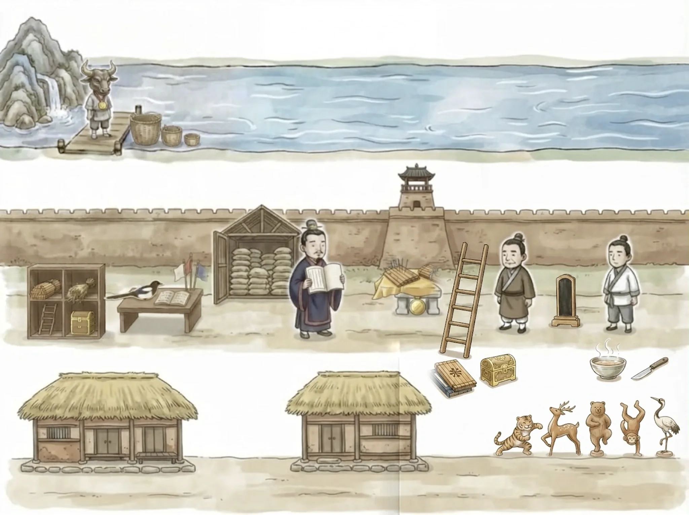
| 소품 | 잠그는 사실 (테스트 모드: 탭하여 확인) |
|---|---|
| [틀] 세 레인 — 뒤 강(왼쪽 산골짜기 폭포에서 시작하는 상류) · 가운데 흙길과 누런 흙 성벽·봉화대(漢) · 앞 초가 두 채의 빈 거리 왜? | ①줄 先秦·漢 구간 — 本草 강의 발원 = 神農本草經 / 中國 길 = 四大經典·扁鵲·淳于意·黃帝內經·張仲景·華佗 / 한국 거리 = 없음(교재 ①줄 한국 항목 0) |
| 다리 — 강이 여기서 시작한다(本草의 발원). 흙 성벽+봉화대 = 漢. 거리는 일부러 비워 둠. ▸ 말판 ①줄 r1a(2026-10-15 — Flash-Lite 바탕·구역 편집, 재편집 0회). 판독(blind18): 시대 戰國~兩漢/漢 1순위 둘 다. ▸ 단원 통합(2026-10-25) — 말판 r1a를 허브 패널 s01u01로 올림. 낱장 s02p01·s05p01의 행이 여기로 옴(교재 대조 정정·추가 반영). | |
| [강·1] 산 아래 나루에 뿔 달린 소머리 탈을 쓴 농부(혼종) · 발치에 크기가 다른 바구니 셋(대·중·소) · 목에 금메달 왜? | 『神農本草經』(秦漢) — 최초의 藥物學 전문서 · 365종 · 上·中·下 三品(120·120·125) |
| 다리 — 神農 = 소머리(사람 몸에 탈 — ②줄 蘇敬의 관복 소와 갈림), 三品 = 바구니 셋, 최초 = 금메달(교재 p.185). 구역 판독(z16)·최종 2인 모두 1단계부터 神農本草經·最古·三品 복원. | |
| [길·0] 길 왼쪽 끝 2×2 네 칸 나무 책함 — 죽간 묶음 · 풀 다발 · 작은 여섯 단 사다리 · 작은 금궤 왜? | 四大經典 = 黃帝內經 · 神農本草經 · 傷寒論 · 金匱要略 |
| 다리 — 칸마다 같은 판의 네 기호(죽간=內經, 풀=本草經, 사다리=傷寒論, 금궤=金匱要略)를 작게 넣어 「넷이 한 함」. **미판독 행(B)** — 구역 판독(z16) ✗, 최종 G ½(「4대 고전 색인」 추정)·H ✗(周禮 醫制·藝文志 方技略). 내용물 넷은 둘 다 열거함. 다음 손질 후보. ▸ 사전 등재(2026-10-25) — 四大經典(네 칸 책함) 신설 → blind66z z21 2단계 ✓(1단계는 미확정). | |
| [길·1] 낮은 나무 책상 위에 납작하게 엎드린 까치 한 마리(扁鵲) · 책상 모서리에 작은 깃발 셋 · 펼친 책 한 권 왜? | 扁鵲(秦越人, 전국) 『難經』 81難 — 臟腑 공헌 셋: 左腎爲腎·右腎爲命門 / 腎間動氣 / 三焦有名而無形 |
| 다리 — 鵲 = 까치(S 「납작」은 Flash-Lite가 약하게 그림), 難經 = 펼친 책, 셋 = 깃발 셋. 구역 판독(z16)·최종 둘 다 扁鵲·難經 복원; 깃발 셋은 寸關尺·뜻 불명으로 읽혀 「臟腑 공헌 셋」은 안 닿음(잔결). | |
| [길·2] 곡식 가마니가 천장까지 쌓인 문 열린 곳간 앞에 선 남색 관복 관리 · 두 손에 펼친 괘선 장부 왜? | 淳于意(西漢 倉公) — 診籍 = 診療簿(진료 기록부) |
| 다리 — 倉 = 곳간 앞 관리(사전 갈림: 관리가 서 있으면 倉 — 藏 아님), 診籍 = 장부. 금메달 없음(교재 「최초」 없음). 구역 판독(z53)·최종 둘 다 倉公 淳于意·診籍 복원(사전 倉 갈림을 둘 다 적용). | |
| [길·3] 낮은 돌 제단 위 노란 비단 보자기에 죽간 두 더미 — 왼쪽 더미엔 가는 침 여러 개, 오른쪽 더미는 흰 끈으로 묶임 · 제단 앞면에 금메달 왜? | 『黃帝內經』 — 현존 最古 醫書 · 西漢 완성(黃帝에 依託) · 素問 9권 + 靈樞(鍼經) 9권 |
| 다리 — 黃 = 노란 보자기(옷이 아니라 — 脾·心 회피), 두 더미 = 素問(흰 끈=素)·靈樞(침=鍼經), 最古 = 금메달(교재 p.9). 9+9는 안 센다. 구역 판독(z53)·최종 둘 다 黃帝內經·最古·素問·靈樞 복원. | |
| [길·4] 갈색 옷 남자 곁 여섯 단 나무 사다리 · 발치에 눈송이 표지 책 + 작은 금궤 · 뒤 땅에 검은 위패 왜? | 張仲景(東漢) 『傷寒雜病論』 → 傷寒論·金匱要略(晉 王叔和가 나눔) · 以六經統百病 · 方書之祖 |
| 다리 — 六經 = 사다리 여섯 단(③줄 成無己가 빌려 쓴 기호의 원주인), 傷寒 = 눈송이(사전 寒), 金匱 = 금궤, 方書之祖 = 위패(祖). 구역 판독(z94)·최종 둘 다 傷寒論·金匱要略·六經 복원(사다리 6단을 셈); 위패는 醫聖?·中?으로 미상(잔결). 「張 = 활」 기호는 쓰지 않았다. | |
| [길·5] 흰 옷 남자 곁 땅에 김 나는 사발 + 작은 수술칼 · 앞 땅에 두 발로 서서 체조하는 작은 동물 조각상 다섯(호랑이·사슴·곰·원숭이·학) 왜? | 華佗(東漢) — 麻沸散(痲醉 後 開腹手術) · 五禽戲(虎鹿熊猿鳥※) · 『中藏經』 |
| 다리 — 麻沸散 = 사발+칼, 五禽 = 동물 다섯(이름은 교재에 없음 ※). 구역 판독(z94)·최종 둘 다 華佗·麻沸散·외과·五禽戲 복원(다섯을 셈). 사발이 사전 補(국물)와 겹친다는 지적 — 칼과 짝이라 麻沸散으로 풀림. | |
🔗 의학사 말판 ①줄 晉 — 대숲 길(皇甫謐 · 王叔和 · 葛洪) · 兩晉→南北朝 갈림길 의학사·①先秦漢晉 #s01u02
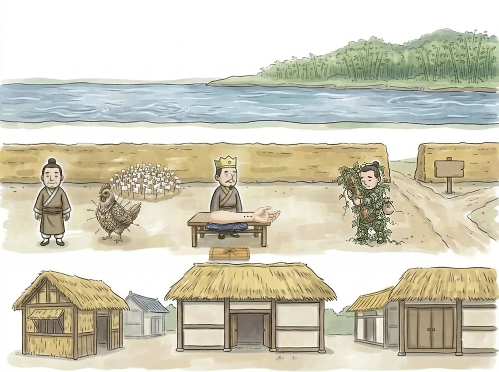
| 소품 | 잠그는 사실 (테스트 모드: 탭하여 확인) |
|---|---|
| [틀] 세 레인 — 뒤 강(건너편 대숲 언덕, 나루 없음) · 가운데 흙길과 흙담, 오른쪽 끝 두 갈래 갈림길 + 글자 없는 빈 표지판 · 앞 초가 세 채의 빈 거리 왜? | ①줄 晉 구간 — 本草 강 = 없음 / 中國 길 = 皇甫謐·王叔和·葛洪 / 갈림길 = 兩晉 → 南北朝 경계(②줄로) / 한국 거리 = 없음 |
| 다리 — 대숲 = 晉(竹林), 갈림길 = 南北朝 분열 예고. ▸ 말판 ①줄 r1b(2026-10-15 — 4 Argon 바탕, Flash-Lite 구역 편집 3회, 재편집 0회). 판독(blind18): 시대 魏晉/三國 1순위 둘 다(갈림길을 둘 다 「南北朝 예고」로 읽음). ▸ 단원 통합(2026-10-25) — 말판 r1b를 허브 패널 s01u02로 올림. 낱장 s02p01의 행이 여기로 옴(교재 대조 정정·추가 반영). | |
| [길·1] 빈손 남자 곁에 비늘 갑옷을 입은 닭만 한 새 한 마리(혼종) — 갑옷에 가는 침 여러 개 · 목에 금메달 · 뒤에 흰 작은 깃발이 빽빽한 깃발밭 왜? | 皇甫謐(晉) 『鍼灸甲乙經』 — 現存 최초의 침구학 서적 · 수혈 349(교재 계보 349→354→359→359→361) ★晉(개론 p.66 「秦」은 오식) |
| 다리 — 甲 = 갑옷(비늘), 乙 = 새, 鍼灸 = 침, 現存 최초 = 금메달(교재 p.11), 349 = 깃발밭(③줄 王惟一·王執中과 공유하는 수혈 기호). ②줄 醫學 교실의 갑옷+새 표지의 원주인. 구역 판독(z12)·최종 둘 다 1단계부터 針灸甲乙經·最古·349(추정) 복원. Flash-Lite가 「새」를 닭으로 그렸으나 乙로 읽힘. | |
| [길·2] 왕관 쓴 남자 앞 나무 탁자 위 손목 방석에 놓인 사람 팔뚝 하나(손바닥 위) — 손목 안쪽에 검은 점 셋 · 탁자 아래 끈으로 묶어 정리한 죽간 더미 왜? | 王叔和(晉) 『脈經』 — 24종 脈象 · 寸關尺과 臟腑 관계 · 獨取寸口 / 傷寒雜病論을 정리하여 傳함 ★『脈訣』은 高陽生(함정) |
| 다리 — 王 = 왕관(②줄 王燾·王冰과 같은 王 — 무대가 가른다), 脈 = 손목 점 셋(寸關尺), 정리 = 묶은 죽간. 금메달 없음(교재 「최초」 없음). 구역 판독(z41)·최종 둘 다 1단계부터 王叔和 脈經·寸關尺·傷寒論 편차 복원; 사전 「充 = 맨팔 위」 갈림을 검토하고 기각(걷어올린 소매 없음·점이 寸口 자리). | |
| [길·3] 잎 달린 칡덩굴이 온몸과 통나무를 휘감은 남자가 굵은 통나무를 두 팔로 끌어안고 섬 · 팔꿈치 뒤에 끈으로 매단 작은 헝겊 주머니 왜? | 葛洪(東晉) — 『抱朴子』 · 『肘後備急方』 · 『金匱藥方』 · 『玉函方』 |
| 다리 — 葛 = 칡덩굴, 抱朴 = 통나무 포옹(자세는 바탕에서), 肘後 = 팔꿈치 뒤 주머니. 金匱藥方은 張仲景 금궤와 겹쳐 싣지 않음. 구역 판독(z75)·최종 둘 다 1단계부터 葛洪·抱朴子·肘後備急方 복원; 주머니가 사전 收(삼베 자루)와 겹친다는 지적(자리로 가름). | |
장면 2 · 의학사 말판 ②줄 南北朝·隋·唐
🔗 의학사 말판 ②줄 南北朝·隋 — 本草 강(陶弘景 · 雷公 · 徐之才) · 中國 길(劉涓子 · 全元起 · 巢元方 · 楊上善) · 百濟·新羅 거리 의학사·②南北朝隋唐 #s02u01
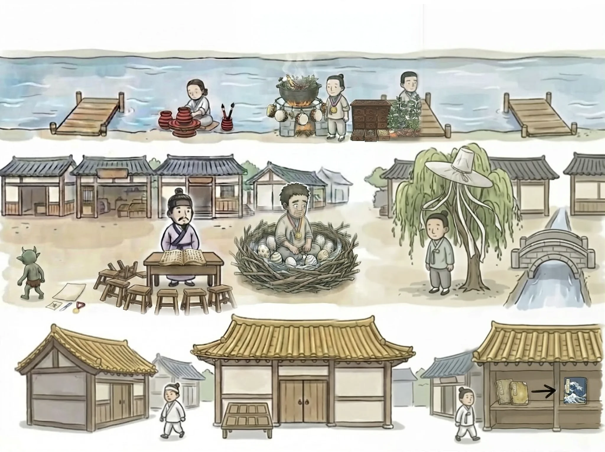
| 소품 | 잠그는 사실 (테스트 모드: 탭하여 확인) |
|---|---|
| [틀] 세 레인 — 뒤 강(나루 셋) · 가운데 흙길(책상 선생·둥지·버드나무·운하와 돌 아치 다리) · 앞 금빛 기와지붕 거리(책방·집) 왜? | ②줄 南北朝·隋 구간 — 本草 강 = 陶弘景·雷公炮炙論·徐之才 / 中國 길 = 劉涓子鬼遺方·全元起·巢元方·楊上善 / 三國·新羅 거리 = 百濟新集方·新羅法師方 → 醫心方 |
| 다리 — 금빛 기와 = 三國·新羅(s07p01 구역 3색). 길 오른쪽 끝 운하·돌다리 = 隋(대운하). ▸ 말판 ②줄 r2a(2026-10-15 새벽 — 4 Argon 바탕, 3.5 Flash-Lite 구역 편집·합성) ▸ 단원 통합(2026-10-25) — 말판 r2a를 허브 패널 s02u01로 올림. 낱장 s02p02·s05p01·s05p02·s07p01·s07p02의 행이 여기로 옴(교재 대조 정정·추가 반영). | |
| [강·1] 물레 앞 여인 — 물레 위 붉은 띠·검은 띠가 번갈아 감긴 두 색 항아리 더미 · 곁에 붉은 붓·검은 붓 꽂힌 붓통 왜? | 陶弘景(梁) 『本草經集注』(730종) · 『名醫別錄』 — 本經 朱書 / 別錄 墨書(朱墨 구분) |
| 다리 — 陶 = 도공·물레, 朱墨 = 붉은 붓·검은 붓 + 두 색 항아리. 구역 판독(blind16z z27·z35·z77): 세 세션 모두 1단계부터 陶弘景·本草經集注·朱墨 복원. | |
| [강·2] 강가 돌화덕 위 큰 무쇠 솥에 약초(인삼 뿌리)가 끓고, 화덕을 빙 둘러 작은 북들이 고리로 매달림 · 곁에 금메달 건 사내 왜? | 雷斅 『雷公炮炙論』(南北朝) — 최초의 炮製(포제) 전문서 |
| 다리 — 북 고리 = 雷公(連鼓), 솥에 볶고 끓임 = 炮炙, 금메달 = 최초. 구역 판독(z35·z77): 1단계부터 雷公炮炙論·최초 포제서 복원. | |
| [강·3] 나루 위 사내 곁 약서랍장(아래 칸 열림) · 서랍장 오른쪽 뿌리째 선 약초 두 포기 · (v4) 서랍장 위 큰 달팽이 + 붉은 끈으로 묶인 약초 한 쌍 + 금메달 왜? | 徐之才(北齊) 『藥對』 — 약물 配伍(짝) |
| 다리 — 서랍(徐 음) · 약초 한 쌍 = 藥對. S(씨앗 5+5 쟁반 = 十種)는 Flash-Lite가 2×3·6칸으로 그려 폐기, A(약서랍장) 는 판독 실패(z35: 徐之才 미판독 / z77: 新修本草?로 오독) → B(달팽이 = 徐=느림) 시도. **미판독 행** — 徐 글자를 나르는 사물이 사전에 없다. 사전 등재 후보: 徐 = 느릿한 달팽이. ▸ 사전 등재(2026-10-25) — 徐 = 약서랍장(갈림: 나루 위 사람 곁) 신설 → blind66z z33 2단계 徐之才 藥對 ✓. 달팽이(v4)는 마감본에 없음 — 약서랍장 + 약초 한 쌍으로 선다. | |
| [길·1] 길 왼쪽 빈 땅 — 뿔 난 작은 도깨비가 등 돌리고 떠나며 떨어뜨린 처방 쪽지 한 장 · 쪽지 곁 작은 외과 칼 · 쪽지 위 금메달 왜? | 『劉涓子鬼遺方』(南北朝) — 현존 최초의 外科 전문서(鬼가 남긴 처방) |
| 다리 — 鬼 = 도깨비, 遺 = 떨어뜨림, 外科 = 칼, 최초 = 금메달. 구역 판독(z27): 1단계부터 劉涓子鬼遺方·최초 외과서 복원(Flash-Lite가 처음엔 도깨비를 거리에 두어 길로 옮김). | |
| [길·2] 책상 앞 선 선생(상투, 모자 없음) · 책상 위 쪽지 빼곡한 펼친 책 · 뒤에 줄줄이 자빠진 걸상들 왜? | 全元起(梁) 『內經訓解』 — 『素問』 최초 주석(교재는 「최초」를 달지 않음) |
| 다리 — 全院 기립(자빠진 걸상 = 일제히 일어선 자국) · 訓解 = 쪽지. 금메달 없음. 구역 판독(z27): 1단계 全元起 복원. 처음 그린 챙 있는 갓이 太(楊上善 太素)로 샜고 챙 없는 갓도 실패 → 「모자 없이 상투」로 고침. | |
| [길·3] 사람 키만 한 나뭇가지 둥지 속에 앉은 초췌한 사내 · 둥지 안 알마다 겉무늬가 다름(점·줄·소용돌이) · 목에 금메달 왜? | 巢元方(隋) 『諸病源候論』 — 최초의 病因·病機·證候學 전문서 |
| 다리 — 巢 = 둥지, 諸病源候 = 무늬 다른 알(源=알, 候=무늬), 최초 = 금메달. 구역 판독(z35·z77): 1단계부터 巢元方·諸病源候論·최초 복원. ③줄 撮要方 집게 둥지와는 「나뭇가지 둥지 + 알 + 사람이 앉음」으로 갈림. | |
| [길·4] 늘어진 버드나무 꼭대기에 흰 천으로 지은 테 넓은 큰 갓 하나가 걸리고, 갓에서 흰 천 띠 여러 가닥이 갈래갈래 늘어짐 · 나무 아래 빈손 젊은이 왜? | 楊上善(隋) 『黃帝內經太素』 — 內經을 분류·재편(최초의 분류 주석) |
| 다리 — 楊 = 버들, 上 = 꼭대기, 太 = 큰 갓(사전), 素 = 흰 천, 분류 = 갈래 띠. 구역 판독(z48): 2단계 楊上善·太素 복원(太 = 큰 갓 사전 기호가 걸림). | |
| [거리] 금빛 기와 책방 진열대 — 낡아 해진 책 두 권 → 화살표 → 파란 물결무늬 표지의 일본풍 책 한 권 왜? | 『百濟新集方』 · 『新羅法師方』 — 失傳, 일본 『醫心方』(984)에 인용되어 전함 |
| 다리 — 낡은 책 둘 = 두 의서, 화살표 → 물결 표지 = 일본 醫心方. 구역 판독(z48): 1단계부터 百濟新集方·新羅法師方 → 醫心方 복원. 승려·둥지는 쓰지 않음(③줄 오독 회피). | |
🔗 의학사 말판 ②줄 唐 — 本草 강(蘇敬 · 孟詵 · 陳藏器 · 李珣) · 中國 길(孫思邈 · 王燾 · 王冰) · 新羅 거리(醫學 · 藥典↔保命司) 의학사·②南北朝隋唐 #s02u02
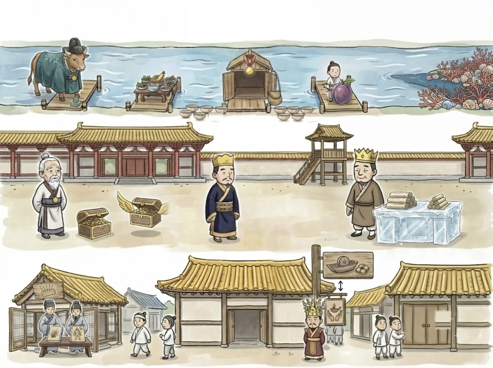
| 소품 | 잠그는 사실 (테스트 모드: 탭하여 확인) |
|---|---|
| [틀] 세 레인 — 뒤 강(나루 넷 + 오른쪽 짙푸른 바닷빛 지류) · 가운데 흙길과 붉은 기둥 대궐 담·누대 · 앞 금빛 기와지붕 거리(교실·관청) 왜? | ②줄 唐 구간 — 本草 강 = 蘇敬·孟詵·陳藏器·李珣 / 中國 길 = 孫思邈·王燾·王冰 / 新羅 거리 = 醫學(692)·藥典↔保命司 |
| 다리 — 붉은 기둥 대궐 담 = 唐. 금빛 기와 = 新羅. ▸ 말판 ②줄 r2b(2026-10-15 새벽 — 4 Argon 바탕, 3.5 Flash-Lite 구역 편집·합성). 판독(blind16z z23·z44·z69): 세 세션 모두 시대 唐/통일신라 1순위(82~85%). ▸ 단원 통합(2026-10-25) — 말판 r2b를 허브 패널 s02u02로 올림. 낱장 s02p02·s05p01·s05p02·s07p01의 행이 여기로 옴(교재 대조 정정·추가 반영). | |
| [강·1] 관복(단령)에 관모를 쓴 소 한 마리가 나루에 서 있다 · 소 발치에 옥새 · 목에 금메달 왜? | 蘇敬(唐 659) 『新修本草』 — 세계 최초의 국가 약전(관찬) |
| 다리 — 蘇 = 소(③줄 圖經 蘇頌과 같은 기호 — 무대가 가른다), 관복·옥새 = 국가 반포, 금메달 = 최초. 구역 판독(z23): 1단계부터 新修本草·蘇敬·최초 국가 약전(659) 복원. | |
| [강·2] 나루 위 밥상 — 반찬 그릇마다 약초 한 포기가 통째로 담기고 밥그릇엔 약초 뿌리(인삼)가 수북 왜? | 孟詵(唐) 『食療本草』 — 食治(음식 요법) 본초 |
| 다리 — 밥 = 약 = 食療. 구역 판독(z23): 1단계 食療本草 40% → 2단계 65%(補-b 「채워 줌」과 밥상으로). 맑은 물 한 그릇이 뜻 없이 그려짐(잔결). | |
| [강·3] 문 열린 작은 나무 곳간(빈 선반) · 문 위 금메달 · 문 옆에 기대 놓은 어깨 망태 · 앞 땅에 빈 사발 다섯·다섯 두 무리 왜? | 陳藏器(唐 739) 『本草拾遺』 — 十劑(宣通補瀉輕重滑澀燥濕) 처음 제창 |
| 다리 — 藏 = 곳간, 器 = 그릇, 拾遺 = 망태, 十劑 = 사발 열, 금메달 = 처음. Flash-Lite가 6+6으로 그려 PIL로 한 개씩 지워 5+5. 구역 판독(z44): 1단계부터 本草拾遺·陳藏器·十劑·拾遺·최초 복원(곳간이 비어 사전 藏 조건과는 안 맞는다고 지적). | |
| [강·4] 나루 위 흰 옷 사내 허리춤에 큼직한 자주색 자두 · 오른쪽 짙푸른 바닷빛 지류 물가에 붉은 산호 가지와 조개껍데기 무더기 왜? | 李珣(唐末·五代) 『海藥本草』 — 외래(해외) 약물 본초 |
| 다리 — 李 = 자두(사전), 海藥 = 산호·조개·바닷빛. 구역 판독(z44·z69): 둘 다 1단계부터 李珣 海藥本草 복원. | |
| [길·1] 흰 수염 노인(빈손, 목에 금메달) 곁 금화 가득 든 나무 궤 둘 — 하나는 땅에, 다른 하나는 양옆에 날개가 돋아 땅에서 한 뼘 떠 있다 · 뒤에 붉은 기둥 대궐 담 왜? | 孫思邈(唐) 『備急千金要方』 · 『千金翼方』 — 최초의 임상 백과(★唐) |
| 다리 — 千金 = 금화 궤, 翼 = 날개, 최초 = 금메달, 唐 = 대궐 담. 구역 판독(z23): 1단계부터 孫思邈·千金要方·千金翼方(翼)·藥王 복원. | |
| [길·2] 남색 옷에 왕관 쓴 남자(빈손) · 담 바깥 나무 누대(망루) 꼭대기에 횃불 왜? | 王燾(唐 752) 『外臺秘要』 |
| 다리 — 王 = 왕관, 外 = 담 바깥(사전), 臺 = 누대, 燾 = 횃불(비춤). 구역 판독(z44): 1단계부터 王燾 外臺秘要 복원 / z69: 30→45%(왕관이 하나뿐이라 冰과 겸해 읽힘 — 띠 경계 탓). | |
| [길·3] 갈색 옷에 왕관 쓴 남자 앞에 얼음 덩이를 깎아 만든 반투명 책상(서리·물방울) · 책상 위 말린 두루마리 두 더미(여섯 + 셋) 왜? | 王冰(唐 762) 『素問』 次注 · 運氣七篇大論 보입 |
| 다리 — 王 = 왕관, 冰 = 얼음 책상, 두루마리 두 더미 = 次注 + 七篇大論(설계는 4+3 = 七, Flash-Lite가 6+3으로 그림 — 같은 채팅 재편집도 수를 못 고침). 구역 판독(z69): 1단계부터 王冰·次注·運氣七篇大論 복원(얼음은 불이 없어 陰이 아니라 성씨 冰으로 읽음). | |
| [거리·1] 문 열린 금빛 기와 교실 — 안에 챙 없는 검은 관모를 쓴 박사 둘이 나란히 서고, 앞 책상에 책 두 권(한 권 표지 풀 다발 · 한 권 표지 갑옷+작은 새) · 처마에 침통 간판 · 밖에 흰 옷 학생 둘 왜? | 新羅 醫學(692 효소왕) — 醫博士 2인, 교재 『本草經』·『甲乙經』 등 |
| 다리 — 醫 = 침통, 博士 2 = 관모 둘, 本草經 = 풀 표지, 甲乙經 = 갑옷+새 표지(①줄 皇甫謐과 같은 기호). 구역 판독(z23): 1단계부터 신라 醫學(692)·博士 2인·本草經·針經 복원(갑옷+새는 明堂·經穴圖로 읽음 — 甲乙 미복원). | |
| [거리·2] 新羅 금관(나뭇가지 세움 장식)을 쓴 자주색 옷 임금 · 곁 나무 기둥에 간판 둘 — 위 = 배 모양 약연 + 끈으로 묶은 약봉지 다발, 아래 = 두 손이 등잔불을 감싼 그림, 두 간판 사이 위아래 양쪽 화살표 · 뒤 닫힌 문 관청 왜? | 藥典 → 保命司(경덕왕 개칭) → 藥典 환원 |
| 다리 — 保命 = 두 손으로 감싼 등잔불(사전), 경덕왕 = 금관. 설계의 양면 회전 간판(앞면 약연 = 藥典)은 Flash-Lite가 못 그려 등잔불 한 면만. 구역 판독(z44): 2단계 保命司(=藥典 개칭) 복원 / z69: 供奉醫師 60%(손이 불꽃을 감싸지 않고 받쳐 듦 → 供奉으로 샘). **잔결** — 藥典 면 없음, 供奉과 갈림 약함. ▸ 손질(2026-10-16 F2 — 4 Argon): 기둥에 藥典 간판(藥 약연 + 典藥 약봉지 다발)과 ↕ 화살표를 더함 → 구역 z34 1·2단계 모두 **藥典 ↔ 保命司 개칭·환원 ✓**(사전 藥·典藥·保命이 그대로 맞물림). 잔결이던 「藥典 면 없음」 해소. | |
장면 3 · 의학사 말판 ③줄 宋·金·元
🔗 의학사 말판 ③줄 宋 — 本草 강(開寶 → 衍義) · 宋 의가 대로 · 高麗 관청 거리 의학사·③宋金元 #s03u01
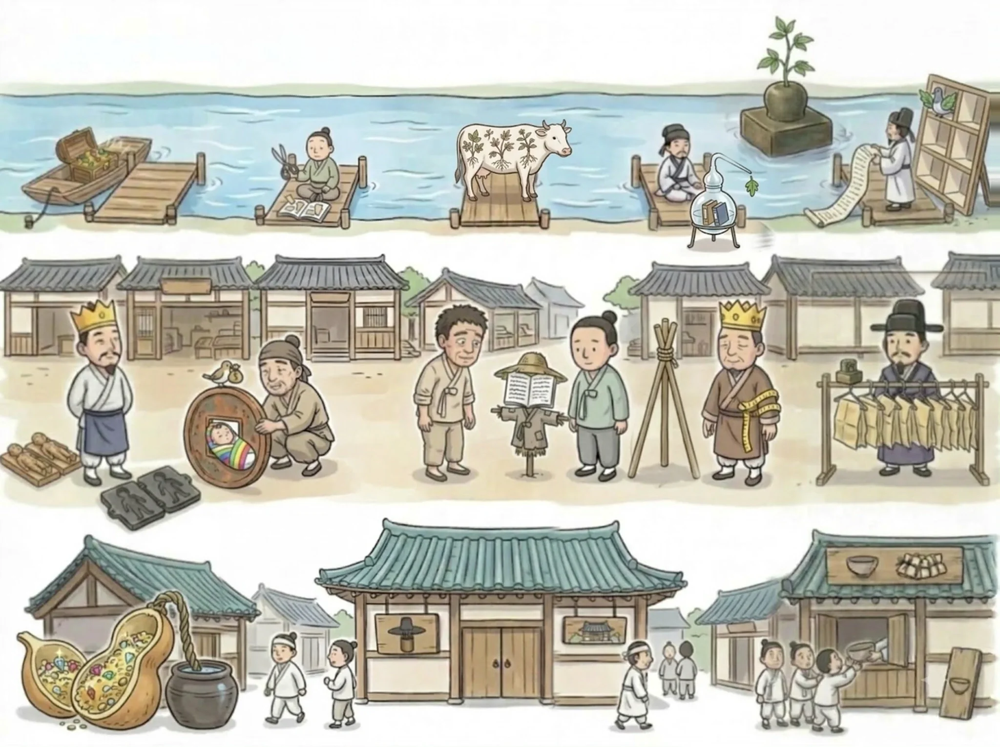
| 소품 | 잠그는 사실 (테스트 모드: 탭하여 확인) |
|---|---|
| [틀] 세 레인 — 뒤 강(왼→오른쪽 흐름) · 가운데 흙길 · 앞 청자빛 지붕 거리 왜? | ③줄 宋 구간 — 本草 강 = 宋 本草書 계보 / 中國 대로 = 宋 의가 / 고려 거리 = 고려 의료 기관 |
| 다리 — 강의 흐름이 곧 시대 순서, 청자빛 지붕 = 高麗(공용 시대 기호). ▸ 말판 ③줄 宋 구간(2026-10-13) — 판독 blind14 2차: 시대 宋/高麗 80~90%. ▸ 단원 통합(2026-10-25) — 말판 r3a를 허브 패널 s03u01로 올림. 낱장 s03p01·s05p01·s07p01의 행이 여기로 옴(교재 대조 정정·추가 반영). | |
| [강·1] 빈 나룻배 안 뚜껑 열린 보물상자 왜? | 『開寶本草』(宋) |
| 다리 — 開=열다, 寶=보물. ▸ 말판 ③줄 宋 구간(2026-10-13) — s05p01[3]에서 옮김. | |
| [강·2] 나루에 앉은 사람 — 큰 가위 + 오린 조각을 덧붙인 펼친 책 왜? | 『嘉祐補註本草』(宋) |
| 다리 — 嘉祐≈가위, 補註=덧붙임. ▸ 말판 ③줄 宋 구간(2026-10-13) — s05p01[4]에서 옮김. | |
| [강·3] 빈 나루에 선 흰 소 — 검은 얼룩 자리마다 잎·줄기·뿌리까지 갈색 잉크로 그린 약초 그림 하나씩 왜? | 圖經本草(本草圖經) — 蘇頌 1061 |
| 다리 — 圖=그림. 교재 저작순서 神農→名醫別錄→新修→圖經→證類→湯液→綱目(개론 p.187) · 개론 p.12·186 · 문Q101 ④ 지문. ▸ 말판 ③줄 宋 구간(2026-10-13) — 신규. ▸ v2(기괴함 A·소리·재질): 이젤 → 약초 얼룩 흰 소(蘇頌=소 · 圖=그림). 구역 판독(blind16z z29): 蘇頌 『圖經本草』 ✓. | |
| [강·4] 앉은 학자 앞 불 없는 유리 증류기 — 둥근 유리 몸통 안에 책 두 권만 세워져 있고, 대롱 끝에 초록 약초 잎 한 장 왜? | 唐愼微(宋) 『經史證類備急本草』 |
| 다리 — 經·史 책에서 오려 證類 칸에 분류. 교재 1097, 校刊本=大觀本草(개론 p.186). ▸ 말판 ③줄 宋 구간(2026-10-13) — s05p01[5]에서 옮김. ▸ v2(기괴함 A·소리·기능전도): 3×3 상자 → 증류기(證類=증류 · 經史 책에서 本草를 걸러냄). 구역 판독(blind16z z29): 2단계에서 『經史證類備急本草』 — 책 둘 = 經·史 ✓. | |
| [강·5] 사람 없는 뗏목 자리에 뗏목만 한 거대한 옥새(네모 돌도장) 하나가 강에 떠 있고, 손잡이 꼭지에서 약초 한 포기가 돛대처럼 자람 왜? | 『政和本草』(宋) — 曹孝忠 1116 · 大觀本草 교정 |
| 다리 — 사람 없이 옥새만 = 관에서 교정한 판본. ▸ 말판 ③줄 宋 구간(2026-10-13) — s05p01[6]에서 옮김. ▸ v2(기괴함 A·크기): 붉은 천 위 옥새 → 뗏목만 한 옥새 + 돛대 약초(政 = 관찬 교정 · 本草). 구역 판독(blind16z z63): 大觀·政和本草 ✓(관인 모양 돌좌대 + 새싹 = 관찬 본초; 손잡이 아치가 돌문(開)으로도 보인다는 잔결). ▸ PC2: 손잡이가 아치(돌문)로 읽혀 둥근 꼭지 도장 손잡이로 다시 그림. 최종 판독 C(아치 판): 미상(大觀·政和 후보) / D(꼭지 판): 大觀本草 — 官 받침대 + 묘목. | |
| [강·6] 흰 옷 학자의 길게 풀린 두루마리 + 곁의 텅 빈 비둘기장(맨 왼쪽 윗칸에만 날개가 초록 약초 잎인 비둘기 한 마리) 왜? | 本草衍義 — 寇宗奭(교재 1195·통설 1116) — 藥物歸經 이론 처음 등장 |
| 다리 — 衍=풀어 늘림(두루마리). 빈 격자의 첫 칸 = 歸經의 첫 등장 — 金 구간 張元素의 격자표로 이어진다. 개론 p.70·186 · 총강 p.460 · 문Q43 ① 지문. ▸ 말판 ③줄 宋 구간(2026-10-13) — 신규. ⚠ 판독: 격자판은 綱目으로도 읽힘(잔결). ▸ v2(2026-10-14, 기괴함 S·혼종): 빈 격자판 → 텅 빈 비둘기장 + 잎 날개 비둘기 한 마리 = 歸(귀소)經(제 칸)의 첫 등장. 金 張元素의 꽉 찬 주기율표 비둘기장과 짝. 최종 판독(2026-10-14) C ✓ 衍義 / D: 政和本草(차선 衍義) — 두루마리 = 衍이 약함(잔결, blind14와 같음). | |
| [길·1] 앞치마 두른 왕관 의원 + 받침대 위에 나란히 눕힌 점박이 청동 인형 둘 + 바닥에 책처럼 펼쳐 놓은 무쇠 주물 틀(사람 모양 빈 홈 둘) 왜? | 王惟一(宋) 『銅人腧穴鍼灸圖經』 · 銅人 2具 주조 — 354(수혈 계보) |
| 다리 — 왕관=王씨, 銅人 둘 = 2具(개론 p.13). ▸ 말판 ③줄 宋 구간(2026-10-13) — s03p01[0]에서 옮김(2具 추가). ▸ v2(기괴함 S·기능전도): 주물 틀 = 銅人 **주조**. 구역 판독(blind16z z33): 王惟一 90%·銅人 2具·주형 복원. | |
| [길·2] 쪼그려 앉은 의원 곁 — 사람 키만 한 녹슨 엽전 한 닢이 서 있고, 네모 구멍 속에 색동 포대기에 싼 아기 · 엽전 테두리 위에 새 한 마리 왜? | 錢乙(宋) 『小兒藥證直訣』 — 五臟辨證을 小兒科에 처음 적용 · 최초 兒科 전문서 |
| 다리 — 錢=돈주머니, 乙=새, 요람=小兒. ▸ 말판 ③줄 宋 구간(2026-10-13) — s03p01[1]에서 옮김. ▸ v2(기괴함 A·크기): 요람 → 거대 엽전 속 아기(錢 · 乙 새 · 小兒 · 색동 = 五臟辨證). 구역 판독(blind16z z14): 錢乙 『小兒藥證直訣』 ✓ 1단계부터. | |
| [길·3] 빈손으로 선 마른 남자 + 오른쪽 허수아비 — 밀짚모자 아래 얼굴 자리에 활짝 펼친 수첩(잉크 물결 줄) 왜? | 許叔微(宋) 『普濟本事方』 |
| 다리 — 허수아비 = 許(소리 다리) · 叔=삼촌 · 微=깨알 수첩. 개론 p.12 개인 방서. ▸ 말판 ③줄 宋 구간(2026-10-13) — s03p01[2]에서 옮김. 1차 판독에서 누더기 옷 탓에 陳·傷으로 읽혀 옷을 깨끗하게 바꾸고 허수아비를 더함. ▸ v2(기괴함 S·혼종): 수첩 적는 동작 삭제, 허수아비 얼굴 = 펼친 수첩 = 本事(몸소 겪은 기록). 구역 판독(z45): 許叔微·本事方 1단계부터 복원. | |
| [길·4] 빈손으로 선 연둣빛 옷 사람 오른쪽 — 마디 없는 나무 장대 셋을 꼭대기에서 밧줄 한 매듭으로 묶어 다리를 벌려 세운 세발 받침(사람 키만 함) 왜? | 陳無擇(宋) 三因說(內因·外因·不內外因) 『三因極一病證方論』 |
| 다리 — 장대 셋 = 三因, 한 매듭 = 極一. 1차의 대나무는 竹→朱(朱肱)로 읽혀 마디 없는 나무 장대로 바꿈. ▸ 말판 ③줄 宋 구간(2026-10-13) — s03p01[3]에서 옮김. ▸ v2(기괴함 S·소리): 합장 삭제, 장대 셋 → 흰 무 셋 = 無擇(무)·三因(셋)·極一(한 매듭). 구역 판독(z45): 陳無擇·三因極一 복원. ▸ v2→v3(S→B 내림, 2026-10-14 밤): 흰 무 셋은 無가 成無己를 불러 판독 2/3 실패(z29·C 모두 成無己) → 장대 셋 한 매듭 세발 받침으로 되돌림(blind14 2차에서 2/2 읽힌 꼴, 합장만 뺌). 최종 판독 D: 陳言 『三因極一病證方論』 ✓. | |
| [길·5] 왕관 쓴 노인 — 두 팔을 내린 채 한 손의 손가락에서 이어진 노란 천 줄자(숫자 없는 눈금)가 제 소매를 감음 왜? | 王執中(南宋) 『鍼灸資生經』 — 同身寸 取穴의 표준 확립 · 359 |
| 다리 — 왕관=王, 손가락 마디로 자기 몸을 재는 자세 = 同身寸. 개론 p.13·67 · 문Q46·Q55 ④·Q97 지문. ▸ 말판 ③줄 宋 구간(2026-10-13) — 신규. ▸ v2(기괴함 S·혼종): 재는 손짓 삭제, 손가락 = 줄자 = 同身寸(中指). 한 번은 왕관이 사라져 다시 씌움(Gemini가 비둘기장 편집을 되돌려 두 출력물을 레인별로 합성). | |
| [길·6] 관복 관리의 매대 = 옷가게 행거 하나 — 옷걸이 어깨마다 종이 약봉지가 한 봉씩 옷처럼 걸쳐짐 + 행거 꼭대기 작은 옥새 왜? | 宋 국가 方書 — 太平聖惠方(국가 第一 方書) · 太平惠民和劑局方(최초 旣成藥典) · 聖濟總錄 |
| 다리 — 옥새=국가 편찬, 똑같은 단지 줄=완제품(旣成藥), 매대=局. 개론 p.12·211 · 문Q39 ④ 지문. ▸ 말판 ③줄 宋 구간(2026-10-13) — 신규. ▸ v2(기괴함 A·소리): 약 단지 줄 → 약봉지 행거(기성복 = 旣成藥典 · 옥새 = 국가). 구역 판독(blind16z z63): 太平惠民和劑局方 ✓ — 「미리 지어 둔 成藥 · 걸대 위 관인 = 官藥局」, 1단계부터. 최종 판독 C ✓ 和劑局方 / D: 宋慈 洗冤集錄(옷걸이 종이 = 빨래 洗, 차선 和劑局方) — 약봉지가 빨래로 읽힐 수 있음(잔결). | |
| [거리·1] 청자빛 지붕 창고 앞 반으로 가른 커다란 박 — 속에 보석·곡식, 박 꼭지의 덩굴이 굵은 밧줄처럼 꼬여 곁의 물 찬 독 속에 드리움 왜? | 濟危寶(963 광종) |
| 다리 — 위기의 백성을 구제하는 보물(寶)함. ▸ 말판 ③줄 宋 구간(2026-10-13) — s07p01[5]에서 옮김. ⚠ 濟(밧줄) 기호 없음(잔결). ▸ v2(기괴함 A·소리·혼종): 보물함·가마니 → 흥부 박(危=가난 구휼 · 寶) + 물에 드리운 밧줄(濟 — blind14 잔결 해소). 구역 판독(blind16z z14): 濟危寶 ✓. | |
| [거리·2] 큰 관청 간판 둘 — 왼쪽 큰 갓 씌운 침통 / 오른쪽 기와지붕 절 왜? | 太醫監 → 典醫寺(공민왕) |
| 다리 — 太=큰 갓 · 醫=침통 / 寺=절. 왼→오른쪽 = 개칭 순서. 典醫寺 1372는 明 건국 뒤라 말판에서 ④줄로 넘어가는 화살표 후보. ▸ 말판 ③줄 宋 구간(2026-10-13) — s07p01[3]에서 옮김. | |
| [거리·3] 창구 건물 — 땅에 기댄 옛 간판(사발) / 지붕 위 긴 새 간판(사발+약봉지 다발) / 창구에서 여러 손이 받아 드는 빈 사발 왜? | 惠民局(1112 예종) → 惠民典藥局(공양왕) |
| 다리 — 惠=여러 손이 받는 사발 · 典藥=약봉지 다발. 이름이 길어진 만큼 간판이 길어짐. ▸ 말판 ③줄 宋 구간(2026-10-13) — s07p01[4]에서 옮김. | |
🔗 의학사 말판 ③줄 金 — 張元素(易水) · 成無己 · 金元四大家 劉·張·李 + 馬宗素 · 高麗 의서 의학사·③宋金元 #s03u02
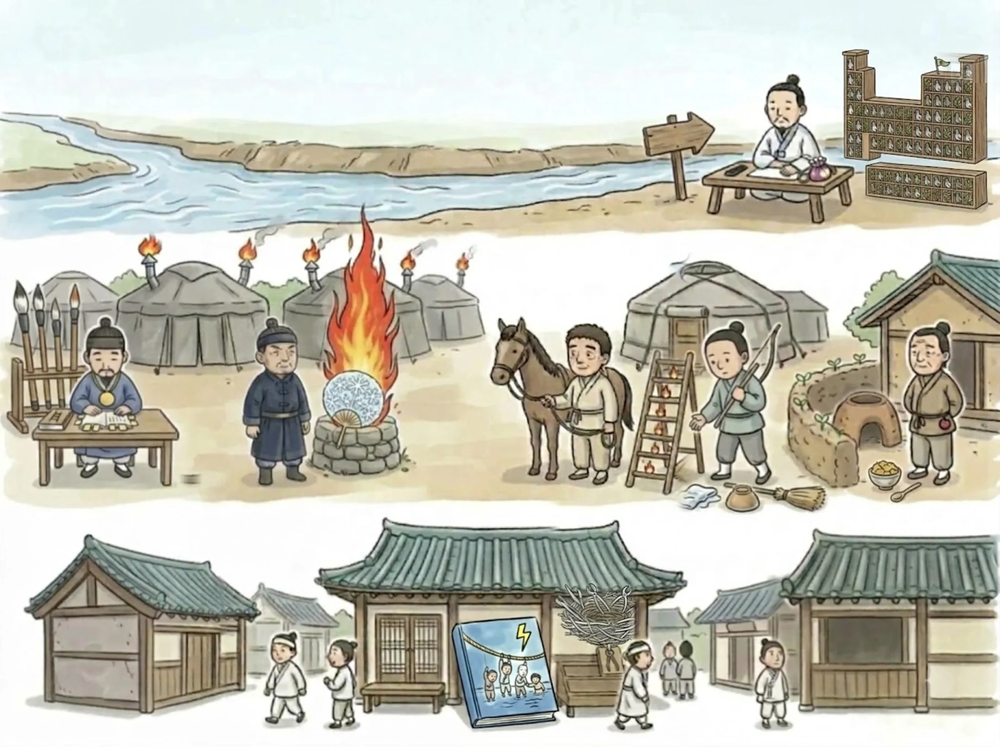
| 소품 | 잠그는 사실 (테스트 모드: 탭하여 확인) |
|---|---|
| [틀] 세 레인 — 뒤 얕은 개울(易水) · 가운데 흙길과 회색 펠트 천막(北方) · 앞 청자빛 지붕 거리 왜? | ③줄 金 구간 — 本草 강 = 張元素(易水學派) / 中國 대로 = 金 의가(成無己 · 金元四大家 劉·張·李 + 馬宗素) / 고려 거리 = 고려 의서 |
| 다리 — 펠트 천막 = 北方 金. 金元四大家 순서 劉→張→李는 왼→오른쪽이 지고, 朱震亨은 다음 元 구간에 있다(★ 朱만 元). ▸ 말판 ③줄 金 구간(2026-10-13) ▸ 단원 통합(2026-10-25) — 말판 r3b를 허브 패널 s03u02로 올림. 낱장 s01p01·s03p01·s07p02·s07p03의 행이 여기로 옴(교재 대조 정정·추가 반영). | |
| [강·1] 개울가 낮은 탁자의 흰 옷 학자 — 주기율표 실루엣의 비둘기장(칸마다 약초 잎 날개 비둘기, 한 마리만 등에 깃발) + 진주 주머니 + 화살표 팻말 왜? | 張元素(潔古)(金) 易水學派 — 引經報使 창안 / 『珍珠囊』(1186)에 歸經 기재 (歸經 첫 등장=宋 寇宗奭 『本草衍義』) / 제자=李杲 |
| 다리 — 격자표 가득 = 歸經(宋 衍義의 빈 격자판이 여기서 다 찬다), 화살표 = 引經報使, 진주 주머니 = 『珍珠囊』. ▸ 말판 ③줄 金 구간(2026-10-13) — s01p01[4]에서 옮김. 구역 판독(blind15z z85): 2단계 張元素·珍珠囊·引經報使·歸經 복원, 1단계는 圖經本草로 읽음(약초 그림판 = 圖). ▸ v2(2026-10-14, 기괴함 S·소리·혼종): 元素 = 주기율표, 꽉 찬 비둘기장 = 珍珠囊에 歸經 기재(宋 衍義의 빈 비둘기장과 짝), 깃발 비둘기 = 引經報使. 구역 판독(blind16z z79): 1단계부터 張元素·珍珠囊·歸經·引經報使 복원. | |
| [길·1] 책상 앞 옅은 남색 옷 학자(빈손) — 목에 금메달 + 쪽지 빼곡한 책 + 사다리 표지 책 + 곁의 무기걸이에 창 대신 꽂힌 사람 키만 한 붓들 왜? | 成無己 『註解傷寒論』=최초 傷寒論 전문 주석 ★金(宋 아님 — 왕조 함정) |
| 다리 — 남의 책(사다리 = 張仲景 六經 = 傷寒論)에 쪽지(注解)를 빼곡히, 금메달 = 교재 「전면적인 주해를 단 최초의 책」(개론 p.12). ▸ 말판 ③줄 金 구간(2026-10-13) — s03p01[4]에서 옮김. 구역 판독(z31): 成無己·注解傷寒論·최초 복원. ▸ v2(기괴함 A·소리): 붓 쓰는 동작 삭제, 무기걸이 붓 = 「성 무기」+註解. 흰 옷 → 남색(肺 회피). 구역 판독(z56): 2단계 成無己·注解傷寒論·최초 복원(1단계는 금메달을 金鏡으로). | |
| [길·2] 탕건 쓴 남색 옷 사람이 빈손으로 선 돌우물 — 우물에서 치솟는 불기둥 + 돌테 위에 세운 눈송이로 엮은 둥근 부채 + 천막 지붕의 불붙은 굴뚝 왜? | 劉完素(金) 寒凉派·主火 — 六氣皆從火化 / 五志過極皆爲熱甚 / 『宣明論方』『素問玄機原病式』 |
| 다리 — 우물에서 물 대신 불 = 六氣皆從火化, 굴뚝 다섯 전부 불 = 五志過極皆爲熱甚, 눈송이(寒) 찬물 = 寒凉派. ▸ 말판 ③줄 金 구간(2026-10-13) — s01p01[0]에서 옮김. 구역 판독 1차(z47): 빨간 옷·테 넓은 모자가 朱(붉음)·太(큰 갓)로 읽혀 朱震亨으로 오독 → 옷을 남색으로, 모자를 벗기고, 물줄기에 눈송이(寒) → 2차(z93) 2단계 劉完素·寒凉派 복원. 굴뚝은 네 개로 나와 하나를 더해 다섯으로 맞춤(규칙 146). ▸ v2(기괴함 A·소리·재질): 호스(동작) 삭제, 한량(寒凉派) + 눈송이 부채. 구역 판독(z61): 2단계 劉完素·寒涼派·六氣皆從火化 복원(1단계 朱震亨 — 돌우물 불 = 相火). | |
| [길·3] 고삐로 매인 말 곁의 사람 + 단마다 불꽃 하나씩 타는 여섯 단 사다리 왜? | 馬宗素(金) — 「六經傳變皆熱證」 (劉完素 계승 · 溫熱學說 示唆) |
| 다리 — 말 = 馬(성씨 기호 신설 — 사전 등재 2026-10-13), 여섯 단 사다리 = 張仲景 六經(s02p01 기호 재사용), 단마다 불꽃 = 皆熱證. 개론 p.181 · p.14 표 · 문Q32 지문. ▸ 말판 ③줄 金 구간(2026-10-13) — 신규(A6). 구역 판독 1차(z52): 말이 사전에 없어 주인 불명 → 馬 성씨 기호 등재 → 2차(z96) 2단계 馬宗素·六經 皆熱證 복원. 불꽃이 일곱이라 하나 지워 여섯으로 맞춤. | |
| [길·4] 긴 활을 든 빈손의 사람 — 발치에 젖어 늘어진 흰 수건 · 엎어 둔 밥그릇 · 눕힌 짚 빗자루 왜? | 張從正(子和)(金) 攻下派 — 汗·吐·下 / 邪去則正安 / 『儒門事親』 |
| 다리 — 수건 = 汗, 위로 던진 그릇 = 吐, 짚 빗자루 = 瀉·下 → 汗吐下 攻邪派, 활 = 張. ▸ 말판 ③줄 金 구간(2026-10-13) — s01p01[1]에서 옮김. 구역 판독(z68·z74): 張從正·攻下 복원. 천막에 기대 둔 둘째 빗자루가 「瀉 중복」으로 읽혀 지움. ▸ v2 B 수리(2026-10-14 밤): 던지는 동작·빗자루질 삭제, 汗·吐·下 소품을 발치 정물로. 구역 판독(blind16z z42): 張從正 攻邪派 汗吐下 三法 ✓ 1단계부터. | |
| [길·5] 흙담 집 노인 — 허리 자두 + 빈 화덕 + 담 위 새싹 + 발치 밥공기에 밥 대신 소복한 마른 황토 덩이, 옆에 눕힌 숟가락 왜? | 李杲(東垣)(金) 補土派·主氣 — 內傷脾胃百病由生 / 『脾胃論』『內外傷辨惑論』 / 膽者少陽春升之氣 |
| 다리 — 흙담(垣) = 補土, 담 안 화덕 = 脾胃, 안팎 바구니 = 內外傷辨惑, 새싹 = 春升之氣, 자두 = 李. ▸ 말판 ③줄 金 구간(2026-10-13) — s01p01[2]에서 옮김. 구역 판독(z74): 李杲·補土·內傷 복원. ▸ v2(기괴함 A·기능전도): 화덕 빵·바구니 둘 삭제(소품 ≤3), 흙밥 = 補土(사전 補-b). 구역 판독(z79): 李杲·補土派·脾胃論 복원(흙은 「노란 곡식」으로 읽혔지만 補-b로 이어짐). | |
| [거리·1] 청자빛 지붕 책방 앞 땅에 벽에 기대 세운 허리 높이의 큰 파란 책 — 표지에 물 위 밧줄 한 가닥에 매달린 사람 여럿 + 작은 노란 번개 왜? | 『濟衆立效方』(김영석) — 立效=즉시 효험 |
| 다리 — 한 밧줄에 여럿 = 濟衆(사전), 번개 = 立效. ▸ 말판 ③줄 金 구간(2026-10-13) — s07p02[2]에서 옮김. 구역 판독 1차(z52): 번개만으로는 急 → 鄕藥救急方으로 오독 → 濟衆 밧줄 그림을 얹어 2차(z96) 濟衆立效方 복원. ▸ v3→v5: 진열대의 작은 책이 둥지 편집 뒤 흐려져 최종 판독 ✗✗ → 바탕 패치(v3) → 큰 책으로 다시 그림(새 채팅, 땅 위). 같은 채팅 재편집은 둥지를 지우거나 책을 되돌렸다. 구역 판독(z58): 濟衆立效方(衆·濟·立效) ✓. | |
| [거리·2] 같은 진열대 — 쇠 집게 표지 책 위에서 솟은, 은회색 쇠 집게들을 얽어 만든 빈 새 둥지 왜? | 『新集御醫撮要方』(최종준) — 撮要=요점 집기 |
| 다리 — 撮 = 집게로 집다. ▸ 말판 ③줄 金 구간(2026-10-13) — s07p02[3]에서 옮김. 구역 판독(z52·z96): 撮要方 복원. ▸ v2(기괴함 S·소리·재질): 새집 = 新集, 집게 = 撮. 1·2차는 둥지가 작고 나뭇가지로 그려져 3차에서 키움. 구역 판독(z91): 1단계부터 新集御醫撮要方·崔宗峻 복원. | |
🔗 의학사 말판 ③줄 元 — 王好古 · 竇默 · 杜本 · 朱震亨 · 滑壽 · 王履 · 高麗 말 의서 의학사·③宋金元 #s03u03
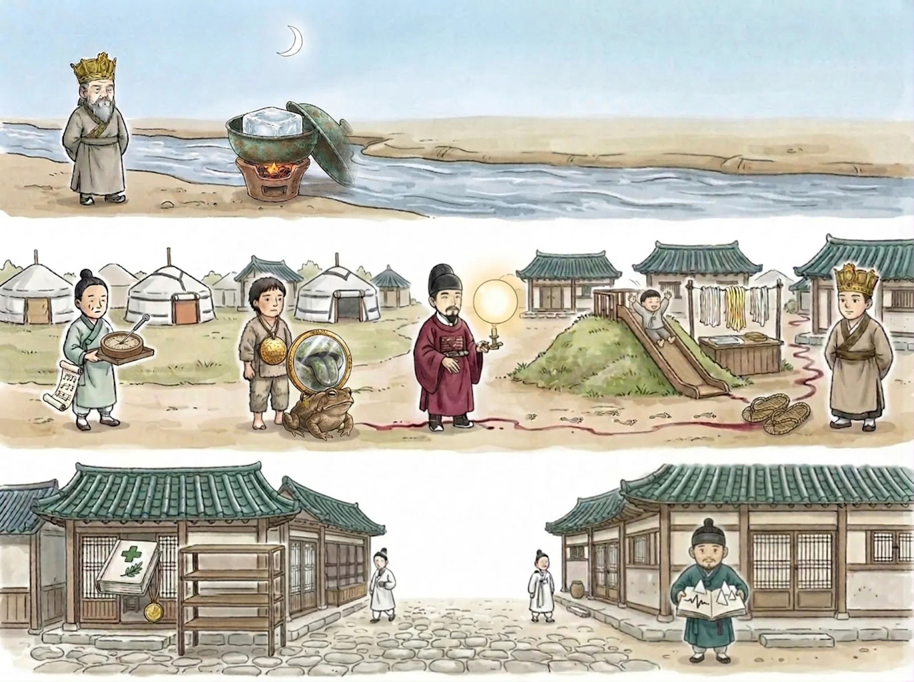
| 소품 | 잠그는 사실 (테스트 모드: 탭하여 확인) |
|---|---|
| [틀] 세 레인 — 다시 넓어진 강 · 흙길과 흰 몽골 천막(게르)들 · 앞 청자빛 지붕 거리 / 하늘 왼쪽 위 초승달 왜? | ③줄 元 구간 — 本草 강 = 王好古 / 中國 대로 = 元 의가(竇默·杜本·朱震亨·滑壽·王履) / 고려 거리 = 고려 말 의서 |
| 다리 — 흰 게르 = 元(몽골). 길 순서 竇默(1196) → 杜本 → 朱震亨 → 滑壽(1341) → 王履(1368)로 시대순을 고쳤고(v1은 竇默이 맨 오른쪽), 붉은 시내는 朱震亨 발치에서 王履 발치까지 흐른다. ▸ 말판 ③줄 元 구간 v2(2026-10-14 — 기괴함 설계 적용·3.5 Flash-Lite 바탕·4 Argon 구역 편집) ▸ 단원 통합(2026-10-25) — 말판 r3c를 허브 패널 s03u03로 올림. 낱장 s01p01·s03p01·s06p01·s07p02·s07p03의 행이 여기로 옴(교재 대조 정정·추가 반영). | |
| [강·1] 나루의 왕관 노인 곁 — 작은 노란 불꽃이 살아 있는 화로 위에 녹청 슨 골동 청동 탕기, 그 안에 큼직한 얼음덩이(뚜껑은 곁에) 왜? | 王好古(元) 『湯液本草』『此事難知』 — 內感陰症 연구 (陰證略例※) |
| 다리 — 왕관 = 王, 골동 탕기 = 湯液本草·好古, 살아 있는 불과 맞댄 얼음 = 陰(사전 갈림) → 內感陰症. 기괴함 A(기능전도). ▸ v2. 구역 판독(blind16z z51·z72·z88): 1·2단계 모두 王好古·湯液本草·陰證 복원. | |
| [길·1] 연둣빛 옷 사람 — 두 손에 받쳐 든 쟁반 위 둥근 나침반(바늘이 긴 쇠침) + 옆구리의 음표 두루마리 왜? | 竇默(漢卿)(元) 『鍼經指南』 — 標幽賦·通玄指要賦 등 歌賦體 · 八脈交會穴 중시 |
| 다리 — 침 바늘 나침반 = 鍼經指南, 음표 두루마리 = 賦. 「쉿」 손짓(동작)은 뺌. ▸ v2. 기괴함 안(도토리묵 나침반 = 默)은 두 번 모두 안 읽혀(z51 忽思慧 · z72 滑壽/朱震亨) 평범한 나침반으로 내림(A→B). 구역 판독(z88): 竇漢卿·鍼經指南·標幽賦 복원. | |
| [길·2] 베옷 사람 — 목에 금메달 + 발치의 갈색 두꺼비가 등에 진 큰 금테 거울, 거울 속에 이끼 낀 혀 왜? | 杜本(元) 『敖氏傷寒金鏡錄』=최초 舌診 전문서 |
| 다리 — 두꺼비 = 杜(소리), 金鏡에 비친 혀 = 舌診, 이끼 = 舌苔(사전 苔), 금메달 = 최초(개론 p.243). 기괴함 S(혼종). ▸ v2. 구역 판독(z37): 1단계부터 敖氏傷寒金鏡錄·최초 舌診·두꺼비=杜 복원. | |
| [길·3] 챙·날개 없는 검은 관모에 붉은 옷 사람 — 한 손에 든 촛대의 초 위에 초보다 훨씬 큰 해 + 발치에서 시작하는 붉은 시내 + 하늘 초승달 왜? | 朱震亨(丹溪)(元) 滋陰派 — 陽常有餘陰常不足·相火論 / 『格致餘論』『局方發揮』 ★劉·張·李=金, 朱만 元(왕조 함정) |
| 다리 — 촛대 위 해 = 陽常有餘(초 = 相火), 실낱 초승달 = 陰常不足, 붉은 시내 = 丹溪, 붉은 옷 = 朱. 기괴함 S(크기·기능전도). ▸ v2. 구역 판독(z37): 朱震亨·陽常有餘陰常不足·滋陰派 복원. 1차 사모 날개가 太로 샐 위험(15%) → 날개 없는 관모로. | |
| [길·4] 흙더미 미끄럼틀을 신나게 타고 내려오는 아이 + 국수 수레 빨랫줄의 국숫발(그중 두 가닥만 굵은 노란 국수) 왜? | 滑壽(元) 『十四經發揮』=12正經+任督 |
| 다리 — 滑 = 미끄럼, 국숫발 중 굵은 두 가닥 = 12正經 + 任督. 붉은 두 가닥 → 노란 두 가닥(血 해소). ▸ v2. 꼭대기에 앉은 아이(정물)로는 滑이 안 읽혀(z24·z66) 타고 내려오는 아이로 되돌림 → 구역 판독(z83): 滑壽·十四經發揮 복원. | |
| [길·5] 붉은 시내 끝의 왕관 쓴 젊은이 + 발치에 벗어 놓은 짚신 한 켤레 + 시내를 거슬러 오른 발자국 왜? | 王履(元末明初) 『醫經溯洄集』 — "溫病不得混稱傷寒"※ (朱震亨 학파) |
| 다리 — 履 = 신(짚신), 거슬러 오른 발자국 = 溯洄, 붉은 시내(朱震亨에서 흘러옴) = 丹溪 학파, 왕관 = 王. ▸ v2. 기괴함 안(몸통이 짚신인 연어)은 세 번 모두 「묶인 물고기」로 그려져 평범한 짚신으로 내림(A→B). 왕관 노인은 王好古와 겹쳐 젊은이로. 구역 판독(z83): 王履·醫經溯洄集·丹溪 문인 복원. | |
| [거리·1] 청자빛 지붕 약방 창가에 걸린 하얀 구급상자 책(초록 십자 + 약초 잎) + 걸린 금메달 왜? | 『鄕藥救急方』(고려) = 현존 最古 의서 |
| 다리 — 救急 = 구급상자, 잎 = 鄕藥, 금메달 = 현존 最古(개론 p.17). 빨간 십자 → 초록(血 해소). ▸ v2. 구역 판독(z51·z72·z88): 鄕藥救急方·현존 最古 복원. | |
| [거리·2] 챙 없는 작은 검은 관모·청록 단령 관리 — 가슴 앞에 펼쳐 든 책, 먹선 맥박 물결선이 종이 밖으로 솟아 같은 높이의 종이 봉우리 셋(팝업) 왜? | 『診脈圖訣』 鄭道傳 ★허브 오답 17회 |
| 다리 — 맥박 물결 책 = 診脈圖, 봉우리 셋 = 三峯(鄭道傳의 호) — 사전에 三峯 기호 신설(2026-10-14). 기괴함 S(혼종). ▸ v2. 1차(z66): 두건이 승려로, 맥박 = 救急, 봉우리 = 피라미드로 읽혀 실패(blind15 포함 4회째) → 三峯 등재 + 두건 → 작은 관모 → 구역 판독(z19): 1단계부터 鄭道傳·診脈圖訣 복원(85%). | |
장면 4 · 의학사 말판 ④줄 明
🔗 의학사 말판 ④줄 明 前·中期 — 本草綱目 · 徐鳳 · 李梴 · 馬蒔 · 方有執 · 楊繼洲 · 朝鮮 거리(濟生院 · 內醫院 · 鄕藥集成方 · 醫方類聚 · 鍼灸擇日編) 의학사·④明 #s04u01
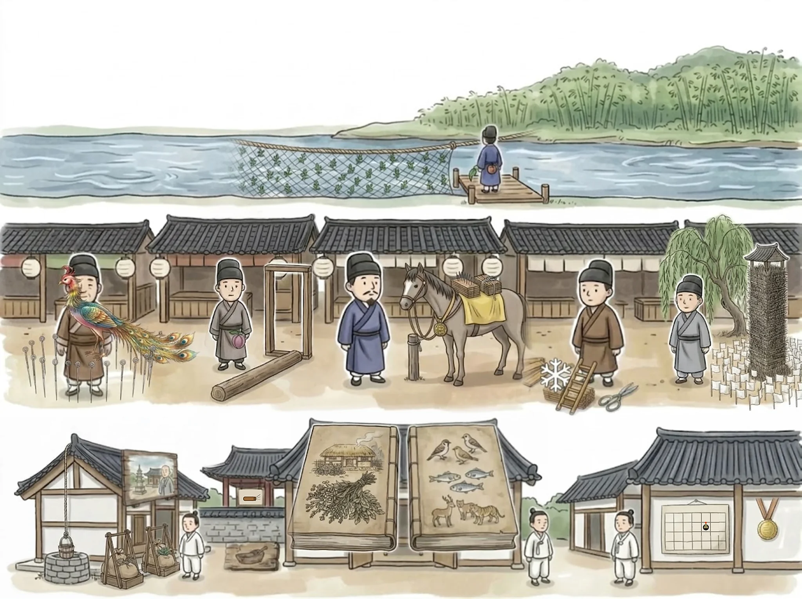
| 소품 | 잠그는 사실 (테스트 모드: 탭하여 확인) |
|---|---|
| [틀] 세 레인 — 뒤 강(건너편 대숲 언덕, 가운데 나루) · 가운데 흙길과 검은 기와 저잣거리(처마마다 흰 종이 등롱) · 앞 흰 회벽·검회색 기와의 조선 관청 넷 왜? | ④줄 明 前·中期 구간 — 本草 강 = 李時珍 本草綱目 / 中國 길 = 徐鳳·李梴·馬蒔·方有執·楊繼洲 / 朝鮮 거리 = 濟生院·典醫監 · 內藥房→內醫院 · 鄕藥集成方·醫方類聚 · 鍼灸擇日編 |
| 다리 — 등롱 저잣거리 = 明(옛 s04p01 「明 서점가」), 흰 회벽·검회색 기와 = 朝鮮. ▸ 말판 ④줄 r4a(2026-10-16 — 4 Argon 바탕, Flash-Lite 구역 편집 6회 + PIL 손질 2곳). 판독(blind19): 시대 明/朝鮮 前期 1순위 둘 다(85%). 대숲은 바탕이 ①줄 참조 그림에서 옮겨 온 것 — 두 판독자 모두 「뜻 미상」. ▸ 단원 통합(2026-10-25) — 말판 r4a를 허브 패널 s04u01로 올림. 낱장 s04p01·s05p02·s07p01·s07p02의 행이 여기로 옴(교재 대조 정정·추가 반영). | |
| [강·1] 강을 가로지른 거대한 어망 — 굵은 벼리 줄이 수면을 가로지르고 그물코마다 약초 한 포기 · 나루 위 남색 옷 사람의 허리춤 자두 왜? | 李時珍 『本草綱目』(1578 완성 · 1596 간행※ · 1892종※) — 綱目 체계 창안 · 16세기 이전 藥物學 총괄 · 政和本草 기본 |
| 다리 — 李 = 허리춤 자두(사전), 綱 = 벼리 줄, 目 = 그물코, 총괄 = 강 전체를 훑는 그물. 政和本草 = 옥새는 Flash-Lite가 부처 얼굴 금메달로 그려(금메달 = 「최초」와 충돌) 버렸다. 구역(z73·z52)·최종 둘 다 1단계부터 李時珍 本草綱目. | |
| [길·1] 갈색 옷 노인 어깨의 봉황(붉은 볏·긴 꼬리깃) · 노인 둘레 땅에 둥근 손잡이 달린 침 열댓 개가 동그랗게 꽂힘 왜? | 徐鳳 『鍼灸大全』(1439) ★楊繼洲 『鍼灸大成』과 함정 |
| 다리 — 鳳 = 봉황, 鍼灸 = 침, 全 = 빈틈없이 둘러싼 원. 첫 편집(RA)은 꼬리에 침을 둘러 꽂아 「지네 다리」로 읽혀 龔廷賢(萬病回春)으로 샜고(z17), 침을 손잡이 달린 침으로 바꿔 땅에 원으로 꽂은 RA2로 갈아 끼웠다 → z52·최종 둘 다 1단계부터 徐鳳 鍼灸大全. 봉황 꼬리가 공작 깃처럼 그려짐(프롬프트의 「공작처럼」 탓). | |
| [길·2] 회색 옷 남자 허리춤 자두 · 벽 없이 선 나무 문틀 · 문틀 앞에 길게 누운 통나무 왜? | 李梴 『醫學入門』(1575) |
| 다리 — 李 = 자두, 入門 = 문틀(사전 門), 梴 = 긴 통나무. 구역(z17·z52)·최종 둘 다 1단계부터 李梴 醫學入門. 이 구역(RA)은 Flash-Lite가 길 레인을 세로로 눌러 그려 1.08배 늘려 맞춤(RAat). | |
| [길·3] 남색 옷 남자 곁 말뚝에 고삐로 매인 말 — 등에 노란 보자기 + 죽간 두 더미(침 꽂힌 더미 / 흰 끈 더미) · 말 가슴에 금메달 왜? | 馬蒔 『素問註證發微』『靈樞註證發微』 — 內經 전체에 대한 최초 주석서 |
| 다리 — 馬 = 고삐 매인 말(사전), 黃·두 더미 = ①줄 黃帝內經 기호 재사용(素問·靈樞), 최초 = 금메달(교재 p.16). 「두 더미 모두 쪽지」(註)는 그려지지 않음. 구역(z73)·최종 둘 다 馬蒔 注證發微(J는 금메달 뜻 미확정). | |
| [길·4] 갈색 옷 남자 앞 땅에 흩어진 죽간 조각 · 끈으로 다시 묶은 죽간 한 묶음 — 묶음 위에 큰 흰 눈송이 하나와 여섯 단 작은 나무 사다리 · 가위 왜? | 方有執 『傷寒論條辨』(1589 · 錯簡重訂※) |
| 다리 — 錯簡 = 흩어진 조각, 重訂 = 다시 묶음, 傷寒 = 눈송이(사전 寒). **미판독 행(B)** — z81 張介賓 類經, 최종 I 吳崑 素問吳注(45%)/張介賓 類經, J 미확정(吳崑?·高武?). 「잘라 다시 엮음」은 둘 다 읽었으나 성씨 기호가 없고 눈송이가 반짝임으로 보여 傷寒論에 닿지 않음. 다음 손질 후보: 方 = ?, 눈송이를 크게. ▸ 손질(2026-10-16 F3 — 4 Argon): 눈송이를 크게, 張仲景의 六經 사다리를 묶음 위에 → 구역 z57 2단계 **方有執 『傷寒論條辨』 錯簡重訂派의 시작 ✓**(1단계는 눈송이 = 雪 → 薛己, 사전의 寒이 傷寒으로 돌려놓음). B → 2단계 ✓. | |
| [길·5] 회색 옷 남자 곁 수양버들 · 가는 침을 빈틈없이 쌓아 꼭대기에 지붕돌까지 얹은 탑 · 탑 둘레 흰 깃발밭 왜? | 楊繼洲 『鍼灸大成』(1601) · 수혈 359 ★徐鳳 『鍼灸大全』과 함정 |
| 다리 — 楊 = 버드나무(②줄 楊上善과 같은 楊), 成 = 다 쌓은 탑, 359 = 깃발밭(①③줄 수혈 계보). 같은 구간의 徐鳳(원 = 全)과 꼴로 갈림. 구역(z81)·최종 둘 다 1단계부터 楊繼洲 鍼灸大成. | |
| [거리·1] 흰 회벽 관청 앞 돌우물에 드리운 두레박 밧줄 · 지게 둘에 실린 약초 가마니 · 처마 밑에 기대 놓은 간판(기와 절 한 채 + 돌탑 + 회색 승복 스님) 왜? | 濟生院(1397 태조 · 鄕藥 수납) / 典醫監(고려 典醫寺 → 조선) |
| 다리 — 濟 = 우물 밧줄(사전), 鄕藥 수납 = 지게 약초. 典醫寺 = 절 간판은 「산수화」로 읽혀 東·寶鑑 오인(z17)·「鄕」(최종 I) — 典醫監은 못 읽음. 구역 z17·z52(2단계)·최종 둘 다 濟生院. ▸ 손질(2026-10-16 F4 — 4 Argon): 산수화 간판을 절·돌탑·스님으로 → 구역 z15 2단계 **寺 ✓**(사전)이나 濟生院 묶음의 「불교식 구료」로 읽혀 活人署(←東西大悲院)·濟生院으로 감. F4b(스님이 침통을 든 동자승으로 거리에 나옴 → z36)도 침통이 「화살통·붓통」으로 남아 典醫監 ✗ — **典醫監 3회 실패(B) — 받아들임**. 채택본 = F4(간판만, 거리 인물 그대로). ▸ 사전 등재(2026-10-25) — 典醫監(관청 간판 속 절 = 典醫寺의 寺) 신설 → blind66z z47 2단계 典醫監 ✓(1단계 活人署). | |
| [거리·2] 궁궐 담 안 붉은 기둥 전각의 처마에 침통 그림 작은 간판 · 담 앞 땅에 떼어 놓은 옛 간판(배 모양 약연 그림) 왜? | 內藥房 → 內醫院(세종 1443) |
| 다리 — 內 = 담 안쪽(사전), 藥 = 약연(사전), 醫 = 침통 간판. Flash-Lite가 간판에 한글 「침통」을 써 넣어 PIL로 침통 그림으로 바꿈(r4a_post.py sign). 첫 편집(RB)은 간판을 옆 책방에 달아 RB2로 다시. 구역 z52·z73(2단계) 內醫院 ✓ · 최종 I 內醫院 ✓ / J 典醫監?(✗). | |
| [거리·3] 책방 앞에 세운 집채만 한 책 두 권 — 왼쪽 표지 초가집+약초 다발, 오른쪽 표지 칸 없이 새는 새끼리 · 물고기는 물고기끼리 · 네발짐승은 네발짐승끼리 세 무리 왜? | 鄕藥集成方 · 醫方類聚(세종) |
| 다리 — 鄕藥集成 = 초가+약초 다발, 類聚 = 같은 것끼리 모은 칸. 鄕藥集成方은 구역(z73)·최종 둘 다 ✓, 醫方類聚는 ✗(I = 鄕藥集成方의 본초 그림, J = 鄕藥採取月令). 책이 책방 건물을 다 가림. ▸ 손질(2026-10-16 F3): 바둑판 칸을 「같은 것끼리 세 무리」로 → 구역 z57 「동물 약재의 부류 분류」로 鄕藥集成方 한 권에 묶임 — **醫方類聚 2회 실패(B)**. 類聚 기호가 사전에 없는 것이 원인. ▸ 사전 등재(2026-10-25) — 類聚(한 표지에 무리 셋) 신설 → blind66z z52 2단계 醫方類聚 확정 ✓, 鄕藥集成方과 갈림 ✓. | |
| [거리·4] 관청 흰 벽에 걸린 칸 많은 달력판 — 한 칸에 검은 점 + 그 위 뜸봉(붉은 불씨) · 달력 옆 벽 금메달 왜? | 鍼灸擇日編(세종 29 · 1447, 김순의·김의손) — 우리나라 최초 鍼灸 전문서 |
| 다리 — 擇日 = 달력 한 칸, 灸 = 뜸봉, 최초 = 금메달(교재 p.235). Flash-Lite가 동그라미 둘과 회색 덩이로 그려 구역 판독(z81)은 鄕藥採取月令(月令 = 달력)으로 샘 → PIL로 한 칸·검은 점·뜸봉으로 다시 그림(r4a_post.py cal) → 최종 둘 다 鍼灸擇日編(集) ✓. | |
🔗 의학사 말판 ④줄 明 後期 — 王肯堂 · 溫補派 방 · 吳有性 · 東醫寶鑑 의학사·④明 #s04u02
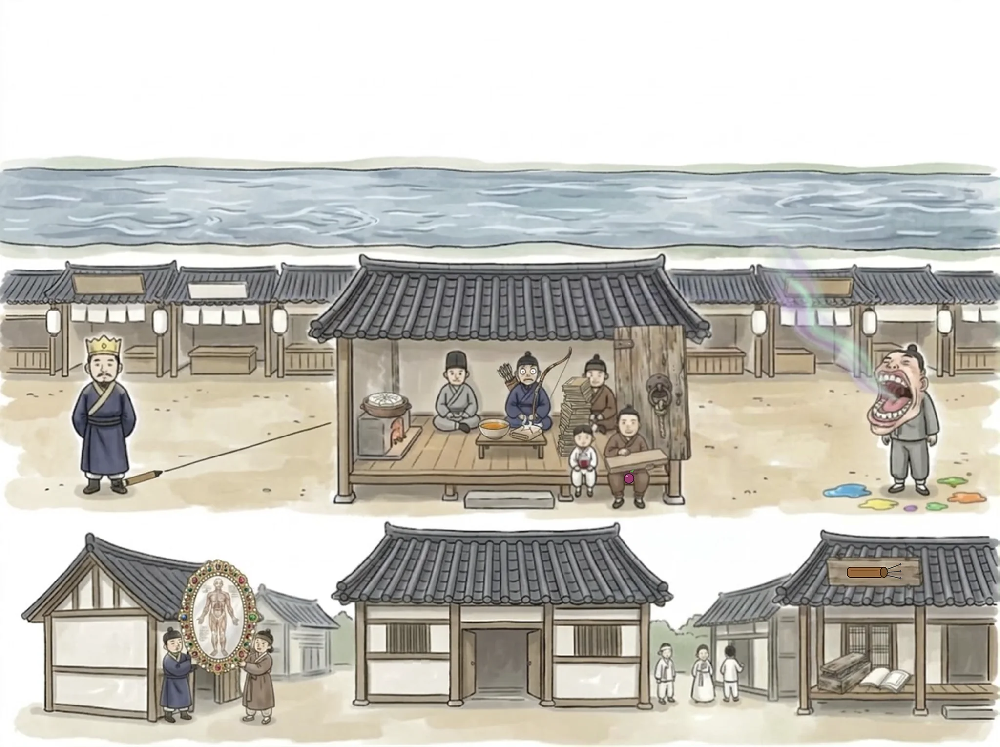
| 소품 | 잠그는 사실 (테스트 모드: 탭하여 확인) |
|---|---|
| [틀] 세 레인 — 뒤 강(나루 없음) · 가운데 흙길과 등롱 저잣거리, 한가운데 앞이 트인 온돌방 · 앞 조선 집 셋 왜? | ④줄 明 後期 구간 — 本草 강 = 없음 / 中國 길 = 王肯堂 · 溫補派 방(薛己·張介賓·趙獻可 + ※孫一奎·李中梓) · 吳有性 / 朝鮮 거리 = 東醫寶鑑(+정예남) · 鍼灸經驗方 |
| 다리 — ▸ 말판 ④줄 r4b(2026-10-16 — 4 Argon 바탕, Flash-Lite 구역 편집 4회 — SC는 합성본에서 잘라 편집, PIL 손질 2곳). 판독(blind19): 시대 明末/朝鮮 中期 1순위 둘 다(85·88%). 강이 비어 「本草 공백」으로 읽힘(정답). ▸ 단원 통합(2026-10-25) — 말판 r4b를 허브 패널 s04u02로 올림. 낱장 s01p02·s04p01·s06p01·s07p03의 행이 여기로 옴(교재 대조 정정·추가 반영). | |
| [길·1] 금빛 왕관 남색 옷 남자 · 발치의 먹통(붓처럼 그려짐)에서 풀린 먹줄이 땅에 곧은 검은 선 왜? | 王肯堂 『證治準繩』(1602) |
| 다리 — 王 = 왕관(사전), 準繩 = 먹줄. 구역(z38)·최종 둘 다 1단계부터 王肯堂 證治準繩. | |
| [길·2] 앞이 트인 온돌방 한가운데 낮은 상 — 찰랑 찬 국물 그릇 + 접힌 흰 천 왜? | 溫補學派(明) — 교재 3인 薛己·張介賓·趙獻可 + ※통설 孫一奎·李中梓 |
| 다리 — 補 = 국물 그릇, 溫 = 김 오르는 천(사전). 구역(z65)·최종 둘 다 溫補學派(방 하나 = 학파 하나). | |
| [길·2a] 방 왼쪽 아궁이(불씨) 위 흰 백설기 시루(김 조금) · 곁에 앉은 회색 옷 사람 왜? | 薛己 『內科摘要』 |
| 다리 — 설기 = 薛己(소리). **약한 행(A)** — 구역(z38)은 아궁이 = 命門之火(趙獻可·張介賓)로 읽음, 최종 둘 다 「薛己(추정)」 — 溫補 방의 남은 한 자리로 소거해서 ½씩. 백설기가 「흰 방사무늬 덩이」로만 보임. | |
| [길·2b] 방 안 가운데 남색 옷 사람 — 등에 활과 화살통 · 곁에 산더미 책 두 짐 · 입 다문 채 눈만 휘둥그레 왜? | 張介賓(景岳) 『類經』『景岳全書』 — 陽非有餘 眞陰不足 |
| 다리 — 張 = 활(사전), 책 둘 = 類經·景岳全書, 景岳 = 경악한 눈(뜻은 「目?」으로만 읽힘). 구역(z65·z26)·최종 둘 다 張介賓. | |
| [길·2c] 방 안 오른쪽 갈색 옷 사람 곁에 세운 낡은 나무 문짝 — 한가운데 굵은 끈 꿰인 쇠고리 왜? | 趙獻可 『醫貫』 — 命門說 |
| 다리 — 獻 = 헌 문짝(소리), 命門 = 문, 貫 = 끈 꿴 고리. 命門은 둘 다 읽음, 이름은 I ✓(趙獻可 醫貫) / J ½(命門學說 + 갈색 사내 趙獻可?). 구역(z26)은 命門을 張介賓 몫으로 붙임. | |
| [길·2d] 문지방 왼쪽에 걸터앉은 아이가 품에 안은 유리 항아리 — 붉은 물 + 바닥 검은 구슬 왜? | 孫一奎 『赤水玄珠』 ※통설 |
| 다리 — 孫 = 아이, 赤水 = 붉은 물, 玄珠 = 검은 구슬. 구역(z65·z26)·최종 둘 다 孫一奎 赤水玄珠(J 확신 낮음). 아이의 흰 옷이 「조선 사람」으로 보인다는 지적(z65). | |
| [길·2e] 문지방 오른쪽에 걸터앉은 갈색 옷 어른 — 허리춤 자두 · 무릎 위 긴 판목 왜? | 李中梓 『醫宗必讀』 ※통설 |
| 다리 — 李 = 자두(PIL로 또렷이 — r4b_post.py), 梓 = 판목. 첫 편집(SB)은 이 어른에게도 붉은 항아리를 안겨 SC에서 판목으로 바꿈. 구역(z26)은 자두가 판목에 가려 ✗, 자두를 그려 넣은 최종은 둘 다 李中梓 ✓(I 「널판 = 梓」까지). | |
| [길·3] 회색 옷 남자 — 얼굴 절반만 한 큰 입에 보라·초록 낯선 안개 줄기가 닿음 · 발치에 색이 다른 웅덩이 여섯 왜? | 吳有性 『溫疫論』(1642) — 戾氣 = 別有一種異氣 · 口鼻而入 · 一病一氣 |
| 다리 — 吳 = 큰 입(사전), 異氣 = 낯선 색 안개, 口鼻而入 = 입에 닿음, 一病一氣 = 색 다른 웅덩이. 구역(z26)·최종 둘 다 吳有性 溫疫論 戾氣(雜氣)·口鼻. | |
| [거리·1] 왼쪽 집 앞에서 두 사람(남색·갈색 옷)이 맞든 사람 키만 한 보석 금테 거울 — 거울 속 인체 장부도 왜? | 東醫寶鑑(1610 허준 · 정예남 共編) — 內經 계통 |
| 다리 — 寶鑑 = 보석 거울, 共編 = 둘이 맞듦, 身形臟腑 = 인체도. 구역(z38)·최종 둘 다 東醫寶鑑(I 「받쳐 든 두 사람」, J 「관원 2명」). | |
| [거리·2] 오른쪽 툇마루 집 처마에 침통 그림 간판 · 툇마루 위 나무 침통(상자처럼 보임) + 펼친 책 왜? | 鍼灸經驗方(1644 허임) |
| 다리 — 鍼灸 = 침통 간판(Flash-Lite가 빈 간판으로 그려 PIL로 침통 그림 — r4b_post.py), 經驗方 = 손때 묻은 침통·책. 구역(z26)·최종 둘 다 許任 鍼灸經驗方. | |
장면 5 · 의학사 말판 ⑤줄 淸·근대
🔗 의학사 말판 ⑤줄 淸 前·中期 — 本草綱目拾遺 · 汪昂 · 吳謙 · 徐大椿 · 沈金鰲 · 主制群徵 · 麻科會通 의학사·⑤淸근대 #s05u01
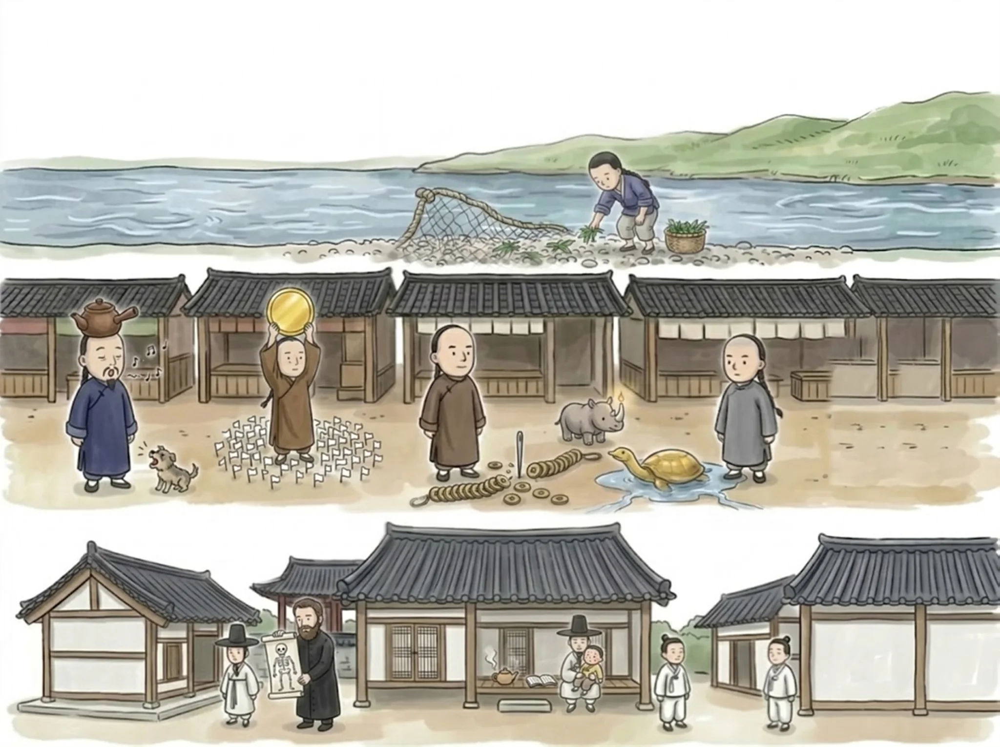
| 소품 | 잠그는 사실 (테스트 모드: 탭하여 확인) |
|---|---|
| [틀] 세 레인 — 뒤 강(건너편 풀 언덕, 이쪽 자갈밭) · 가운데 흙길과 검은 기와 가게 줄, 길 위 사람은 모두 변발 · 앞 흰 회벽·검회색 기와의 조선 집 왜? | ⑤줄 淸 前·中期 구간 — 本草 강 = 趙學敏 本草綱目拾遺 / 中國 길 = 汪昂·吳謙·徐大椿·沈金鰲 / 朝鮮 거리 = 主制群徵·麻科會通 |
| 다리 — 변발 = 淸, 흰 회벽 = 朝鮮. ▸ 말판 ⑤줄 r5a(2026-10-16 — 4 Argon 바탕·구역 편집; 바탕이 그린 다섯째 사람은 PIL로 지움). 판독(blind20): 시대 淸 前·中期/朝鮮 後期 1순위 둘 다(80~85%). ▸ 단원 통합(2026-10-25) — 말판 r5a를 허브 패널 s05u01로 올림. 낱장 s01p02·s04p02·s05p02·s07p03·s08p01의 행이 여기로 옴(교재 대조 정정·추가 반영). | |
| [강·1] 자갈밭에 떠내려와 걸린 어망 조각(굵은 벼리 줄 + 그물코) · 그물코로 빠져나간 약초를 허리 굽혀 줍는 책 보따리 멘 젊은이 · 주운 약초 바구니 왜? | 趙學敏(淸) 『本草綱目拾遺』(1765 · +716※) ★拾遺 2회 함정: 唐 陳藏器 ↔ 淸 趙學敏 |
| 다리 — 綱目 = ④줄 李時珍 그물의 재사용, 拾遺 = 빠진 것 줍기. 구역(z13)·최종 둘 다 1단계부터 本草綱目拾遺 趙學敏. | |
| [길·1] 남색 옷 남자가 머리에 거꾸로 쓴 약탕관 · 입에서 흘러나오는 음표 · 발치에서 짖는 강아지 왜? | 汪昂(淸) 『湯頭歌訣』『醫方集解』『本草備要』(1694) ★本經疏證은 汪昂 아님 |
| 다리 — 湯頭 = 머리 위 탕관, 歌訣 = 음표, 汪 = 개 짖는 소리(汪汪). 구역(z18)·최종 둘 다 汪昂 湯頭歌訣. | |
| [길·2] 갈색 옷 남자가 머리 위로 받쳐 든 둥근 순금 거울 · 발치에 흰 깃발이 빽빽한 깃발밭 왜? | 吳謙(淸) 『醫宗金鑑』 — 수혈 361※(교재: 醫宗金鑑·鍼灸逢源 모두 361) · 乾隆 칙찬※ |
| 다리 — 金鑑 = 금 거울(r4b 寶鑑 = 보석 테 거울과 갈림), 361 = 깃발밭(수혈 계보 끝). 吳 기호(큰 입)는 r5b 吳瑭에 쓰려고 뺐다 — 판독자들은 「책 이름」으로 醫宗金鑑을 읽고 吳謙은 편찬자로 붙임(z18·최종 둘 다 ✓). 승려 옷으로 보여 宗으로 읽기도 함. | |
| [길·3] 갈색 옷 남자 발치에 엽전 꿰미 — 끈이 한가운데에서 끊어져 엽전이 흩어짐 · 끊긴 자리 곁 땅에 꽂힌 돌침 왜? | 徐大椿(淸) — 補陰派 『醫貫砭』(趙獻可 『醫貫』 반박) ★溫補派 아님 |
| 다리 — 貫 = 엽전 꿰미, 砭 = 돌침으로 끊음. 첫 편집(문짝+끊긴 끈)은 喩昌 醫門法律로 샘(z28). **약한 행(B)** — 꿰미가 葉錢으로 읽혀 葉天士(z31)·串雅(趙學敏, 최종 둘 다 1순위), 醫貫砭은 L의 2순위(½)·K의 대안(趙獻可 醫貫). 徐는 그리지 않았다. ▸ 손질 회차(2026-10-16) 구역 z22(XB2 그대로): 1·2단계 모두 **醫貫砭 ✓**(꿰미 동전 = 貫을 바늘 = 砭이 끊음, 趙獻可 『醫貫』 비판) — 꿰미가 다시 葉錢으로 새지 않음. B → ½~✓. | |
| [길·4] 회색 옷 남자 앞 물웅덩이에 목을 길게 뺀 채 반쯤 가라앉은 금빛 큰 자라 · 웅덩이 곁 땅에 선 작은 코뿔소 — 코뿔 끝에 꽂힌 초에 촛불 · 웅덩이에서 갈래로 흘러나가는 물줄기 왜? | 沈金鰲(淸)※ 『雜病源流犀燭』 |
| 다리 — 沈 = 가라앉음, 金鰲 = 금자라, 犀燭 = 뿔 촛불, 源流 = 물줄기. **미판독 행(S → 실패 2회)** — 거북+촛불이 濕熱(薛生白)·陰陽(吳鞠通·黃元御)으로, 源流는 徐大椿 醫學源流論으로 샘. 이름(沈金鰲) 소리 다리가 서지 않는다(徐之才·薛己와 같은 교훈). ▸ 손질(2026-10-16 F5 — 4 Argon): 자라 등 촛대를 없애고 코뿔소 코뿔 끝 촛불(犀燭)을 따로 세움 → 구역 z22 1단계 葉天士(犀角·溫熱), 2단계 薛雪 濕熱(불꽃 + 웅덩이 = 外濕) · 醫宗金鑑(금 거북 = 金鑑) — **沈金鰲 3회 실패(B) — 받아들임**. 새 그림이 소품 그대로의 기억 고리로는 더 곧아 채택. ⚠ 금자라가 吳謙 金鑑(순금 거울)과 「金」을 나눠 가짐. ▸ 사전 등재(2026-10-25) — 沈金鰲(가라앉은 금자라) · 犀燭(코뿔소 뿔 촛불) 신설, 金鑑과 갈림 → blind66z z68 2단계 雜病源流犀燭 ✓(1단계 葉天士·薛雪 철회). | |
| [거리·1] 왼쪽 집 앞 갓 쓴 선비에게 검은 수도복의 수염 난 서양 신부가 해골 그림 두루마리를 펼쳐 건넴 왜? | 『主制群徵』(아담 샬※) — 서양 의학지식 소개(조선 후기 전래) |
| 다리 — 서양 의학(해부) 전래 = 신부 + 해골도. 구역(z18)·최종 K는 「서양 해부학 유입(李瀷 西國醫)」까지(½), 최종 L은 湯若望 主制群徵까지 ✓. | |
| [거리·2] 가운데 집 툇마루의 갓 쓴 선비가 안은 얼굴에 붉은 반점 돋은 아이 · 곁에 김 나는 찻주전자 · 펼친 책 왜? | 麻科會通 정약용(1798) — 麻疹 |
| 다리 — 麻 = 반점 아이, 茶山 = 찻주전자. 구역(z28)·최종 둘 다 丁若鏞 麻科會通(z28은 茶山까지). | |
🔗 의학사 말판 ⑤줄 淸 後期 — 王淸任 · 溫病 개울(葉桂 → 薛雪 → 吳瑭 → 王士雄) · 方藥合編 · 東醫壽世保元 의학사·⑤淸근대 #s05u02
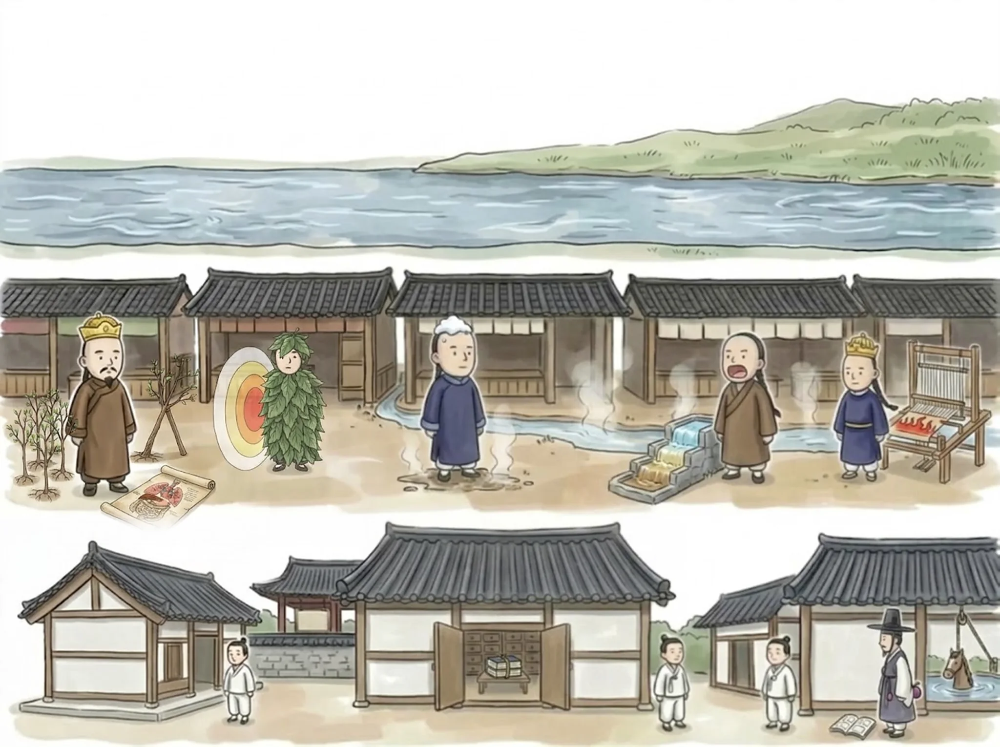
| 소품 | 잠그는 사실 (테스트 모드: 탭하여 확인) |
|---|---|
| [틀] 세 레인 — 뒤 강(나루 없음) · 가운데 흙길, 길 뒤를 따라 김 오르는 따뜻한 개울(溫病) · 앞 조선 집 셋 왜? | ⑤줄 淸 後期 구간 — 本草 강 = 없음 / 中國 길 = 王淸任 · 溫病 개울(葉桂 → 薛雪 → 吳瑭 → 王士雄) / 朝鮮 거리 = 方藥合編 · 東醫壽世保元 |
| 다리 — 김 오르는 개울 = 溫病學派 무대(개론 p.181 계보 순서대로 왼→오른쪽). ▸ 말판 ⑤줄 r5b(2026-10-16 — 4 Argon 바탕, 구역 편집 YA Flash-Lite · YB·YC Argon, 재편집 0). 판독(blind20): 7/7 둘 다, 시대 淸 中·後期/朝鮮 末 1순위(85~90%). ▸ 단원 통합(2026-10-25) — 말판 r5b를 허브 패널 s05u02로 올림. 낱장 s04p02·s06p01·s07p03의 행이 여기로 옴(교재 대조 정정·추가 반영). | |
| [길·1] 금빛 왕관 갈색 옷 남자 곁 어린 나무 숲 — 비뚤어진 한 그루를 버팀목으로 곧게 바로세움 · 발치에 펼친 내장 해부도 왜? | 王淸任(淸) 『醫林改錯』(1830) — 해부 실증 · 瘀血 活血祛瘀 |
| 다리 — 王 = 왕관, 醫林改錯 = 숲 + 바로세운 나무, 해부 = 해부도. 구역(z39)·최종 둘 다 1단계부터 王淸任 醫林改錯. 瘀血은 싣지 않음. | |
| [길·2] 온몸을 큰 나뭇잎으로 두른 사람 · 앞에 네 겹 장막(바깥 흰색 → 노랑 → 주황 → 맨 안 붉은색) 왜? | 葉桂(天士)(淸) 『溫熱論』 — 衛氣營血 辨證 創始 |
| 다리 — 葉 = 잎 옷, 衛氣營血 = 네 겹(맨 안 = 血, 사전 붉은 것). 구역(z39)·최종 둘 다 1단계부터 葉天士 衛氣營血. | |
| [길·3] 남색 옷 남자 머리 위에만 소복이 쌓인 눈 · 발밑에서 배어 나오는 김 오르는 진창 왜? | 薛雪(生白)(淸) 『溫熱病篇』(교재 표기 · 통설 濕熱病篇) — 濕熱辨證 |
| 다리 — 雪 = 쌓인 눈(날리는 눈송이 = 寒과 갈림 — 판독자도 이 갈림을 적용), 濕熱 = 김 나는 진창(사전 內濕). 구역(z47)·최종 둘 다 薛雪 濕熱. | |
| [길·4] 갈색 옷 남자의 얼굴 절반만 한 큰 입 · 곁에 세 단 돌계단 폭포(위 맑은 하늘색 · 가운데 노란빛 · 아래 갈색빛) 왜? | 吳瑭(鞠通)(淸) 『溫病條辨』(1798※) — 三焦辨證 |
| 다리 — 吳 = 큰 입(사전), 三焦 = 세 단 폭포. 구역(z47)·최종 둘 다 吳鞠通 溫病條辨 三焦. | |
| [길·5] 금빛 왕관 남색 옷 남자 곁 베틀 — 날실·씨실로 짜여 나오는 천에 붉은 불꽃 무늬 왜? | 王士雄(孟英)(淸) 『溫熱經緯』 — 전염병(콜레라·페스트·말라리아) 病例 서술 |
| 다리 — 王 = 왕관(같은 구간 王淸任과 양 끝), 經緯 = 베틀, 溫熱 = 불꽃 무늬. 구역(z46)·최종 둘 다 王孟英 溫熱經緯. | |
| [거리·1] 문 열린 책방 안 — 작은 서랍 많은 약장 앞 탁자에 끈으로 묶어 한 묶음으로 합친 책 왜? | 方藥合編 황도연(1885) — 醫宗損益·醫方活套 종합 |
| 다리 — 方藥 = 약장, 合編 = 묶은 책. 구역(z47) 1단계 ✓·2단계는 끈 다발 = 典藥으로 典醫監, 최종 둘 다 方藥合編 1순위(典藥 갈림은 2순위로 검토). | |
| [거리·2] 오른쪽 집 앞 허리춤에 자두 찬 갓 쓴 선비 · 앞 연못에서 도르래 밧줄로 건져 올려지는 말 · 땅에 네 칸으로 나뉜 책 왜? | 東醫壽世保元 이제마(1894) — 四象 · 장부대소 |
| 다리 — 李 = 자두, 濟 = 물에 드리운 밧줄, 馬 = 말 — 사전 기호 셋을 이어 李濟馬. 四象 = 네 칸 책. 구역(z46)·최종 둘 다 李濟馬 東醫壽世保元(L은 四象까지). | |
🔗 의학사 말판 ⑤줄 근대(한국) — 扶陽論 · 小兒醫方 · 醫生規則 · 濟生醫院 · 廣惠院 · 廣濟院 · 同濟醫學校 · 東洋大學館 의학사·⑤淸근대 #s05u03
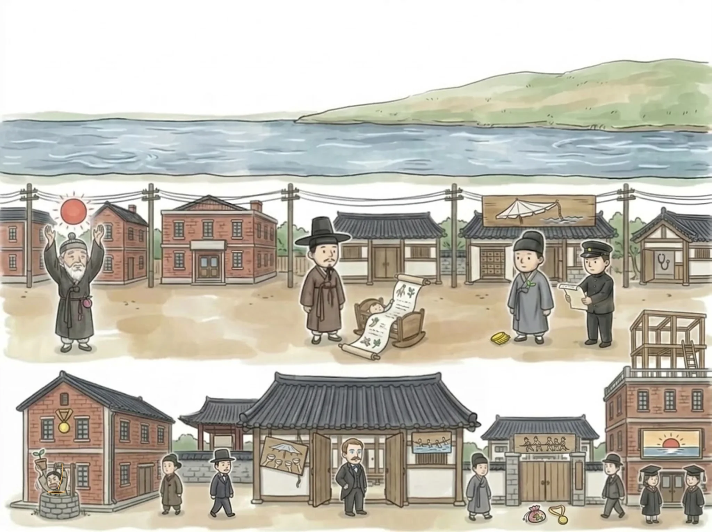
| 소품 | 잠그는 사실 (테스트 모드: 탭하여 확인) |
|---|---|
| [틀] 세 레인 — 뒤 강(나루·배 없음) · 가운데 신작로와 전신주, 붉은 벽돌 양옥과 한옥 · 앞 근대 거리(벽돌 병원 · 한옥 관청 · 학교 · 4층 양옥) 왜? | ⑤줄 근대 구간(한국) — 本草 강 = 없음 / 가운데 길 = 扶陽論 · 小兒醫方 · 醫生規則(교재에 중국 행 없음 — 길도 한국) / 거리 = 濟生醫院 · 廣惠院→濟衆院 · 廣濟院 · 同濟醫學校 · 東洋大學館→東洋醫科大學 |
| 다리 — 전신주·벽돌 양옥 = 개화기. ▸ 말판 ⑤줄 r5c(2026-10-16 — 4 Argon 바탕, 구역 편집 ZA Flash-Lite → ZA2·ZB·ZC→ZC2·ZD Argon, PIL 손질 1곳). 판독(blind20): 시대 開港~大韓帝國 1순위 둘 다(80~85%). ▸ 단원 통합(2026-10-25) — 말판 r5c를 허브 패널 s05u03로 올림. 낱장 s07p03·s08p01의 행이 여기로 옴(교재 대조 정정·추가 반영). | |
| [길·1] 흰 수염 노인이 두 팔로 머리 위에 받쳐 든 붉은 해 · 허리춤 자두 왜? | 扶陽論 이규준 — 扶陽論·氣血論·醫方撮要 |
| 다리 — 扶陽 = 해를 받침(陽 = 해, 사전), 李 = 자두. 첫 편집(ZA)은 노인을 크게 키우고 갓(太)을 씌워 李濟馬 太陽人으로 샘(z54) → ZA2(갓 대신 털모자, 크기 그대로). 구역(z68)·최종 둘 다 李圭晙 扶陽論. | |
| [길·2] 갓 쓴 의원 곁 나무 요람 속 아기 — 두 손으로 자기 몸만 한 처방전 두루마리(약초 그림)를 활짝 펼쳐 듦 왜? | 『小兒醫方』 崔圭憲 ★허브 오답 15회 |
| 다리 — 小兒 = 요람 아기, 醫方 = 처방 쪽지. **미판독 행(B)** — 구역(z62)·최종 K는 池錫永 牛痘新說(種痘), L은 太醫院·醫方新鑑. 이름(崔圭憲) 기호 없음. ▸ 손질(2026-10-16 F6 — 4 Argon): 쪽지를 몸만 한 처방전 두루마리로 → 구역 z25 「요람 아기 = 아들」로 읽혀 黃度淵·黃泌秀 『方藥合編』(r5b)로 샘 — **小兒醫方 3회 실패(B) — 받아들임**. 소품 그대로(小兒 = 아기, 醫方 = 처방전)는 더 곧아 채택. ▸ 사전 등재(2026-10-25) — 小兒(요람 속 아기 ≠ 아들) 신설 → blind66z z74 2단계 小兒醫方 ✓(1단계 本草從新·幼幼集成). | |
| [길·3] 회색 두루마기 한의사 발치에 떨어진 금빛 견장 · 가슴 앞섶의 새싹 · 일본식 검은 제복 관리가 내미는 두루마리 문서 왜? | 醫生規則(1913※) — 師→生 격하 · 대한의원(1907) 서양의사 부족 |
| 다리 — 격하 = 떨어진 견장, 生 = 새싹, 규칙 = 관리의 문서. 첫 편집(ZC)은 견장이 어깨에 붙어 무과 출신(이제마)으로 샘(z87) → ZC2(같은 채팅 아닌 새 채팅에서 ZC 출력을 편집). 최종 둘 다 醫生規則(1913) 추정 ✓. | |
| [거리·1] 붉은 벽돌 병원 앞 돌우물 — 가로대 밧줄에 허리가 감겨 건져 올려지는 사람이 새싹 화분을 쳐듦 · 병원 벽 금메달 왜? | 濟生醫院(1877 부산 · 일본인) = 최초 서양식 병원 |
| 다리 — 濟 = 물(우물)에서 밧줄로 건짐(사전), 生 = 새싹, 최초 = 금메달. 첫 편집은 해·노인만 커지고(ZA) 다시(ZA2)는 밧줄 없이 기어오르는 사람이라 「반쪽 濟」(z68) → PIL로 밧줄(r5c_post.py). 최종 K ✓ / L ✗(우물 = 池 · 모종 = 種 → 池錫永 種痘). | |
| [거리·2] 한옥 관청 — 왼쪽 떼어지는 옛 간판(넓은 차양 + 빈 사발 받드는 손들) · 오른쪽 새 간판(한 밧줄에 매달린 여럿) · 문 앞 파란 눈 콧수염 양복 의사 왜? | 廣惠院 → 濟衆院(1885) 알렌 |
| 다리 — 廣惠 = 차양 + 사발 손(사전 廣·惠), 濟衆 = 한 밧줄 여럿(사전 濟·衆), 알렌 = 서양 의사. 구역(z62)·최종 둘 다 1단계부터 ✓. | |
| [길 뒤] 약장이 보이는 한옥 · 청진기가 걸린 한옥 · 그 위 긴 간판(넓은 차양 + 물에 드리운 밧줄) 왜? | 廣濟院 — 양·한방 협진(지문 1889※ · 통설 1899 內部病院 → 1900 廣濟院) |
| 다리 — 廣濟 = 차양 + 밧줄(사전), 협진 = 약장 + 청진기. 대문 둘 한옥(바탕)은 쓰지 못하고 길 뒤 두 집에 그려짐. 구역(z87) 2단계·최종 둘 다 廣濟院(1900) ✓. | |
| [거리·3] 학교 교문 위 간판(여럿이 한 밧줄을 나란히 당김) · 교문 앞 비단 돈주머니와 금메달 왜? | 同濟醫學校(1904) 고종 내탕금(사재) = 최초 한의학 교육기관 |
| 다리 — 同 = 한 밧줄 함께 당김(사전), 내탕금 = 비단 주머니, 최초 = 금메달. 구역(z93)·최종 둘 다 同濟醫學校(1906으로 적음) ✓ — 주머니·금메달 뜻은 미상(濟 둘째 글자가 없다는 지적). | |
| [거리·4] 4층 붉은 벽돌 양옥 — 옥상 위 나무 골조로 두 층 증축 중(사다리) · 정문 위 간판에 수평선 바다 위로 막 떠오르는 붉은 해 · 정문 앞 학사모·검은 졸업 가운의 학생 둘 왜? | 東洋大學館(1948 · 4년제) → 東洋醫科大學(1964 · 6년제) → 경희대※ |
| 다리 — 4 → 6 = 증축. **미판독 행(B)** — 비계가 「건축 중」으로만 읽혀 大韓醫院(1907)·광제원으로 샘(z93·최종 둘 다). 층수를 세는 판독자가 없었다. ▸ 손질(2026-10-16 F7 — 4 Argon): 해돋이 간판(東) + 졸업생(大學)을 더함 → 구역 z32 1단계 **東洋醫藥大學(1953) ✓**(해돋이 = 東洋, 학사모 = 대학 — 東洋大學館 계보에 닿음), 2단계는 사전의 「陽 = 해」에 걸려 東이 흔들림(½). → 사전 후보: **東 = 수평선 위로 막 떠오르는 해**(陽 = 하늘에 뜬 해·불과 갈림). ▸ 사전 등재(2026-10-25) — 東(반만 뜬 해, 陽과 갈림) 신설 → blind66z z86 2단계 東洋大學館 ✓(陽 충돌 없음). | |
장면 9 · 오행왕국
🔗 五行 왕국 — 봄에서 겨울로 이어진 들판 (木·火·土·金·水) 천인·오행 #s09u01
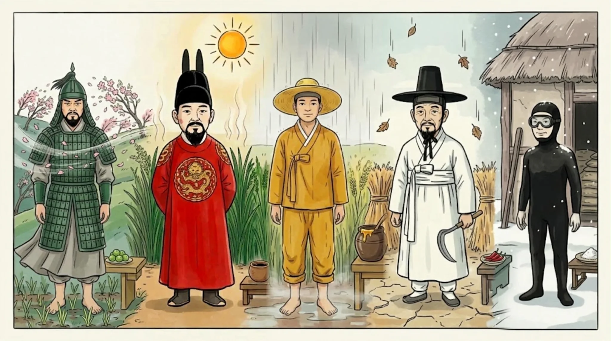
| 소품 | 잠그는 사실 (테스트 모드: 탭하여 확인) |
|---|---|
| 한 줄로 이어진 논 들판 — 왼쪽 봄에서 여름·장마·가을을 지나 오른쪽 겨울로 계절이 바뀌고, 다섯 장부 인물이 차례로 서서 각자 곁 낮은 상에 그 맛의 사물을 둔다. 들판의 벼는 왼쪽부터 새싹 → 웃자란 푸른 벼 → 익는 이삭 → 볏단 → 곳간 가마니 왜? | 五行 배속 — 木火土金水 = 肝心脾肺腎 · 靑赤黃白黑 · 風·暑熱·濕·燥·寒 · 春夏長夏秋冬 · 生長化收藏 · 酸苦甘辛鹹 · 차례 = 相生(木→火→土→金→水) |
| 다리 — 한 해의 들판 하나가 五行의 차례다 — 계절 자리가 五季를, 벼의 성숙 순서가 五化(규칙 52 — 生<長<化<收<藏)를, 인물 차례가 相生을 진다. CANON §5-2 무대 문법 「다섯 인물이 각자의 계절 들판에 서고, 옆 상에 그 맛의 사물이 놓인다」를 한 장으로 이었다. ◆ 개념 — 五行 歸類: 자연계(五季·五氣·五化·五味·五色)와 인체(五臟·五官)를 같은 다섯 칸에 배속한다. 相生 = 木生火·火生土·土生金·金生水·水生木. ▸ 단원 통합(2026-10-16) — s09p01~p05 다섯 낱장을 한 장으로 합쳤다(4 Argon 바탕 1 + 구역 편집 5 + 같은 채팅 손질 2). 구역 판독 blind21z 5세션 모두 인물·五氣·五味·五化 복원. 통합판 blind21(판독자 둘): 판 표제어 **五行 歸類 85% · 90%**, 다섯 인물 5/5 · 5/5, 행마다 사실 다섯씩(色·季·氣·化·味) 모두 읽힘 — 官 이름은 인물로만 나른다. | |
| [木·봄] 초록 비늘갑옷 장군(맨 왼쪽) 왜? | 木 = 肝(五臟) · 靑(五色) · 將軍之官(靈蘭秘典論) |
| 다리 — 다리: 초록 갑옷 장군은 §5에서 肝이다. 색과 벼슬이 한 인물에 함께 실린다. ◆ 개념 — 靈蘭秘典論의 벼슬 배속. 肝者 將軍之官 謀慮出焉. ▸ 숨은 자산 회수(2026-08-29, 규칙 120·150) — **「초록 갑옷 장군」은 將軍之官을 통째로 직역한 다리다** — 장군이 곧 將軍이다. 초록 갑옷이 靑(五色)을 겸한다. 파일명을 가린 판독자가 사전 없이 「초록=靑/木」을 집어냈다. ▸ 단원 통합(2026-10-16) — s09p01[0]에서 옮김. | |
| [木·봄] 장군 뒤 바람에 휜 꽃나무 + 옆으로 길게 흘러 날리는 분홍 꽃잎과 바람결 왜? | 風(五氣) · 春(五季) |
| 다리 — 다리: 바람은 보이지 않으므로 휘는 나무와 날리는 꽃잎으로 그린다. 깃발은 §5에서 학설·어록 전용이라 쓰지 않는다. ◆ 개념 — 風은 春의 主氣이며 木에 배속된다. ▸ 단원 통합(2026-10-16) — s09p01[1]에서 옮김. | |
| [木·봄] 장군 발치 논의 갓 돋은 연두 새싹 줄 왜? | 生(五化) |
| 다리 — 다리: 五化의 生은 막 돋는 것이다. 싹이 흙을 밀고 올라온 순간이 그 형태다. ◆ 개념 — 生長化收藏 다섯 중 첫째. ▸ 숨은 자산 회수(2026-08-29, 규칙 120·150) — **갓 돋은 새싹 = 生(五化) 훈독 직역.** 판독자가 「새싹=生/春」으로 읽었다. ▸ 단원 통합(2026-10-16) — s09p01[2]에서 옮김. | |
| [木·봄] 장군 곁 낮은 상 위 접시의 초록 매실 왜? | 酸(五味) |
| 다리 — 다리: 매실은 §5에서 酸이다. ◆ 개념 — 五味 배속. 酸入肝. ▸ 단원 통합(2026-10-16) — s09p01[3]에서 옮김. | |
| [火·여름] 붉은 곤룡포·익선관 임금 왜? | 火 = 心 · 赤 · 君主之官 |
| 다리 — 다리: 붉은 곤룡포와 익선관의 임금은 §5에서 心이다. ◆ 개념 — 心者 君主之官 神明出焉. ▸ 숨은 자산 회수(2026-08-29, 규칙 120·150) — **곤룡포+익선관 임금 = 君主之官의 君 직역**(§5 곤룡포=心 전용). 판독자가 「곤룡포=君/王」으로 읽었다. ⚠ 다만 같은 판의 [2] 「웃자란 벼=長」은 **대나무로 오독됐다** — 진단서 §4-(다). ▸ 단원 통합(2026-10-16) — s09p02[0]에서 옮김. | |
| [火·여름] 임금 위 이글거리는 해 + 땅 위로 일렁이는 아지랑이 왜? | 暑·熱(五氣) · 夏(五季) |
| 다리 — 다리: 더위는 해와 아지랑이로 그린다. 공기가 완전히 멎어 있어 風과 갈린다. ◆ 개념 — 暑는 夏의 主氣이며 火에 배속된다. ▸ 단원 통합(2026-10-16) — s09p02[1]에서 옮김. | |
| [火·여름] 임금 뒤 가슴 높이까지 웃자란 짙푸른 벼 — 이삭이 아직 푸르고 꼿꼿하다(왼쪽 새싹보다 크고 오른쪽 익는 이삭보다 덜 익음) 왜? | 長(五化) |
| 다리 — 다리: 五化의 長은 자라 오르는 것이다. 키를 사람 가슴에 맞춰 크기가 사실이 되게 했다. ◆ 개념 — 生長化收藏 둘째. ▸ 빈틈 메우기(2026-08-29) — 3차 판독에서 **대나무로 오독**돼 長(五化)이 날아갔다. 대나무와 갈리는 축은 ⓐ 마디의 유무 ⓑ 잎의 넓이 ⓒ **이삭** 셋이다 — 셋을 다 준다. (종전 소품 — 가슴 높이까지 웃자란 벼) ▸ 단원 통합(2026-10-16) — s09p02[2]에서 옮김. 통합판에서 이삭을 푸르고 꼿꼿하게 바로잡았다 — 낱장은 이삭이 여물어 고개를 숙여 化보다 더 익었다(규칙 52 역전). | |
| [火·여름] 임금 곁 낮은 상 위 손잡이 없는 질그릇 잔의 검은 커피(김 없음 — CANON §5 예외표) 왜? | 苦(五味) |
| 다리 — 다리: 커피는 §5에서 苦다. ◆ 개념 — 五味 배속. 苦入心. ▸ 단원 통합(2026-10-16) — s09p02[3]에서 옮김. 통합판에서 김을 뺐다(김 = 氣 전담, CANON §5 예외표). 사전 苦도 「김 없는 질그릇 잔·사발의 검은 커피」로 고쳤다(blind22). | |
| [土·장마] 노란 밀짚모자·황토색 옷 농부(다섯 중 한가운데) 왜? | 土 = 脾 · 黃 · 倉廩之官 |
| 다리 — 다리: 노란 밀짚모자 농부는 §5에서 脾다. ◆ 개념 — 脾胃者 倉廩之官 五味出焉. ▸ 숨은 자산 회수(2026-08-29, 규칙 120·150) — 노란 밀짚모자 = 黃(五色). ⚠ **倉廩之官의 倉廩은 무기호다**(규칙 147) — 곳간이 그림에 없어 이름의 절반만 있다. 판독자도 「노랑」까지만 읽었다. ▸ 단원 통합(2026-10-16) — s09p03[0]에서 옮김. | |
| [土·장마] 내리는 부슬비 + 발밑 진창 웅덩이와 낮게 깔린 안개 왜? | 濕(五氣) · 長夏(五季) |
| 다리 — 다리: 습기는 비·안개·질척한 땅 셋으로 그린다. 비가 수직으로 내려 風과 갈린다. ◆ 개념 — 濕은 長夏의 主氣이며 土에 배속된다. ▸ 단원 통합(2026-10-16) — s09p03[1]에서 옮김. | |
| [土·장마] 농부 뒤 노랗게 익으며 고개 숙이기 시작한 이삭 왜? | 化(五化) |
| 다리 — 다리: 五化의 化는 바뀌는 중이다. 초록에서 노랑으로 넘어가는 중간 상태가 그 형태다. ◆ 개념 — 生長化收藏 셋째. ▸ 단원 통합(2026-10-16) — s09p03[2]에서 옮김. | |
| [土·장마] 농부 곁 낮은 상 위 나무 국자가 꽂힌 꿀단지(입가로 꿀이 흘러내림) 왜? | 甘(五味) |
| 다리 — 다리: 꿀은 §5에서 甘이다. ◆ 개념 — 五味 배속. 甘入脾. ▸ 단원 통합(2026-10-16) — s09p03[3]에서 옮김. | |
| [金·가을] 흰 도포·검은 갓 재상, 한 손에 낫 왜? | 金 = 肺 · 白 · 相傅之官 |
| 다리 — 다리: 흰 도포 재상은 §5에서 肺다. 낫은 秋의 거두는 연장이다. ◆ 개념 — 肺者 相傅之官 治節出焉. ▸ 숨은 자산 회수(2026-08-29, 규칙 120·150) — **흰 도포 재상 = 相傅之官의 相 직역** · **낫 = 金(쇠붙이 실물 다리)** · 흰 도포 = 白(五色). 판독자가 「낫·볏단=金/秋 · 흰옷=白」을 사전 없이 집어냈다. ▸ 단원 통합(2026-10-16) — s09p04[0]에서 옮김. | |
| [金·가을] 발밑 거북등처럼 갈라진 논바닥 + 바람 없이 곧게 떨어지는 마른 잎 왜? | 燥(五氣) · 秋(五季) |
| 다리 — 다리: 마름은 갈라진 땅과 마른 잎으로 그린다. 잎이 곧게 떨어져 風과 갈린다. ◆ 개념 — 燥는 秋의 主氣이며 金에 배속된다. ▸ 단원 통합(2026-10-16) — s09p04[1]에서 옮김. | |
| [金·가을] 재상 양옆에 베어 묶어 세운 황금 볏단 왜? | 收(五化) |
| 다리 — 다리: 五化의 收는 거두어 묶는 것이다. ◆ 개념 — 生長化收藏 넷째. ▸ 숨은 자산 회수(2026-08-29, 규칙 120·150) — **베어 묶어 세운 볏단 = 收(五化) 동작 직역.** 거두는 동작 그 자체다. ▸ 단원 통합(2026-10-16) — s09p04[2]에서 옮김. 사전 收에 「이삭 달린 채 묶어 세운 볏단」 꼴을 올렸다 — 짚 빗자루(瀉)와는 이삭·손잡이로 갈린다(blind22). | |
| [金·가을] 재상 곁 낮은 상 위 접시의 붉은 고추 왜? | 辛(五味) |
| 다리 — 다리: 고추는 §5에서 辛이다. ◆ 개념 — 五味 배속. 辛入肺. ▸ 단원 통합(2026-10-16) — s09p04[3]에서 옮김. | |
| [水·겨울] 검은 잠수복·후드·외알 고글 잠수부(맨 오른쪽) 왜? | 水 = 腎 · 黑 · 作強之官 |
| 다리 — 다리: 검은 잠수복 잠수부는 §5에서 腎이다. 입김은 추위를 함께 나른다. ◆ 개념 — 腎者 作強之官 伎巧出焉. ▸ 도구 교정 후 재판독(2026-08-29, 규칙 152·153) — ✓ **온전.** 판독자가 寒·冬·黑·水·鹹·藏 **여섯 글자를 전부** 복원했다. ⚠ **作強之官만 무기호다**(규칙 147). ⚠ 판독자가 「한겨울인데 곳간 문이 열려 있다 — 不藏으로 읽힐 소지」를 짚었다: 藏(갈무리)을 나르려면 **닫아 두는 편이 낫다.** ▸ 단원 통합(2026-10-16) — s09p05[0]에서 옮김. 통합판에서 입김을 지웠다(김 = 氣). | |
| [水·겨울] 내려앉는 눈송이 + 눈 덮인 땅 왜? | 寒(五氣) · 冬(五季) |
| 다리 — 다리: 추위는 눈과 언 물로 그린다. 눈이 곧게 내려 風과 갈린다. ◆ 개념 — 寒은 冬의 主氣이며 水에 배속된다. ▸ 글자 사전 판정(2026-08-25, 규칙 120·127) — ▸ 「언 연못」은 §5 얼음 조항의 ⓒ 위반처럼 보이나, **같은 화면에 寒의 정본(내리는 눈)이 서 있으므로 배경으로 읽는다** (2026-08-25 오용면제 등재). ▸ 단원 통합(2026-10-16) — s09p05[1]에서 옮김. 통합판에서 언 연못은 뺐다(사전 凝滯 갈림) — 눈송이와 눈 덮인 땅만. | |
| [水·겨울] 잠수부 뒤 문 열린 초가 곳간 안에 쌓인 곡식 가마니(문 앞은 비어 있다) 왜? | 藏(五化) |
| 다리 — 다리: 五化의 藏은 갈무리해 두는 것이다. 곳간 안에 쌓인 것이 그 형태다. ◆ 개념 — 生長化收藏 다섯째. ▸ 단원 통합(2026-10-16) — s09p05[2]에서 옮김. | |
| [水·겨울] 잠수부 곁 낮은 상 위 접시의 굵은 소금 왜? | 鹹(五味) |
| 다리 — 다리: 굵은 소금은 §5에서 鹹이다. ◆ 개념 — 五味 배속. 鹹入腎. ▸ 단원 통합(2026-10-16) — s09p05[3]에서 옮김. | |
🔗 五行 배치도 — 五方 · 相生 · 相剋(도해) 천인·오행·도해 도해 · 문항 3 #s09p06
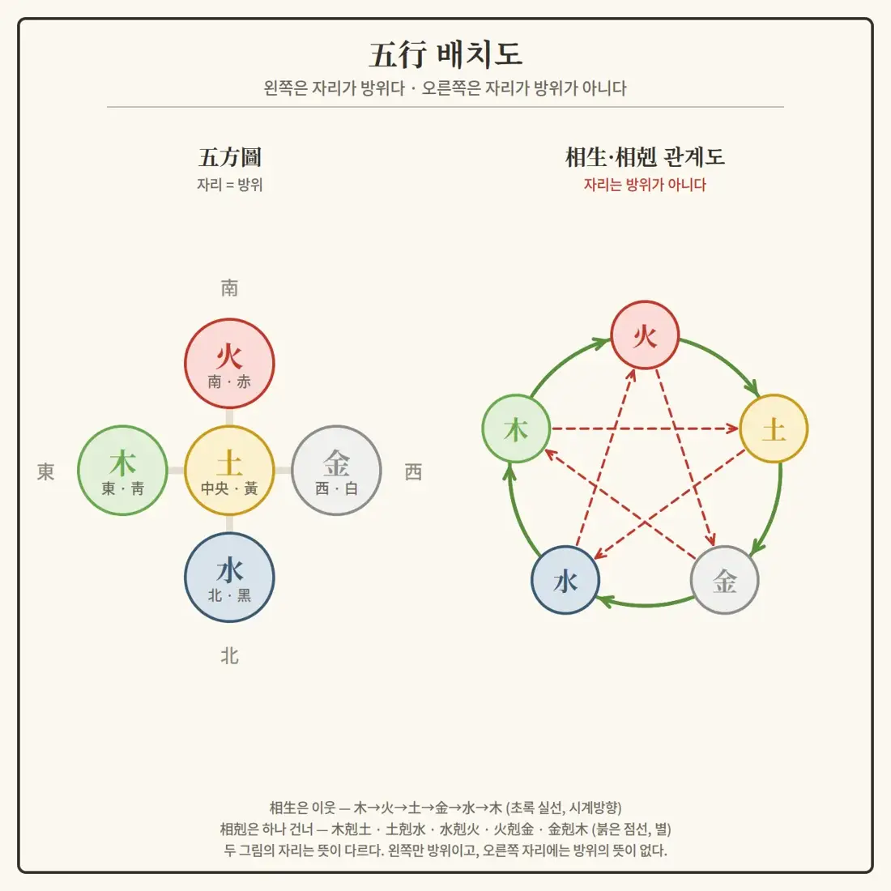
| 소품 | 잠그는 사실 (테스트 모드: 탭하여 확인) |
|---|---|
| 왼쪽 五方圖 — 자리가 곧 방위(上南下北·左東右西) 왜? | 木東 · 火南 · 土中央 · 金西 · 水北 |
| 다리 — 도해는 자가테스트·역방향 판독의 대상이 아니다(CANON 74). 범례를 그림 안에 갖고 있다. ▸ 정산(2026-08-22, 규칙 111) — 무대 자리: 五行 인물 s09p01(→s09u01)~s09p05(→s09u01) · 相生相剋의 쓰임 s18p09(舍岩 補瀉) | |
| 오른쪽 초록 실선 링, 시계방향 화살표 왜? | 相生 — 木→火→土→金→水→木 |
| 다리 — 도해는 자가테스트·역방향 판독의 대상이 아니다(CANON 74). 범례를 그림 안에 갖고 있다. ▸ 정산(2026-08-22, 규칙 111) — 무대 자리: 五行 인물 s09p01(→s09u01)~s09p05(→s09u01) · 相生相剋의 쓰임 s18p09(舍岩 補瀉) | |
| 오른쪽 붉은 점선 별 왜? | 相剋 — 木剋土 · 土剋水 · 水剋火 · 火剋金 · 金剋木 |
| 다리 — 도해는 자가테스트·역방향 판독의 대상이 아니다(CANON 74). 범례를 그림 안에 갖고 있다. ▸ 정산(2026-08-22, 규칙 111) — 무대 자리: 五行 인물 s09p01(→s09u01)~s09p05(→s09u01) · 相生相剋의 쓰임 s18p09(舍岩 補瀉) | |
| 두 그림의 자리 뜻이 다르다 왜? | 相生은 이웃 · 相剋은 하나 건너 — 관계도의 자리에는 방위의 뜻이 없다 |
| 다리 — 도해는 자가테스트·역방향 판독의 대상이 아니다(CANON 74). 범례를 그림 안에 갖고 있다. ▸ 정산(2026-08-22, 규칙 111) — 무대 자리: 五行 인물 s09p01(→s09u01)~s09p05(→s09u01) · 相生相剋의 쓰임 s18p09(舍岩 補瀉) | |
도해 문항 3 펼치기
| 1. 五方 배치는? | 木東 · 火南 · 土中央 · 金西 · 水北 (上南下北·左東右西)素問·金匱眞言論 |
| 2. 相生의 차례는? | 木→火→土→金→水→木 — 이웃끼리 낳는다董仲舒 『春秋繁露』 五行相生 · 『白虎通』 五行 — ⚠ 『尙書·洪範』은 水火木金土 차례와 潤下·炎上 같은 성질만 주고 相生 서열은 주지 않는다 |
| 3. 相剋의 차례는? | 木剋土 · 土剋水 · 水剋火 · 火剋金 · 金剋木 — 하나 건너 이긴다五行 相剋 |
장면 10 · 팔괘
🔗 八卦 ② 획과 배속 — 별칭이 곧 획이다(도해) 천인·의역·팔괘·도해 도해 · 문항 39 #s10d02
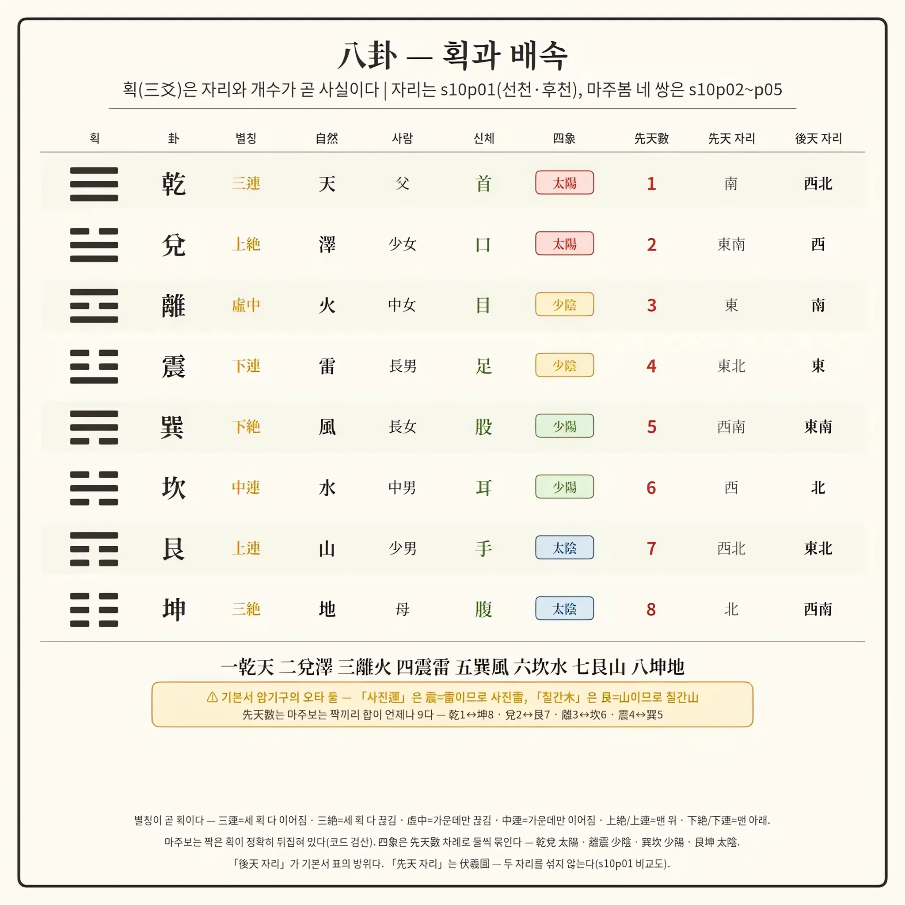
| 소품 | 잠그는 사실 (테스트 모드: 탭하여 확인) |
|---|---|
| 맨 왼쪽 획 여덟 — 위→아래 세 효 왜? | 이 판이 새로 지는 것은 **획 자체**다. 무대 s10p02(→s10u01)~p05는 자연물·가족·신체를 지고, 도해 s10p01은 자리를 진다. 커버리지 결합에서 「그려져 있는데도 틀리는 9장」 중 셋이 팔괘였다 — 兌(오답 7) · 巽 · 坎(오답 6). 셋 다 획을 묻는다 |
| 다리 — 도해는 자가테스트·역방향 판독의 대상이 아니다(CANON 74). 범례를 그림 안에 갖고 있다. ▸ 정산(2026-08-22, 규칙 111) — 무대 자리: 자연물·가족·신체·마주봄 네 쌍 → s10p02(→s10u01)~s10p05(→s10u01) · 선천후천 자리 → s10p01. **획(三爻)·별칭·先天數는 무대 자리가 없다** — 그러나 이 판의 **문항 29개**가 그 셋을 전부 묻는다(규칙 108-b). ⚠ 2026-08-22 2차 정산 정정 — 1차에 적었던 「s10p02~p05에 획 축을 증축한다」는 **철회한다.** 제3자 설계 감사가 다섯 이유로 막았다: ⓐ s10p04[2](→s10u01)가 「끊기지 않은 한 줄기 = 通氣」로 **선의 연속성을 이미 쓰고 있어** 「끊긴 막대 = 陰爻」를 얹으면 兌가 정반대로 읽힌다 ⓑ 3층 시렁은 s18p09[4] 「3층 선반장 = 母·官·子」의 복제이고, 그 빈 층은 s18p09[9]가 「안 읽힌다」로 이미 닫아 놓은 도형이다(규칙 49) ⓒ 「통나무」는 s02p01[6] 抱朴子, 「장대 셋」은 s03p01[3] 三因說이 전담한다(규칙 51) ⓓ 막대 24개의 끊김 패턴은 규칙 100·101이 두 번 실패로 실측한 「소품 안의 구조 지시」 범주다 ⓔ 획을 빼면 이 판의 [1](별칭이 곧 획)·[3](짝은 획이 뒤집힘)이 성립 불가다. ★ 대신 그림 0장으로 얻은 것 — **「連이 왼쪽」 4/4, 예외 0** (乾三連·坎中連·艮上連·震下連이 전부 왼쪽). | |
| ★ 금색 별칭이 곧 획이다 — 三連·上絶·虛中·下連·下絶·中連·上連·三絶 왜? | 三連=세 획 다 이어짐(乾) · 三絶=세 획 다 끊김(坤) · 虛中=가운데만 끊김(離) · 中連=가운데만 이어짐(坎) · 上絶(兌)/上連(艮)=맨 위 · 下絶(巽)/下連(震)=맨 아래. **별칭만 외우면 획이 복원된다** — 획을 따로 외울 필요가 없다 |
| 다리 — 도해는 자가테스트·역방향 판독의 대상이 아니다(CANON 74). 범례를 그림 안에 갖고 있다. ▸ 정산(2026-08-22, 규칙 111) — 무대 자리: 자연물·가족·신체·마주봄 네 쌍 → s10p02(→s10u01)~s10p05(→s10u01) · 선천후천 자리 → s10p01. **획(三爻)·별칭·先天數는 무대 자리가 없다** — 그러나 이 판의 **문항 29개**가 그 셋을 전부 묻는다(규칙 108-b). ⚠ 2026-08-22 2차 정산 정정 — 1차에 적었던 「s10p02~p05에 획 축을 증축한다」는 **철회한다.** 제3자 설계 감사가 다섯 이유로 막았다: ⓐ s10p04[2](→s10u01)가 「끊기지 않은 한 줄기 = 通氣」로 **선의 연속성을 이미 쓰고 있어** 「끊긴 막대 = 陰爻」를 얹으면 兌가 정반대로 읽힌다 ⓑ 3층 시렁은 s18p09[4] 「3층 선반장 = 母·官·子」의 복제이고, 그 빈 층은 s18p09[9]가 「안 읽힌다」로 이미 닫아 놓은 도형이다(규칙 49) ⓒ 「통나무」는 s02p01[6] 抱朴子, 「장대 셋」은 s03p01[3] 三因說이 전담한다(규칙 51) ⓓ 막대 24개의 끊김 패턴은 규칙 100·101이 두 번 실패로 실측한 「소품 안의 구조 지시」 범주다 ⓔ 획을 빼면 이 판의 [1](별칭이 곧 획)·[3](짝은 획이 뒤집힘)이 성립 불가다. ★ 대신 그림 0장으로 얻은 것 — **「連이 왼쪽」 4/4, 예외 0** (乾三連·坎中連·艮上連·震下連이 전부 왼쪽). | |
| 先天數 붉은 숫자 1~8 왜? | 一乾天 二兌澤 三離火 四震雷 五巽風 六坎水 七艮山 八坤地. ★ 마주보는 짝끼리 **합이 언제나 9**다 — 乾1↔坤8 · 兌2↔艮7 · 離3↔坎6 · 震4↔巽5. 코드가 검산한다 |
| 다리 — 도해는 자가테스트·역방향 판독의 대상이 아니다(CANON 74). 범례를 그림 안에 갖고 있다. ▸ 정산(2026-08-22, 규칙 111) — 무대 자리: 자연물·가족·신체·마주봄 네 쌍 → s10p02(→s10u01)~s10p05(→s10u01) · 선천후천 자리 → s10p01. **획(三爻)·별칭·先天數는 무대 자리가 없다** — 그러나 이 판의 **문항 29개**가 그 셋을 전부 묻는다(규칙 108-b). ⚠ 2026-08-22 2차 정산 정정 — 1차에 적었던 「s10p02~p05에 획 축을 증축한다」는 **철회한다.** 제3자 설계 감사가 다섯 이유로 막았다: ⓐ s10p04[2](→s10u01)가 「끊기지 않은 한 줄기 = 通氣」로 **선의 연속성을 이미 쓰고 있어** 「끊긴 막대 = 陰爻」를 얹으면 兌가 정반대로 읽힌다 ⓑ 3층 시렁은 s18p09[4] 「3층 선반장 = 母·官·子」의 복제이고, 그 빈 층은 s18p09[9]가 「안 읽힌다」로 이미 닫아 놓은 도형이다(규칙 49) ⓒ 「통나무」는 s02p01[6] 抱朴子, 「장대 셋」은 s03p01[3] 三因說이 전담한다(규칙 51) ⓓ 막대 24개의 끊김 패턴은 규칙 100·101이 두 번 실패로 실측한 「소품 안의 구조 지시」 범주다 ⓔ 획을 빼면 이 판의 [1](별칭이 곧 획)·[3](짝은 획이 뒤집힘)이 성립 불가다. ★ 대신 그림 0장으로 얻은 것 — **「連이 왼쪽」 4/4, 예외 0** (乾三連·坎中連·艮上連·震下連이 전부 왼쪽). | |
| ★ 마주보는 짝은 획이 정확히 뒤집혀 있다 왜? | 乾☰↔坤☷ · 兌☱↔艮☶ · 離☲↔坎☵ · 震☳↔巽☴. 세 효가 하나도 빠짐없이 반대다 — 코드 assert로 확인. 선천 對待 네 쌍(天地定位·山澤通氣·水火不相射·雷風相薄)이 이 뒤집힘이다 — 무대 s10p02(→s10u01)~p05 |
| 다리 — 도해는 자가테스트·역방향 판독의 대상이 아니다(CANON 74). 범례를 그림 안에 갖고 있다. ▸ 정산(2026-08-22, 규칙 111) — 무대 자리: 자연물·가족·신체·마주봄 네 쌍 → s10p02(→s10u01)~s10p05(→s10u01) · 선천후천 자리 → s10p01. **획(三爻)·별칭·先天數는 무대 자리가 없다** — 그러나 이 판의 **문항 29개**가 그 셋을 전부 묻는다(규칙 108-b). ⚠ 2026-08-22 2차 정산 정정 — 1차에 적었던 「s10p02~p05에 획 축을 증축한다」는 **철회한다.** 제3자 설계 감사가 다섯 이유로 막았다: ⓐ s10p04[2](→s10u01)가 「끊기지 않은 한 줄기 = 通氣」로 **선의 연속성을 이미 쓰고 있어** 「끊긴 막대 = 陰爻」를 얹으면 兌가 정반대로 읽힌다 ⓑ 3층 시렁은 s18p09[4] 「3층 선반장 = 母·官·子」의 복제이고, 그 빈 층은 s18p09[9]가 「안 읽힌다」로 이미 닫아 놓은 도형이다(규칙 49) ⓒ 「통나무」는 s02p01[6] 抱朴子, 「장대 셋」은 s03p01[3] 三因說이 전담한다(규칙 51) ⓓ 막대 24개의 끊김 패턴은 규칙 100·101이 두 번 실패로 실측한 「소품 안의 구조 지시」 범주다 ⓔ 획을 빼면 이 판의 [1](별칭이 곧 획)·[3](짝은 획이 뒤집힘)이 성립 불가다. ★ 대신 그림 0장으로 얻은 것 — **「連이 왼쪽」 4/4, 예외 0** (乾三連·坎中連·艮上連·震下連이 전부 왼쪽). | |
| 四象 띠 — 先天數 차례로 둘씩 묶인다 왜? | 乾兌 太陽 · 離震 少陰 · 巽坎 少陽 · 艮坤 太陰. 「2222 합쳐서 각각 태양 소음 소양 태음」(기본서) |
| 다리 — 도해는 자가테스트·역방향 판독의 대상이 아니다(CANON 74). 범례를 그림 안에 갖고 있다. ▸ 정산(2026-08-22, 규칙 111) — 무대 자리: 자연물·가족·신체·마주봄 네 쌍 → s10p02(→s10u01)~s10p05(→s10u01) · 선천후천 자리 → s10p01. **획(三爻)·별칭·先天數는 무대 자리가 없다** — 그러나 이 판의 **문항 29개**가 그 셋을 전부 묻는다(규칙 108-b). ⚠ 2026-08-22 2차 정산 정정 — 1차에 적었던 「s10p02~p05에 획 축을 증축한다」는 **철회한다.** 제3자 설계 감사가 다섯 이유로 막았다: ⓐ s10p04[2](→s10u01)가 「끊기지 않은 한 줄기 = 通氣」로 **선의 연속성을 이미 쓰고 있어** 「끊긴 막대 = 陰爻」를 얹으면 兌가 정반대로 읽힌다 ⓑ 3층 시렁은 s18p09[4] 「3층 선반장 = 母·官·子」의 복제이고, 그 빈 층은 s18p09[9]가 「안 읽힌다」로 이미 닫아 놓은 도형이다(규칙 49) ⓒ 「통나무」는 s02p01[6] 抱朴子, 「장대 셋」은 s03p01[3] 三因說이 전담한다(규칙 51) ⓓ 막대 24개의 끊김 패턴은 규칙 100·101이 두 번 실패로 실측한 「소품 안의 구조 지시」 범주다 ⓔ 획을 빼면 이 판의 [1](별칭이 곧 획)·[3](짝은 획이 뒤집힘)이 성립 불가다. ★ 대신 그림 0장으로 얻은 것 — **「連이 왼쪽」 4/4, 예외 0** (乾三連·坎中連·艮上連·震下連이 전부 왼쪽). | |
| 先天 자리 ↔ 後天 자리 — 두 열을 섞지 않는다 왜? | 기본서 표의 「방위」는 **後天(文王)** 자리다 — 乾西北 兌西 離南 震東 巽東南 坎北 艮東北 坤西南. 先天(伏羲)은 乾南 兌東南 離東 震東北 巽西南 坎西 艮西北 坤北. 두 원의 비교는 s10p01이 진다 |
| 다리 — 도해는 자가테스트·역방향 판독의 대상이 아니다(CANON 74). 범례를 그림 안에 갖고 있다. ▸ 정산(2026-08-22, 규칙 111) — 무대 자리: 자연물·가족·신체·마주봄 네 쌍 → s10p02(→s10u01)~s10p05(→s10u01) · 선천후천 자리 → s10p01. **획(三爻)·별칭·先天數는 무대 자리가 없다** — 그러나 이 판의 **문항 29개**가 그 셋을 전부 묻는다(규칙 108-b). ⚠ 2026-08-22 2차 정산 정정 — 1차에 적었던 「s10p02~p05에 획 축을 증축한다」는 **철회한다.** 제3자 설계 감사가 다섯 이유로 막았다: ⓐ s10p04[2](→s10u01)가 「끊기지 않은 한 줄기 = 通氣」로 **선의 연속성을 이미 쓰고 있어** 「끊긴 막대 = 陰爻」를 얹으면 兌가 정반대로 읽힌다 ⓑ 3층 시렁은 s18p09[4] 「3층 선반장 = 母·官·子」의 복제이고, 그 빈 층은 s18p09[9]가 「안 읽힌다」로 이미 닫아 놓은 도형이다(규칙 49) ⓒ 「통나무」는 s02p01[6] 抱朴子, 「장대 셋」은 s03p01[3] 三因說이 전담한다(규칙 51) ⓓ 막대 24개의 끊김 패턴은 규칙 100·101이 두 번 실패로 실측한 「소품 안의 구조 지시」 범주다 ⓔ 획을 빼면 이 판의 [1](별칭이 곧 획)·[3](짝은 획이 뒤집힘)이 성립 불가다. ★ 대신 그림 0장으로 얻은 것 — **「連이 왼쪽」 4/4, 예외 0** (乾三連·坎中連·艮上連·震下連이 전부 왼쪽). | |
| ⚠ 기본서 암기구의 오타 둘 왜? | 「사진**運**」 → 震은 雷이므로 **사진雷**. 「칠간**木**」 → 艮은 山이므로 **칠간山**. 기본서 「4절 팔괘」의 암기구 줄에 그대로 실려 있다 — 그 줄만 보고 외우면 震과 艮 둘이 틀린다 |
| 다리 — 도해는 자가테스트·역방향 판독의 대상이 아니다(CANON 74). 범례를 그림 안에 갖고 있다. ▸ 정산(2026-08-22, 규칙 111) — 무대 자리: 자연물·가족·신체·마주봄 네 쌍 → s10p02(→s10u01)~s10p05(→s10u01) · 선천후천 자리 → s10p01. **획(三爻)·별칭·先天數는 무대 자리가 없다** — 그러나 이 판의 **문항 29개**가 그 셋을 전부 묻는다(규칙 108-b). ⚠ 2026-08-22 2차 정산 정정 — 1차에 적었던 「s10p02~p05에 획 축을 증축한다」는 **철회한다.** 제3자 설계 감사가 다섯 이유로 막았다: ⓐ s10p04[2](→s10u01)가 「끊기지 않은 한 줄기 = 通氣」로 **선의 연속성을 이미 쓰고 있어** 「끊긴 막대 = 陰爻」를 얹으면 兌가 정반대로 읽힌다 ⓑ 3층 시렁은 s18p09[4] 「3층 선반장 = 母·官·子」의 복제이고, 그 빈 층은 s18p09[9]가 「안 읽힌다」로 이미 닫아 놓은 도형이다(규칙 49) ⓒ 「통나무」는 s02p01[6] 抱朴子, 「장대 셋」은 s03p01[3] 三因說이 전담한다(규칙 51) ⓓ 막대 24개의 끊김 패턴은 규칙 100·101이 두 번 실패로 실측한 「소품 안의 구조 지시」 범주다 ⓔ 획을 빼면 이 판의 [1](별칭이 곧 획)·[3](짝은 획이 뒤집힘)이 성립 불가다. ★ 대신 그림 0장으로 얻은 것 — **「連이 왼쪽」 4/4, 예외 0** (乾三連·坎中連·艮上連·震下連이 전부 왼쪽). | |
| 신체 초록 글자 — 首腹耳目手口足股 왜? | 近取諸身. 乾首 坤腹 坎耳 離目 艮手 兌口 震足 巽股. 무대 s10p02(→s10u01)~p05가 「두 배 큰 신체 부위」로 이미 그리고 있다 |
| 다리 — 도해는 자가테스트·역방향 판독의 대상이 아니다(CANON 74). 범례를 그림 안에 갖고 있다. ▸ 정산(2026-08-22, 규칙 111) — 무대 자리: 자연물·가족·신체·마주봄 네 쌍 → s10p02(→s10u01)~s10p05(→s10u01) · 선천후천 자리 → s10p01. **획(三爻)·별칭·先天數는 무대 자리가 없다** — 그러나 이 판의 **문항 29개**가 그 셋을 전부 묻는다(규칙 108-b). ⚠ 2026-08-22 2차 정산 정정 — 1차에 적었던 「s10p02~p05에 획 축을 증축한다」는 **철회한다.** 제3자 설계 감사가 다섯 이유로 막았다: ⓐ s10p04[2](→s10u01)가 「끊기지 않은 한 줄기 = 通氣」로 **선의 연속성을 이미 쓰고 있어** 「끊긴 막대 = 陰爻」를 얹으면 兌가 정반대로 읽힌다 ⓑ 3층 시렁은 s18p09[4] 「3층 선반장 = 母·官·子」의 복제이고, 그 빈 층은 s18p09[9]가 「안 읽힌다」로 이미 닫아 놓은 도형이다(규칙 49) ⓒ 「통나무」는 s02p01[6] 抱朴子, 「장대 셋」은 s03p01[3] 三因說이 전담한다(규칙 51) ⓓ 막대 24개의 끊김 패턴은 규칙 100·101이 두 번 실패로 실측한 「소품 안의 구조 지시」 범주다 ⓔ 획을 빼면 이 판의 [1](별칭이 곧 획)·[3](짝은 획이 뒤집힘)이 성립 불가다. ★ 대신 그림 0장으로 얻은 것 — **「連이 왼쪽」 4/4, 예외 0** (乾三連·坎中連·艮上連·震下連이 전부 왼쪽). | |
도해 문항 39 펼치기
| 1. 乾의 획(三爻)은 위에서 아래로 어떻게 되는가? | 이어짐(陽) / 이어짐(陽) / 이어짐(陽) — 별칭 三連周易 說卦傳 · 伏羲八卦次序 |
| 2. 별칭 「三連」은 어느 괘인가? | 乾 — 天 · 首周易 說卦傳 · 伏羲八卦次序 |
| 3. 乾의 先天數와 四象은? | 先天數 1 · 太陽周易 說卦傳 · 伏羲八卦次序 |
| 4. 乾의 人倫(가족 배속)과 近取諸身(몸 배속)은? | 人倫 **父** · 몸 **首**周易 說卦傳 · 伏羲八卦次序 |
| 5. 兌의 획(三爻)은 위에서 아래로 어떻게 되는가? | 끊김(陰) / 이어짐(陽) / 이어짐(陽) — 별칭 上絶周易 說卦傳 · 伏羲八卦次序 |
| 6. 별칭 「上絶」은 어느 괘인가? | 兌 — 澤 · 口周易 說卦傳 · 伏羲八卦次序 |
| 7. 兌의 先天數와 四象은? | 先天數 2 · 太陽周易 說卦傳 · 伏羲八卦次序 |
| 8. 兌의 人倫(가족 배속)과 近取諸身(몸 배속)은? | 人倫 **少女** · 몸 **口**周易 說卦傳 · 伏羲八卦次序 |
| 9. 離의 획(三爻)은 위에서 아래로 어떻게 되는가? | 이어짐(陽) / 끊김(陰) / 이어짐(陽) — 별칭 虛中周易 說卦傳 · 伏羲八卦次序 |
| 10. 별칭 「虛中」은 어느 괘인가? | 離 — 火 · 目周易 說卦傳 · 伏羲八卦次序 |
| 11. 離의 先天數와 四象은? | 先天數 3 · 少陰周易 說卦傳 · 伏羲八卦次序 |
| 12. 離의 人倫(가족 배속)과 近取諸身(몸 배속)은? | 人倫 **中女** · 몸 **目**周易 說卦傳 · 伏羲八卦次序 |
| 13. 震의 획(三爻)은 위에서 아래로 어떻게 되는가? | 끊김(陰) / 끊김(陰) / 이어짐(陽) — 별칭 下連周易 說卦傳 · 伏羲八卦次序 |
| 14. 별칭 「下連」은 어느 괘인가? | 震 — 雷 · 足周易 說卦傳 · 伏羲八卦次序 |
| 15. 震의 先天數와 四象은? | 先天數 4 · 少陰周易 說卦傳 · 伏羲八卦次序 |
| 16. 震의 人倫(가족 배속)과 近取諸身(몸 배속)은? | 人倫 **長男** · 몸 **足**周易 說卦傳 · 伏羲八卦次序 |
| 17. 巽의 획(三爻)은 위에서 아래로 어떻게 되는가? | 이어짐(陽) / 이어짐(陽) / 끊김(陰) — 별칭 下絶周易 說卦傳 · 伏羲八卦次序 |
| 18. 별칭 「下絶」은 어느 괘인가? | 巽 — 風 · 股周易 說卦傳 · 伏羲八卦次序 |
| 19. 巽의 先天數와 四象은? | 先天數 5 · 少陽周易 說卦傳 · 伏羲八卦次序 |
| 20. 巽의 人倫(가족 배속)과 近取諸身(몸 배속)은? | 人倫 **長女** · 몸 **股**周易 說卦傳 · 伏羲八卦次序 |
| 21. 坎의 획(三爻)은 위에서 아래로 어떻게 되는가? | 끊김(陰) / 이어짐(陽) / 끊김(陰) — 별칭 中連周易 說卦傳 · 伏羲八卦次序 |
| 22. 별칭 「中連」은 어느 괘인가? | 坎 — 水 · 耳周易 說卦傳 · 伏羲八卦次序 |
| 23. 坎의 先天數와 四象은? | 先天數 6 · 少陽周易 說卦傳 · 伏羲八卦次序 |
| 24. 坎의 人倫(가족 배속)과 近取諸身(몸 배속)은? | 人倫 **中男** · 몸 **耳**周易 說卦傳 · 伏羲八卦次序 |
| 25. 艮의 획(三爻)은 위에서 아래로 어떻게 되는가? | 이어짐(陽) / 끊김(陰) / 끊김(陰) — 별칭 上連周易 說卦傳 · 伏羲八卦次序 |
| 26. 별칭 「上連」은 어느 괘인가? | 艮 — 山 · 手周易 說卦傳 · 伏羲八卦次序 |
| 27. 艮의 先天數와 四象은? | 先天數 7 · 太陰周易 說卦傳 · 伏羲八卦次序 |
| 28. 艮의 人倫(가족 배속)과 近取諸身(몸 배속)은? | 人倫 **少男** · 몸 **手**周易 說卦傳 · 伏羲八卦次序 |
| 29. 坤의 획(三爻)은 위에서 아래로 어떻게 되는가? | 끊김(陰) / 끊김(陰) / 끊김(陰) — 별칭 三絶周易 說卦傳 · 伏羲八卦次序 |
| 30. 별칭 「三絶」은 어느 괘인가? | 坤 — 地 · 腹周易 說卦傳 · 伏羲八卦次序 |
| 31. 坤의 先天數와 四象은? | 先天數 8 · 太陰周易 說卦傳 · 伏羲八卦次序 |
| 32. 坤의 人倫(가족 배속)과 近取諸身(몸 배속)은? | 人倫 **母** · 몸 **腹**周易 說卦傳 · 伏羲八卦次序 |
| 33. 乾과 坤의 先天數를 더하면? | 1 + 8 = 9 — 마주보는 네 쌍은 언제나 합이 9다周易 說卦傳 · 伏羲八卦次序 |
| 34. 兌과 艮의 先天數를 더하면? | 2 + 7 = 9 — 마주보는 네 쌍은 언제나 합이 9다周易 說卦傳 · 伏羲八卦次序 |
| 35. 離과 坎의 先天數를 더하면? | 3 + 6 = 9 — 마주보는 네 쌍은 언제나 합이 9다周易 說卦傳 · 伏羲八卦次序 |
| 36. 震과 巽의 先天數를 더하면? | 4 + 5 = 9 — 마주보는 네 쌍은 언제나 합이 9다周易 說卦傳 · 伏羲八卦次序 |
| 37. 乾坤을 「父母卦」라 부르는 까닭은? | 乾(三連·純陽)과 坤(三絶·純陰) 둘이 서로 한 획씩 주고받아 나머지 여섯 괘를 낳는다 — **震坎艮은 坤이 乾의 획을 하나 얻은 三男**(아래·가운데·위 순서로 陽이 들어간 자리가 長·中·少를 정한다), **巽離兌는 乾이 坤의 획을 하나 얻은 三女.** 그래서 乾坤만 父母고 나머지 여섯은 자녀다周易 說卦傳 「乾天也 故稱乎父 坤地也 故稱乎母」 |
| 38. 八卦의 몸 배속(近取諸身) 여덟을 순서대로 대면? | **乾首 · 坤腹 · 震足 · 巽股 · 坎耳 · 離目 · 艮手 · 兌口** — 마주보는 네 쌍으로 묶으면 首↔腹(위끝↔가운데) · 耳↔目(듣기↔보기) · 手↔口(잡기↔먹기) · 足↔股(발↔넓적다리)다周易 說卦傳 「乾爲首 坤爲腹 震爲足 巽爲股 坎爲耳 離爲目 艮爲手 兌爲口」 |
| 39. 기본서 암기구 「사진運」·「칠간木」은 무엇이 틀렸는가? | 震은 雷이므로 「사진雷」, 艮은 山이므로 「칠간山」 — 2026-08-18 원문 대조에서 잡은 오타 둘周易 說卦傳 「震爲雷 … 艮爲山」 |
🔗 八卦 선천·후천 비교도(도해) 천인·의역·도해 도해 · 문항 4 #s10p01
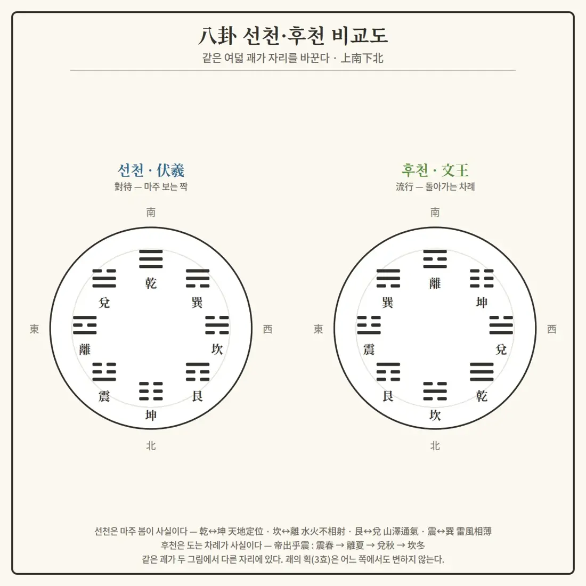
| 소품 | 잠그는 사실 (테스트 모드: 탭하여 확인) |
|---|---|
| 왼쪽 원 — 乾南 兌東南 離東 震東北 巽西南 坎西 艮西北 坤北 왜? | 선천(伏羲) — 對待, 네 쌍이 정확히 마주 본다 |
| 다리 — 도해는 자가테스트·역방향 판독의 대상이 아니다(CANON 74). 범례를 그림 안에 갖고 있다. ▸ 정산(2026-08-22, 규칙 111) — 무대 자리: 마주봄 네 쌍 s10p02(→s10u01)~s10p05(→s10u01) · 원 위의 자리는 도해가 전담(자리가 곧 사실) | |
| 네 쌍의 마주봄 왜? | 乾↔坤 天地定位 · 坎↔離 水火不相射 · 艮↔兌 山澤通氣 · 震↔巽 雷風相薄 |
| 다리 — 도해는 자가테스트·역방향 판독의 대상이 아니다(CANON 74). 범례를 그림 안에 갖고 있다. ▸ 정산(2026-08-22, 규칙 111) — 무대 자리: 마주봄 네 쌍 s10p02(→s10u01)~s10p05(→s10u01) · 원 위의 자리는 도해가 전담(자리가 곧 사실) | |
| 오른쪽 원 — 離南 坤西南 兌西 乾西北 坎北 艮東北 震東 巽東南 왜? | 후천(文王) — 流行, 도는 차례가 사실 |
| 다리 — 도해는 자가테스트·역방향 판독의 대상이 아니다(CANON 74). 범례를 그림 안에 갖고 있다. ▸ 정산(2026-08-22, 규칙 111) — 무대 자리: 마주봄 네 쌍 s10p02(→s10u01)~s10p05(→s10u01) · 원 위의 자리는 도해가 전담(자리가 곧 사실) | |
| 후천의 시계방향 차례 왜? | 帝出乎震 — 震春 → 離夏 → 兌秋 → 坎冬 |
| 다리 — 도해는 자가테스트·역방향 판독의 대상이 아니다(CANON 74). 범례를 그림 안에 갖고 있다. ▸ 정산(2026-08-22, 규칙 111) — 무대 자리: 마주봄 네 쌍 s10p02(→s10u01)~s10p05(→s10u01) · 원 위의 자리는 도해가 전담(자리가 곧 사실) | |
| 두 원에서 괘의 획(3효)은 변하지 않는다 왜? | 같은 괘가 자리만 바꾼다 — 바뀌는 것은 자리뿐 |
| 다리 — 도해는 자가테스트·역방향 판독의 대상이 아니다(CANON 74). 범례를 그림 안에 갖고 있다. ▸ 정산(2026-08-22, 규칙 111) — 무대 자리: 마주봄 네 쌍 s10p02(→s10u01)~s10p05(→s10u01) · 원 위의 자리는 도해가 전담(자리가 곧 사실) | |
도해 문항 4 펼치기
| 1. 先天(伏羲) 팔괘의 자리는? | 乾南 · 兌東南 · 離東 · 震東北 · 巽西南 · 坎西 · 艮西北 · 坤北 — 對待, 네 쌍이 마주 본다周易 說卦傳 |
| 2. 後天(文王) 팔괘의 자리는? | 離南 · 坤西南 · 兌西 · 乾西北 · 坎北 · 艮東北 · 震東 · 巽東南 — 流行, 도는 차례가 사실周易 說卦傳 |
| 3. 先天 마주봄 네 쌍과 그 원문은? | 乾↔坤 天地定位 · 坎↔離 水火不相射 · 艮↔兌 山澤通氣 · 震↔巽 雷風相薄周易 說卦傳 |
| 4. 後天의 도는 차례를 여는 원문 한 줄은? | 「帝出乎震」 — 震春 → 離夏 → 兌秋 → 坎冬周易 說卦傳 |
🔗 八卦 마주봄 — 여덟 병풍 앞 네 쌍 (天地·水火·山澤·雷風) 천인·의역·선천 對待 #s10u01
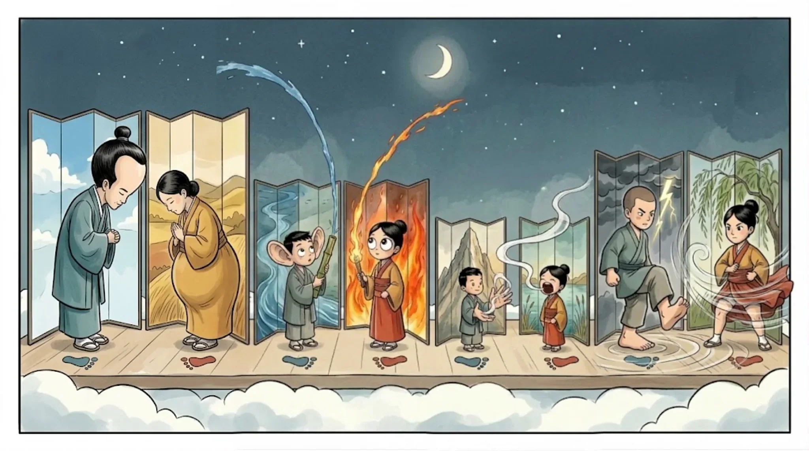
| 소품 | 잠그는 사실 (테스트 모드: 탭하여 확인) |
|---|---|
| 별 뜬 밤하늘·초승달 아래 구름 위에 뜬 긴 나무 마루 — 사람마다 등 뒤에 4폭 병풍 하나(모두 여덟), 네 쌍이 각자 발자국 자리에서 마주 선다. 쌍마다 왼쪽 남자(푸른 발자국)·오른쪽 여자(붉은 발자국), 키는 어른 > 청년 > 소년·소녀 > 꼬마 왜? | 先天八卦 對待 — 說卦傳 네 쌍(天地定位 · 水火不相射 · 山澤通氣 · 雷風相薄)이 마주 본다 · 乾坤 = 父母, 六子 = 長·中·少男女 · 八卦 取象(自然 · 家族 · 身體 近取諸身) |
| 다리 — 한 마루에 여덟 병풍 — 사전 「八卦 = 4폭+4폭 병풍 무대(마주 본 두 폭이 한 쌍)」를 네 번 되풀이해 한 줄에 세웠다. 발자국 표시 = 정해진 자리(對待). 키 차례가 가족 서열(一索·再索·三索)을 진다. ◆ 개념 — 說卦傳 「天地定位 山澤通氣 雷風相薄 水火不相射 八卦相錯」. 乾父坤母, 震巽 長男長女 · 坎離 中男中女 · 艮兌 少男少女. 近取諸身 = 乾首 坤腹 坎耳 離目 艮手 兌口 震足 巽股. 자리(先天 방위)는 도해 s10p01, 획은 도해 s10d02가 진다. ▸ 단원 통합(2026-10-16) — s10p02~p05 네 낱장을 한 장으로 합쳤다(4 Argon 바탕 1 — 낱장 네 칸 띠 참조 · 구역 편집 3: 대나무 물총·물불 벌어짐 / S자 김 / 충격파·회오리). 구역 판독 blind23z 4세션 모두 쌍 이름과 관계 복원. 통합판 blind23(판독자 둘): 판 표제어 **八卦 取象 92% · 88%**, 여덟 인물 8/8 · 8/8(卦·自然·家族·身體), 네 쌍 관계 4/4 · 4/4. | |
| [①天地定位] 두 어른이 각자 발자국 표시 위에서 서로를 향해 두 손 모아 허리 숙여 맞절 왜? | 定位 — 天地定位 (선천 對待 4쌍 중 ①) |
| 다리 — 定位=자리가 정해져 있음을 바닥의 발자국 표시라는 "사물"로 만듦(없는 개념은 명사로 규칙). 맞절=서로 마주하는 대대. ▸ 3차 재판독(2026-08-29, 규칙 150·153, blind3) — ✗ 노인↔임부·하늘↔들판 대비는 봄 ⚠ 乾坤·天地定位 미회수 — 「두 배 큰 머리/배」가 캐릭터 특성으로 읽힘. 꿈 진단으로 오독 ▸ 빈틈 메우기(2026-08-29) — ⚠ 父·母(乾坤이 부모괘)는 이 그림이 지지 않는다 — 쌍둥이로 통일하면 나이·성별이 통제 변인이 되기 때문이다. **정산은 s10d02 도해 문항이 진다**(규칙 121). ▸ blind6(2026-09-02) — 八卦 등재 후 **乾坤 天地定位 55%**(큰 머리 남자=乾·首 / 임신부=坤·腹). 등재 전에는 陰陽應象大論으로 흘렀다. ▸ 단원 통합(2026-10-16) — s10p02[0]에서 옮김. 낱장의 둥근 거울(행이 없는 소품)은 뺐다. | |
| [①天地定位] 왼쪽 중년 남자(청회색 도포·상투) — 머리만 두 배로 크다 + 등 뒤 흰 구름 뜬 하늘 병풍 왜? | 乾 = 天 · 父 · 首(近取諸身) |
| 다리 — 한자를 형태로: 乾爲首 → 머리를 두 배로 과장. 등 뒤 병풍=그 괘의 자연물(天). 씨앗 규칙의 기준점: 순양=아버지. ▸ 빈틈 메우기(2026-08-29) — 3차 판독에서 「두 배 큰 대머리」가 *노인이라는 캐릭터 특성*으로 읽혀 乾·天地定位가 날아갔다. **s20p08의 「하나만 다른 쌍둥이」 문법을 그대로 가져온다** — 서로가 서로의 대조군이 되어 규칙 92-b(같은 그림 안에 보통 크기가 나란히)가 성립한다. 대머리·노인 표시는 뺀다. (종전 소품 — 두 배 큰 대머리+하늘 병풍) ▸ 규칙 155 정정 반영(2026-08-29) — ⚠ **정정** — 「나이·성별을 전부 빼라」는 人倫(父·母)을 통째로 버리는 처방이었다. 지울 것은 성별이 아니라 **경합 설명**이다 — 대머리·주름을 지우면 「노인」으로 새지 않고 머리가 부위로 읽힌다. 男(父)은 그대로 둔다. ▸ 단원 통합(2026-10-16) — s10p02[1]에서 옮김. 통합판에서는 乾·坤을 남녀 어른으로 그려 父·母도 진다 — 낱장의 「쌍둥이」 통제는 네 쌍의 키 차례(父母 > 長 > 中 > 少)가 대신한다(blind23 판독자 둘이 키 순서로 長·中·少를 읽음). | |
| [①天地定位] 오른쪽 중년 여자(황토색 저고리·치마) — 배만 사방으로 고르게 두 배로 둥글다 + 등 뒤 누런 언덕 대지 병풍 왜? | 坤 = 地 · 母 · 腹 |
| 다리 — 坤爲腹 → 배를 두 배로. 배의 곡선=병풍 속 대지 언덕의 능선과 같은 곡선(라임 다리). 순음=어머니. ▸ 빈틈 메우기(2026-08-29) — 임부로 그리면 배가 「임신」이 되어 坤·腹을 못 진다. 나이·성별 표시를 전부 빼고 **크기 하나만** 다르게 한다. → 규칙 155 신설(近取諸身은 쌍둥이로 짓는다) — 팔괘 네 쌍 전부에 적용한다. (종전 소품 — 두 배 큰 배+대지 병풍(언덕과 같은 곡선)) ▸ 규칙 155 정정 반영(2026-08-29) — ⚠ **정정** — 女(母)는 그대로 둔다. 지울 것은 **「임신」이라는 경합 설명**이다 — 앞으로만 나온 배 + 허리 받친 자세가 임부를 만든다. 사방으로 고른 배 + 보통 자세면 배가 부위로 읽힌다. ▸ 단원 통합(2026-10-16) — s10p02[2]에서 옮김. | |
| [네 쌍 모두] 왼쪽 사람 발밑 푸른 발자국 · 오른쪽 사람 발밑 붉은 발자국 왜? | (보너스) 天陽 · 地陰 |
| 다리 — 생성 우연을 편입: 하늘 쪽 발자국이 파랑(양의 자리), 땅 쪽이 빨강 — 음양 표지로 라벨화. ▸ 단원 통합(2026-10-16) — s10p02[3]에서 옮김. | |
| [②水火不相射] 왼쪽 열 살쯤 소년 — 두 귀가 머리만큼 크다 + 강 병풍 + 대나무 대롱 물총 왜? | 坎 = 水 · 中男 · 耳 |
| 다리 — 坎爲耳 → 위성 접시급 귀. 씨앗 효가 가운데라 中男(둘째 아들). 강 병풍+물총=水의 이중 표기. ▸ 3차 재판독(2026-08-29, 규칙 150·153, blind3) — ✗ 귀=水·눈=火 소품은 봄 ⚠ ★ 물줄기가 불로 가는 것으로 읽혀 水火旣濟(不相射의 정반대)로 오독 ▸ blind6(2026-09-02) — 八卦 등재 후 **坎·離 마주봄 80%**(큰 귀+물총=坎 / 큰 눈+횃불=離). ▸ 단원 통합(2026-10-16) — s10p03[0]에서 옮김. 통합판에서 플라스틱 권총 물총을 **대나무 대롱 물총**으로 바꿨다(CANON §5). | |
| [②水火不相射] 오른쪽 열 살쯤 소녀 — 두 눈이 두 배로 크고 동그랗다 + 불길 병풍 + 횃불 왜? | 離 = 火 · 中女 · 目 |
| 다리 — 離爲目 → 두 배 눈. 씨앗 효(음) 가운데=中女. 불 병풍+횃불=火. ▸ 단원 통합(2026-10-16) — s10p03[1]에서 옮김. | |
| [②水火不相射] 물총의 물줄기는 소년 뒤쪽(왼쪽) 하늘로, 횃불의 불길은 소녀 뒤쪽(오른쪽) 하늘로 크게 휘어 올라가 — 둘 사이 한복판에서 만나지 않고 벌어진다. 두 아이는 각자 자기 줄기 끝을 올려다본다 왜? | 水火不相射 (對待 ②) |
| 다리 — 不相射="서로 쏘지 않는다"를 사건으로: 일부러 어깨 너머로 빗나가게 쏘아 아무도 안 맞는 장면. 원리 이름 자체를 놀이 규칙으로. ▸ 빈틈 메우기(2026-08-29) — 3차 판독에서 물줄기가 불로 가는 것으로 읽혀 **水火旣濟(不相射의 정반대)** 로 오독됐다. 「비껴 교차」는 조금만 어긋나도 「맞았다」로 읽힌다 — **벌어지는 두 줄기**는 어떻게 봐도 안 맞는다. 시선이 상대에게 가지 않는 것이 不相射의 두 번째 다리다. ◆ 왜 빈 공간으로 짓지 않는가 — 규칙 49(부재는 상태 값이 못 된다). 그래서 「가운데가 비었다」가 아니라 **「두 줄기가 바깥으로 휘어 나간다」** 는 사물의 모양으로 짓는다. (종전 소품 — 두 줄기가 서로 비껴 교차, 아무도 안 맞음) ▸ 단원 통합(2026-10-16) — s10p03[2]에서 옮김. | |
| [③山澤通氣] 왼쪽 다섯 살쯤 꼬마 소년 — 앞으로 내민 손바닥이 두 배로 크다 + 뾰족한 바위 봉우리 병풍 왜? | 艮 = 山 · 少男 · 手 |
| 다리 — 艮爲手 → 산처럼 멈춰 세우는 큰 손. 씨앗 효(양)가 맨 위=셋째(少男). 봉우리 병풍=山. ▸ 단원 통합(2026-10-16) — s10p04[0]에서 옮김. | |
| [③山澤通氣] 오른쪽 다섯 살쯤 꼬마 소녀 — 크게 벌린 입이 두 배 + 갈대 핀 못 병풍 왜? | 兌 = 澤 · 少女 · 口 |
| 다리 — 兌爲口 → 못처럼 활짝 열린 큰 입(기쁨·말의 괘). 씨앗 효(음) 맨 위=少女. 못·갈대=澤. ▸ 단원 통합(2026-10-16) — s10p04[1]에서 옮김. | |
| [③山澤通氣] 소녀의 입 → 못 병풍 위 → 소년의 손바닥으로 S자로 굽이쳐 이어지는 흰 김 한 줄기 왜? | 山澤通氣 (對待 ③) |
| 다리 — 通氣=기가 "통함"을 눈에 보이는 김 띠 한 줄로: 입에서 나와 손바닥을 감싸는 연결선 — 끊기지 않은 한 줄기가 곧 원리. ▸ 단원 통합(2026-10-16) — s10p04[2]에서 옮김. | |
| [④雷風相薄] 왼쪽 열일곱 살쯤 청년(까까머리·맨발) — 두 배 큰 맨발을 들어 마루를 구르고 바닥에 동그란 충격파 + 먹구름·번개 병풍 왜? | 震 = 雷 · 長男 · 足 |
| 다리 — 震爲足 → 우레처럼 쿵 구르는 큰 발. 씨앗 효(양)가 맨 아래=첫째(長男·一索). 번개 병풍=雷. ▸ 숨은 자산 회수(2026-08-29, 규칙 120·150) — **맨발 구르기 = 足 · 번개 병풍 = 雷 직역.** 震의 세 사실(雷·長男·足) 중 둘을 사물이 그대로 진다. ※판독자가 적은 「샘=泉」은 **오독이다 — 이 칸에 샘은 없다.** ▸ blind6(2026-09-02) — 八卦 어휘 결손으로 中風 35%(✗) → 「4+4 병풍 무대=八卦」 등재 후 **雷風相薄 震↔巽 60%**(번개 병풍 발차기 소년=震爲足, 버들 병풍 소녀=巽爲股, 회오리=相薄). 규칙 165. ▸ 단원 통합(2026-10-16) — s10p05[0]에서 옮김. | |
| [④雷風相薄] 오른쪽 처녀 — 다리를 넓게 벌려 버틴 튼튼한 허벅지 + 치마 자락을 휘감는 옆바람 회오리 + 바람에 휘는 버드나무 병풍 왜? | 巽 = 風 · 長女 · 股 |
| 다리 — 巽爲股 → 바람을 버티는 넓은 자세의 허벅지. 씨앗 효(음) 맨 아래=長女. 휘는 버들+치마 돌풍=風. ▸ 숨은 자산 회수(2026-08-29, 규칙 120·150) — **허벅지 = 股 · 치마 돌풍 = 風 직역.** 巽도 셋 중 둘을 사물이 그대로 진다. ▸ 단원 통합(2026-10-16) — s10p05[1]에서 옮김. | |
| [④雷風相薄] 청년 발밑 충격파와 처녀의 회오리가 둘 사이에서 맞부딪친다 왜? | 雷風相薄 (對待 ④) — 자리는 비교도 s10p01 담당 |
| 다리 — 相薄="서로 부딪힘"을 사건으로: 발 구르기 충격파와 부채 돌풍이 연못 위 한가운데서 정면 충돌해 소용돌이로 터짐. ▸ 단원 통합(2026-10-16) — s10p05[2]에서 옮김. | |
장면 11 · 오장 다섯 방(宣明五氣)
🔗 宣明五氣 — 한 지붕 다섯 방 (所惡·化液·五勞) 천인·宣明五氣 #s11u01
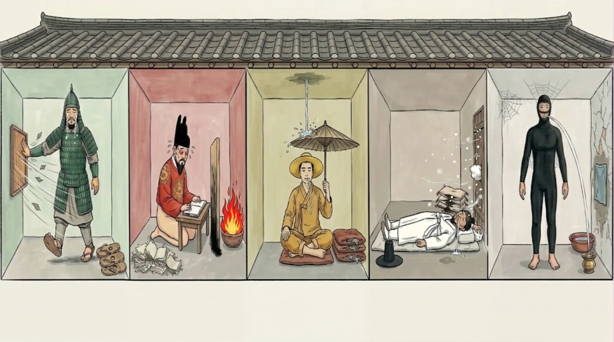
| 소품 | 잠그는 사실 (테스트 모드: 탭하여 확인) |
|---|---|
| 앞벽을 걷어낸 긴 한옥 한 채 — 칸막이벽으로 나뉜 방 다섯(초록·붉은·노란·회벽·흰 회벽)이 한 줄로 붙고, 방마다 장부 인물 하나가 그 방에서 오래 하는 일(걷기·보기·앉기·눕기·서기)을 하고 있다. 방마다 같은 세 가지가 되풀이된다 — 해로운 기운과 사람 사이에 세운 가리개 · 얼굴 구멍에서 나온 액 · 닳은 물건 무더기(지금 쓰는 하나는 성함) 왜? | 素問·宣明五氣 — 五臟所惡(肝風·心熱·脾濕·肺寒·腎燥) · 五臟化液(肝淚·心汗·脾涎·肺涕·腎唾) · 五勞所傷(久行傷筋·久視傷血·久坐傷肉·久臥傷氣·久立傷骨) · 차례 = 木火土金水(相生) |
| 다리 — 한 지붕 아래 다섯 방 — 한 편(宣明五氣)이 세 계열(所惡·化液·五勞)을 오장마다 동사형으로 배속한다는 것을, 방마다 같은 세 소품 문법으로 되풀이해 보여 준다(CANON 60 — 한 축은 다섯 칸에서 같은 문법을 반복해야 학습된다). 방 차례는 五行 s09u01과 같은 相生 차례. ◆ 개념 — 宣明五氣篇: 五藏所惡 「心惡熱 肺惡寒 肝惡風 脾惡濕 腎惡燥」 · 五藏化液 「心爲汗 肺爲涕 肝爲淚 脾爲涎 腎爲唾」 · 五勞所傷 「久視傷血 久臥傷氣 久坐傷肉 久立傷骨 久行傷筋」. ▸ 단원 통합(2026-10-17) — s11p01~p05 다섯 낱장을 한 장으로 합쳤다(4 Argon 바탕 1 — 낱장 다섯 칸 띠 참조). 낱장마다 있던 라벨 행 「素問·宣明五氣※」 다섯은 이 틀 행 하나로 묶었다. 구역 편집은 Gemini reCAPTCHA로 막혀(2026-10-17) 바탕 위에 PIL 덧그림 5(장군 눈물 · 농부 침 · 화로 불꽃 · 문틈 눈송이 · 흰 솜뭉치) + ✦ 메움으로 마감. 바탕 진단 판독 blind25(X): 宣明五氣 85% — 淚·涎 없음, 불꽃 없어 숯이 瘀로, 문틈 성에 = 裏寒 위험. 덧그림 뒤 통합판 blind26(판독자 둘): 판 표제어 **宣明五氣 五液·五惡·五勞 90% · 88%**, 다섯 인물 5/5 · 5/5, 인물마다 所惡·化液·五勞 셋 모두(肺 涕만 「요 끝에서 떨어지는 방울 — 추정」). ▸ v2(2026-10-25) — reCAPTCHA가 풀려 보관한 구역 편집 ZA~ZE를 4 Argon으로 실행, PIL 덧그림을 갈아 끼움(눈물 · 바람결 · 불꽃·충혈·땀 · 침 실·빗물 · 콧물·눈송이·솜뭉치 · 타구로 뱉는 침). 판독(blind65): 판 단원 2/2 宣明五氣 90~93%, 5/5·5/5, 인물마다 所惡·化液·五勞 셋 모두(15/15·15/15) — v1의 肺 涕 반쯤 · 화풍 차이 사라짐. | |
| [木·초록 방] 초록 비늘갑옷 장군 — 방 안을 걸어감(맨 왼쪽 방) 왜? | 肝 |
| 다리 — 왕국 캐릭터 재사용=상징 사전. 같은 인물이 곧 같은 장부. ▸ 단원 통합(2026-10-17) — s11p01[0]에서 옮김. | |
| [木·초록 방] 뒷벽 창의 닫힌 나무 덧문을 장군이 손으로 누르고, 덧문 틈으로 잎과 바람결이 옆으로 비껴 날려 들어옴 왜? | 肝惡風 (五臟所惡) |
| 다리 — 所惡=해로운 기운의 출처와 사람 사이에 놓인 대항 사물로(규칙 59 — 덧문이 그것이다). 자기 기운(木=風)이라도 지나치면 병이 되니 간이 가장 꺼리는 게 바람. ◆ 개념 — 왜 간이 風을 꺼리나: 風은 흔들고 당기는 기운이라 간이 주관하는 筋을 떨게(경련·진전) 만들기 때문. ▸ 단원 통합(2026-10-17) — s11p01[1]에서 옮김. | |
| [木·초록 방] 두 눈에서 뺨으로 흐르는 눈물 왜? | 肝爲淚 (五臟化液) |
| 다리 — 肝開竅於目 — 간의 구멍이 눈이라 간의 액은 눈으로 나옴=눈물. 化液 5종은 전부 "얼굴의 출처"로 변별. ▸ 단원 통합(2026-10-17) — s11p01[2]에서 옮김. | |
| [木·초록 방] 밑창에 구멍이 뚫린 채 버려진 짚신 세 짝이 계단처럼 어긋나게 포개짐(구멍 셋이 다 보임 · 신고 있는 것만 성함) 왜? | 久行傷筋 (五勞所傷 · 筋=肝의 五體) |
| 다리 — 오래 "걷기"의 증거를 명사로: 밑창이 뚫린 채 버려진 짚신 무더기(신은 것만 성하다). 걷기가 상하는 것은 筋이고 筋은 肝의 五體라 이 방 배치. ◆ 「久」를 무엇이 지는가: 자세로도 자국으로도 안 나온다 — 그 행위에 쓰는 물건이 「닿는 자리부터 닳아 없어진 채 여럿 쌓여 있는 것」이 「오래」를 진다(CANON §5-1). 久立만 닿는 물건이 없어(맨발·빈손) 거미줄이 대신 진다. ◆ 「傷Y」는 그림이 아니라 **라벨이 진다** — 다섯 칸 공통 규칙이다. 그림이 지는 것은 「久(오래)」 하나이고, 그 久가 어느 장부의 것인지는 「어느 방인가」(五臟 캐릭터)가 진다. 血·氣·肉·骨·筋 자체를 낱개 소품으로 흩으면 규칙 60이 금지한 상태가 된다 — 블라인드 판독에서 종아리 띠는 「그냥 부상」, 충혈은 「心藏神」, 하품은 「감기」로 읽혔다. ▸ 수 다리 실측·수리(2026-08-29, 규칙 146) — 네 짝째가 맨 위 짚신에 가려 있어 久의 「셋」이 3인지 4인지 확정되지 않았다. 한 짝을 지우고 남은 셋을 **계단처럼 어긋나게** 포개, 포개짐(久)을 유지하면서 셋이 세어지게 했다. 재검산 — 밑창 구멍 3개 확정. ⚠ 밑창 두께를 두 겹으로 그리는 화법 때문에 판독자 하나가 숨은 네 짝째를 의심했다 — 실제로 걸리면 더 벌린다. ▸ 단원 통합(2026-10-17) — s11p01[3]에서 옮김. | |
| [火·붉은 방] 붉은 곤룡포 임금 + 검은 익선관 — 방석 없이 맨 마루에 무릎 꿇고 서안의 펼친 책에 얼굴을 바싹 댐 왜? | 心 |
| 다리 — 왕국의 君主之官 그대로. ▸ 단원 통합(2026-10-17) — s11p02[0]에서 옮김. | |
| [火·붉은 방] 임금과 활활 타는 화로 사이에 세운, 불 쪽 면만 새카맣게 그을린 한 장짜리 통널 왜? | 心惡熱 (五臟所惡) |
| 다리 — 所惡=해로운 기운의 출처와 사람 사이에 놓인 **정지된 대항 사물**로 나른다(규칙 59). 심은 火인데도 熱을 싫어함(자기 기운 과잉 기피의 대표례 — 함정 소재). 그을림이 불 쪽 면에만 있어 「이 널이 열을 대신 받고 있다」가 한눈에 읽힌다. ◆ 개념 — 왜 심이 熱을 꺼리나: 심은 이미 火의 장기라 열이 더해지면 불이 불을 태워 신명이 어지러워진다(자기 기운 과잉 기피). ※ 원래는 「긴 막대로 화로를 밀어냄」이었다. 블라인드 판독에서 「왕이 스스로 부지깽이로 불을 쑤신다」로 **뜻이 정반대로** 읽혀 폐기했다 — 동작으로 지은 所惡는 관객이 인과를 자기 식으로 잇는다. ▸ 단원 통합(2026-10-17) — s11p02[1]에서 옮김. | |
| [火·붉은 방] 이마·관자놀이에만 맺힌 땀 왜? | 心爲汗 (五臟化液) |
| 다리 — 汗爲心之液. "이마에만" 한정=다른 방의 눈물·침·콧물과 출처 변별. ◆ 개념 — 왜 땀이 심의 액인가: 汗血同源 — 땀은 혈 속 진액이 밖으로 새어 나온 것이고, 혈의 주인이 심이라서. ▸ 단원 통합(2026-10-17) — s11p02[2]에서 옮김. | |
| [火·붉은 방] 책에 코 박은 독서 + 충혈된 눈 + 모서리가 파이고 실이 끊겨 낱장이 벌어진 백지 책 무더기(셀 수 없이 여러 권, 펼친 책만 성함) 왜? | 久視傷血 (五勞所傷 · 心主血) |
| 다리 — 오래 "보기"는 血을 소모 — 血의 주인이 心이라 이 방. 충혈된 눈=「오래 본 눈」의 증거. 五勞와 오장의 연결 고리(주관 관계)가 함정 지점. ◆ 개념 — 왜 오래 보면 혈이 상하나: 눈은 혈을 공급받아야 본다(肝受血而能視) — 계속 보면 혈이 계속 소모. ◆ 「久」를 무엇이 지는가: 자세로도 자국으로도 안 나온다 — 그 행위에 쓰는 물건이 「닿는 자리부터 닳아 없어진 채 여럿 쌓여 있는 것」이 「오래」를 진다(CANON §5-1). 久立만 닿는 물건이 없어(맨발·빈손) 거미줄이 대신 진다. ◆ 「傷Y」는 그림이 아니라 **라벨이 진다** — 다섯 칸 공통 규칙이다. 그림이 지는 것은 「久(오래)」 하나이고, 그 久가 어느 장부의 것인지는 「어느 방인가」(五臟 캐릭터)가 진다. 血·氣·肉·骨·筋 자체를 낱개 소품으로 흩으면 규칙 60이 금지한 상태가 된다 — 블라인드 판독에서 종아리 띠는 「그냥 부상」, 충혈은 「心藏神」, 하품은 「감기」로 읽혔다. ▸ 단원 통합(2026-10-17) — s11p02[3]에서 옮김. | |
| [土·노란 방] 노란 밀짚모자 농부 — 성한 방석 위 양반다리 왜? | 脾 |
| 다리 — 왕국의 倉廩之官 그대로. ▸ 3차 재판독(2026-08-29, 규칙 150·153, blind3) — ✓ 脾 — 黃·涎·久坐(해진 방석 셋+앉은 것 성함)·惡濕(우산) 복원, 방석 셈 정확 ⚠ 우산이 濕회피인지 비인지 ▸ 단원 통합(2026-10-17) — s11p03[0]에서 옮김. | |
| [土·노란 방] 천장 습기 얼룩에서 새는 빗물을 우산으로 막음 왜? | 脾惡濕 (五臟所惡) |
| 다리 — 습기의 출처를 명사로(천장 얼룩) → 그 아래 받쳐 든 우산이라는 **대항 사물**=所惡(규칙 59). 실내의 우산은 「이 방에 이게 왜 있지?」가 나오는 소품이라 블라인드 판독에서 가장 먼저 지목됐다(규칙 61). ◆ 개념 — 왜 비가 濕을 꺼리나: 습은 끈적하게 눌러붙어 비의 운화(運化, 소화·운반)를 가로막기 때문. ▸ 단원 통합(2026-10-17) — s11p03[1]에서 옮김. | |
| [土·노란 방] 입가에서 턱으로 흐르는 침 왜? | 脾爲涎 (五臟化液) ★뱉는 唾(腎)와 변별 |
| 다리 — 涎=입가에서 저절로 "흘러내리는" 침(脾開竅於口). 검은 방의 唾(뱉는 침)와 동작으로 갈라놓은 것이 이 시리즈의 핵심 변별. ▸ 단원 통합(2026-10-17) — s11p03[2]에서 옮김. | |
| [土·노란 방] 양반다리 + 가운데가 터져 때 묻은 회색 솜이 삐져나온 납작한 방석 세 장이 옆에 포개짐(앉은 방석만 성함) 왜? | 久坐傷肉 (五勞所傷 · 肉=脾의 五體) |
| 다리 — 오래 "앉기"는 肉을 상함 — 肉은 脾의 五體. ◆ 「久」를 무엇이 지는가: 자세로도 자국으로도 안 나온다 — 그 행위에 쓰는 물건이 「닿는 자리부터 닳아 없어진 채 여럿 쌓여 있는 것」이 「오래」를 진다(CANON §5-1). 久立만 닿는 물건이 없어(맨발·빈손) 거미줄이 대신 진다. ◆ 「傷Y」는 그림이 아니라 **라벨이 진다** — 다섯 칸 공통 규칙이다. 그림이 지는 것은 「久(오래)」 하나이고, 그 久가 어느 장부의 것인지는 「어느 방인가」(五臟 캐릭터)가 진다. 血·氣·肉·骨·筋 자체를 낱개 소품으로 흩으면 규칙 60이 금지한 상태가 된다 — 블라인드 판독에서 종아리 띠는 「그냥 부상」, 충혈은 「心藏神」, 하품은 「감기」로 읽혔다. ▸ 단원 통합(2026-10-17) — s11p03[3]에서 옮김. | |
| [金·회벽 방] 흰 도포 재상 — 요 위에 누움 · 머리엔 망건과 상투만, 검은 갓은 벗어 발치 바닥에 왜? | 肺 |
| 다리 — 왕국의 相傅之官 그대로. ▸ 3차 재판독(2026-08-29, 규칙 150·153, blind3) — ✗ — ⚠ ★ 신규 오독: 하품=欠→腎爲欠, 곡물 자루=「콩팥」 말놀이, 콧물이 가루로 → 肺 방이 腎으로 읽힘 ▸ 빈틈 메우기(2026-08-29) — ⚠ 재작도 스펙 — 이 방에서 **腎으로 새는 신호 셋을 전부 없앤다**: 하품(欠) · 자루 모양 · 가루로 보이는 콧물. 흰 도포 재상 + 검은 갓은 유지(§5 肺 캐릭터). ▸ 단원 통합(2026-10-17) — s11p04[0]에서 옮김. 갓은 벗어 **바닥**에 둔다 — 사전 太(사람 아닌 것 위에 씌운 갓)와 갈림. | |
| [金·회벽 방] 뒷벽 나무 문의 벌어진 틈으로 눈송이가 들이치고, 그 문틈을 흰 솜뭉치로 틀어막음 왜? | 肺惡寒 (五臟所惡) |
| 다리 — 찬 기운의 침입 지점을 명사로(문틈+성에) → 솜뭉치로 봉쇄=所惡. ◆ 개념 — 왜 폐가 寒을 꺼리나: 폐는 겉(피모·호흡)과 직통하는 여린 장기(嬌臟)라 찬 기운에 가장 먼저 다친다. ▸ 단원 통합(2026-10-17) — s11p04[1]에서 옮김. 통합판에서 「문틈 성에·고드름」을 **문틈으로 들이치는 눈송이**로 바꿨다 — 사전 寒 갈림(안쪽 성에 = 裏寒)을 피하고(blind25 진단 판독이 정확히 이 오독을 짚음), 肝惡風(덧문 틈의 바람)과 같은 꼴로 맞췄다. | |
| [金·회벽 방] 콧등을 타고 턱 밑까지 길게 늘어져 **끝에 방울이 맺힌 맑은 줄기**, 그 아래 요에 젖은 자국 하나 왜? | 肺爲涕 (五臟化液) |
| 다리 — 肺開竅於鼻 — 폐의 액은 코로=콧물(涕). ▸ 빈틈 메우기(2026-08-29) — **액체임을 확정한다.** 3차 판독에서 콧물이 「가루」로 읽혀 肺爲涕가 날아갔다 — 맺힌 방울과 젖은 자국이 액체의 증거다(§5 津 = 맑은 물방울과 같은 물성). (종전 소품 — 길게 흐르는 콧물) ▸ 단원 통합(2026-10-17) — s11p04[2]에서 옮김. ▸ v2(2026-10-25) — ZD: 콧구멍에서 요까지 늘어진 맑은 콧물로 다시 그림 → blind65 2/2 + 띠 둘 涕 ✓. | |
| [金·회벽 방] 요에 축 늘어져 눈을 반쯤 감고 **입을 다문 채** 누움 + 머리맡에 포갠 **납작한 베개 셋** — 셋 다 눌려 진갈색 메밀껍질이 터져 나왔고 **네 귀퉁이마다 짧은 실 술이 달렸다** (목 밑에 벤 베개만 성하다) 왜? | 久臥傷氣 (五勞所傷 · 肺主氣) |
| 다리 — 오래 "눕기"는 氣를 상함 — 氣의 주인이 肺라 이 방. 하품·늘어짐=「오래 누운 몸」의 증거. 심의 久視傷血과 짝을 이루는 주관 관계 함정. ◆ 개념 — 왜 오래 누우면 기가 상하나: 움직임이 없으면 기가 펴지지 못하고 정체되어 오히려 소모 — 폐가 기의 주인이라 이 방. ◆ 「久」를 무엇이 지는가: 자세로도 자국으로도 안 나온다 — 그 행위에 쓰는 물건이 「닿는 자리부터 닳아 없어진 채 여럿 쌓여 있는 것」이 「오래」를 진다(CANON §5-1). 久立만 닿는 물건이 없어(맨발·빈손) 거미줄이 대신 진다. ◆ 「傷Y」는 그림이 아니라 **라벨이 진다** — 다섯 칸 공통 규칙이다. 그림이 지는 것은 「久(오래)」 하나이고, 그 久가 어느 장부의 것인지는 「어느 방인가」(五臟 캐릭터)가 진다. 血·氣·肉·骨·筋 자체를 낱개 소품으로 흩으면 규칙 60이 금지한 상태가 된다 — 블라인드 판독에서 종아리 띠는 「그냥 부상」, 충혈은 「心藏神」, 하품은 「감기」로 읽혔다. ▸ 빈틈 메우기(2026-08-29) — 두 가지를 지운다 — ⓐ **하품을 뺐다**(§5 「하품」 항목: 판독자가 五氣所病 腎爲欠으로 먼저 읽어 肺 방이 腎으로 뒤집혔다). 久臥의 증거는 「눕기 + 닳은 베개 셋」이 이미 다 진다 ⓑ 베개에 **술**을 달아 「곡물 자루」 오독을 끊었다 — 자루로 읽히면 「콩팥」 말놀이로 다시 腎이 된다. 자루는 §5에서 收 전담 기호이기도 하다. (종전 소품 — 요에 늘어져 누움 + 힘없는 하품 + 진갈색 메밀껍질이 터져 나온 납작한 베개 세 개가 머리맡에 포개짐(벤 베개만 성함)) ⚠ 정정 — 술만 더하고 **수는 셋 그대로 둔다.** §5 久 = 같은 물건 셋이 포개진 것이라 둘로 줄이면 久가 깨진다(五勞所傷 다섯 칸이 예외 없이 이 문법이다). ▸ 단원 통합(2026-10-17) — s11p04[3]에서 옮김. | |
| [水·흰 방] 검은 잠수복+후드+고글 잠수부 — 꼿꼿이 선 부동자세(맨 오른쪽 방) 왜? | 腎 |
| 다리 — 왕국의 作強之官 그대로. ▸ 3차 재판독(2026-08-29, 규칙 150·153, blind3) — ✓ 腎 — 黑·水·唾(침줄기)·久立(거미줄) 복원 ⚠ 금 단지가 金인지 침받이인지 유보 ▸ 단원 통합(2026-10-17) — s11p05[0]에서 옮김. | |
| [水·흰 방] 들뜬 회벽이 쩍쩍 갈라져 박리 + 벽에 붙인 젖은 무명 수건과 고인 물그릇 왜? | 腎惡燥 (五臟所惡) |
| 다리 — 메마름을 벽의 균열·박리로 명사화, 젖은 수건과 물그릇으로 마른 벽을 적시는 것=燥를 꺼림. ◆ 개념 — 왜 신이 燥를 꺼리나: 조는 진액을 말리는 기운이라 신이 저장하는 정수(精水)를 고갈시키기 때문. ※ s09p04(→s09u01)의 갈라진 **땅**(秋燥·肺)과 같은 燥 기호다 — 딥링크라 옳고, 재료(마른 흙 ↔ 들뜬 회벽)와 **막는 사물의 유무**로 가른다. 所惡 칸에만 젖은 수건·물그릇이 있다(규칙 59). ※ 물은 부호가 없다 — **떨어지는 물줄기는 濕(해로움), 그릇에 고인 물은 보습(이로움)**. 이 칸에는 낙수·누수가 없다. ▸ 단원 통합(2026-10-17) — s11p05[1]에서 옮김. | |
| [水·흰 방] 포물선을 그려 놋 타구로 뱉음(턱 비접촉) 왜? | 腎爲唾 (五臟化液) ★흘리는 涎(脾)과 변별 |
| 다리 — 唾=의지로 "뱉는" 침. 포물선+타구+턱 비접촉 세 조건이 涎과의 경계선. ◆ 개념 — 唾는 신정이 혀 밑(金津玉液)으로 올라온 진액 — 그래서 함부로 뱉지 말라는 양생 격언과 연결(정을 아낌). ▸ 단원 통합(2026-10-17) — s11p05[2]에서 옮김. ▸ v2(2026-10-25) — ZE: 포물선으로 놋 타구 안에 떨어지는 침(2차에서 타구 안으로) → blind65 2/2 唾 ✓(타구 = 요강 위험은 남음). | |
| [水·흰 방] 꼿꼿이 선 부동자세 + 두 겨드랑이와 머리 위에 쳐진 거미줄 셋 왜? | 久立傷骨 (五勞所傷 · 骨=腎의 五體) |
| 다리 — 오래 "서기"는 骨을 상함 — 骨은 腎의 五體. 오래 안 움직여 몸에 쳐진 거미줄=오래 서기의 명사화. 다섯 칸 중 유일하게 닿는 물건이 없어(맨발·빈손) 몸 위에 생긴 것으로 갔다. 원래는 「제자리에 닳은 두 발 자국」이었는데 「젖은 헝겊? 소금? 각질?」로 읽혀 폐기했다. ◆ 「久」를 무엇이 지는가: 자세로도 자국으로도 안 나온다 — 그 행위에 쓰는 물건이 「닿는 자리부터 닳아 없어진 채 여럿 쌓여 있는 것」이 「오래」를 진다(CANON §5-1). 久立만 닿는 물건이 없어(맨발·빈손) 거미줄이 대신 진다. ◆ 「傷Y」는 그림이 아니라 **라벨이 진다** — 다섯 칸 공통 규칙이다. 그림이 지는 것은 「久(오래)」 하나이고, 그 久가 어느 장부의 것인지는 「어느 방인가」(五臟 캐릭터)가 진다. 血·氣·肉·骨·筋 자체를 낱개 소품으로 흩으면 규칙 60이 금지한 상태가 된다 — 블라인드 판독에서 종아리 띠는 「그냥 부상」, 충혈은 「心藏神」, 하품은 「감기」로 읽혔다. ▸ 단원 통합(2026-10-17) — s11p05[3]에서 옮김. | |
장면 12 · 진단(望·問·切)
🔗 望色 ① 靑·赤·黃 — 한 진료소 평상의 아홉 환자 진단·望診 #s12u01
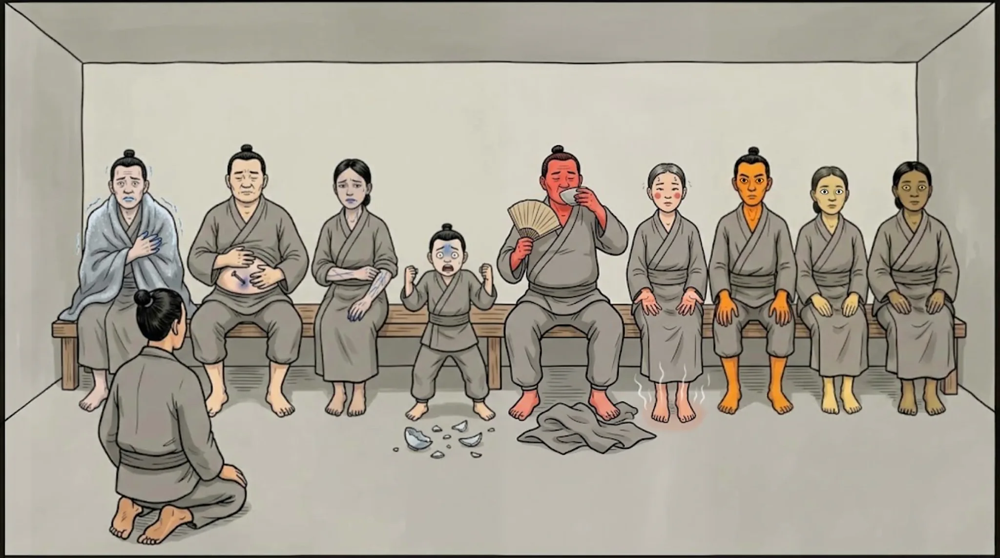
| 소품 | 잠그는 사실 (테스트 모드: 탭하여 확인) |
|---|---|
| 긴 회색 진료소 방 — 긴 평상 하나에 같은 회색 두루마기·맨발의 환자 아홉이 한 줄로 앉고(왼쪽부터 靑 넷 · 赤 둘 · 黃 셋, 靑의 넷째는 평상 앞에 선 아이), 맨 앞 왼쪽에 등을 완전히 돌리고 무릎 꿇은 의사(정상 살색 기준선). 옷·무대는 같고 얼굴·살갗의 색과 그 색이 앉은 자리만 다르다 왜? | 望色 五色主病 ① — 靑(寒·痛·瘀血·驚風) · 赤(實熱 滿面通紅 ↔ 虛熱 兩顴潮紅) · 黃(陽黃 鮮明 · 萎黃 · 陰黃 晦暗) — 같은 색 안에서도 자리·밝기·윤기로 병증이 갈린다 |
| 다리 — 한 진료소의 비교 칸 문법(규칙 67)을 세 색에 걸쳐 한 줄로 이었다 — 옷·자세·무대를 같게 두고 얼굴빛만 바꾸니 「색이 곧 사실」이 선다. 세 색이 나란하므로 규칙 92-c(「그 색이 아닌 것」이 같은 그림 안에)가 저절로 서고, 낱장 s12p01의 틀 소실(靑色主病이라는 계열 이름이 안 읽힘)을 이웃 색이 받쳐 준다. 의사는 소품이 아니라 무대(정상 살색 기준선, CANON). ◆ 개념 — 五色主病: 靑主寒·痛·瘀血·驚風 / 赤主熱(實熱 滿面通紅 · 虛熱 兩顴潮紅) / 黃主脾虛·濕(萎黃 · 陽黃 鮮明如橘子色 · 陰黃 晦暗如烟熏) / 白主虛·寒·失血 / 黑主腎虛·水飮·瘀血. 白·黑·善惡은 s12u02. ▸ 단원 통합(2026-10-17) — 望色 s12p01~06(환자 17명)을 한 장에 넣으면 얼굴이 낱장의 절반 아래로 줄어 색의 자리가 안 읽혀 두 장으로 갈랐다. 이 판은 s12p01·02·03. 4 Argon 바탕(참조 = 낱장 s12p03 한 칸 — 세 칸 띠로 하자 양복·청록 치마가 따라와 버림) + 구역 편집 3(寒 얼굴 창백·입술 손끝 靑 / 驚風 아이 미간·山根 靑·놀란 얼굴 · 瘀血 입술 靑紫 / 黃 셋 흰자). 구역 판독 blind27z 3세션 모두 제 주병 복원. 통합판 blind28(판독자 둘): 판 표제어 **望色 五色主病 靑·赤·黃 88% · 88%**, 아홉 환자 9/9 · 9/9(寒·痛·瘀血·驚風 · 實熱·虛熱 · 陽黃·萎黃·陰黃), 13행 사실 모두 읽힘. | |
| [靑] 왼쪽 네 사람(셋은 평상에 앉고 아이는 평상 앞에 섬) — 넷 다 바탕은 창백한 살색인데 靑이 앉은 자리가 저마다 다르다 왜? | 靑色主病 — 寒 · 痛 · 瘀血 · 驚風 |
| 다리 — 진료소 무대의 환자 몸에 병증을 직접 칠하는 직결형 다리(색=병증). ◆ 개념 — 기준색을 얼굴에 직접 칠함. 이 방(진료소)의 인물은 환자이지 오행왕국 캐릭터가 아니다 — 望診의 색은 장부가 아니라 병증을 가리키므로 무대를 분리했다. ▸ 재작도 6차(2026-09-02, 규칙 92-c) — 넷을 같은 푸른색으로 칠했더니 靑이 배경이 되어 안 읽혔고, 남은 소품만으로 **破傷風**이 조립됐다(blind6 30→35%). 얼굴 전체를 칠하지 않고 **靑이 앉는 자리를 넷 다 다르게** 해 화면에 「靑 아닌 살색」이 남게 한다 — ✓난 s12p03 黃(萎/陽/陰 세 황색)의 구조와 같게. ▸ 단원 통합(2026-10-17) — s12p01[0]에서 옮김. | |
| [靑] 두루마기 앞섶을 헤친 맨배에 쇠못 하나가 박혀 두 손으로 그 둘레를 감싼 남자(왼쪽 둘째) — 얼굴은 창백하고 못 둘레의 살만 靑 왜? | 靑 = 痛 |
| 다리 — 진료소 무대의 환자 몸에 병증을 직접 칠하는 직결형 다리(색=병증). ◆ 개념 — 寒이 경맥을 수축시켜 기혈이 막히면 통증 — 靑은 응체(막힘)의 색. ▸ 빈틈 메우기(2026-08-29, 글자 사물 적용) — §5 글자 사전 「痛 = 살에 박힌 쇠못 하나」를 적용한다. 못이 사물이고 **박힌 자리가 곧 부위**라 「배가 아프다」가 소품 하나로 선다. (종전 소품 — 배를 움켜쥔 통증 표정) ▸ 단원 통합(2026-10-17) — s12p01[1]에서 옮김. | |
| [靑] 소매를 걷은 팔뚝·손등에 살갗 밑으로 비치는 가는 靑 핏줄 + 입술·손톱 靑紫의 여자(왼쪽 셋째) — 얼굴은 창백 왜? | 靑 = 瘀血 (脣甲靑紫 · 靑筋) |
| 다리 — 瘀血은 피가 돌지 못하고 맺힌 것이라 **말초가 아니라 살갗 밑 핏줄까지 靑이 올라온다** — 『金匱要略·驚悸吐衄下血胸滿瘀血病』 「病人胸滿, **脣痿舌靑**…爲有瘀血」 계열의 望診 소견. ▸ 반납(2026-09-04, 규칙 173) — 재작도 6차에서 넣었던 「손에 쥔 **검붉게 굳은 덩이**」는 §5의 **【瘀】= 검붉게 굳은 덩이** 그 자체였다. blind8에서 이 판이 통째로 **「瘀血」 판으로 60%** 읽혀 표제어(靑色主病)를 빼앗겼다 — **내가 심은 전담 기호 침범**이다. 덩이를 빼고 靑筋으로 바꾼다. ⚠ **핏줄은 솟지 않고 비쳐 보이게** 그린다 — 도톰하게 솟으면 §5 **【腫】(부풀어 팽팽해진 곳)**과 겹친다(규칙 173 역검색). ⚠ **혀는 쓰지 않는다** — 舌靑이 고전의 소견이지만 §5 **【舌】= 벌린 입 안의 혀**가 **心**을 지므로 침범이 된다. ▸ row3(寒)과의 갈림 — 寒은 **입술과 손끝**(말초 = §5【厥】), 瘀血은 **입술과 손톱(【爪】) + 팔뚝의 靑筋**. 靑이 앉은 자리가 다르다. ▸ 단원 통합(2026-10-17) — s12p01[2]에서 옮김. | |
| [靑] 서리 낀 담요를 두르고 떠는 남자(맨 왼쪽) — 얼굴은 창백하고 입술과 손끝만 靑 왜? | 靑 = 寒 |
| 다리 — 진료소 무대의 환자 몸에 병증을 직접 칠하는 직결형 다리(색=병증). ◆ 개념 — 寒으로 혈행이 응체되면 얼굴이 푸르러진다 — 통증과 같은 기전의 두 얼굴. ▸ 단원 통합(2026-10-17) — s12p01[3]에서 옮김. | |
| [靑] 평상 앞에 선 아이 — 두 주먹을 꽉 쥐고 눈을 동그랗게 뜬 채 입을 벌려 겁에 질렸고, 발치에 깨진 사기그릇 조각이 흩어져 있다. 얼굴은 창백하고 미간·콧대 뿌리만 靑 왜? | 靑 = 驚風 (小兒驚風) |
| 다리 — 진료소 무대의 환자 몸에 병증을 직접 칠하는 직결형 다리(색=병증). ◆ 개념 — 소아 경풍의 전조로 눈썹·콧등·입 주위가 푸른빛을 띤다 — 성인 아닌 "아이"로 그린 것이 이 항목의 조건 표시. ▸ 빈틈 메우기(2026-08-29) — 3차 판독 — 驚이 안 읽혔다. 놀란 표정만으로는 규칙 106(몸짓·표정만이면 회수가 약하다)에 걸린다. **깨진 그릇**이 정지된 사물로 놀람의 원인을 진다. (종전 소품 — 놀라 굳은 아이(주먹·움찔)) ▸ 단원 통합(2026-10-17) — s12p01[4]에서 옮김. | |
| [赤] 얼굴·목·손발이 고르게 새빨간 남자 — 부채질 + 사발의 물을 들이켬 + 발치에 걷어찬 이불 왜? | 滿面通紅 = 實熱(陽盛) |
| 다리 — 같은 붉은색의 분포 차이를 좌우 인물로 대비시킨 다리. ◆ 개념 — 분포가 판별 기준. 열이 온몸에 넘치니 색도 얼굴 전체에 고르게 퍼진다. 찬물을 벌컥 들이켜는 것(喜冷飮)이 實熱의 동반 증. ▸ 단원 통합(2026-10-17) — s12p02[0]에서 옮김. | |
| [赤] 창백한 바탕에 두 광대뼈만 동그란 홍조의 여자 왜? | 兩顴潮紅 = 虛熱(陰虛火旺) |
| 다리 — 같은 붉은색의 분포 차이를 좌우 인물로 대비시킨 다리. ◆ 개념 — 같은 붉은색이어도 "점처럼 국한"되면 허열. 음이 말라 허화가 위로 뜬 것이라 바탕은 오히려 창백 — 시험이 가장 즐겨 비트는 대비. ★ 딥링크 — 이 광대뼈 홍조는 **腎陰虛·心腎不交·肝陰虛가 공유하는 陰虛火旺 표지**다. 세 證이 따로 칸을 갖지 않고 이 자리를 쓴다. ⚠ 腎(잠수부)에게는 이 소품을 그릴 수 없다 — CANON 腎 정본이 고글·후드로 뺨 옆을 덮어 광대뼈가 안 드러난다(규칙 107). ▸ 단원 통합(2026-10-17) — s12p02[1]에서 옮김. | |
| [赤] 두 손바닥을 위로 해 무릎에 올림 + 맨발바닥 위로 오르는 투명한 아지랑이 왜? | 五心煩熱 — 陰虛의 동반 증 |
| 다리 — 같은 붉은색의 분포 차이를 좌우 인물로 대비시킨 다리. ◆ 개념 — 五心=양 손바닥·양 발바닥·가슴. 허열이 사지 말단에서 달아오르는 특징적 자각 증상. ▸ 단원 통합(2026-10-17) — s12p02[2]에서 옮김. | |
| [赤] 이마의 옅은 땀 왜? | 盜汗 계열 — 허열의 표지※ |
| 다리 — 같은 붉은색의 분포 차이를 좌우 인물로 대비시킨 다리. ◆ 개념 — 음허에서는 잘 때 땀이 나고 깨면 그치는 도한이 흔하다. ▸ 단원 통합(2026-10-17) — s12p02[3]에서 옮김. | |
| [黃] 黃 셋 중 가운데 여자 — 마른 종이빛 옅은 노랑(셋 중 가장 밝음) + 흰자 순백 왜? | 萎黃 = 脾虛(기혈 부족) |
| 다리 — 같은 노란색의 명도·건조도 차이를 세 인물로 대비시킨 다리. ◆ 개념 — 누렇게 "뜬" 색. 비위가 약해 기혈을 못 만들면 얼굴이 마르고 노래진다 — 밥그릇을 안 건드린 것이 식욕부진 표시. ▸ 3차 재판독(2026-08-29, 규칙 150·153, blind3) — △ 陽黃(선명 주황)·萎黃 두 축 복원 ⚠ 陰黃이 黑色主病과 혼동 · 쌀밥이 穀疸로도 ▸ 빈틈 메우기(2026-08-29) — ⚠ 「손 안 댄 흰밥 한 그릇」이 **穀疸**로도 읽혔다(3차 판독). 밥그릇은 脾虛의 食少를 지는데 黃疸 계열 칸에 놓이니 곡물성 황달로 샌다. ⚠ 재작도 스펙 — **밥그릇을 빼고** 食少를 「소맷부리가 헐렁하게 남아도는 팔목」으로 바꾼다(氣血 부족의 마름). 밥그릇은 s09p03(→s09u01) 계열이 이미 쓰고 있다. ▸ 재작도 완료(2026-08-29) — ✓ **밥그릇을 지웠다**(穀疸 오독 차단). 소맷부리로 食少를 대신 짓는 것은 **하지 않았다** — 규칙 67에 따라 이 칸의 갈림축은 **명도·건조도와 흰자 색 둘뿐**이고 나머지는 통제 변인이라야 한다. 食少는 s20d03 계열 문항이 진다. ▸ 단원 통합(2026-10-17) — s12p03[0]에서 옮김. | |
| [黃] 黃 셋 중 왼쪽 남자 — 귤껍질빛 선명한 주황(손발까지) + 두 눈 흰자도 주황(目黃) 왜? | 陽黃 = 濕熱 — 目黃이 황달의 결정 표지 |
| 다리 — 같은 노란색의 명도·건조도 차이를 세 인물로 대비시킨 다리. ◆ 개념 — 황달은 피부보다 공막(눈 흰자)에 먼저·확실히 나타난다. 선명한 귤빛(鮮明如橘子色)=습열의 陽黃. ▸ 글자 사전 판정(2026-08-25, 규칙 120·127) — **陽黃의 陽에는 해·불을 놓지 않는다.** 이 칸의 변별축은 **명도·건조도 하나**이고 나머지는 전부 통제 변인이다(규칙 67 — [2]가 담요·떨림을 폐기한 것과 같은 이유). 陽/陰은 이름이고, 그림이 지는 것은 鮮明如橘子色 ↔ 晦暗如烟熏이다. ▸ 단원 통합(2026-10-17) — s12p03[1]에서 옮김. | |
| [黃] 黃 셋 중 오른쪽 여자 — 그을음 낀 진흙빛 칙칙한 노랑(셋 중 가장 어두움) + 흰자 탁한 노랑 왜? | 陰黃 = 寒濕 |
| 다리 — 같은 노란색의 명도·건조도 차이를 세 인물로 대비시킨 다리. ◆ 개념 — 어둡고 그을린 듯한 노랑(晦暗如烟熏)=한습의 陰黃. 같은 황달인데 밝기로 한열이 갈린다. ▸ 빈틈 메우기(2026-08-29) — 3차 판독에서 陰黃이 **黑色主病과 혼동**됐다. 黑色主病은 흰자가 **희다** — 흰자에 노랑을 넣으면 「이것은 黃疸이다」가 확정되어 黑과 갈린다. 이로써 이 판의 흰자가 세 단계가 된다: 萎黃 순백(황달 아님) / 陰黃 탁한 옅은 노랑 / 陽黃 선명한 주황. (종전 소품 — 오른쪽 — 그을음 낀 진흙빛 칙칙한 노랑(셋 중 가장 어두움) + 흰자 순백 ※담요·떨림은 통제 변인이라 폐기) ▸ 재작도 완료(2026-08-29) — ✓ 흰자가 **세 단계**가 됐다: 萎黃 순백 / 陰黃 탁한 옅은 노랑 / 陽黃 선명한 주황. 黑色主病(흰자 흼)과 갈린다. ▸ 단원 통합(2026-10-17) — s12p03[2]에서 옮김. | |
| [黃] 黃 셋 — 같은 자세·같은 옷, 노랑의 명도·건조도만 다름 왜? | 같은 黃도 밝기·윤기로 병증이 갈린다 |
| 다리 — 같은 노란색의 명도·건조도 차이를 세 인물로 대비시킨 다리. ◆ 개념 — 色 자체가 아니라 색의 質이 변별 축이라는 望色의 원리. ▸ 단원 통합(2026-10-17) — s12p03[3]에서 옮김. | |
🔗 望色 ② 白·黑·善惡 — 한 진료소 평상의 여덟 환자 진단·望診 #s12u02
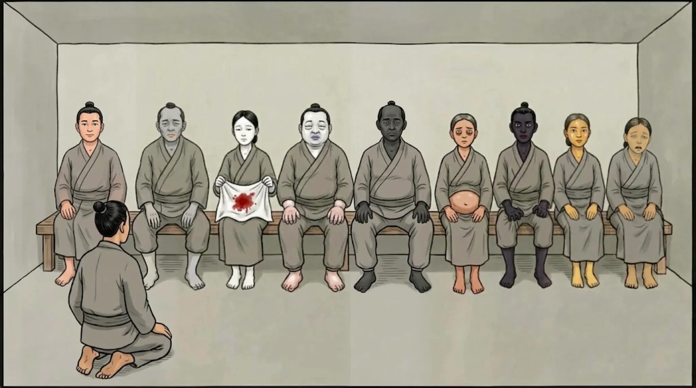
| 소품 | 잠그는 사실 (테스트 모드: 탭하여 확인) |
|---|---|
| s12u01과 같은 긴 회색 진료소 — 긴 평상에 같은 회색 두루마기·맨발의 아홉이 한 줄로 앉고(맨 왼쪽은 혈색 좋은 보통 사람, 이어서 白 셋 · 黑 셋 · 같은 얼굴·같은 노랑의 쌍둥이 둘), 앞 왼쪽 구석에 등 돌린 의사. 옷·무대는 같고 얼굴·살갗의 색과 그 질(광택·부기·자리)만 다르다 왜? | 望色 五色主病 ② — 常色(紅黃隱隱·明潤含蓄)이 자 · 白(氣虛 淡白無華 · 失血 蒼白 · 陽虛 㿠白) · 黑(腎虛 面黑 · 水飮 眼眶周圍黑 · 瘀血 黑而紫暗) · 善色 ↔ 惡色(같은 색, 光澤과 神이 가른다) |
| 다리 — s12u01(靑·赤·黃)과 한 쌍 — 같은 진료소·평상·의사에 사람만 바꿔 앉혔다(참조 그림 = s12u01 완성본). 맨 왼쪽 보통 사람이 판 전체의 「보통」 자(낱장 s12p04[3]의 자를 사람으로 세운 것)이고, 善惡은 쌍둥이 둘의 광택·자세·눈·입으로만 갈린다(규칙 67-b — 색이 아니라 광택과 神이 가른다). ◆ 개념 — 白主虛·寒·失血(淡白無華 · 㿠白虛浮 = 陽虛水泛 · 蒼白), 黑主腎虛·水飮·瘀血(面黑無華 · 眼眶周圍發黑 · 黑而紫暗), 善色 = 光明潤澤(有神·氣至) ↔ 惡色 = 晦暗枯槁(無神·氣不至·死色). 得神者昌 失神者亡. ▸ 단원 통합(2026-10-17) — s12p04·05·06을 한 장으로(望色 두 장 중 둘째). 4 Argon 바탕(참조 = s12u01 완성본, 사람만 새로) + 구역 편집 3 + 같은 채팅 손질 3(氣虛 누런 기 빼기 · 瘀血 자흑으로 어둡게 · 水飮 얼굴 보통 살색 · 善惡 쌍둥이) + 惡色 살갗을 PIL로 善色과 같은 밝기로 맞추고 잿빛 막. 구역 판독 blind29z에서 氣虛→萎黃 · 瘀血→靑紫 · 善惡→陽黃/陰黃 오독 → 손질. 1차 최종 blind30(R2 90%·S2 92%)에서 善惡이 黃 하위형으로 읽혀 사전 善惡(쌍둥이) 신설 + 색 맞춤 → **blind31 최종: 望色 五色·常色·善惡 85% · 80%, 쌍둥이를 善色·惡色으로 둘 다 읽음, 白·黑 여섯 중 다섯 제자리**(氣虛 淡白만 蒼白·灰白으로). 사전 회귀(s12u01 黃 셋) 이상 없음. | |
| [白] 白 셋 중 왼쪽 남자 — 윤기 없는 밋밋한 회백(누런 기 없음) + 입술에만 흐린 살구빛 + 빛 없는 눈·처진 어깨 왜? | 淡白無華 = 氣虛 |
| 다리 — 같은 흰색의 광택·부종 차이를 세 인물로 대비시킨 다리. ◆ 개념 — 기가 부족해 혈을 못 밀어 올리니 색이 옅고 광택이 없다. 앞 패널의 萎黃(누런빛)과 색조로 구분. ▸ 3차 재판독(2026-08-29, 규칙 150·153, blind3) — △ 失血(피 밴 천+蒼白) 한 축만 확실 ⚠ 氣虛(淡白)·陽虛(번들+부종) 축 미회수 — 왼쪽이 「야윔」으로 읽힘 ▸ 단원 통합(2026-10-17) — s12p04[0]에서 옮김. | |
| [白] 白 셋 중 오른쪽 남자 — 밀랍빛 번들거림 + 부어 둥근 얼굴·부은 눈꺼풀·소맷부리를 파고든 손목 + 푸른 자줏빛 입술 왜? | 㿠白 = 陽虛(수기 범람) |
| 다리 — 같은 흰색의 광택·부종 차이를 세 인물로 대비시킨 다리. ◆ 개념 — 양이 부족해 수액이 정체되면 부으면서 번들거린다. 부종+한기가 氣虛와의 갈림목. ▸ 단원 통합(2026-10-17) — s12p04[1]에서 옮김. | |
| [白] 白 셋 중 가운데 여자 — 핏기 없는 종잇빛(셋 중 가장 흼) + 입술까지 흼 + 손바닥만 한 핏자국이 번진 흰 무명천을 펼쳐 듦(살갗에 붉은 곳 없음) 왜? | 蒼白 = 失血 · 血虛 |
| 다리 — 같은 흰색의 광택·부종 차이를 세 인물로 대비시킨 다리. ◆ 개념 — 혈 자체가 빠져나간 색. 입술과 아래 눈꺼풀 안쪽(하안검)이 색을 잃는 것이 실혈의 확인점. ▸ 단원 통합(2026-10-17) — s12p04[2]에서 옮김. | |
| [白] 평상 맨 왼쪽에 앉은 혈색 좋은 보통 사람 — 은은히 붉은 기 도는 윤기 있는 살색. 여덟 사람의 얼굴빛이 저마다 이 사람과 다르게 어긋난다 왜? | 白도 광택·부종으로 갈린다 — **성한 낯빛이 「보통」의 자다** |
| 다리 — 규칙 92-c — 색으로 짓는 사실은 **「그 색이 아닌 것」이 같은 그림 안에** 있어야 성립한다. 그 자를 **사물이 아니라 사람**으로 세운다. ▸ 반납(2026-09-04, 규칙 173) — 재작도 6차에서 넣었던 「셋이 얼굴 옆에 들어 보인 **같은 흰 사기대접**」은 §5의 **【惠】= 여러 손이 받아 드는 빈 사발** 그 자체였다. blind8에서 이 판이 통째로 **「혜민서(惠民署)」 55%**로 읽혔다 — **내가 심은 전담 기호 침범**이다. ▸ 자는 이미 화면에 있었다 — blind8 판독자가 「앞바닥에 등 돌리고 앉은 1인, 피부색만 정상」이라고 짚었다. **등을 돌리고 있어서 낯빛이 안 보였을 뿐**이다. 이쪽을 보게 돌려세우면 사발 없이 자가 선다. ⚠ 역검색(규칙 173) — 「성한 낯빛의 사람 하나」는 §5 미등재다. 그릇·천·자루 계열은 全部 등재돼 있어 못 쓴다. ▸ 단원 통합(2026-10-17) — s12p04[3]에서 옮김. | |
| [黑] 黑 셋 중 왼쪽 남자 — 얼굴·목·손발 전체가 그을음빛 무채 흑 왜? | 面黑無華 = 腎虛 |
| 다리 — 같은 검은색의 범위·색조 차이를 세 인물로 대비시킨 다리. ◆ 개념 — 黑=水=腎의 색. 신정이 마르면 얼굴 전체가 그을린 듯 검고 윤기를 잃는다. 허리·무릎은 腎府·腎主骨의 증거. ▸ 3차 재판독(2026-08-29, 규칙 150·153, blind3) — ✓ 黑色主病 — 전신흑(腎虛)·눈둘레흑+腹大(水飮)·청자+굳은 손(瘀血) 표제어 명중 ⚠ 배가 임신인지 창만인지 ▸ 단원 통합(2026-10-17) — s12p05[0]에서 옮김. | |
| [黑] 黑 셋 중 가운데 여자 — 얼굴은 보통 살색인데 두 눈 밑에만 넓은 반달 그림자 + 배꼽 아래로 처져 팽팽한 맨배(물그릇 없음) 왜? | 眼眶周圍發黑 = 水飮 |
| 다리 — 같은 검은색의 범위·색조 차이를 세 인물로 대비시킨 다리. ◆ 개념 — 범위가 판별 기준: 전체가 아니라 눈 두덩 주위에만 국한된 검은 그림자는 수음(체액 정체). 복수는 동반 증. ▸ 단원 통합(2026-10-17) — s12p05[1]에서 옮김. | |
| [黑] 黑 셋 중 오른쪽 남자 — 자흑색 얼굴·손발 + 검붉은 입술 + 허벅지 앞을 갈고리처럼 움켜쥔 손가락 왜? | 黑而紫暗 = 瘀血 |
| 다리 — 같은 검은색의 범위·색조 차이를 세 인물로 대비시킨 다리. ◆ 개념 — 어혈은 자줏빛이 도는 검정. 통증이 한 자리에 고정(刺痛·痛處不移)되는 것이 어혈통의 특징 — 靑色의 통증(옮겨다니는 냉통)과 구분. ▸ 단원 통합(2026-10-17) — s12p05[2]에서 옮김. | |
| [善惡] 맨 오른쪽 쌍둥이 두 여자 — 같은 얼굴·같은 황토빛 노랑·같은 밝기인데, 왼쪽은 이마·광대·콧대에 속에서 배어 나는 광택, 오른쪽은 잿가루를 덮은 듯 뿌옇고 반사가 없다 왜? | 善惡을 가르는 것은 五色의 종류가 아니라 光澤이다 — 光明潤澤 ↔ 晦暗枯槁 |
| 다리 — 색을 통일하고 윤기·눈빛만 갈라 놓아 축이 다름을 보이는 다리. ◆ 개념 — 五色(무슨 병인가)과 善惡(얼마나 위중한가)은 별개 축. 같은 색을 나란히 놓아 축이 다름을 시각화. ▸ 재작도 7차(2026-09-03, 규칙 49·169) — 종전 이 행은 「두 얼굴이 정확히 같은 황토색」으로 **부정(색은 축이 아니다)을 그리려** 했다. 그런데 부정은 그릴 수 없어(규칙 49) 그 균일한 황토색이 되레 표제어가 됐고, blind6 판독자가 **陽黃/陰黃 판**으로 읽었다(45%). 고전이 실제로 쓰는 갈림축은 **光明潤澤 ↔ 晦暗枯槁**(『素問·五藏生成論』의 「靑如翠羽者生 靑如草茲者死」 계열 — 같은 색이 潤이면 生, 枯면 死)인데 이 판은 그 축을 그리지 않고 神(목·눈·입)만으로 버티고 있었다. 光澤을 넣어 **없던 축을 세운다.** §5 「華 = 빛나는 것·광택」과 뜻이 같으므로 충돌이 아니라 딥링크다(규칙 73). ▸ 단원 통합(2026-10-17) — s12p06[0]에서 옮김. | |
| [善惡] 쌍둥이 중 왼쪽 — 곧은 목·높이 든 머리 + 맑게 뜬 눈 + 다문 입 왜? | 善色 = 有神(氣至) — 병이 가볍고 예후 양호 |
| 다리 — 색을 통일하고 윤기·눈빛만 갈라 놓아 축이 다름을 보이는 다리. ◆ 개념 — 含蓄(속에서 배어나오는 은은함)이 있으면 위기가 아직 살아 있다는 뜻. 五色의 어느 색이든 윤기가 있으면 善色. ▸ 단원 통합(2026-10-17) — s12p06[1]에서 옮김. | |
| [善惡] 쌍둥이 중 오른쪽 — 꺾여 어깨에 파묻힌 목 + 검은자 절반을 덮은 윗눈꺼풀 + 반쯤 벌어진 입(해골 아님) 왜? | 惡色 = 無神(氣不至) = 死色 — 예후 불량 |
| 다리 — 색을 통일하고 윤기·눈빛만 갈라 놓아 축이 다름을 보이는 다리. ◆ 개념 — 暴露(겉으로 들떠 마름)되면 위기가 다했다는 뜻. 眞臟色이 드러난 상태. ▸ 단원 통합(2026-10-17) — s12p06[2]에서 옮김. | |
| [善惡] ※라벨 전용 — 그림 소품 없음 왜? | 得神 vs 失神 — 望色과 望神의 교차점. 光澤은 色의 神이다 |
| 다리 — 색을 통일하고 윤기·눈빛만 갈라 놓아 축이 다름을 보이는 다리. ◆ 개념 — 色보다 神이 예후를 결정한다: 得神者昌 失神者亡. ▸ 단원 통합(2026-10-17) — s12p06[3]에서 옮김. | |
🔗 問診·切診 — 한 진료소 평상의 여섯 환자 (一問寒熱·七問聾 + 浮沈·遲數·虛實·滑澁) 진단·切診 #s12u03
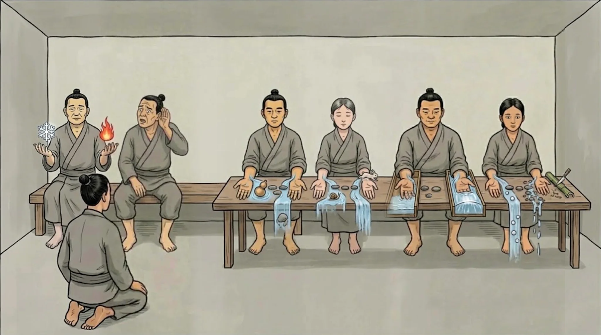
| 소품 | 잠그는 사실 (테스트 모드: 탭하여 확인) |
|---|---|
| 望色 두 판과 같은 회색 진료소 — 같은 긴 평상에 같은 회색 두루마기·맨발의 환자 여섯이 한 줄, 앞 왼쪽에 등을 완전히 돌리고 무릎 꿇은 의사(정상 살색 기준선). 왼쪽 둘(問診)은 손이 하는 일이 사실이고, 오른쪽 넷(切診)은 평상 앞 낮은 탁자에 두 손목을 올려 손목마다 작은 냇물이 탁자 위로 흘러 끝에서 떨어진다 — 사람 하나 = 맥의 축 하나, 왼 손목 = 앞 글자, 오른 손목 = 뒷 글자. 두 손목 사이 탁자 위에 납작한 징검돌 셋(寸關尺). 얼굴·살갗은 모두 보통 살색 왜? | 問診(十問歌 중 그림이 지는 둘: 一問 寒熱 · 七問 聾) + 切診 綱領 8脈 네 쌍 — 浮沈(깊이: 表裏) · 遲數(속도: 寒熱) · 虛實(힘: 虛實) · 滑澁(질감) — 寸關尺 三部 |
| 다리 — 望色(s12u01·02)과 같은 진료소에 問·切을 이어 네 진단법의 무대를 한 곳으로 모았다 — 의사는 무대(정상 살색 기준선, CANON), 환자는 개념. 2026-08-24 이름 회수 처방을 여기서 실행: 세 손가락(손)이 지던 寸關尺을 냇물 곁 징검돌 「셋」(셀 소품)으로 옮겨 맥상 여덟 칸에서 손이 사라졌다(규칙 106). 虛·實은 사전 虛(⅓로 줄어든 것)·實(팽팽하게 찬 것)의 딥링크 — 같은 모양의 홈통 둘에 ⅓ / 가장자리까지 볼록하게 찬 물. 寒·熱도 사전 딥링크(눈송이·불꽃, 같은 크기). ◆ 개념 — 十問歌(張景岳 景岳全書): 一問寒熱二問汗 三問頭身四問便 五問飮食六問胸 七聾八渴俱當辨 九因脈色察陰陽 十從氣味章神見(통용 「九問舊病十問因」은 陳修園 醫學實在易). 脈診 綱領脈: 浮(輕取卽得·表) 沈(重按始得·裏) 遲(一息三至 이하·寒) 數(一息六至 이상·熱) 虛(三部無力·虛證) 實(三部有力·實證) 滑(如珠走盤·痰飮食滯妊娠) 澁(如輕刀刮竹·精傷血少氣滯血瘀). 寸關尺 = 三部. ▸ 단원 통합(2026-10-18) — s12p07(問診 2 + 라벨 2) · s12p09(切診 ① 틀 1 + 4) · s12p10(切診 ② 4) = 14행을 한 장에. 도해 s12p08(十問歌 차례)은 그대로 둔다. 결과: 구역 판독 blind32z(z27·z51·z89 → 虛實 洪·細 오독 → 홈통 재편집 z90 ✓) · 최종 blind33 Y3·Z3 四診 55/75%, 8脈 8/8, 寸關尺 ✓✓, 聾 → 聞診 ✗✗ → 되묻는 표정 재편집 → X3 問耳(耳聾) ✓ · 四診 75%. 라벨 2행을 뺀 12행이 모두 읽힘. 잔결은 blind33_report.md(聾↔聞診 30% · 냇물 낙차의 盛·下 잡음 · 징검돌 자리). | |
| [問] 평상 왼쪽 끝 남자 — 가슴 앞에 세운 두 손바닥 위에 눈송이 하나(왼) · 불꽃 하나(오), 크기가 같고 녹지 않고 밀려나지 않음(s16p03/04 偏盛·s16p05 格拒·s14p08 方劑와 갈림) 왜? | 一問 寒熱 |
| 다리 — 十問歌의 첫 물음. 寒과 熱을 한 손씩 나란히 들어 「둘 중 어느 쪽인가를 묻는다」가 자세로 읽힌다. 불꽃↔눈송이는 RULES §5 등재 기호(熱↔寒)의 딥링크다. 왼쪽이 寒인 것은 노랫말 순서(寒熱)와 같다. ▸ 단원 통합(2026-10-18) — s12p07[0]에서 옮김. | |
| [問] 그 옆 남자 — 귀 뒤에 오목하게 모아 댄 손 + 앞으로 기울인 상체 + 못 알아들어 되묻는 얼굴(귀는 정상 크기 — s10p03(→s10u01) 「두 배 큰 귀」와 가름) 왜? | 七問 聾 |
| 다리 — 열 물음 중 일곱째. 七聾八渴이 한 구에 둘 들어가 「일곱째가 聾」이 특히 새기 때문에 이 둘만 그림으로 남겼다. ▸ 단원 통합(2026-10-18) — s12p07[1]에서 옮김. | |
| [問] 問診 두 사람의 살색이 둘 다 보통 — 색이 아무것도 안 나른다(의사·切診 넷과 같은 살색) 왜? | 問診은 望色이 아니다 — 여기서 뜻을 지는 것은 손이 하는 일뿐이다 |
| 다리 — 같은 방·같은 옷·같은 평상인데 望色 칸과 갈리는 유일한 표지가 「얼굴색이 전부 정상」이다. 색을 통제 변인으로 돌려야 자세가 변별력을 갖는다(규칙 67). ▸ 단원 통합(2026-10-18) — s12p07[2]에서 옮김. | |
| [問] ※도해가 진다 — 그림 소품 없음 왜? | 十問歌 열 항목의 차례 — 二問 汗 · 三問 頭身 · 四問 便 · 五問 飮食 · 六問 胸 · 八問 渴 · 九問 舊病 · 十問 因 |
| 다리 — 「몇째로 묻는가」가 사실인데 그것은 그림이 못 나른다. 순서는 도해 s12p08이 진다(CANON 74·§5-2). 이 칸이 그 도해의 무대 자리다 — 도해에만 있으면 시험이 안 된다(CANON 74-③). ▸ 단원 통합(2026-10-18) — s12p07[3]에서 옮김. | |
| [問] ※라벨 전용 — 그림 소품 없음 (張景岳은 s01p02 「경악! 산더미 책 두 짐」 전담) 왜? | 出典 — ⚠ 두 판을 갈라야 한다. **張景岳 『景岳全書』 十問篇 원문**은 「一問寒熱二問汗，三問頭身四問便，五問飲食六問胸，七聾八渴俱當辨。**九因脈色察陰陽，十從氣味章神見**」이다. 지금 통용되는 「九問舊病十問因 / 再兼服藥參機變 / 婦人尤必問經期…」 판은 **陳修園 『醫學實在易』 問證詩**의 고침이다 |
| 다리 — 인명 소리 다리는 의학사 세트가 전담한다. 이 칸에 겹쳐 놓으면 규칙 51 위반이다. ▸ 2026-08-22 원문 대조 — 醫砭 景岳全書 十問篇(sid=67717) 실측. 張景岳은 s01p02 「경악! 산더미 책 두 짐」 전담이다 ▸ 단원 통합(2026-10-18) — s12p07[4]에서 옮김. | |
| [切①] 切診 넷 — 평상 앞 낮은 탁자에 올린 두 손목마다 손목에서 시작해 탁자 위로 흐르다 끝에서 떨어지는 작은 냇물 + 두 손목 사이 탁자 위 납작한 징검돌 셋(寸關尺 — 세 손가락 대신) 왜? | 脈診 은유 — 물의 깊이·속도·힘·매끄러움이 곧 맥상 |
| 다리 — 손목 위 냇물 은유로 맥의 네 축을 격자에 정렬한 다리. ◆ 개념 — 맥은 손끝 감각이라 그림화가 어렵다 → 손목 위 냇물 하나로 통일해 네 축(깊이·속도·힘·질감)을 같은 무대에서 비교. 세 손가락=寸關尺. ▸ 이름 회수 2차(2026-08-24, 규칙 126~131) — 脈診 — 「세 손가락」은 규칙 106. 처방 — **냇물을 가로지르는 징검돌 셋(寸關尺).** 자리 다리가 되고 **맥상 여덟 칸 전부에서 손이 사라진다** — 이 구역 최대의 일괄 시정. ▸ 단원 통합(2026-10-18) — s12p09[0]에서 옮김. | |
| [切①] 浮沈 남자(切診 첫째)의 왼 손목 — 고인 물 위에 뜬 빈 조롱박 왜? | 浮脈 — 輕取卽得 / 主 表證 |
| 다리 — 손목 위 냇물이라는 하나의 은유로 맥의 네 축을 격자에 정렬한 다리. ◆ 개념 — 사기가 겉에 있어 정기가 밖으로 맞서면 맥이 떠오른다. ▸ 이름 회수 2차(2026-08-24, 규칙 126~131) — 浮脈 — 「살짝만 대도 잡힘」은 **손의 동작**이고 소품이 0개다(규칙 106). 처방 — **수면에 뜬 빈 조롱박 하나.** 浮(뜨다)가 훈독으로 선다. ▸ 단원 통합(2026-10-18) — s12p09[1]에서 옮김. | |
| [切①] 浮沈 남자의 오른 손목 — 떨어지는 물줄기 바닥에 가라앉은 돌 왜? | 沈脈 — 重按始得 / 主 裏證 |
| 다리 — 손목 위 냇물이라는 하나의 은유로 맥의 네 축을 격자에 정렬한 다리. ◆ 개념 — 병이 속에 있으면 맥도 가라앉는다. 浮沈=表裏의 깊이축. ▸ 이름 회수 2차(2026-08-24, 규칙 126~131) — 沈脈 — 「깊이 눌러야 잡힘」은 **손의 동작**이고 소품이 0개다(규칙 106). 처방 — **바닥에 가라앉은 돌 하나.** 浮과 위아래로 대칭. ▸ 단원 통합(2026-10-18) — s12p09[2]에서 옮김. | |
| [切①] 遲數 여자(切診 둘째)의 왼 손목 — 잔물결 위 달팽이 왜? | 遲脈 — 一息三至 이하 / 主 寒證 |
| 다리 — 손목 위 냇물이라는 하나의 은유로 맥의 네 축을 격자에 정렬한 다리. ◆ 개념 — 한이 기혈을 응체시켜 흐름이 느려짐. ▸ 숨은 자산 회수(2026-08-29, 규칙 120·150) — **달팽이 = 遲 훈독 직역**(느림). 판독자가 사전 없이 집어냈다. ▸ 단원 통합(2026-10-18) — s12p09[3]에서 옮김. | |
| [切①] 遲數 여자의 오른 손목 — 급류 위를 뛰는 토끼 한 마리 왜? | 數脈 — 一息六至 이상 / 主 熱證 |
| 다리 — 손목 위 냇물 은유로 맥의 네 축을 격자에 정렬한 다리. ◆ 개념 — 열이 혈행을 재촉해 빨라짐. 遲數=寒熱의 속도축 — 浮沈(깊이)과 교차하면 表寒·表熱·裏寒·裏熱 4분면이 나온다. ▸ 숨은 자산 회수(2026-08-29, 규칙 120·150) — **토끼 = 數 직역**(빠름). [1] 「수면 위로 떠서」=浮 · [2] 「깊이 눌러야」=沈까지 합쳐 **네 글자가 전부 동작 직역이다** — 이 칸은 이름 회수가 이미 온전한데 장부에 없었다. ▸ 단원 통합(2026-10-18) — s12p09[4]에서 옮김. | |
| [切②] 虛實 남자(切診 셋째)의 왼 손목 — 같은 모양 홈통 둘 중 왼쪽: 가는 실개천이 흘러들어 바닥에 ⅓만 고인 물(사전 虛) 왜? | 虛脈 — 三部無力 / 主 虛證 |
| 다리 — 같은 냇물 은유의 힘·질감 축. 원문 비유를 소품으로 직역한 다리. ◆ 개념 — 정기가 부족하면 맥에 힘이 없다. 눌러도 저항이 없는 것이 핵심. ▸ 단원 통합(2026-10-18) — s12p10[0]에서 옮김. | |
| [切②] 虛實 남자의 오른 손목 — 오른쪽 홈통: 굵은 물줄기가 흘러들어 가장자리까지 볼록하게 팽팽히 찬 물, 넘치지 않음(사전 實) 왜? | 實脈 — 三部有力 / 主 實證 |
| 다리 — 같은 냇물 은유의 힘·질감 축. 원문 비유를 소품으로 직역한 다리. ◆ 개념 — 사기와 정기가 맞서 싸우면 맥이 힘차다. 虛實=힘축. ▸ 단원 통합(2026-10-18) — s12p10[1]에서 옮김. | |
| [切②] 滑澁 여자(切診 넷째)의 왼 손목 — 물줄기를 따라 또르르 구르는 진주알 왜? | 滑脈 — 如珠走盤 / 主 痰飮·食滯·妊娠 |
| 다리 — 같은 냇물 은유의 힘·질감 축. 원문 비유를 소품으로 직역한 다리. ◆ 개념 — 원문 비유 그대로: 구슬이 쟁반 위를 구르듯 매끄럽다. 임신 맥이기도 해서 병맥으로만 답하면 틀리는 함정. ▸ 단원 통합(2026-10-18) — s12p10[2]에서 옮김. | |
| [切②] 滑澁 여자의 오른 손목 — 자갈에 걸려 토막토막 끊기는 물 + 곁의 대나무 토막을 긁는 작은 칼 왜? | 澁脈 — 如輕刀刮竹 / 主 精傷·血少·氣滯血瘀 |
| 다리 — 같은 냇물 은유의 힘·질감 축. 원문 비유를 소품으로 직역한 다리. ◆ 개념 — 원문 비유 그대로: 가벼운 칼로 대나무를 긁듯 껄끄럽다. 滑↔澁=질감축의 양극. ▸ 단원 통합(2026-10-18) — s12p10[3]에서 옮김. | |
🔗 十問歌 — 묻는 차례(도해) 진단·問診·도해 도해 · 문항 14 #s12p08
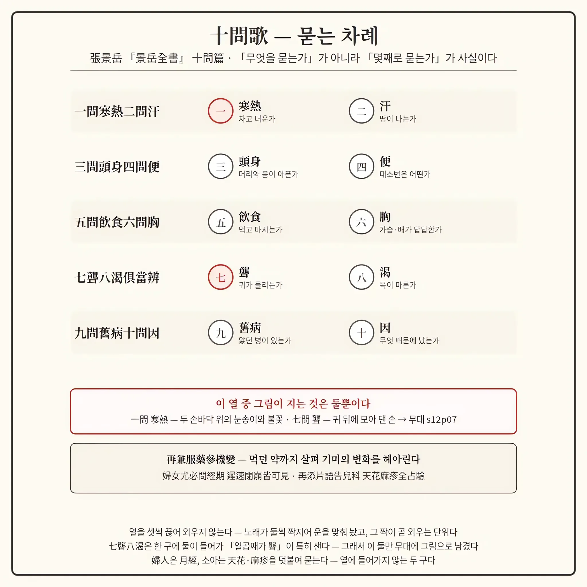
| 소품 | 잠그는 사실 (테스트 모드: 탭하여 확인) |
|---|---|
| 다섯 줄이 곧 노랫말 다섯 구 — 둘씩 짝지어 운을 맞춘다 왜? | 一問寒熱二問汗 · 三問頭身四問便 · 五問飮食六問胸 · 七聾八渴俱當辨 · 九問舊病十問因 |
| 다리 — 도해는 자가테스트·역방향 판독의 대상이 아니다(CANON 74). 범례를 그림 안에 갖고 있다. ▸ 정산(2026-08-22, 규칙 111) — 무대 자리: 一問 寒熱·七問 聾 → s12p07(→s12u03). 나머지 여덟은 도해 전담 — 규칙 110의 원형이다(순서는 도해, 새는 항목만 무대로) | |
| 붉게 표시된 두 항목 왜? | 一問 寒熱 · 七問 聾 — 이 둘만 그림이 진다(무대 s12p07(→s12u03)) |
| 다리 — 도해는 자가테스트·역방향 판독의 대상이 아니다(CANON 74). 범례를 그림 안에 갖고 있다. ▸ 정산(2026-08-22, 규칙 111) — 무대 자리: 一問 寒熱·七問 聾 → s12p07(→s12u03). 나머지 여덟은 도해 전담 — 규칙 110의 원형이다(순서는 도해, 새는 항목만 무대로) | |
| 七聾八渴이 한 구에 둘 들어간 자리 왜? | 「일곱째가 聾」이 특히 샌다 — 그래서 이 둘을 무대로 뺐다 |
| 다리 — 도해는 자가테스트·역방향 판독의 대상이 아니다(CANON 74). 범례를 그림 안에 갖고 있다. ▸ 정산(2026-08-22, 규칙 111) — 무대 자리: 一問 寒熱·七問 聾 → s12p07(→s12u03). 나머지 여덟은 도해 전담 — 규칙 110의 원형이다(순서는 도해, 새는 항목만 무대로) | |
| 맨 아래 두 구 왜? | 再兼服藥參機變 — 먹던 약까지 살펴 기미의 변화를 헤아린다 |
| 다리 — 도해는 자가테스트·역방향 판독의 대상이 아니다(CANON 74). 범례를 그림 안에 갖고 있다. ▸ 정산(2026-08-22, 규칙 111) — 무대 자리: 一問 寒熱·七問 聾 → s12p07(→s12u03). 나머지 여덟은 도해 전담 — 규칙 110의 원형이다(순서는 도해, 새는 항목만 무대로) | |
| 열에 들어가지 않는 두 구 왜? | 婦女尤必問經期 遲速閉崩皆可見 / 再添片語告兒科 天花麻疹全占驗 |
| 다리 — 도해는 자가테스트·역방향 판독의 대상이 아니다(CANON 74). 범례를 그림 안에 갖고 있다. ▸ 정산(2026-08-22, 규칙 111) — 무대 자리: 一問 寒熱·七問 聾 → s12p07(→s12u03). 나머지 여덟은 도해 전담 — 규칙 110의 원형이다(순서는 도해, 새는 항목만 무대로) | |
| 출전 왜? | 出典 — ⚠ 두 판을 갈라야 한다. **張景岳 『景岳全書』 十問篇 원문**은 「一問寒熱二問汗，三問頭身四問便，五問飲食六問胸，七聾八渴俱當辨。**九因脈色察陰陽，十從氣味章神見**」이다. 지금 통용되는 「九問舊病十問因 / 再兼服藥參機變 / 婦人尤必問經期…」 판은 **陳修園 『醫學實在易』 問證詩**의 고침이다 |
| 다리 — 도해는 자가테스트·역방향 판독의 대상이 아니다(CANON 74). 범례를 그림 안에 갖고 있다. ▸ 정산(2026-08-22, 규칙 111) — 무대 자리: 一問 寒熱·七問 聾 → s12p07(→s12u03). 나머지 여덟은 도해 전담 — 규칙 110의 원형이다(순서는 도해, 새는 항목만 무대로) ▸ 2026-08-22 원문 대조 — 醫砭 景岳全書 十問篇(sid=67717) 실측. 張景岳은 s01p02 「경악! 산더미 책 두 짐」 전담이다 | |
도해 문항 14 펼치기
| 1. 十問歌 열 구절을 차례로? | 一問寒熱 · 二問汗 · 三問頭身 · 四問便 · 五問飮食 · 六問胸 · 七問聾 · 八問渴 · 九問舊病 · 十問因 (노랫말은 「一問寒熱二問汗 / 三問頭身四問便 / 五問飮食六問胸 / 七聾八渴俱當辨 / 九問舊病十問因」)陳修園 『醫學實在易』 問證詩 — ⚠ **「九問舊病十問因」 이하는 景岳의 글이 아니다.** 『景岳全書』十問篇 원문은 「一問寒熱二問汗，三問頭身四問便，五問飲食六問胸，七聾八渴俱當辨。**九因脈色察陰陽，十從氣味章神見**」이다(醫砭 sid=67717 확인). 지금 통용되는 十問歌는 陳修園이 뒤 두 구를 고쳐 놓은 판이다 |
| 2. 十問歌의 1번째는 무엇을 묻는가? | 一問寒熱陳修園 『醫學實在易』 問證詩 — ⚠ **「九問舊病十問因」 이하는 景岳의 글이 아니다.** 『景岳全書』十問篇 원문은 「一問寒熱二問汗，三問頭身四問便，五問飲食六問胸，七聾八渴俱當辨。**九因脈色察陰陽，十從氣味章神見**」이다(醫砭 sid=67717 확인). 지금 통용되는 十問歌는 陳修園이 뒤 두 구를 고쳐 놓은 판이다 |
| 3. 十問歌의 2번째는 무엇을 묻는가? | 二問汗陳修園 『醫學實在易』 問證詩 — ⚠ **「九問舊病十問因」 이하는 景岳의 글이 아니다.** 『景岳全書』十問篇 원문은 「一問寒熱二問汗，三問頭身四問便，五問飲食六問胸，七聾八渴俱當辨。**九因脈色察陰陽，十從氣味章神見**」이다(醫砭 sid=67717 확인). 지금 통용되는 十問歌는 陳修園이 뒤 두 구를 고쳐 놓은 판이다 |
| 4. 十問歌의 3번째는 무엇을 묻는가? | 三問頭身陳修園 『醫學實在易』 問證詩 — ⚠ **「九問舊病十問因」 이하는 景岳의 글이 아니다.** 『景岳全書』十問篇 원문은 「一問寒熱二問汗，三問頭身四問便，五問飲食六問胸，七聾八渴俱當辨。**九因脈色察陰陽，十從氣味章神見**」이다(醫砭 sid=67717 확인). 지금 통용되는 十問歌는 陳修園이 뒤 두 구를 고쳐 놓은 판이다 |
| 5. 十問歌의 4번째는 무엇을 묻는가? | 四問便陳修園 『醫學實在易』 問證詩 — ⚠ **「九問舊病十問因」 이하는 景岳의 글이 아니다.** 『景岳全書』十問篇 원문은 「一問寒熱二問汗，三問頭身四問便，五問飲食六問胸，七聾八渴俱當辨。**九因脈色察陰陽，十從氣味章神見**」이다(醫砭 sid=67717 확인). 지금 통용되는 十問歌는 陳修園이 뒤 두 구를 고쳐 놓은 판이다 |
| 6. 十問歌의 5번째는 무엇을 묻는가? | 五問飮食陳修園 『醫學實在易』 問證詩 — ⚠ **「九問舊病十問因」 이하는 景岳의 글이 아니다.** 『景岳全書』十問篇 원문은 「一問寒熱二問汗，三問頭身四問便，五問飲食六問胸，七聾八渴俱當辨。**九因脈色察陰陽，十從氣味章神見**」이다(醫砭 sid=67717 확인). 지금 통용되는 十問歌는 陳修園이 뒤 두 구를 고쳐 놓은 판이다 |
| 7. 十問歌의 6번째는 무엇을 묻는가? | 六問胸陳修園 『醫學實在易』 問證詩 — ⚠ **「九問舊病十問因」 이하는 景岳의 글이 아니다.** 『景岳全書』十問篇 원문은 「一問寒熱二問汗，三問頭身四問便，五問飲食六問胸，七聾八渴俱當辨。**九因脈色察陰陽，十從氣味章神見**」이다(醫砭 sid=67717 확인). 지금 통용되는 十問歌는 陳修園이 뒤 두 구를 고쳐 놓은 판이다 |
| 8. 十問歌의 7번째는 무엇을 묻는가? | 七問聾陳修園 『醫學實在易』 問證詩 — ⚠ **「九問舊病十問因」 이하는 景岳의 글이 아니다.** 『景岳全書』十問篇 원문은 「一問寒熱二問汗，三問頭身四問便，五問飲食六問胸，七聾八渴俱當辨。**九因脈色察陰陽，十從氣味章神見**」이다(醫砭 sid=67717 확인). 지금 통용되는 十問歌는 陳修園이 뒤 두 구를 고쳐 놓은 판이다 |
| 9. 十問歌의 8번째는 무엇을 묻는가? | 八問渴陳修園 『醫學實在易』 問證詩 — ⚠ **「九問舊病十問因」 이하는 景岳의 글이 아니다.** 『景岳全書』十問篇 원문은 「一問寒熱二問汗，三問頭身四問便，五問飲食六問胸，七聾八渴俱當辨。**九因脈色察陰陽，十從氣味章神見**」이다(醫砭 sid=67717 확인). 지금 통용되는 十問歌는 陳修園이 뒤 두 구를 고쳐 놓은 판이다 |
| 10. 十問歌의 9번째는 무엇을 묻는가? | 九問舊病陳修園 『醫學實在易』 問證詩 — ⚠ **「九問舊病十問因」 이하는 景岳의 글이 아니다.** 『景岳全書』十問篇 원문은 「一問寒熱二問汗，三問頭身四問便，五問飲食六問胸，七聾八渴俱當辨。**九因脈色察陰陽，十從氣味章神見**」이다(醫砭 sid=67717 확인). 지금 통용되는 十問歌는 陳修園이 뒤 두 구를 고쳐 놓은 판이다 |
| 11. 十問歌의 10번째는 무엇을 묻는가? | 十問因陳修園 『醫學實在易』 問證詩 — ⚠ **「九問舊病十問因」 이하는 景岳의 글이 아니다.** 『景岳全書』十問篇 원문은 「一問寒熱二問汗，三問頭身四問便，五問飲食六問胸，七聾八渴俱當辨。**九因脈色察陰陽，十從氣味章神見**」이다(醫砭 sid=67717 확인). 지금 통용되는 十問歌는 陳修園이 뒤 두 구를 고쳐 놓은 판이다 |
| 12. 十問歌에서 「七聾八渴俱當辨」이 왜 특히 새는가? | 한 구에 두 항목이 들어가 차례가 흐려진다 — 그래서 一問 寒熱과 七問 聾 둘만 무대 s12p07로 뺐다(규칙 110)陳修園 『醫學實在易』 問證詩 — ⚠ **「九問舊病十問因」 이하는 景岳의 글이 아니다.** 『景岳全書』十問篇 원문은 「一問寒熱二問汗，三問頭身四問便，五問飲食六問胸，七聾八渴俱當辨。**九因脈色察陰陽，十從氣味章神見**」이다(醫砭 sid=67717 확인). 지금 통용되는 十問歌는 陳修園이 뒤 두 구를 고쳐 놓은 판이다 |
| 13. 十問歌 열 구 뒤에 이어지는 구절들은? | ① 「再兼服藥參機變」 — 「九問舊病十問因」과 한 聯을 이룬다. 먹던 약까지 살펴 기미의 변화를 헤아린다 / ② 婦人 「**婦人**尤必問經期 遲速閉崩皆可見」(원문은 婦女가 아니라 婦人) / ③ 兒科 「再添片語告兒科 天花麻疹全占驗」. 열 구 + 1 + 2 + 2 = 모두 다섯 구가 더 붙는다陳修園 『醫學實在易』 問證詩 — ⚠ **「九問舊病十問因」 이하는 景岳의 글이 아니다.** 『景岳全書』十問篇 원문은 「一問寒熱二問汗，三問頭身四問便，五問飲食六問胸，七聾八渴俱當辨。**九因脈色察陰陽，十從氣味章神見**」이다(醫砭 sid=67717 확인). 지금 통용되는 十問歌는 陳修園이 뒤 두 구를 고쳐 놓은 판이다 |
| 14. ⚠ 張景岳의 十問歌 원문 아홉째·열째 구는? | 「**九因脈色察陰陽，十從氣味章神見**」 — 「九問舊病十問因」이 아니다. 「舊病·因」 판은 陳修園 『醫學實在易』의 고침이다. **출전을 물으면 두 판을 갈라 답한다**景岳全書 十問篇(醫砭 sid=67717) / 醫學實在易 問證詩 |
장면 13 · 상한·온병
🔗 六經 ① 三陽 — 성 밖·성문·성 안 마당의 다섯 (太陽 中風/傷寒 · 少陽 · 陽明 經證/腑證) 상한·六經 #s13u01
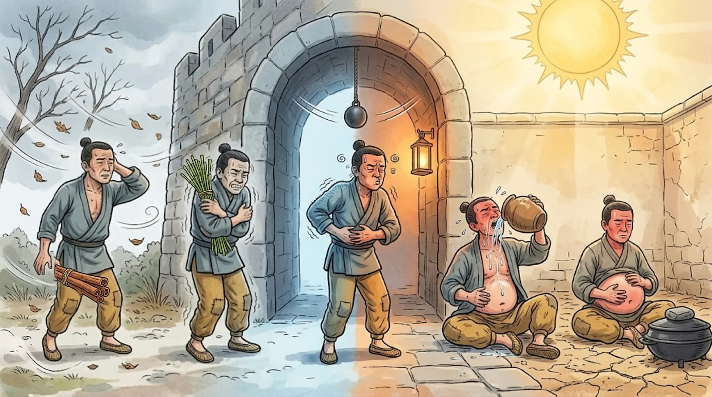
| 소품 | 잠그는 사실 (테스트 모드: 탭하여 확인) |
|---|---|
| 돌로 쌓은 옛 성의 단면 ① — 그림 왼쪽 삼분의 일은 성 밖(찬 바람·마른 잎), 가운데는 성벽을 뚫은 아치 성문 통로(왼쪽 반 차고 흰 빛 · 오른쪽 반 등불 주황빛), 오른쪽 삼분의 일은 성 안 마당(이글거리는 해). 같은 생김새의 마을 남자 다섯(상투·회청 저고리·황토 바지): 성 밖 둘 · 통로 하나 · 마당 둘 왜? | 六經 三陽 — 病位의 깊이가 곧 자리: 太陽 = 表(성 밖) · 少陽 = 半表半裏(성문 통로) · 陽明 = 裏·熱盛(성 안 마당). 傳經 차례(太陽→陽明→少陽)는 도해 s13p11이 진다 |
| 다리 — 六經 여섯 낱장(사람 아홉)은 사실 수(24)는 §3 안이지만 사람이 아홉이고 소품이 얼굴 표지·세간이라 望色처럼 두 장으로 갈랐다 — ① 三陽(사람 5) · ② 三陰(사람 4), 둘은 한 성의 단면을 이어 그린 것. 축은 사전 表(문 밖)·裏(성 안)·內·外(담 안팎)의 딥링크 — 그래서 표제어 2순위가 두 독자 모두 表裏辨證이었다. 少陽은 傳經 차례로는 셋째지만 자리로는 表와 裏 사이이므로 문 통로에 둔다(자리 = 病位, 차례 = 도해). ◆ 개념 — 太陽病 提綱 脈浮 頭項強痛而惡寒; 中風(表虛 汗出惡風 脈緩 桂枝湯) ↔ 傷寒(表實 無汗身痛 脈緊 麻黃湯). 少陽病 提綱 口苦 咽乾 目眩; 寒熱往來 胸脇苦滿 — 小柴胡湯. 陽明病 胃家實; 經證 四大(大熱 大汗 大渴 脈洪大, 白虎湯) ↔ 腑證 痞滿燥實(潮熱 譫語 便秘, 承氣湯). ▸ 단원 통합(2026-10-18) — s13p01·02·03(12행)을 한 장에. 결과: 구역 판독 blind34z 3/3 · 최종 blind35 A4 三陽病 88% / B4 65%, 인물 5/5·5/5, 12행 모두. 잔결은 blind35_report.md(寒·痛 기호 없음 · 추 ↔ 降 · 經證 배도 둥긂). | |
| [太陽] 그림 왼쪽 삼분의 일 — 돌 성벽 바깥의 흙길, 잎 떨어진 나무와 찬 바람에 날리는 마른 잎(사전 外·表 = 담 바깥·문 밖) 왜? | 太陽 = 表 — 육경의 첫 관문 |
| 다리 — 성=몸, 관문 여섯 겹=六經. 밖에서 안으로 뚫고 들어오는 구조가 곧 表→裏 전변축. ◆ 개념 — 太陽은 온몸의 겉을 주관(主一身之表)하므로 외감이 가장 먼저 닿는 자리. ▸ 단원 통합(2026-10-18) — s13p01[0]에서 옮김. | |
| [太陽] 성 밖 두 사람 모두 한 손으로 뒷목을 움켜쥐고 고개를 뻣뻣이 세움(頭項強痛) + 찬 바람 속(惡寒) — 脈浮의 소품은 없음(손목 냇물은 s12u03 전담) 왜? | 太陽之爲病 脈浮 頭項強痛而惡寒 (제강) |
| 다리 — 제강 세 요소: 頭項強痛=목 짚고 턱 든 자세, 惡寒=찬 바람, 脈浮=팔뚝의 냇물 띠. ★단 이 그림은 냇물이 떠 있는 정도까지는 표현하지 못한다 — 浮의 판독 정본은 s12p09(→s12u03)(浮沈遲數) 격자 패널 참조. ◆ 개념 — 提綱=그 경 병증의 대표 조문. 이 셋이 있으면 태양병으로 잡는다. ▸ 단원 통합(2026-10-18) — s13p01[1]에서 옮김. | |
| [太陽] 성 밖 왼쪽 남자 — 이마·목의 땀방울 + 헐렁하게 풀어헤쳐진 옷깃(表虛) + 바람을 피해 소매로 얼굴을 가림(惡風) + 손에 든 불그스름한 껍질의 계피 가지 다발(桂枝) 왜? | 太陽中風 = 表虛 · 汗出惡風 · 脈緩 → 桂枝湯 |
| 다리 — 계피 가지=桂枝湯 직역. 옷이 헐렁하고 땀이 새는 것=주리가 성글다(表虛). ◆ 개념 — 有汗이면 계지탕. 발한이 아니라 조화영위(調和營衛)가 목적이라 마황을 쓰지 않는다. ▸ 글자 사전 판정(2026-08-25, 규칙 120·127) — ⚠ **전담 사물 오용 · 그림 수정 대기** — 「바람 피함」은 몸짓이다(규칙 106). §5-2 惡 = 「해로운 것과 사람 사이에 세워 막은 가리개」. 교체안: **바람 쪽으로 세워 든 덧문 한 짝.** 五臟所惡 다섯 칸(s11p01(→s11u01)~p05)이 이미 예외 없이 이 문법이다. ▸ 단원 통합(2026-10-18) — s13p01[2]에서 옮김. | |
| [太陽] 성문 바로 앞 남자 — 땀 없음 + 옷깃을 턱까지 여밈(表實) + 두 팔로 제 몸을 끌어안고 덜덜 떪(惡寒) + 이를 악문 뻣뻣한 몸(身痛) + 손에 든 마디진 속 빈 초록 풀줄기 다발(麻黃) 왜? | 太陽傷寒 = 表實 · 無汗身痛 · 脈緊 → 麻黃湯 |
| 다리 — 마디지고 속 빈 줄기=마황의 실제 형태. 꽁꽁 싸맨 몸=주리가 닫힘(表實). ◆ 개념 — 無汗이면 마황탕. 有汗/無汗이 두 처방을 가르는 결정 지점이며 오용 시 변증이 무너진다. ▸ 단원 통합(2026-10-18) — s13p01[3]에서 옮김. | |
| [陽明] 그림 오른쪽 삼분의 일 — 성벽 안쪽 돌 깐 마당, 하늘의 이글거리는 큰 해(사전 裏·內 = 성 안·담 안쪽 / 陽 = 해) 왜? | 陽明 = 裏 · 熱盛 — 관문 안쪽 |
| 다리 — 태양(문 밖)을 지나 성 안으로 들어온 위치가 곧 表→裏 전변. ◆ 개념 — 陽明之爲病 胃家實是也. 사기가 안으로 들어와 열로 화한 단계. ▸ 단원 통합(2026-10-18) — s13p02[0]에서 옮김. | |
| [陽明] 마당 왼쪽 남자 — 저고리를 활짝 열어젖히고 큰 물동이를 들어 벌컥벌컥 마심(물이 가슴으로 흘러넘침) + 사방으로 튀는 굵은 땀방울 + 붉은 얼굴 왜? | 陽明經證 = 四大 · 大熱 大汗 大渴 脈洪大 → 白虎湯 |
| 다리 — ★이 그림에는 四大 중 셋만 있다: 해=大熱, 쏟아지는 땀=大汗, 물독 들이켜기=大渴. 네 번째 脈洪大는 그림에 없으므로 s12p09(→s12u03)(맥 격자) 참조 — 빠진 하나가 무엇인가를 인출 단서로 쓸 것. 洪脈=둑을 넘칠 듯 크고 힘찬 맥. ◆ 개념 — 열이 온 경에 퍼졌으나 아직 뭉치지 않은 단계라 淸法(백호탕)으로 끈다. ▸ 이름 회수(2026-08-24, 규칙 120) — **白虎 = 서방의 흰 범**이다. 오행에서 西·金·秋를 맡아 **불을 눌러 앉히는 짐승**이라, 大熱을 단숨에 식히는 방제에 그 이름이 붙었다. ⚠ 지금 그림에 흰 범이 없다 — 소품 하나(흰 범)를 더하면 **s13p08[3](→s13u03)과 함께 두 칸이 한꺼번에 상환된다**(재작도 1순위). ▸ 단원 통합(2026-10-18) — s13p02[1]에서 옮김. | |
| [陽明] 마당 오른쪽 남자 — 북처럼 팽팽히 부른 배를 두 손으로 감쌈(땀 없음) + 곁의 뚜껑을 돌로 눌러 꽉 닫은 검은 무쇠솥 + 발밑의 거북등처럼 갈라진 마른 땅 왜? | 陽明腑證 = 痞滿燥實 · 潮熱譫語 · 便秘 → 承氣湯 |
| 다리 — 뚜껑이 잠긴 솥=아래가 막혀 열이 갇힘, 갈라진 마른 땅=燥, 북처럼 팽팽한 배=實. ◆ 개념 — 열이 대장에서 조시(燥屎)로 뭉친 단계라 下法(승기탕)으로 뚫는다. 經證은 淸, 腑證은 下. ▸ 이름 회수(2026-08-24, 규칙 120) — **承氣 = 「胃氣를 承順시킨다」** — 막힌 것을 뚫어 위장의 기가 아래로 순하게 내려가게 한다는 뜻이다. 무쇠솥 뚜껑이 잠긴 것이 막힘(痞滿燥實)이고, 그것을 여는 것이 承氣다. ▸ 단원 통합(2026-10-18) — s13p02[2]에서 옮김. | |
| [陽明] 두 사람의 배 — 왼쪽은 보통 크기의 무른 배, 오른쪽은 그 두 배로 팽팽한 북 왜? | 배가 무르면 經證(淸法) · 배가 단단하면 腑證(下法) |
| 다리 — 복진이 두 증을 가르는 실전 지표라 배 모양을 대비의 축으로 삼음. ◆ 개념 — 같은 陽明인데 淸과 下가 갈리는 지점 — 오용하면 정기를 상한다. ▸ 단원 통합(2026-10-18) — s13p02[3]에서 옮김. | |
| [少陽] 성문 아치 통로 한가운데 — 바닥의 빛이 둘로 갈려 왼쪽 반은 바깥의 차고 희푸른 빛, 오른쪽 반은 벽 등불의 주황빛(表와 裏 사이의 한복판) 왜? | 少陽 = 半表半裏 |
| 다리 — 위치 자체가 사실: 문 밖(太陽)도 성 안(陽明)도 아닌 통로 한가운데. ◆ 개념 — 사기가 표에도 리에도 완전히 속하지 않아 汗法·下法을 모두 쓸 수 없고 和解法(소시호탕)만 가능. ▸ 단원 통합(2026-10-18) — s13p03[0]에서 옮김. | |
| [少陽] 통로의 남자 — 몸의 왼쪽 반은 소름·떨림, 오른쪽 반은 땀 + 머리 위 아치 천장에서 긴 줄에 매달려 좌우로 크게 흔들리는 둥근 쇠추(호선 둘 — 저울추 降이 아니라 왕복) 왜? | 寒熱往來 — 소양병 대표 증 |
| 다리 — 좌우로 오가는 추=한열이 번갈아 오가는 왕래. 태양의 오한발열(동시)과 다르다. ◆ 개념 — 정기와 사기가 반표반리에서 밀고 밀리며 우세가 번갈아 바뀌는 것. ▸ 글자 사전 판정(2026-08-25, 규칙 120·127) — ⚠ **거꾸로 읽히는 자리 · 그림 수정 1순위**(규칙 93) — 「멈춘 추」는 s14p09[4] 和解(수평 저울)와 **같은 도형**인데 이 칸이 지려는 것은 그 정반대인 **往來**다. 게다가 「떨고·땀」은 몸짓이다(규칙 106). 교체안: **성문 통로 천장에 매달려 좌우로 크게 오가는 추 하나 — 한쪽 끝에 눈송이, 다른 쪽 끝에 불꽃.** 접시가 없고 매달려 오간다는 축으로 저울 계열과 갈린다. 새 어휘 0개. ⚠ [0]의 「안쪽 등불」은 §5가 이미 「침범 — 빼야 한다」로 판정해 둔 것이다. ▸ 단원 통합(2026-10-18) — s13p03[1]에서 옮김. | |
| [少陽] 통로의 남자 — 한 손으로 오른쪽 옆구리 갈비뼈 바로 아래를 꾹 누름 왜? | 胸脇苦滿 — 소양 경락 부위 |
| 다리 — 足少陽膽經이 옆구리를 지나므로 병이 그 자리에 나타난다. ◆ 개념 — 소시호탕증의 대표 복진 소견. ▸ 단원 통합(2026-10-18) — s13p03[2]에서 옮김. | |
| [少陽] 통로의 남자 — 아주 쓴 것을 문 듯 잔뜩 오므린 입 + 눈 둘레를 도는 어지러움 소용돌이 선 왜? | 少陽之爲病 口苦 咽乾 目眩也 (제강) |
| 다리 — 제강 세 글자를 얼굴 세 부위로: 쓴맛(입)·마른 목·어지러운 눈. ◆ 개념 — 담화가 위로 치솟아 나타나는 증. 치법=和解 少陽, 대표방=小柴胡湯. ▸ 단원 통합(2026-10-18) — s13p03[3]에서 옮김. | |
🔗 六經 ② 三陰 — 곳간·어두운 방·가장 깊은 방의 넷 (太陰 · 少陰 寒化/熱化 · 厥陰) 상한·六經 #s13u02
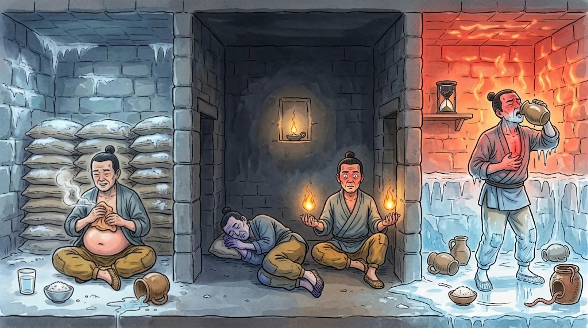
| 소품 | 잠그는 사실 (테스트 모드: 탭하여 확인) |
|---|---|
| 같은 성의 단면 ② — 성 안 깊숙한 석조 건물의 방 셋, 오른쪽으로 갈수록 깊고 어둡다: 왼쪽은 곡식 가마니가 쌓이고 벽에 성에가 낀 차가운 곳간, 가운데는 창 없는 어두운 방(벽감의 등잔이 거의 꺼져 감), 오른쪽은 가장 깊은 방(천장 쪽은 붉게 달아오르고 바닥은 두꺼운 얼음). 같은 생김새의 마을 남자 넷: 곳간 하나 · 어두운 방 둘 · 깊은 방 하나 왜? | 六經 三陰 — 太陰 = 裏·三陰의 첫 단계(곳간, 裏虛寒) → 少陰 = 心腎·生死의 관문(가장 어두운 방, 寒化 ↔ 熱化) → 厥陰 = 上熱下寒·寒熱錯雜(가장 깊은 방) |
| 다리 — 틀 소실 낱장(s13p04·05)의 무대 행은 이 틀 행이 갈음한다(MASTER §2). 곳간 = 사전 倉(脾 = 倉廩之官), 벽의 성에 = 寒 갈림의 裏寒, 따뜻한 천 = 溫, 검푸른 손발 = 厥 — 네 딥링크가 모두 섰다. 厥陰의 얼음은 살아 있는 불과 맞대지 않도록 윗몸은 살갗이 붉게 달아오른 것으로만 그렸다. ◆ 개념 — 太陰病 提綱 腹滿而吐 食不下 自利益甚 時腹自痛(藏有寒 當溫之, 理中湯). 少陰病 提綱 脈微細 但欲寐; 寒化(四肢厥冷 四逆湯) ↔ 熱化(心煩不得眠 黃連阿膠湯). 厥陰病 提綱 消渴 氣上撞心 心中疼熱 飢而不欲食 食則吐蚘(烏梅丸) · 厥熱勝復. ▸ 단원 통합(2026-10-18) — s13p04·05·06을 한 장에(무대 행 둘은 틀로). 결과: 구역 판독 blind36z 3/3 · 최종 blind37 C4 三陰病 提綱 90% / D4 85%, 인물 4/4·4/4, 틀+10행 모두. 잔결은 blind37_report.md(모래시계 사전 밖 · 가득 찬 밥그릇 ↔ 補-b · 물컵 ↔ 淸). | |
| [太陰] 곳간에 앉은 남자 — 저고리 앞을 열어 내놓은 물렁하게 부푼 큰 배 + 김이 오르는 따뜻한 천을 두 손으로 배에 대고 안도하는 얼굴(사전 溫) 왜? | 腹滿而吐 食不下 自利益甚 時腹自痛 (제강) |
| 다리 — 따뜻하게 하면 편해지는 배=喜溫喜按(虛寒). 陽明의 단단한 배(拒按)와 정반대. ◆ 개념 — 太陰之爲病 腹滿而吐… 비양이 허해 운화가 안 되는 것. ▸ 단원 통합(2026-10-18) — s13p04[1]에서 옮김. | |
| [太陰] 그 곁 바닥 — 김이 전혀 나지 않는 식은 밥그릇 + 물이 가득 찬 채 손대지 않은 물잔 왜? | 食不下 · 口不渴 — 裏寒의 표지 |
| 다리 — 갈증 없음이 결정적: 陽明(大渴)·少陰熱化와 갈리는 지점. ◆ 개념 — 自利不渴者 屬太陰 — 설사하면서 목이 안 마르면 태음. ▸ 단원 통합(2026-10-18) — s13p04[2]에서 옮김. | |
| [太陰] 그 곁 바닥 — 옆으로 엎어져 묽은 물이 흘러나온 질그릇 요강 + 뒤 돌벽에 낀 하얀 성에(사전 寒 갈림: 안쪽 성에 = 裏寒) + 벽을 따라 쌓인 곡식 가마니(사전 倉) 왜? | 自利益甚 → 治法 溫中散寒 · 理中湯 |
| 다리 — 성에=寒, 묽은 설사=脾陽 부족. ◆ 개념 — 當溫之 宜服四逆輩 — 따뜻하게 하는 것이 원칙. ▸ 이름 회수(2026-08-24, 규칙 120) — **理中 = 「中焦를 다스린다」** — 理가 「다스림」, 中이 「中焦」다. 이름이 곧 치법(溫中散寒)이다. ▸ 글자 사전 판정(2026-08-25, 규칙 120·127) — ⚠ **이중 위반 · 그림 수정 대기** — 「엎어진 요강」은 ⓐ 요강이 小便 전담인데 설사(大便)를 담고 ⓑ 「뒤집힌 빈 그릇」이 s15p10 過飢 전담이다. 교체안: **손잡이 달린 나무 뒷간통에 묽게 풀어진 것.** 벽의 성에는 **裏寒(그 자리 안이 차다)이라 유지한다** — §5-2 寒의 갈림 ⓑ. ▸ 단원 통합(2026-10-18) — s13p04[3]에서 옮김. | |
| [少陰] 어두운 방 왼쪽 남자 — 바닥에 옆으로 웅크려 누워 눈을 감고 깊이 졺 + 손가락·발가락 끝이 검푸르게 얾(사전 厥) + 벽감의 거의 꺼져 가는 기름등잔 왜? | 少陰寒化 — 脈微細 但欲寐 · 四肢厥冷 → 四逆湯 |
| 다리 — 제강 직역: 脈微細=가늘어 사라질 듯한 냇물, 但欲寐=자꾸 눕고 졸림. ◆ 개념 — 少陰之爲病 脈微細 但欲寐也. 陽虛 극심 → 回陽救逆(사역탕). ▸ 글자 사전 판정(2026-08-25, 규칙 120·127) — **從化의 寒에는 눈송이를 놓지 않는다.** 少陰寒化는 **虛寒(陽虛)**이라 정본(外寒·實寒)을 놓으면 사역탕이 산한제로 뒤집힌다. 이 칸의 다리는 但欲寐 ↔ 不得眠 한 축이다(규칙 120). ▸ 단원 통합(2026-10-18) — s13p05[1]에서 옮김. | |
| [少陰] 어두운 방 오른쪽 남자 — 일어나 앉아 눈을 말똥말똥 크게 뜸 + 두 광대뼈만 붉음 + 바짝 마른 입술 + 펼친 두 손바닥 위에 떠 있는 작은 불꽃 하나씩 왜? | 少陰熱化 — 心煩不得眠 → 黃連阿膠湯 |
| 다리 — 같은 少陰인데 정반대 그림: 잠 못 이룸 ↔ 자꾸 졸림. ◆ 개념 — 陰虛火旺으로 心火가 亢해 잠들지 못함. 광대뼈 홍조·오심번열은 진단 세트 虛熱 패널과 같은 기호. ▸ 글자 사전 판정(2026-08-25, 규칙 120·127) — **從化의 熱에는 불꽃을 놓지 않는다.** 少陰熱化는 **虛熱(陰虛火旺)**이라 큰 불꽃을 놓으면 實熱로 뒤집혀 황련아교탕이 백호탕이 된다. 광대뼈 홍조·손바닥 열이 s12p02(→s12u01)와 같은 기호로 이미 진다. ▸ 단원 통합(2026-10-18) — s13p05[2]에서 옮김. | |
| [少陰] 같은 방의 두 사람 — 누워 눈 감음(寒化) ↔ 앉아 눈 크게 뜸(熱化) 왜? | 但欲寐(寒化) ↔ 不得眠(熱化) — 少陰의 갈림목 |
| 다리 — 가장 헷갈리는 대비를 한 화면에 고정. ◆ 개념 — 같은 경의 병이 從化에 따라 정반대 증으로 나타난다는 것이 상한론 변증의 핵심. ▸ 단원 통합(2026-10-18) — s13p05[3]에서 옮김. | |
| [厥陰] 가장 깊은 방에 선 남자 — 가슴·윗몸은 붉게 달아오르고(열린 저고리 앞), 허리 아래 두 다리는 바닥의 얼음에 덮여 희푸름 · 방도 천장 쪽은 붉게 달아오르고 바닥은 두꺼운 얼음 왜? | 厥陰 = 上熱下寒 · 寒熱錯雜 |
| 다리 — 한 몸을 위아래로 갈라 그림 — 한열이 뒤섞인 것이 궐음의 본질. ◆ 개념 — 음이 다한 자리에서 양이 되살아나므로 한열이 한 몸에 공존한다. ▸ 단원 통합(2026-10-18) — s13p06[0]에서 옮김. | |
| [厥陰] 그 남자 — 한 손으로 가슴을 꾹 누르며 치밀어 오르는 괴로운 얼굴 + 다른 손의 물동이를 들이켬 + 발치에 뒹구는 비운 물동이 여럿(消渴) + 손대지 않고 멀리 밀어 놓은 밥그릇 왜? | 厥陰之爲病 消渴 氣上撞心 心中疼熱 飢而不欲食 (제강) |
| 다리 — 제강 네 요소를 네 소품으로: 消渴=물 들이켬, 氣上撞心=치미는 화살표, 心中疼熱=가슴 움켜쥠, 飢而不欲食=배고픈데 밀어놓은 밥. ◆ 개념 — 배는 고픈데 먹지 못하는 모순이 궐음의 특징적 증. ▸ 글자 사전 판정(2026-08-25, 규칙 120·127) — **心中疼熱의 熱에는 새 불꽃을 놓지 않는다.** [0]의 上熱이 곧 이 열이고, 한 가슴에 불꽃이 둘이면 「나중에 끼워 넣은 것」으로 읽힌다(규칙 82). 이 행이 새로 지는 것은 氣(김)와 中(가슴 한복판)뿐이다. ⚠ why가 적어 둔 「치미는 화살표」는 **prop에 없고 화살표는 사물도 아니다**(규칙 123). ▸ 단원 통합(2026-10-18) — s13p06[1]에서 옮김. | |
| [厥陰] 그 발치 — 뚜껑 열린 항아리에서 기어 올라오는 긴 회충 한 마리 왜? | 食則吐蚘 → 蛔厥 · 烏梅丸 |
| 다리 — 제강 마지막 구절의 직역. 회충이 위로 올라오는 것=상열하한에서 벌레가 따뜻한 위로 몰림. ◆ 개념 — 烏梅丸은 寒熱을 함께 다루는 대표 처방(궐음의 主方). ▸ 단원 통합(2026-10-18) — s13p06[2]에서 옮김. | |
| [厥陰] 벽 선반 위 모래시계 하나 — 위 절반은 어둡고 아래 절반은 밝다 왜? | 厥熱勝復 — 궐과 열이 번갈아 우세 |
| 다리 — 모래시계=시간에 따라 우세가 뒤집힘. 少陽의 왕래(공간적 반표반리)와 구분되는 시간축 개념. ◆ 개념 — 厥이 길면 병이 진행, 熱이 회복되면 예후 양호 — 궐과 열의 날수를 세어 예후를 본다. ▸ 단원 통합(2026-10-18) — s13p06[3]에서 옮김. | |
🔗 溫病 衛氣營血 — 시골집 긴 방의 넷, 문가(낮)에서 가장 깊은 구석(밤)으로 온병·衛氣營血 #s13u03
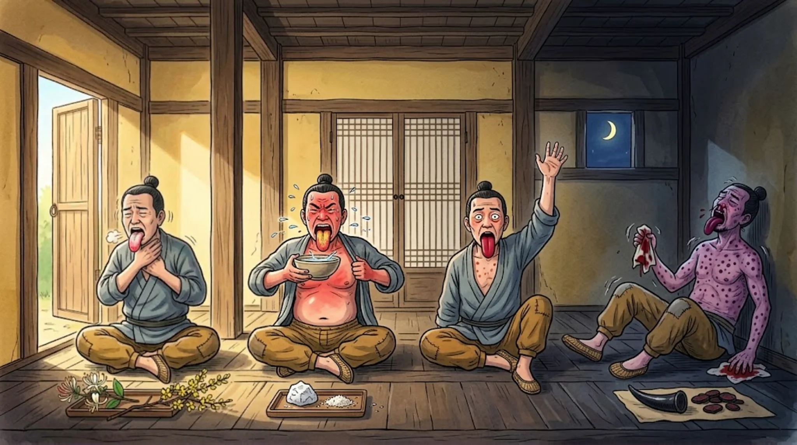
| 소품 | 잠그는 사실 (테스트 모드: 탭하여 확인) |
|---|---|
| 나무 기둥·흙벽 시골집의 긴 방 단면 — 왼쪽 끝 활짝 열린 문으로 대낮 햇빛이 들고, 오른쪽으로 갈수록 안쪽·어둠, 오른쪽 뒤 벽 작은 창 밖은 밤하늘의 초승달, 오른쪽 끝은 가장 깊고 어두운 구석. 같은 생김새의 마을 남자 넷이 문가 → 한가운데 → 안쪽 → 구석에 차례로 앉아 넷 다 혀를 크게 내밀고 있다(혀는 같은 크기, 색·이끼만 다름) 왜? | 溫病 衛氣營血辨證 — 자리의 깊이가 곧 단계: 衛分(문가·表, 가장 얕음) → 氣分(한가운데) → 營分(안쪽, 밤에 심함) → 血分(가장 깊은 구석, 가장 위중). 낮 → 밤 = 얕음 → 깊음 |
| 다리 — 六經 두 장(성의 단면)과 같은 문법 — 자리의 깊이 = 病位 — 을 집 안 한 방에 다시 썼다. 네 사람이 모두 혀를 내민 것은 衛氣營血의 각 단계를 舌象(사전 舌·苔)으로 가르기 위한 비교 칸(규칙 67): 혀의 크기·자리는 같고 색·이끼만 다르다. 氣分의 「옷 열어젖힘 + 물 + 땀」은 s13u01 陽明經證과 같은 꼴 — 같은 白虎湯證이라 의도한 겹침이고 무대(방 안·해 없음)와 혀 이끼로 가른다. 틀 소실 낱장 s13p08의 무대 행은 이 틀 행이 갈음한다(MASTER §2). ◆ 개념 — 衛分(發熱 微惡寒 無汗 咽痛 咳嗽 · 舌邊尖紅 苔薄白 · 辛凉解表 銀翹散) → 氣分(壯熱 不惡寒反惡熱 大汗 口渴 · 舌紅 苔黃 · 淸氣泄熱 白虎湯) → 營分(身熱夜甚 心煩不寐 時有譫語 斑疹隱隱 · 舌絳 少苔 · 淸營透熱 淸營湯) → 血分(斑疹密布 吐衄便血 抽搐 角弓反張 · 深絳紫絳 · 凉血散血 犀角地黃湯). ▸ 단원 통합(2026-10-18) — s13p07~10(17행)을 한 장에(무대 행 하나는 틀로). 결과: 구역 판독 blind38z 4/4(氣分 띠 단독은 陽明經證 — 의도한 겹침) · 최종 blind39 E4 衛氣營血辨證 95% / F4 90%, 인물 4/4·4/4, 틀+16행 모두. 잔결은 blind39_report.md(營分 처방 빈칸 · 사전 舌=心 충돌). | |
| [衛] 열린 문 바로 안쪽, 바깥 대낮 햇빛 속의 자리(방에서 가장 얕은 곳) 왜? | 衛分 = 가장 얕은 첫 단계(表) |
| 다리 — 방 안쪽으로 들어갈수록 깊어지는 배치 — 衛→氣→營→血 네 패널이 같은 방의 앞뒤로 이어진다. ◆ 개념 — 溫邪上受 首先犯肺 — 온사가 입·코로 들어와 폐위(肺衛)를 먼저 침범. ▸ 단원 통합(2026-10-18) — s13p07[0]에서 옮김. | |
| [衛] 문가의 남자 — 한 손으로 목을 감싸 쥠(咽痛) + 다른 손을 입가에 대고 기침(입김 구름) + 어깨를 움츠림(微惡寒) + 이마가 조금 붉음(發熱) + 땀 없음 왜? | 發熱 微惡寒 無汗 · 咽痛 咳嗽 |
| 다리 — 상한의 심한 오한과 달리 '살짝'만 춥다. ◆ 개념 — 溫病은 熱邪라 惡寒이 가볍고 짧으며 곧 열로 돌아선다 — 상한 태양병과의 감별점. ▸ 단원 통합(2026-10-18) — s13p07[1]에서 옮김. | |
| [衛] 문가의 남자가 크게 내민 혀 — 옅은 분홍 바탕, 가장자리·끝만 붉음, 가운데 얇고 흰 이끼(사전 苔) 왜? | 舌邊尖紅 · 苔薄白 (衛分 설상) |
| 다리 — 설상 4단계가 온병 진행의 계기판. 이 패널의 혀가 기준선이고 이후 패널에서 점점 붉어진다. ◆ 개념 — 葉天士 溫熱論 제8조 계열. 邊尖만 붉은 것이 위분의 표지. ▸ 단원 통합(2026-10-18) — s13p07[2]에서 옮김. | |
| [衛] 곁 소반 위 — 흰·노란 꽃이 쌍으로 핀 인동덩굴 가지(金銀花) + 노란 개나리꽃 가지(連翹) 왜? | 治法 = 辛凉解表 → 銀翹散 |
| 다리 — 銀花(인동)+連翹(개나리)를 실제 꽃으로 — 방명 두 글자가 그대로 소품. ◆ 개념 — 在衛汗之可也 — 다만 상한의 신온발한이 아니라 신량으로 가볍게 푼다. ▸ 단원 통합(2026-10-18) — s13p07[3]에서 옮김. | |
| [氣] 방 한가운데 밝은 곳의 남자 — 저고리를 활짝 열어젖힌 붉은 가슴 + 사발의 물을 벌컥벌컥 들이켬 + 사방으로 튀는 굵은 땀방울 + 붉은 얼굴(오한 없음) 왜? | 壯熱 不惡寒反惡熱 · 大汗 · 口渴 |
| 다리 — 상한 陽明經證(四大)과 같은 그림이 되는 것이 포인트 — 실제로 병기가 같다. ◆ 개념 — 但熱不寒이 기분증의 핵심 지표. ▸ 단원 통합(2026-10-18) — s13p08[1]에서 옮김. | |
| [氣] 한가운데 남자가 크게 내민 혀 — 혀 전체가 붉고 두껍고 마른 누런 이끼 왜? | 舌紅 · 苔黃 (氣分 설상) |
| 다리 — 위분의 '가장자리만'에서 '전체'로 확대 — 설상 계기판 2단계. ◆ 개념 — 苔가 희다가 누레지는 것이 기분 전입의 표지. ▸ 단원 통합(2026-10-18) — s13p08[2]에서 옮김. | |
| [氣] 곁 소반 위 — 하얀 석고 덩어리 하나 + 흩어진 쌀알(石膏·粳米) 왜? | 治法 = 淸氣泄熱 → 白虎湯(石膏·知母·粳米·甘草) |
| 다리 — 石膏(흰 돌)+粳米(쌀)를 실물로 — 백호탕의 뼈대. ◆ 개념 — 到氣才可淸氣 — 기분에 이르러야 비로소 청기법을 쓸 수 있다(위분에서 앞당겨 쓰면 안 됨). ▸ 이름 회수(2026-08-24, 규칙 120) — **白虎 = 서방의 흰 범**(西·金·秋 — 불을 눌러 앉힌다). 흰 석고는 약재를 지고 방제 이름은 못 진다. ⚠ s13p02[1](→s13u01)과 같은 구멍이다 — 흰 범 하나로 둘이 상환된다. ▸ 단원 통합(2026-10-18) — s13p08[3]에서 옮김. | |
| [營] 방 안쪽 어둑한 자리 — 뒤 벽 작은 창 밖은 깜깜한 밤하늘과 초승달 왜? | 營分 = 세 번째 단계 — 병이 밤에 심해짐 |
| 다리 — 자리가 더 깊어지고 시간까지 밤으로 — 심화의 이중 표시. ◆ 개념 — 營分證은 夜甚(밤에 열이 오르고 심해짐)이 특징. ▸ 3차 재판독(2026-08-29, 규칙 150·153, blind3) — ✓ 營分證 — 舌絳·斑疹隱隱·神昏·撮空·초승달=夜甚 전부 ⚠ 혀 내민 동작이 吐舌로도 ▸ 단원 통합(2026-10-18) — s13p09[0]에서 옮김. | |
| [營] 안쪽의 남자 — 눈을 부릅뜨고 잠 못 이룸 + 입을 벌려 헛소리하는 듯 + 한 손을 허공으로 높이 들어 보이지 않는 것을 움켜쥐려 함 왜? | 身熱夜甚 · 心煩不寐 · 時有譫語 — 熱入心包 |
| 다리 — 허공을 더듬는 손=신지가 흐려진 상태의 전형. ◆ 개념 — 營은 血 중의 기라 心과 통한다 — 영분에 들면 신명이 어지러워진다. ▸ 단원 통합(2026-10-18) — s13p09[1]에서 옮김. | |
| [營] 안쪽 남자가 크게 내민 혀 — 혀 전체가 짙은 진홍(絳), 이끼 거의 없이 매끈 왜? | 舌絳 · 少苔 (營分 설상) |
| 다리 — 설상 3단계. 苔가 사라지는 것이 열이 혈분 쪽으로 들어간 증거. ◆ 개념 — 舌絳은 영분 전입의 결정 지표. ▸ 단원 통합(2026-10-18) — s13p09[2]에서 옮김. | |
| [營] 벌어진 저고리 사이 가슴 — 옅은 붉은 반점 몇 개가 드문드문 막 돋기 시작 왜? | 斑疹隱隱 · 治法 = 淸營透熱 → 淸營湯 |
| 다리 — '隱隱'=아직 은은하게 비치는 정도 — 혈분의 뚜렷한 반진과 대비. ◆ 개념 — 入營猶可透熱轉氣 — 영분에 들어도 열을 기분 쪽으로 되돌려 뺄 수 있다. ▸ 단원 통합(2026-10-18) — s13p09[3]에서 옮김. | |
| [血] 방에서 가장 깊고 어두운 구석 — 벽에 기대 반쯤 무너져 앉은 자세 왜? | 血分 = 마지막 네 번째 단계 — 가장 위중 |
| 다리 — 衛→氣→營→血 네 패널의 자리가 문가에서 구석까지 이어져 깊이축을 완성. ◆ 개념 — 열이 혈을 태워 出血·動風에 이른 단계. ▸ 단원 통합(2026-10-18) — s13p10[0]에서 옮김. | |
| [血] 구석의 남자 — 드러난 가슴·팔·얼굴에 짙은 자줏빛 반점이 빽빽함 + 코에서 흐르는 피 + 손에 쥔 천에 묻은 토한 피(사전 血 = 붉은 것) 왜? | 斑疹密布 · 吐衄便血 — 熱盛動血 |
| 다리 — 영분의 '隱隱'과 대비되는 '密布' — 반점의 밀도가 두 단계를 가른다. ◆ 개념 — 熱이 血絡을 상해 피가 제 길을 벗어난다(迫血妄行). ▸ 단원 통합(2026-10-18) — s13p10[1]에서 옮김. | |
| [血] 구석의 남자 — 몸이 뻣뻣하게 뒤로 젖혀지고 팔다리에 경련 떨림 선 왜? | 抽搐 · 角弓反張 — 熱極生風 |
| 다리 — 열이 극에 달해 간풍이 인 것. ◆ 개념 — 血分證의 동반 위중 증후. ▸ 글자 사전 판정(2026-08-25, 규칙 120·127) — **反張의 張에는 활을 놓지 않는다.** §5의 등에 멘 긴 활은 **張씨(인명) 전담**이라 여기 놓으면 「장씨」로 읽힌다(규칙 51). 反張의 張은 성씨가 아니라 「당겨져 뒤로 젖혀짐」이다. ▸ 단원 통합(2026-10-18) — s13p10[2]에서 옮김. | |
| [血] 구석 남자가 크게 내민 혀 — 아주 짙은 자줏빛 진홍 왜? | 深絳 · 紫絳 (血分 설상) |
| 다리 — 설상 4단계 완성: 邊尖紅 → 舌紅 → 舌絳 → 深絳·紫絳. ◆ 개념 — 네 패널의 혀만 나란히 보면 온병 진행의 계기판이 된다. ▸ 단원 통합(2026-10-18) — s13p10[3]에서 옮김. | |
| [血] 곁 바닥의 천 위 — 검은 무소뿔 하나 + 검붉은 뿌리 조각들(犀角·生地黃) 왜? | 治法 = 凉血散血 → 犀角地黃湯 |
| 다리 — 犀角(무소뿔)+生地黃(검붉은 뿌리)을 실물로. ◆ 개념 — 入血直須凉血散血 — 혈분에 들면 곧바로 양혈산혈. ▸ 단원 통합(2026-10-18) — s13p10[4]에서 옮김. | |
🔗 六經 전변도 — 순서와 갈래(도해) 상한·도해 도해 · 문항 4 #s13p11
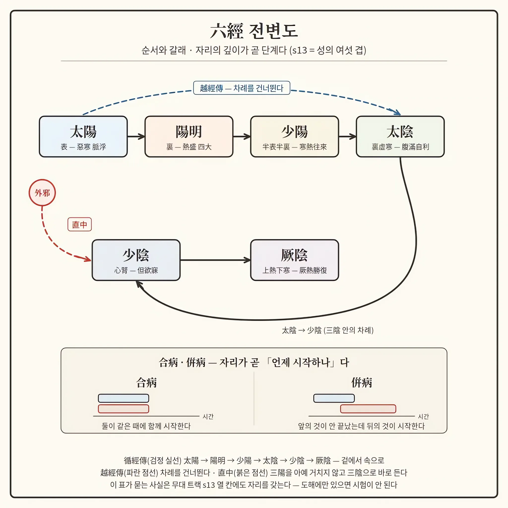
| 소품 | 잠그는 사실 (테스트 모드: 탭하여 확인) |
|---|---|
| 검정 실선 차례 왜? | 循經傳 — 太陽 → 陽明 → 少陽 → 太陰 → 少陰 → 厥陰 (겉에서 속으로) |
| 다리 — 도해는 자가테스트·역방향 판독의 대상이 아니다(CANON 74). 범례를 그림 안에 갖고 있다. ▸ 정산(2026-08-22, 규칙 111) — 무대 자리: 六經 각 단계 s13p01(→s13u01)~s13p06(→s13u02). 전변 방식(循經·越經·直中·合病·倂病)은 순서라 도해가 전담 | |
| 파란 점선 왜? | 越經傳 — 차례를 건너뛴다 |
| 다리 — 도해는 자가테스트·역방향 판독의 대상이 아니다(CANON 74). 범례를 그림 안에 갖고 있다. ▸ 정산(2026-08-22, 규칙 111) — 무대 자리: 六經 각 단계 s13p01(→s13u01)~s13p06(→s13u02). 전변 방식(循經·越經·直中·合病·倂病)은 순서라 도해가 전담 | |
| 여섯 상자 밖의 「外邪」 점에서 나오는 붉은 점선 왜? | 直中 — 三陽을 아예 거치지 않고 三陰으로 바로 든다. 그래서 기점이 어느 상자에도 닿지 않는다 |
| 다리 — 도해는 자가테스트·역방향 판독의 대상이 아니다(CANON 74). 범례를 그림 안에 갖고 있다. ▸ 정산(2026-08-22, 규칙 111) — 무대 자리: 六經 각 단계 s13p01(→s13u01)~s13p06(→s13u02). 전변 방식(循經·越經·直中·合病·倂病)은 순서라 도해가 전담 | |
| 아래 두 그림 왜? | 合病(둘이 한꺼번에) ↔ 倂病(앞의 것이 안 나은 채 다음이 겹친다) |
| 다리 — 도해는 자가테스트·역방향 판독의 대상이 아니다(CANON 74). 범례를 그림 안에 갖고 있다. ▸ 정산(2026-08-22, 규칙 111) — 무대 자리: 六經 각 단계 s13p01(→s13u01)~s13p06(→s13u02). 전변 방식(循經·越經·直中·合病·倂病)은 순서라 도해가 전담 | |
| 자리의 깊이가 곧 단계 왜? | 무대 트랙 s13 열 칸이 같은 사실을 성의 여섯 겹으로 진다 |
| 다리 — 도해는 자가테스트·역방향 판독의 대상이 아니다(CANON 74). 범례를 그림 안에 갖고 있다. ▸ 정산(2026-08-22, 규칙 111) — 무대 자리: 六經 각 단계 s13p01(→s13u01)~s13p06(→s13u02). 전변 방식(循經·越經·直中·合病·倂病)은 순서라 도해가 전담 | |
도해 문항 4 펼치기
| 1. 循經傳의 차례는? | 太陽 → 陽明 → 少陽 → 太陰 → 少陰 → 厥陰 (겉에서 속으로)傷寒論 |
| 2. 越經傳이란? | 차례를 건너뛰어 전해지는 것傷寒論 |
| 3. 直中이란? | 三陽을 아예 거치지 않고 邪가 三陰으로 바로 드는 것傷寒論 |
| 4. 合病과 倂病의 차이는? | 合病 = 둘 이상이 한꺼번에 나타난다 / 倂病 = 앞의 것이 낫지 않은 채 다음 것이 겹친다傷寒論 |
장면 14 · 본초·방제 (통합 3 + 도해 4)
🔗 本草 ① 補·溫 — 한약방 진열대 네 칸 (人蔘 · 附子 · 當歸 · 黃芪) 본초·약재 #s14u01
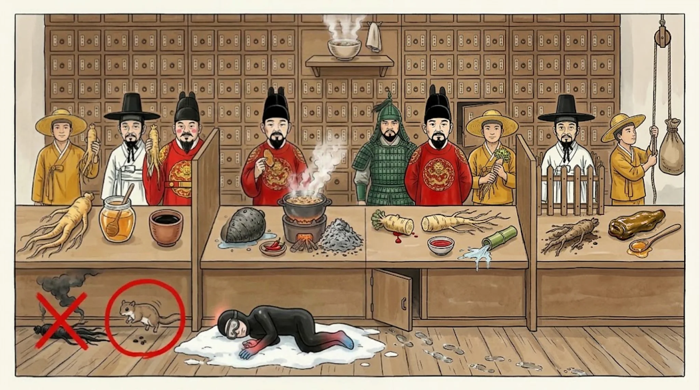
| 소품 | 잠그는 사실 (테스트 모드: 탭하여 확인) |
|---|---|
| 옛 한약방 안 — 긴 나무 진열대가 그림을 가로지르고 뒤 벽은 서랍이 빼곡한 약장. 진열대는 세로 칸막이로 네 칸(왼쪽부터 人蔘 · 附子 · 當歸 · 黃芪), 칸마다 그 약재의 歸經 인물(오장 다섯 인물)이 진열대 뒤에 허리 위만 보이게 서서 약재 조각을 들고 있다. 진열대 한가운데 위 작은 선반에 김 오르는 따뜻한 국물 사발 하나와 따뜻한 천 한 장(사전 補·溫 — 이 가게의 간판) 왜? | 本草 ① 補·溫 — 人蔘(大補元氣) · 附子(回陽救逆) · 當歸(補血) · 黃芪(補氣升陽) 네 약재가 모두 溫性(微溫~大熱)의 補藥. 칸의 사람 = 歸經, 진열대 위 = 性味·효능·포제·금기 |
| 다리 — 약재 네 낱장을 한약방 진열대 네 칸으로 모았다 — 사람(오장 다섯 인물)은 약재의 歸經을 지는 소품이라 한 칸에 1~3명, 열 명이지만 옷 색이 글자라 작아도 읽힌다(望色 아홉의 선례). 사전 딥링크: 甘 꿀단지 · 苦 김 없는 검은 커피 · 補-b 붉은 액체 가득한 그릇 · 腎 잠수부 · 補·溫 간판. 相反(붉은 X)·相畏(붉은 고리)는 CANON 규격 그대로. ◆ 개념 — 人蔘 甘·微苦 微溫, 歸脾肺心, 大補元氣, 反藜蘆·畏五靈脂. 附子 辛甘 大熱 有毒, 歸心腎脾, 回陽救逆 補火助陽, 先煎久煎. 當歸 甘辛 溫, 歸肝心脾, 補血活血(頭止血 · 身補血 · 尾破血). 黃芪 甘 微溫, 歸脾肺, 生用 固表止汗·利水消腫 / 蜜炙 補中益氣·升擧陽氣. ▸ 단원 통합(2026-10-22) — s14p01·02·04·05(21행, 라벨 둘 포함)를 한 장에. 결과: 구역 판독 blind40z(附子 → 地黃 오독 → 원뿔 뿌리·고추·손끝 靑赤 재편집 / 炙黃芪 → 地黃 오독 → PIL 색 회전) · 최종 blind41 I4 溫補 대표약 각론 55% / J4 50%, 네 약재 이름 모두 ✓, 歸經 인물 10/10, 라벨 2행을 뺀 19행 모두. 잔결은 blind41_report.md(附子·當歸는 띠 단독으로 이름 안 나옴 · X/O 反畏 구분 · 재 더미 → 鹹). | |
| [人蔘] 첫째 칸 진열대 위 — 팔다리가 달린 사람 모양의 큰 인삼 뿌리 왜? | 人蔘 — 뿌리가 사람을 닮아 人蔘 |
| 다리 — 뿌리가 머리·팔·다리를 갖춰 사람을 닮아 人蔘. 이름이 형태로 풀리는 대표례. ▸ 단원 통합(2026-10-22) — s14p01[0]에서 옮김. | |
| [人蔘] 첫째 칸 진열대 위 — 나무 국자가 꽂힌 꿀단지(사전 甘) 왜? | 甘 (五味) |
| 다리 — 오행왕국 土나라의 甘 기호(꿀)를 그대로 가져왔다 — 五味 사전 재사용. ▸ 단원 통합(2026-10-22) — s14p01[1]에서 옮김. | |
| [人蔘] 첫째 칸 진열대 위 — 손잡이 없는 질그릇 잔에 담긴, 김이 전혀 나지 않는 새까만 커피(사전 苦) 왜? | 苦 (五味) ※「微」는 라벨이 진다 |
| 다리 — 오행왕국 火나라의 苦 기호(김 나는 검은 커피). 微苦라 잔이 작다. ▸ 단원 통합(2026-10-22) — s14p01[2]에서 옮김. | |
| [人蔘] ※라벨 전용 — 그림 소품 없음 왜? | 微溫 (性) / 歸 脾·肺·心經 |
| 다리 — 성질과 귀경은 라벨이 진다. 歸經은 아래 大補元氣 행이 소품으로 나른다. ▸ 단원 통합(2026-10-22) — s14p01[3]에서 옮김. | |
| [人蔘] 첫째 칸 진열대 뒤 — 노란 밀짚모자 농부(脾)·흰 도포 재상(肺)·붉은 곤룡포 임금(心) 셋이 저마다 큼직한 인삼 조각을 들어 보임 왜? | 大補元氣 — 歸 脾·肺·心 |
| 다리 — 오장 캐릭터 세 명이 하나씩 든 것=그 세 경으로 간다는 歸經 표현. 밀짚모자=脾, 흰 도포=肺, 붉은 곤룡포=心. ◆ 개념 — 補脾益肺·生津·安神益智. 급할 땐 獨蔘湯 하나로 元氣를 붙든다. ▸ 단원 통합(2026-10-22) — s14p01[4]에서 옮김. | |
| [人蔘] 첫째 칸 앞 바닥 — 검은 연기가 피어오르는 검은 뿌리 위에 굵은 붉은 X 왜? | 藜蘆 — 人蔘과 相反(十八反) ★함께 쓰면 안 됨 |
| 다리 — ★붉은 X = 배합 금기(相反) 공용 기호. 같은 화면에 있다고 함께 쓰는 것이 아니라 절대 금기라는 뜻. ◆ 개념 — 藜蘆 反 人蔘·沙參·丹參·玄參·細辛·芍藥. 관계 전체는 七情 도해 참조. ▸ 이름 회수(2026-08-24, 규칙 120) — ⚠ **소품 충돌(2026-08-24 검출)** — s14p06[3](→s14u02) 烏頭가 「붉은 X가 그어진 검은 연기 덩이」로 **사실상 같은 소품**이다. 지금은 「뿌리 ↔ 덩이」 하나로만 갈리는데, 둘 다 十八反 문맥이라 **十八反 짝을 이미 알아야 구별된다(순환)**. 처방: 藜蘆의 蘆 = **갈대**다 — 갈대 한 대를 얹으면 이름도 서고 충돌도 풀린다. ▸ 단원 통합(2026-10-22) — s14p01[5]에서 옮김. | |
| [人蔘] 첫째 칸 앞 바닥 — 날다람쥐 한 마리와 그 밑 검은 배설물 몇 알을 에워싼 굵은 붉은 고리 왜? | 五靈脂 — 人蔘이 畏하는 약(十九畏) ★함께 쓰면 안 됨 |
| 다리 — 五靈脂=날다람쥐의 똥이라 동물+배설물로 직역. ◆ 개념 — 人參畏五靈脂. 十九畏의 畏는 七情의 相畏와 뜻이 달라 배합 금기 쪽에 가깝다 — 이 차이가 함정. 相反(붉은 X)과 구별하려고 相畏는 「금기 상대 하나를 에워싼 붉은 고리」로 정했다 — X는 표식이 대상 안, 고리는 대상이 표식 안이라 포함관계가 정반대다. ▸ 단원 통합(2026-10-22) — s14p01[6]에서 옮김. | |
| [附子] 둘째 칸 진열대 위 — 검은 물방울이 송골송골 맺힌 검은 덩이뿌리 왜? | 附子 — 辛·甘, 大熱, 有毒 / 歸 心·腎·脾經 |
| 다리 — ★검은 방울 = 이 세트의 有毒 기호(s14p06(→s14u02) 半夏와 공용). 고추=辛, 불꽃=大熱. ◆ 개념 — 回陽救逆第一品藥. 大熱하고 독이 있어 용량·포제·달이는 법이 모두 제한된다. ▸ 이름 회수(2026-08-24, 규칙 120) — **附子 = 「붙은(附) 아들(子)」** — 烏頭라는 어미뿌리(母根) 옆에 **붙어 자란 자식 덩이뿌리**다. ⚠ 지금 그림은 덩이뿌리 하나뿐이라 이름이 안 나온다. **큰 어미뿌리에 작은 자식뿌리가 붙은 모습**으로 그리면 이름이 서고 **烏頭(s14p06[3](→s14u02))와의 소품 충돌도 같이 풀린다**(재작도 1순위). ▸ 단원 통합(2026-10-22) — s14p02[0]에서 옮김. | |
| [附子] 둘째 칸 앞 바닥 — 흰 눈밭에 엎드려 쓰러진 검은 잠수복 잠수부(腎), 두 손과 두 발 끝에만 붉은 기운이 돌아옴 왜? | 回陽救逆 — 亡陽證(四肢厥冷·脈微欲絶) |
| 다리 — 검은 잠수복=腎(오행왕국). 얼어붙은 손발에 온기가 되돌아오는 순간을 그림. ◆ 개념 — 少陰病 寒化의 四逆湯이 바로 附子가 주역 — s13p05(→s13u02)와 연결. ▸ 단원 통합(2026-10-22) — s14p02[1]에서 옮김. | |
| [附子] 둘째 칸 진열대 뒤 — 붉은 곤룡포 임금(心) 혼자 부자 조각을 들고 섬 왜? | 歸 心·腎·脾 — 補火助陽 |
| 다리 — 심(임금)에게 건네는 동작=心陽을 북돋움. ◆ 개념 — 上助心陽·中溫脾陽·下補腎陽 — 위아래 양기를 두루 돕는다. ▸ 숨은 자산 회수(2026-08-29, 규칙 120·150) — **붉은 임금 = 心 · 검은 잠수복 = 腎**(둘 다 §5 기등재 기호). 歸經 세 자리(心·腎·脾) 중 둘을 §5가 이미 지고 있다. ⚠ 그러나 **附子의 附는 무기호다**(규칙 147). ▸ 단원 통합(2026-10-22) — s14p02[2]에서 옮김. | |
| [附子] 둘째 칸 진열대 위 — 작은 화로 위에서 김을 뿜으며 오래 끓고 있는 솥 + 솥 곁에 수북이 쌓인 다 탄 땔감의 재 왜? | 久煎 — 독성 감소(先煎·久煎) |
| 다리 — 오래 달이는 동작이 곧 감독법. ◆ 개념 — 附子는 반드시 먼저·오래 달여 독성을 줄인다. 大黃의 後下(오래 달이면 약효가 준다)와 정반대 방향이라 짝으로 기억. ▸ 단원 통합(2026-10-22) — s14p02[3]에서 옮김. | |
| [當歸] 셋째 칸 진열대 뒤 — 초록 갑옷 장군(肝)·붉은 곤룡포 임금(心)·노란 밀짚모자 농부(脾) 셋이 당귀를 들고 섬 왜? | 當歸 — 甘·辛, 溫 / 歸 肝·心·脾經 |
| 다리 — 초록 갑옷=肝, 붉은 곤룡포=心, 밀짚모자=脾. 꿀=甘, 고추=辛. ◆ 개념 — 補血活血의 대표약. 血의 성약(血中之聖藥). ▸ 이름 회수(2026-08-24, 규칙 120) — 이 칸의 이름 다리는 **[4] 「문 쪽으로 이어지는 발자국 = 當歸(마땅히 돌아온다)」 한 줄이 전부를 덮는다.** [0]~[3]은 부위별 효능이라 이름을 따로 질 필요가 없다(규칙 120 — 한 칸에 다리 하나면 족하다). ▸ 단원 통합(2026-10-22) — s14p04[0]에서 옮김. | |
| [當歸] 셋째 칸 진열대 왼쪽 — 짧고 굵은 당귀 머리 토막 + 그 앞 붉은 핏방울 하나 왜? | 當歸頭 — 止血 |
| 다리 — 핏방울이 한 방울에서 멈춘 것=지혈. ◆ 개념 — 부위마다 작용이 갈리는 대표례. 頭·身·尾 셋을 자리 순서로 배치했다. ▸ 단원 통합(2026-10-22) — s14p04[1]에서 옮김. | |
| [當歸] 셋째 칸 진열대 가운데 — 통통한 당귀 몸통 토막 + 그 앞 붉은 액체가 가득 찬 그릇(사전 補-b) 왜? | 當歸身 — 補血 |
| 다리 — 그릇에 피가 채워짐=혈을 채운다. ◆ 개념 — 四物湯의 주역이 當歸身. ▸ 단원 통합(2026-10-22) — s14p04[2]에서 옮김. | |
| [當歸] 셋째 칸 진열대 오른쪽 — 가늘게 갈라진 당귀 잔뿌리 + 그 앞 가운데가 터져 물이 콸콸 쏟아지는 대나무 물관 왜? | 當歸尾 — 破血(活血) |
| 다리 — 막힌 관이 터져 흐름이 뚫림=어혈을 깨뜨림. ◆ 개념 — 頭止血 ↔ 尾破血이 정반대 방향이라 뒤집어 출제하기 좋은 지점. ▸ 단원 통합(2026-10-22) — s14p04[3]에서 옮김. | |
| [當歸] 셋째 칸 앞 마루 — 작은 쪽문 쪽으로 이어지는 맨발 발자국 줄 왜? | 當歸 — 마땅히 돌아온다 |
| 다리 — 이름 직역: 當歸=마땅히(當) 돌아옴(歸). 나간 血을 제자리로 돌린다는 뜻과 겹친다. ◆ 개념 — 歸經의 歸와 같은 글자라 기억 고리로 쓴다. ▸ 단원 통합(2026-10-22) — s14p04[4]에서 옮김. | |
| [黃芪] 넷째 칸 — 한가운데 세로 칸막이로 좌우가 갈림 왜? | 같은 약이 포제에 따라 갈린다 — 生用 ↔ 炙用 |
| 다리 — 한 화면 좌우 대비가 이 패널의 사실 그 자체. ◆ 개념 — 黃芪 甘·微溫, 歸 脾·肺經. 補氣藥의 대표. ▸ 단원 통합(2026-10-22) — s14p05[0]에서 옮김. | |
| [黃芪] 넷째 칸 왼쪽 — 흰 도포 재상(肺)이 제 몸 둘레에 둘러 세운 작은 나무 울타리 안에 섬 + 그 앞 진열대의 흙 묻은 생 뿌리 왜? | 生用 — 固表止汗 · 利水消腫 |
| 다리 — 울타리=겉을 단단히 두름(固表). 흰 도포=肺(肺主皮毛). ◆ 개념 — 表虛自汗에 玉屛風散, 부종에 防己黃芪湯 계열. ▸ 단원 통합(2026-10-22) — s14p05[1]에서 옮김. | |
| [黃芪] 넷째 칸 오른쪽 — 노란 밀짚모자 농부(脾)가 천장 도르래 줄을 당겨 자루를 위로 끌어올림 + 그 앞 진열대의 꿀 발라 구워 윤기 나는 갈색 뿌리 왜? | 炙用 — 補中益氣 · 升擧陽氣 |
| 다리 — 도르래로 들어올리는 동작=처진 기운을 끌어올림(升擧). 꿀+불=炙. ◆ 개념 — 補中益氣湯의 군약. 中氣下陷(장기 하수·久瀉)에 쓴다. ▸ 단원 통합(2026-10-22) — s14p05[2]에서 옮김. | |
| [黃芪] 넷째 칸 오른쪽 진열대 — 꿀이 묻은 나무 숟가락 왜? | 蜜炙 — 포제 방법 |
| 다리 — 炙=꿀을 발라 굽는 것. s14p10(→s14u02) 포제 패널의 炙 칸과 같은 기호. ◆ 개념 — 포제가 약의 방향(밖을 지킴 ↔ 안을 올림)을 바꾼다. ▸ 단원 통합(2026-10-22) — s14p05[3]에서 옮김. | |
| [黃芪] ※표제어 — 그림에 이 이름을 지는 소품이 없다 왜? | 黃芪 — 이 칸의 표제어인데 어느 행도 이름을 지지 않는다 |
| 다리 — ▸ 이름 회수(2026-08-24, 규칙 120) — ⚠ **검사망 밖에 있던 구멍**(2026-08-24). 네 행이 生用·炙用·蜜炙만 지고 「黃芪」 글자를 지는 소품이 하나도 없다. 黃 계열이 넷(大黃·黃芪·黃連·黃芩)이라 **색만으로는 안 갈린다**. 芪는 뜻이 없어 훈독 다리가 안 걸린다 — 음독 다리(황기→항아리?)도 약하다. **문항으로 갚는 쪽이 옳다**(규칙 122). ▸ 단원 통합(2026-10-22) — s14p05[4]에서 옮김. | |
🔗 本草 ② 瀉·毒·修治 — 한약방 뒤뜰 작업 마당 (大黃 · 半夏 · 修治 다섯 자리) 본초·약재 #s14u02
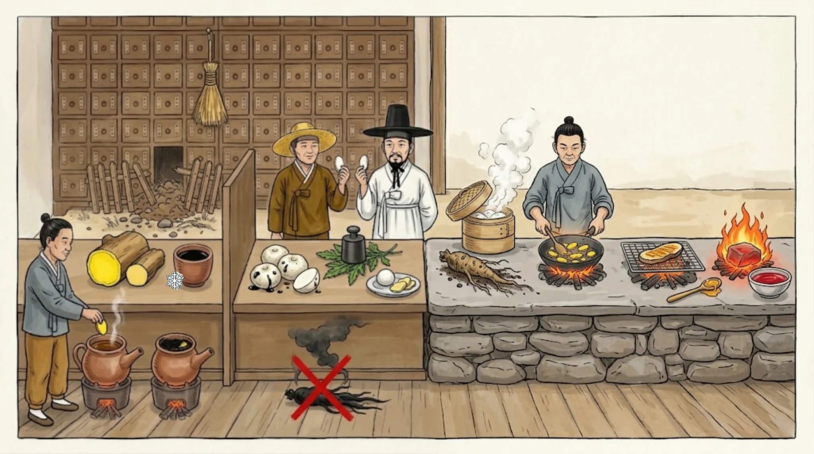
| 소품 | 잠그는 사실 (테스트 모드: 탭하여 확인) |
|---|---|
| 같은 한약방의 뒤뜰 작업 마당(s14u01 진열대 뒤로 돌아간 곳) — 왼쪽 삼분의 일은 약장 벽을 등진 진열대 두 칸(大黃 · 半夏, 앞 판과 같은 세로 칸막이), 오른쪽 삼분의 이는 돌로 쌓은 긴 작업대 위 修治 다섯 자리가 왼쪽부터 차례로(生 → 熟 → 炒 → 炙 → 煅). 벽에 짚 빗자루 하나. 사람 넷 — 大黃 칸 곁에서 약탕관에 조각을 떨어뜨리는 마을 남자, 半夏 칸 뒤의 농부(脾)·재상(肺), 작업대에서 팬을 볶는 마을 남자 왜? | 本草 ② 瀉·毒·修治 — 大黃(苦寒 瀉下攻積 · 後下) · 半夏(有毒 · 반드시 포제 · 降逆止嘔 · 反烏頭) · 修治 다섯(生·熟·炒·炙·煅) — 「독하고 거친 약은 손질해서 쓴다」: 瀉藥과 毒藥의 칸 뒤에 손질 마당 |
| 다리 — s14u01(補·溫 진열대)의 뒤뜰로 이었다 — 같은 가게의 「앞(補藥 진열)」과 「뒤(瀉藥·毒藥 손질)」. 修治 다섯은 사전 五化처럼 왼쪽부터 차례가 틀이고, 글자 넷(熟·炒·炙·煅)은 동작 직역이다. 사전 딥링크: 大(둘 중 하나가 두 배) · 苦(김 없는 검은 커피) · 降(내리누르는 추) · 瀉(짚 빗자루 — 틀 소품, 大黃 行에는 두지 않음) · 相反(붉은 X). 셀 소품: 大黃 토막 둘 · 약탕관 둘(用法 비교) · 흰 덩이 넷(개수 사실 없음). ◆ 개념 — 大黃 苦寒, 歸脾胃大腸肝心包, 瀉下攻積·淸熱瀉火·凉血解毒·逐瘀通經, 生用後下=瀉下 / 久煎·熟用=瀉下 약화·活血. 半夏 辛溫 有毒, 歸脾胃肺, 燥濕化痰·降逆止嘔·消痞散結, 生薑殺半夏毒(相殺) → 薑半夏·法半夏, 反烏頭(十八反). 修治 — 生(峻烈·有毒) · 熟(쪄 익힘, 生地→熟地) · 炒(볶음, 炒炭止血) · 炙(액체 보료 발라 구움, 蜜炙 補中潤肺) · 煅(세게 달굼, 淬). ▸ 단원 통합(2026-10-22) — s14p03·06·10(14행)을 한 장에. blind43 최종 2인(N4·M4) + 1차 2인(K4·L4): 단원 3/4 ✓(炮製·本草總論·用藥法 50~55%, M4만 補益藥 40%), 大黃 5~6 사실 · 半夏 재편집 뒤 6 사실(z45 60%) · 修治 다섯 글자 전원 ✓, 인물 4/4. z20 大黃 苦寒 70%. 잔결은 blind43_report.md. | |
| [大黃] 첫째 칸 진열대 위 — 단면이 샛노란 굵은 뿌리 토막과 그 옆구리에 맞닿은 보통 굵기의 같은 토막(굵은 쪽이 꼭 두 배, 사전 大) + 그 옆 손잡이 없는 질그릇의 김 없는 새까만 커피(사전 苦) + 그 잔 앞 작은 눈송이 하나(사전 寒 — s12u03에서 PIL 복사) 왜? | 大黃 — 苦, 寒 / 歸 脾·胃·大腸·肝·心包經 |
| 다리 — 실제 대황 단면이 노랗다(자형이 아니라 실물 다리). 커피=苦, 얼음 덩이=寒. ◆ 개념 — 攻下藥의 대표. 將軍이라 불릴 만큼 작용이 맹렬하다. ▸ 도구 교정 후 재판독(2026-08-29, 규칙 152·153) — ✗ **결손 — 스펙에 없는 소품 셋이 화면을 지배한다.** 커피잔(검은 액체) · 얼음 덩이 · 아래 선반의 구운 조각 둘은 **prop 어느 행에도 없다.** 게다가 §5 위반이다 — 얼음은 「뜻이 셋이라 혼자 두지 않는다」이고 寒은 눈송이가 지며, 김 나는 검은 커피는 苦 전담 기호다. [1] 「무너진 울타리+쏟아지는 흙」(瀉下攻積)은 화면 절반을 먹는데 판독자가 **나무결로 보고 판독 실패**했고, [3] 「삽으로 퍼내는 흙」의 삽이 없다. 大黃의 **大도 무기호**다. 판독자 총평 — 「6장 중 판독 실패도가 가장 높다」. ▸ 재작도 완료(2026-08-29) — ✓ **스펙 밖 소품 셋을 지웠다** — 커피잔(§5 苦 전담) · 얼음 덩이(§5 「혼자 두지 않는다」 위반) · 아래 선반의 구운 조각 둘. 그 자리에 [3]의 **삽으로 흙 퍼내기**를 넣어 「무너진 울타리 + 쏟아지는 흙」이 나무결이 아니라 흙으로 읽히게 했다. 1회차. ⚠ **大黃의 大는 여전히 무기호다**(규칙 147) — 굵은 뿌리가 그것을 진다고 볼 여지는 있으나 확정 기호가 아니다. ▸ 3차 재판독(2026-08-29, 규칙 150·153, blind3) — ✗ 재작도 후에도 실패 ⚠ ★ 신규 유령: 화덕 곁 삽 위 흙 = 灶心土(伏龍肝)로 읽혀 표제어가 黃土湯으로. 大黃의 大 여전히 무기호 ▸ 빈틈 메우기(2026-08-29) — **大에 다리를 놓았다**(규칙 147 — 이름 두 글자 중 하나만 그리면 다리가 아니다). 大 = 「같은 것 옆에서 두 배」 — §5 虛(삼분의 일로 줄어든 것)와 같은 규칙 92-b 문법이라 새 어휘가 0개다. 黃은 샛노란 단면이 이미 진다. (종전 소품 — 단면이 샛노란 굵은 뿌리) ▸ 빈틈 메우기(2026-08-29) — ⚠ 재작도 스펙 — 화면을 **왼쪽 위(무너진 울타리+흙더미+삽) ↔ 오른쪽 아래(도마 위 뿌리 둘 + 화덕 위 냄비 둘)** 로 갈라 배치한다. 삽과 불은 화면의 대각선 양 끝에 둔다. (종전 소품 — 단면이 샛노란 굵은 뿌리 — 그 바로 옆에 **같은 종류의 보통 굵기 뿌리 하나**가 나란히 눕고, 굵은 쪽이 그 두 배다) ▸ 재작도 5차(2026-08-31~2026-09-02, 규칙 161·162·164) — 삽과 스펙 밖 인물(밀짚모자 농부)을 지워 地黃 유령을 해체하고, 두 뿌리를 맞닿게 붙였다. blind5 — 1단계(생판) ✗ **황토탕 60%**: 삽이 없어도 「흙더미+부엌」 무대가 伏龍肝을 다시 불렀고 나사 프레스=아교·벽돌담=백출로 일곱 미가 조립됐다(규칙 161 확장 — 유령은 무대 전체에서 난다). 2단계(계통, 大 문법 제공) ✓ **大黃 85%** — 두 뿌리+노란 단면=大黃, 무너진 담=瀉下攻積, 노란 조각=後下, 검은 냄비=久煎 대비까지 전부 복원. 地黃 유령 소멸. ▸ 단원 통합(2026-10-22) — s14p03[0]에서 옮김. ▸ 통합판 손질(2026-10-22) — 원 낱장에는 寒을 지는 소품이 없었다(얼음 덩이는 §5 위반으로 빠짐). 사전 寒 = 눈송이를 苦 커피 잔 앞에 놓아 苦寒 두 글자가 한 자리에 — z20 판독 苦寒 ✓. | |
| [大黃] 첫째 칸 뒤 — 약장 서랍 벽 아래 무너진 나무 울타리 틈으로 쏟아져 나온 흙더미(흙덩이·잔돌·마른 풀뿌리) · 벽에 걸린 짚 빗자루 하나(이 마당의 간판 — 瀉) 왜? | 瀉下攻積 — 積滯를 뚫어 아래로 내보냄 |
| 다리 — 막혀 있던 것이 둑을 허물고 쏟아지는 장면. ◆ 개념 — 陽明腑證의 承氣湯이 大黃이 주역 — s13p02(→s13u01)의 뚜껑 잠긴 솥과 연결. ▸ 글자 사전 판정(2026-08-25, 규칙 120·127) — **瀉下의 瀉에는 짚 빗자루를 놓지 않는다.** §5의 빗자루는 **補瀉의 瀉**(s16p01[2]·s18p09[3]) 전담이라 本草 效能語에 놓으면 침구 보사로 딥링크가 잘못 걸린다. 무너진 둑으로 쏟아지는 흙더미가 瀉下 두 글자를 통째로 진다. ▸ 빈틈 메우기(2026-08-29) — 삽을 여기로 옮겼다. 두 가지를 한꺼번에 고친다 — ⓐ §5 「화덕 곁의 삽 위 흙 = 灶心土(伏龍肝)」 유령이 사라진다 ⓑ 흙더미가 **나무결이 아니라 흙으로** 읽힌다(1차 판독 실패 원인). 삽은 이 행의 증거물이지 따로 한 사실을 지지 않는다(규칙 ④ 위반 아님). (종전 소품 — 무너진 나무 울타리 사이로 쏟아져 나오는 흙더미) (종전 소품 — 무너진 나무 울타리 사이로 쏟아져 나오는 흙더미 — 흙덩이와 잔돌과 마른 풀뿌리가 섞였고, 흙더미에 **삽 한 자루가 꽂혀** 있다 (화면 왼쪽 위, 불에서 가장 먼 자리)) ▸ 재작도 5차(2026-09-02) — 삽을 지웠다. 삽은 흙과 합쳐져 「地」를 완성해 표제어를 地黃으로 옮겨 놓았다(blind4, 규칙 161). 흙더미의 질감(덩이·잔돌·풀뿌리)만으로 흙이 읽힌다. ⚠ 생판 독자는 이 흙더미를 灶心土로 읽는다(blind5 1단계) — 이 판은 계통 문법(약재 실물이 표제어) 위에서 선다. ▸ 단원 통합(2026-10-22) — s14p03[1]에서 옮김. | |
| [大黃] 첫째 칸 앞 — 화로 위 흙빛 약탕관에 갈색 달인 물이 반쯤, 곁에 선 마을 남자의 손이 노란 조각 하나를 막 떨어뜨림(가는 김 한 줄) 왜? | 後下 — 나중에 넣어 살짝만 달인다 |
| 다리 — 이미 다른 약이 끓고 있는 냄비에 뒤늦게 투입. ◆ 개념 — 오래 달이면 사하력이 크게 준다. 生用·後下=瀉下, 오래 달이거나 熟用=活血 쪽으로 성질이 바뀐다. ▸ 재작도 5차(2026-09-02) — 왼쪽 냄비 속 어두운 조각들을 지우고 샛노란 조각 하나만 방금 넣은 듯 반쯤 잠기게 띄웠다. blind5 2단계에서 「後下」로 읽혔다. ▸ 재작도 8차(2026-10-10, 규칙 173) — blind10에서 **補中益氣湯 40%**(大黃 2순위 30%). 종전 「다 끓은 냄비」가 **찰랑한 국물 + 흰 김 + 같은 그릇 셋 중 가운데** 꼴이라 §5 【補】+【氣】+【中】을 재현했다. 瀉下藥 판에 補 꼴 솥이 있었다. 역검색: 【苦】= 김 나는 검은 커피 — 그래서 **검게·김 많이**도 못 쓴다. 흙빛 탕관·갈색 물·반쯤·김 한 줄·**떨어뜨리는 손**(後下의 「마지막에」를 행위로)로 짓는다. 탕관은 둘뿐(中 금지). ▸ 단원 통합(2026-10-22) — s14p03[2]에서 옮김. | |
| [大黃] 첫째 칸 앞 — 그 옆 같은 약탕관(김 없음) 속, 같은 노란 조각이 오래 끓어 검게 문드러진 죽 왜? | 用法에 따라 效가 갈린다 |
| 다리 — 같은 약이 쓰는 법에 따라 다른 약이 된다는 것이 이 패널의 축. ◆ 개념 — 附子(先煎으로 독을 줄임)와 정반대 방향의 用法 사실. ▸ 빈틈 메우기(2026-08-29) — 삽을 [1]로 보내고 이 자리를 바꿨다. 「같은 것 둘, 다른 결과」가 用法 갈림의 정본 문법이다 — [2]의 샛노란 조각(後下)과 나란히 놓여야 성립한다. 종전 「삽으로 퍼내는 흙」은 用法을 짓지 못했고 灶心土 유령의 원인이었다. (종전 소품 — 삽으로 퍼내는 흙) (종전 소품 — 그 옆 냄비 — 같은 노란 조각이 처음부터 함께 들어가 오래 끓은 나머지 **검게 문드러져 형체가 풀렸다**) ▸ 재작도 5차(2026-09-02) — 두 냄비가 나란히 완전하게 보이도록 다섯 라운드를 썼다(옮기기 지시는 무시되고 「지우고 새로 놓기」만 먹혔다 — 규칙 151 재확인). blind5 2단계에서 「오래 달이거나 포제하면 검게 변하며 사하력이 꺾인다」로 읽혔다. ▸ 단원 통합(2026-10-22) — s14p03[3]에서 옮김. | |
| [半夏] 둘째 칸 진열대 위 왼쪽 — 새까만 액체 방울이 맺혀 흘러내리는 탁구공만 한 둥근 흰 덩이 넷(하나는 반으로 갈라 둠) 왜? | 生半夏 — 有毒, 내복 금기 ★반드시 포제 |
| 다리 — ★검은 방울=有毒 기호(附子와 공용). 生으로는 쓰지 않는다. ◆ 개념 — 半夏 辛·溫, 有毒 / 歸 脾·胃·肺經. 生用은 외용에 한한다. ▸ 이름 회수(2026-08-24, 규칙 120) — **半夏 = 「여름의 절반」** — 夏至 무렵(여름 반쯤)에 덩이줄기를 캐서 붙은 이름이다. ⚠ 지금 그림에 그 다리가 없다 — 반쯤 기운 해 하나면 선다(재작도 2순위). ▸ 단원 통합(2026-10-22) — s14p06[0]에서 옮김. | |
| [半夏] 둘째 칸 진열대 뒤 — 노란 밀짚모자 농부(脾)와 흰 도포 재상(肺)이 같은 흰 조각을 하나씩 나눠 듦 왜? | 歸 脾·胃·肺 — 燥濕化痰 |
| 다리 — 밀짚모자=脾, 흰 도포=肺. 고추=辛. ◆ 개념 — 濕痰·寒痰의 요약. 二陳湯의 군약. ▸ 단원 통합(2026-10-22) — s14p06[1]에서 옮김. | |
| [半夏] 둘째 칸 진열대 위 가운데 — 풀 한 포기를 눌러 놓은 채 멈춘 쇠 저울추(사전 降) 왜? | 降逆止嘔 — 치밀어 오르는 것을 눌러 내림 |
| 다리 — 위로 솟는 것을 눌러 내리는 동작. ◆ 개념 — 胃氣上逆의 구역·구토에 쓴다. 小柴胡湯에도 들어간다(s14p09 연결). ▸ 단원 통합(2026-10-22) — s14p06[2]에서 옮김. | |
| [半夏] 둘째 칸 앞 바닥 — 검은 연기가 피어오르는 검은 뿌리 위에 굵은 붉은 X(相反 공용 기호) 왜? | 烏頭 — 半夏와 相反(十八反) ★함께 쓰면 안 됨 |
| 다리 — ★붉은 X = 배합 금기(相反) 공용 기호(s14p01(→s14u01) 藜蘆와 동일). ◆ 개념 — 烏頭 反 半夏·瓜蔞·貝母·白蘞·白及. 附子가 烏頭의 자근이라 s14p02(→s14u01)와 직결 — 세 패널이 삼각으로 물린다. ▸ 이름 회수(2026-08-24, 규칙 120) — ⚠ **소품 충돌** — s14p01[5](→s14u01) 藜蘆와 같은 소품이다. 烏頭의 **烏 = 검다, 頭 = 머리(어미뿌리)** — **검은 어미 덩이뿌리 하나**로 지으면 이름이 서고, s14p02[0] 附子(그 어미에 붙은 자식)와 **한 쌍**이 되어 둘 다 강해진다. ▸ 단원 통합(2026-10-22) — s14p06[3]에서 옮김. | |
| [半夏] 둘째 칸 진열대 위 오른쪽 접시 — 둥근 흰 덩이 하나 + 껍질 벗겨 얇게 썬 노란 생강 조각(薑半夏) 왜? | 薑半夏 · 法半夏 — 포제품 |
| 다리 — 포제하면 독이 눌리고 쓰임이 갈린다. ◆ 개념 — 生薑이 半夏의 독을 죽인다(生薑殺半夏毒) = 七情의 相殺 — 칠정 도해 참조. ▸ 단원 통합(2026-10-22) — s14p06[4]에서 옮김. | |
| [修治] 돌 작업대 첫째 자리 — 흙 묻고 검은 방울이 맺힌 생뿌리 왜? | 生 — 가공하지 않음(有毒·성질이 峻烈) |
| 다리 — 검은 방울=有毒 기호. 다섯 상태를 왼→오 한 줄로 배열. ◆ 개념 — 生用은 성질이 그대로라 사하·해독·소종에 강하지만 독성·자극도 크다. ▸ 단원 통합(2026-10-22) — s14p10[0]에서 옮김. | |
| [修治] 돌 작업대 둘째 자리 — 김이 솟는 대나무 찜통 왜? | 熟 — 쪄서 익힘 |
| 다리 — 수증기로 익힘. ◆ 개념 — 生地黃을 쪄서 熟地黃으로 만들면 淸熱凉血에서 補血滋陰으로 성질이 바뀐다 — 포제가 약을 바꾸는 대표례. ▸ 숨은 자산 회수(2026-08-29, 규칙 120·150) — **네 글자가 전부 동작 직역이다** — 찜통=熟(쪄 익힘) · 팬 볶기=炒 · 꿀 발라 굽기=炙 · 달군 돌=煅. 「修治 다섯」은 수 다리이면서 동시에 글자 다리 넷을 겸한다. ▸ 단원 통합(2026-10-22) — s14p10[1]에서 옮김. | |
| [修治] 돌 작업대 셋째 자리 — 회청색 저고리 마을 남자가 불 위 팬에 노란 조각을 볶음 왜? | 炒 — 볶음 |
| 다리 — 기름 없이 팬에 볶기. ◆ 개념 — 성질을 부드럽게 하고 건조·수렴 쪽으로 돌린다(炒炭하면 止血). ▸ 단원 통합(2026-10-22) — s14p10[2]에서 옮김. | |
| [修治] 돌 작업대 넷째 자리 — 석쇠 위에서 꿀 발라 굽는 조각 + 곁의 꿀 묻은 나무 숟가락 왜? | 炙 — 액체 보료를 발라 구움(蜜炙 등) |
| 다리 — 꿀 숟가락이 곧 蜜炙 표시. s14p05(→s14u01)의 炙黃芪와 같은 기호. ◆ 개념 — 蜜炙는 補中·潤肺 쪽으로 약성을 끌고 간다. ▸ 단원 통합(2026-10-22) — s14p10[3]에서 옮김. | |
| [修治] 돌 작업대 다섯째 자리 — 불 속에 빨갛게 달군 돌 + 곁의 붉은 액체 그릇(담금질) 왜? | 煅 — 세게 달굼(때로 담금질) |
| 다리 — 고온으로 굽고 식초 등에 담금(淬). ◆ 개념 — 광물·패각류를 부서지기 쉽게 만들어 유효 성분을 내게 한다. ▸ 단원 통합(2026-10-22) — s14p10[4]에서 옮김. | |
🔗 方劑 — 한약방 조제실 (四君子湯·四物湯·八珍湯 · 六味地黃丸·腎氣丸 · 小柴胡湯) 본초·방제 #s14u03
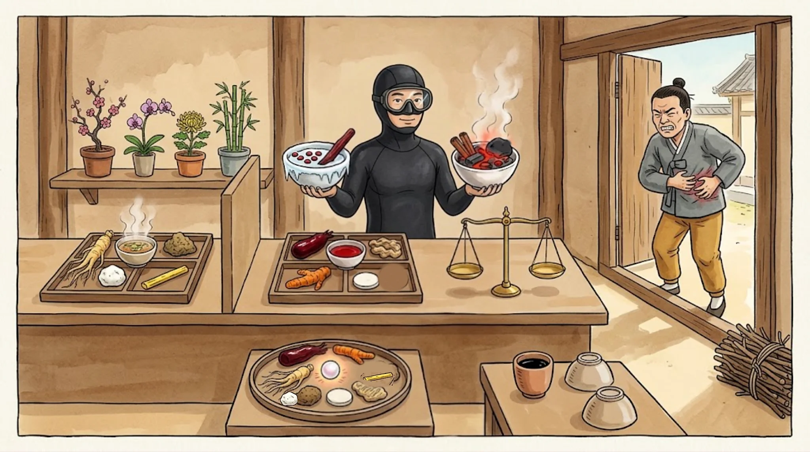
| 소품 | 잠그는 사실 (테스트 모드: 탭하여 확인) |
|---|---|
| 같은 한약방의 안쪽 조제실(약 짓는 방) — 긴 나무 탁자가 왼쪽 끝에서 오른쪽 삼분의 이까지, 뒤 벽은 선반. 오른쪽 삼분의 일은 밖으로 나가는 문간(문틀·문지방). 탁자 위 처방 쟁반들 = 「약재 몇 가지가 한 쟁반에」. 사람 둘 — 탁자 뒤 잠수부(腎), 문지방의 마을 남자 왜? | 方劑 — 基本方의 짝 구조: 四君子湯(補氣) ↔ 四物湯(補血) → 八珍湯(氣血雙補) / 六味地黃丸(補陰) ↔ 腎氣丸(補陽, 六味 + 桂·附) / 小柴胡湯(和解少陽 — 半表半裏·胸脇苦滿·口苦·默默不欲飮食) |
| 다리 — s14u01 진열대(補藥) · s14u02 뒤뜰(瀉·毒·修治)에 이어 같은 가게의 세 번째 방 — 약재를 짝지어 처방을 짓는 곳. 사전 딥링크: 補(찰랑한 따뜻한 국물) + 氣(김) = 補氣 · 補-b(붉은 액체) = 補血 · 地黃(검붉은 뿌리) · 腎(잠수부) · 陰(살아 있는 불과 맞댄 얼음) · 門·表·裏(문지방 = 半表半裏) · 苦(김 없는 커피) · 和(수평 저울). 이름 다리: 四君子 = 매·난·국·죽 화분 넷 · 八珍 = 진주 · 六味 = 환약 여섯 · 柴 = 섶 단. 셀 소품: 환약 여섯 ×2 · 네 칸 ×2 · 여덟 · 화분 넷. ◆ 개념 — 四君子湯 人蔘·白朮·茯苓·甘草 補氣健脾 / 四物湯 熟地黃·當歸·白芍·川芎 補血調血 / 八珍湯 = 四君子 + 四物, + 黃芪·肉桂 = 十全大補湯. 六味地黃丸 熟地·山茱萸·山藥(三補) + 澤瀉·丹皮·茯苓(三瀉) 滋補腎陰 / 腎氣丸(金匱) = 六味 + 桂枝(肉桂)·附子 溫補腎陽 — 원방은 腎氣丸, 六味는 錢乙이 桂附를 뺀 것. 小柴胡湯 柴胡·黃芩·半夏·生薑·人蔘·甘草·大棗 和解少陽 — 往來寒熱·胸脇苦滿·默默不欲飮食·心煩喜嘔. ▸ 단원 통합(2026-10-22) — s14p07·08·09(14행, 라벨 하나를 소품 행으로)를 한 장에. blind45 최종 2인 Q4 補益 85% · R4 65%(1차 O4·P4 70%·70%): 四君子湯(매난국죽)·四物湯·八珍湯(진주)·六味地黃丸↔腎氣丸 이름 전원 ✓, 和 ✓, 인물 2/2. 小柴胡湯은 띠 단독(z95 少陽病 60% — 半表半裏·胸脇苦滿·柴)에서만 ✓, 판 전체에서는 補 쪽으로 묻힘. 바탕은 3.1 Pro(Argon 정지). 잔결은 blind45_report.md. ▸ 잔결(2026-10-22) — 小柴胡湯 구역은 띠 판독에서는 半表半裏·胸脇苦滿·柴까지 서지만 판 전체에서는 補益 넷에 묻혀 「補 사용주의·腹痛」으로 샌다. 다음 손질 후보: 환자 곁 往來寒熱(문 밖 찬 바람 + 문 안 불꽃). 바탕은 3.1 Pro(Argon 정지) — 섶 단·엎은 그릇은 사전 밖. | |
| [四君子·四物] 탁자 왼쪽 — 네 칸으로 나뉜 네모 쟁반(사람 모양 인삼 · 흰 덩이 茯苓 · 흙빛 덩이 白朮 · 노란 막대 甘草) + 한가운데 김이 서려 오르는 찰랑한 국물 사발(사전 補 + 氣) · 그 뒤 선반의 매·난·국·죽 화분 넷(사군자) 왜? | 四君子湯 — 人蔘·白朮·茯苓·甘草 / 補氣 기본방 |
| 다리 — 풀무=바람을 불어넣는 것=氣. 네 칸에 하나씩=四君子의 넷. ◆ 개념 — 補氣의 기본방. 君子처럼 성질이 온화해 치우침이 없다는 뜻. ▸ 이름 회수(2026-08-24, 규칙 120) — **四君子 = 네 가지 君子** — 人蔘·白朮·茯苓·甘草가 모두 성질이 順하고 치우침이 없어 「군자」라 불렀다. ⚠ 지금 그림은 「네 칸」으로 四만 지고 君子를 못 진다 — 갓 쓴 선비 넷이면 선다(재작도 2순위). ▸ 단원 통합(2026-10-22) — s14p07[0]에서 옮김. | |
| [四君子·四物] 그 오른쪽 — 똑같은 꼴의 네 칸 쟁반(검붉은 뿌리 地黃 · 주황 뿌리 當歸 · 흰 원반 白芍 · 구불한 덩이 川芎) + 한가운데 붉은 액체가 가득한 사발(사전 補-b 血) 왜? | 四物湯 — 熟地黃·當歸·白芍·川芎 / 補血 기본방 |
| 다리 — 붉은 그릇=血. 검은 것=熟地黃, 주황 뿌리=當歸(s14p04(→s14u01)와 동일 사물), 흰 원반=白芍, 구불한 것=川芎. ◆ 개념 — 補血의 기본방. 血虛의 조상방. ▸ 이름 회수(2026-08-24, 규칙 120) — **四物 = 네 가지 물(物)** — 熟地黃·當歸·白芍·川芎. 四君子가 氣를 채우면 四物은 血을 채운다. ⚠ 「四」만 있고 「物」이 없다 — 둘 다 四라서 **세트 안에서 변별값이 0**이다. ▸ 단원 통합(2026-10-22) — s14p07[1]에서 옮김. | |
| [四君子·四物] 두 쟁반 앞 낮은 단 — 큰 둥근 쟁반 하나에 여덟 가지가 모두 담기고 한가운데 진주 한 알(珍) 왜? | 八珍湯 — 四君子 + 四物 = 氣血雙補 |
| 다리 — 두 쟁반을 합친 것이 그대로 세 번째 쟁반. ◆ 개념 — 氣血이 함께 허할 때. 여기에 黃芪·肉桂를 더하면 十全大補湯. ▸ 이름 회수(2026-08-24, 규칙 120) — **八珍 = 여덟 가지 보배(珍)** — 四君子 넷 + 四物 넷. ⚠ 「여덟」은 있고 「珍」이 없다 — 보석 하나면 선다. ▸ 단원 통합(2026-10-22) — s14p07[2]에서 옮김. | |
| [四君子·四物] 두 네 칸 쟁반이 좌우로 나란히 — 꼴이 같고 담긴 것(김 ↔ 붉은 액체)만 다름 왜? | 氣血은 짝 — 기본방도 짝 |
| 다리 — 구조가 같고 내용만 다른 두 쟁반. ◆ 개념 — 氣를 보하면 血이 생기고(氣能生血) 血이 있어야 기가 머문다(血能載氣). ▸ 단원 통합(2026-10-22) — s14p07[3]에서 옮김. | |
| [六味·腎氣] 탁자 가운데 뒤 — 검은 잠수복·후드·고글의 잠수부(腎)가 양손에 흰 사발 하나씩 왜? | 두 방 모두 腎을 겨눈다 |
| 다리 — 오행왕국의 腎 캐릭터가 양손에 하나씩. ◆ 개념 — 같은 뿌리(六味)에서 갈라진 두 처방이라 한 인물이 양손에 든 구도. ▸ 3차 재판독(2026-08-29, 규칙 150·153, blind3) — △ 수 다리 재확인(왼쪽 6알 명확) + 계피·부자 구성 인지 ⚠ 六味地黃丸 이름까지는 못 감 · 검은 전신복이 단독으론 안 읽힘(규칙 148) ▸ 빈틈 메우기(2026-08-29) — ⚠ 3차 판독 — 「검은 전신복이 단독으론 안 읽힌다」(규칙 148 — 기호는 이웃과 함께 읽힌다). ⚠ 재작도 스펙 — 잠수복 인물에게 **검은 고글과 검은 후드**를 확실히 씌워 §5 腎 캐릭터의 세 요소(잠수복·후드·고글)를 다 갖춘다. s11p05(→s11u01)·s20p05의 같은 인물과 한눈에 짝지어져야 한다. (종전 소품 — 가운데 검은 잠수복 인물) ▸ 재작도 5차(2026-09-02, 규칙 148) — 후드·고글로도 3갈래(잠수/보호복/炒炭)로 갈리던 인물에 오리발을 신겼다. blind5 1단계(생판)에서 즉시 「잠수부 = 腎(수장)」으로 섰다 — 보호복·炒炭에는 오리발이 없다. ▸ 단원 통합(2026-10-22) — s14p08[0]에서 옮김. | |
| [六味·腎氣] 왼손 사발 — 가장자리에 얼음·성에가 서림 + 붉은 환약 여섯(위 3·아래 3) + 안쪽에 기댄 검붉은 뿌리 조각(사전 地黃) 왜? | 六味地黃丸 — 補陰(滋補腎陰) |
| 다리 — 환약 여섯=六味. 차가운 쪽=陰. ◆ 개념 — 熟地黃·山茱萸·山藥(三補) + 澤瀉·牡丹皮·茯苓(三瀉) — 보하면서 동시에 덜어내는 三補三瀉 구조. ▸ 이름 회수(2026-08-24, 규칙 120) — **六味地黃丸** — 六味(여섯 맛=여섯 약)·地黃(찐 숙지황이 君). ⚠ 환약 여섯이 「六」을 지는데 **「地黃」을 지는 소품이 없다.** s13p10[4](→s13u03)이 이미 「검붉은 뿌리 조각 = 地黃」을 확립해 놓았으니 그 뿌리 하나를 그릇에 넣으면 선다 — **s16p04[5]까지 한꺼번에 상환된다**(재작도 1순위). ▸ 수 다리 실측·수리(2026-08-29, 규칙 146) — 붉은 환약이 일곱이었고 그릇 밖 공중에도 여섯 알이 더 떠 있었다. **六味地黃丸에는 이름 다리가 이 수 하나뿐이라** 六가 깨지면 그 칸에서 이름을 되짚을 길이 없다. 공중의 알약을 모두 지우고 양쪽 그릇을 위 3·아래 3의 **여섯**으로 맞췄다. 재검산 — 왼손 6 · 오른손 6 · 공중 0. ▸ 빈틈 메우기(2026-08-29) — **地黃에 다리를 놓는다** — s13p10[4](→s13u03)이 이미 「검붉은 뿌리 조각 = 地黃」을 확립해 놓았으니 새 어휘가 0개다(규칙 73 딥링크). 이로써 六(환약 여섯)·味(약재)·地黃(뿌리 조각)이 다 서서 **六味地黃丸의 이름이 그림에서 회수된다.** ⚠ 김을 뺀다 — 김은 [2]의 氣 전담으로 넘긴다. (종전 소품 — 왼손: 김 나는 그릇의 붉은 환약 여섯 + 얼음 낀 컵) (종전 소품 — 왼손: **얼음이 낀 그릇** 안의 붉은 환약 여섯(위 3 · 아래 3) + 그 곁에 **검붉은 뿌리 조각 하나**) ▸ 재작도 5차(2026-09-02, 규칙 161) — 뿌리를 접시 밑 바닥(화덕 곁 → 「장작」)에서 얼음 그릇 **안**으로 옮기고, 바닥의 별도 얼음 그릇을 지워 온도축을 왼손 그릇에 되돌렸다. 잔가닥을 둘만 남겼다(여럿이면 지네로 읽힘 — 중간 라운드에서 확인). 수 다리 실측 왼 3+3 · 오른 3+3. blind5 ✓ **六味地黃丸 vs 八味(腎氣丸) 70%** — 이름이 1단계에서 섰다. ⚠ 판독자: 「숙지황이면 흑색이어야」 — 검붉음이 우슬·단삼 후보를 남긴다(§5 地黃=검붉은 뿌리 조각과의 조정은 보류). ▸ 단원 통합(2026-10-22) — s14p08[1]에서 옮김. | |
| [六味·腎氣] 오른손 사발 — 빨간 숯불 + 그 위 흰 김(氣) + 계피 다발 + 검은 방울 맺힌 검은 덩이(附子) + 붉은 환약 여섯 왜? | 腎氣丸 — 補陽(溫補腎陽) |
| 다리 — 육미에 불(계피·부자)을 더한 것이 그대로 그림. ※桂枝는 s13p01(→s13u01)과 중복 소품 — 방제 필수 구성이라 예외 허용(RULES §3-17 예외). ◆ 개념 — 六味地黃丸 + 桂枝(肉桂)·附子 = 腎氣丸. 少火生氣 — 음 속에서 양을 구한다. ▸ 이름 회수(2026-08-24, 규칙 120) — **腎氣丸** — 腎의 氣를 데운다. ⚠ 「腎」도 「氣」도 지는 소품이 없다. 라이브러리에 이미 **검은 잠수부 = 腎**(s09p05(→s09u01)·s11p05(→s11u01)·s20p05)과 **풀무 = 氣**(s14p07[0])가 있다 — 새 어휘 없이 둘을 놓기만 하면 선다. **s16p04[2]까지 상환된다**. ▸ 글자 사전 판정(2026-08-25, 규칙 120·127) — ⚠ **그림 수정 대기 · 새 어휘 0개** — 腎氣丸의 氣를 지는 소품이 없다. ⚠ why에 적혔던 「풀무 = 氣」 처방은 **철회한다** — 풀무는 s14p07[0]이 補氣로 쓰고 있어 氣의 기호가 둘이 된다. 교체안: **왼손 [1]의 「김 나는 그릇」에서 김을 걷어, 오른손 환약 위로 곧게 피어오르는 흰 김 한 줄기로 옮긴다.** 김은 지금 **엉뚱한 손**(六味地黃丸 — 이름에 氣가 없고 補陰이라 뜻과도 어긋난다)에 붙어 있다. **s16p04[2]까지 함께 상환된다.** ▸ 빈틈 메우기(2026-08-29) — **氣에 다리를 놓는다** — §5 확정 기호 「氣 = 서린 흰 김」을 그대로 쓴다(풀무는 2026-08-25에 철회됐다). 腎은 [0]의 검은 잠수복 인물이 이미 진다. 이로써 **腎氣丸의 이름도 회수된다** — 腎(잠수부) + 氣(김) + 불(溫補陽). (종전 소품 — 오른손: 불 + 계피 다발 + 검은 덩이 + 환약) ▸ 재작도 5차(2026-09-02) — 환약 여섯이 모두 보이게 했다. blind5: 「6알 + 계피·부자 = 八味」로 관계까지 읽혔다. ⚠ 회색 덩이(附子)가 광물(자석)로 갈릴 수 있다는 지적 — 다음 손질 후보. ▸ 단원 통합(2026-10-22) — s14p08[2]에서 옮김. | |
| [六味·腎氣] 왼쪽 얼음 ↔ 오른쪽 불 — 살아 있는 불과 맞댄 얼음(사전 陰 갈림) 왜? | 같은 뼈대에 무엇을 더하느냐로 陰↔陽이 갈린다 |
| 다리 — 온도 대비가 곧 補陰/補陽. ◆ 개념 — 어느 쪽이 원방이고 어느 쪽이 파생인지가 함정: 腎氣丸(金匱)이 먼저이고 六味(小兒藥證直訣·錢乙)가 여기서 桂附를 뺀 것 ※교재 대조. ▸ 단원 통합(2026-10-22) — s14p08[3]에서 옮김. | |
| [小柴胡] 오른쪽 끝 — 문지방 위에 선 마을 남자, 몸 반은 방 안 반은 문 밖(사전 門·表·裏 = 半表半裏) 왜? | 半表半裏 — 少陽病의 자리 |
| 다리 — 문 안도 밖도 아닌 자리. ★往來寒熱은 이 그림에 없다 — s13p03(→s13u01)(少陽病)의 좌우 명암·멈춘 추 참조. ◆ 개념 — 汗法·下法을 모두 쓸 수 없어 和解法만 가능한 병위. ▸ 단원 통합(2026-10-22) — s14p09[0]에서 옮김. | |
| [小柴胡] 그 남자가 한 손으로 옆구리를 꾹 짚고 찡그림 왜? | 胸脇苦滿 — 소시호탕증의 대표 소견 |
| 다리 — 足少陽膽經이 지나는 자리. ◆ 개념 — 往來寒熱·胸脇苦滿·默默不欲飮食·心煩喜嘔 = 四大 주증. ▸ 단원 통합(2026-10-22) — s14p09[1]에서 옮김. | |
| [小柴胡] 문간 안쪽 작은 밥상 — 손잡이 없는 질그릇의 김 없는 새까만 커피(사전 苦) 왜? | 口苦 — 少陽 제강 |
| 다리 — 커피=苦(오미 사전). ◆ 개념 — 口苦·咽乾·目眩이 少陽之爲病. ▸ 단원 통합(2026-10-22) — s14p09[2]에서 옮김. | |
| [小柴胡] 같은 밥상 — 엎어 놓은 밥그릇·국그릇 왜? | 默默不欲飮食 — 먹기 싫어함 |
| 다리 — 손대지 않고 엎어둔 그릇. ◆ 개념 — 소양병의 소화기 증상. ▸ 단원 통합(2026-10-22) — s14p09[3]에서 옮김. | |
| [小柴胡] 탁자 오른쪽 끝 — 양팔이 수평으로 멎은 놋쇠 저울(사전 和) 왜? | 和解 — 어느 쪽으로도 몰지 않는다 |
| 다리 — 수평을 이룬 저울=화해법의 원리. ◆ 개념 — 柴胡·黃芩(邪를 풀고 열을 식힘) + 半夏·生薑(구역을 내림) + 人蔘·甘草·大棗(정기를 붙듦) — 밀고 당김의 균형. ▸ 숨은 자산 회수(2026-08-29, 규칙 120·150) — **균형 잡힌 저울 = 和 직역**(어느 쪽으로도 기울지 않음). 和解의 和를 이 저울이 진다. 판독자가 「저울=衡」으로 읽었다. ※[5]에 적힌 대로 柴胡는 여전히 무기호다. ▸ 단원 통합(2026-10-22) — s14p09[4]에서 옮김. | |
| [小柴胡] 문 곁 벽에 기대 세운 섶나무 한 단(柴 — 小柴胡湯의 이름 다리) 왜? | 小柴胡湯 · 柴胡 — 柴 = 섶(땔나무): 섶 단이 이 칸의 이름을 진다 |
| 다리 — ▸ 이름 회수(2026-08-24, 규칙 120) — ⚠ **검사망 밖에 있던 구멍**(2026-08-24). 다섯 행이 半表半裏·胸脇苦滿·口苦·默默不欲飮食·和解를 지는데 **柴胡 소품 자체가 없다.** 柴 = **섶(땔나무)**이다 — 섶나무 한 단이면 이름이 선다(재작도 2순위). ▸ 단원 통합(2026-10-22) — s14p09[5]에서 옮김. | |
🔗 七情 배합 관계도 — 일곱 관계(도해) 본초·도해 도해 · 문항 9 #s14p11
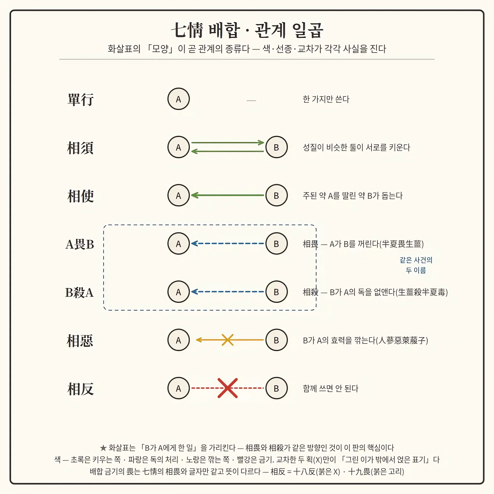
| 소품 | 잠그는 사실 (테스트 모드: 탭하여 확인) |
|---|---|
| 화살표의 모양이 곧 관계의 종류 — 색·선종·교차가 각각 사실을 진다 왜? | 七情 = 單行 · 相須 · 相使 · 相畏 · 相殺 · 相惡 · 相反 ★화살표는 「B가 A에게 한 일」을 가리킨다 |
| 다리 — 도해는 자가테스트·역방향 판독의 대상이 아니다(CANON 74). 범례를 그림 안에 갖고 있다. ▸ 정산(2026-08-22, 규칙 111) — 무대 자리: 相畏(十九畏)·相反(十八反) → s14p01(→s14u01)·s14p06(→s14u02). 相須·相使·相惡·單行은 아직 자리 없음 — 오답 기록 0회라 후순위 | |
| 초록 양방향 / 초록 한방향 왜? | 相須(서로 키운다) / 相使(주된 약 A를 딸린 약 B가 돕는다) |
| 다리 — 도해는 자가테스트·역방향 판독의 대상이 아니다(CANON 74). 범례를 그림 안에 갖고 있다. ▸ 정산(2026-08-22, 규칙 111) — 무대 자리: 相畏(十九畏)·相反(十八反) → s14p01(→s14u01)·s14p06(→s14u02). 相須·相使·相惡·單行은 아직 자리 없음 — 오답 기록 0회라 후순위 | |
| 파란 점선 두 줄, 화살표가 둘 다 B→A인 한 덩어리 왜? | 相畏(A畏B) ↔ 相殺(B殺A) — 같은 사건의 두 이름이다 (半夏畏生薑 = 生薑殺半夏毒, 작용하는 쪽은 둘 다 生薑) |
| 다리 — 도해는 자가테스트·역방향 판독의 대상이 아니다(CANON 74). 범례를 그림 안에 갖고 있다. ▸ 정산(2026-08-22, 규칙 111) — 무대 자리: 相畏(十九畏)·相反(十八反) → s14p01(→s14u01)·s14p06(→s14u02). 相須·相使·相惡·單行은 아직 자리 없음 — 오답 기록 0회라 후순위 | |
| 노란 한 방향 화살표가 가운데서 X로 끊긴다 왜? | 相惡 — B가 A의 효력을 깎는다 (人蔘惡萊菔子). 서로가 아니라 한 방향이다 |
| 다리 — 도해는 자가테스트·역방향 판독의 대상이 아니다(CANON 74). 범례를 그림 안에 갖고 있다. ▸ 정산(2026-08-22, 규칙 111) — 무대 자리: 相畏(十九畏)·相反(十八反) → s14p01(→s14u01)·s14p06(→s14u02). 相須·相使·相惡·單行은 아직 자리 없음 — 오답 기록 0회라 후순위 | |
| 붉은 굵은 X 왜? | 相反 — 함께 쓰면 안 된다 |
| 다리 — 도해는 자가테스트·역방향 판독의 대상이 아니다(CANON 74). 범례를 그림 안에 갖고 있다. ▸ 정산(2026-08-22, 규칙 111) — 무대 자리: 相畏(十九畏)·相反(十八反) → s14p01(→s14u01)·s14p06(→s14u02). 相須·相使·相惡·單行은 아직 자리 없음 — 오답 기록 0회라 후순위 | |
| 배합 금기는 七情의 相畏와 글자만 같고 뜻이 다르다 왜? | 相反=十八反(붉은 X) · 相畏(금기)=十九畏(붉은 고리) — 카드 트랙 s14p01(→s14u01)·s14p06(→s14u02)이 진다 |
| 다리 — 도해는 자가테스트·역방향 판독의 대상이 아니다(CANON 74). 범례를 그림 안에 갖고 있다. ▸ 정산(2026-08-22, 규칙 111) — 무대 자리: 相畏(十九畏)·相反(十八反) → s14p01(→s14u01)·s14p06(→s14u02). 相須·相使·相惡·單行은 아직 자리 없음 — 오답 기록 0회라 후순위 | |
도해 문항 9 펼치기
| 1. 七情의 「單行」이란? | 한 가지만 쓴다本草 총론 七情 / 神農本草經 序例 |
| 2. 七情의 「相須」이란? | 성질이 비슷한 둘이 서로 키운다 — 양방향本草 총론 七情 / 神農本草經 序例 |
| 3. 七情의 「相使」이란? | 주된 약 A를 딸린 약 B가 돕는다 — 한 방향本草 총론 七情 / 神農本草經 序例 |
| 4. 七情의 「相畏」이란? | A의 독·부작용이 B에게 억눌린다 (半夏畏生薑)本草 총론 七情 / 神農本草經 序例 |
| 5. 七情의 「相殺」이란? | B가 A의 독을 없앤다 (生薑殺半夏毒) — 相畏와 같은 사건의 두 이름本草 총론 七情 / 神農本草經 序例 |
| 6. 七情의 「相惡」이란? | B가 A의 효력을 깎는다 (人蔘惡萊菔子) — 한 방향本草 총론 七情 / 神農本草經 序例 |
| 7. 七情의 「相反」이란? | 함께 쓰면 독·부작용이 난다 — 十八反本草 총론 七情 / 神農本草經 序例 |
| 8. 相畏와 相殺은 어떻게 다른가? | 다르지 않다 — **같은 사건을 어느 쪽에서 보느냐**의 차이다. 半夏畏生薑 = 生薑殺半夏毒, 작용하는 쪽은 둘 다 生薑本草 총론 七情 |
| 9. 배합 금기의 「相畏」와 七情의 「相畏」는 같은가? | 글자만 같고 다르다 — 배합 금기의 十九畏는 「함께 쓰지 마라」이고, 七情의 相畏는 「독이 눌린다」로 오히려 이롭다本草 총론 / 十九畏 |
🔗 四氣五味 좌표(도해) 본초·도해 도해 · 문항 2 #s14p12
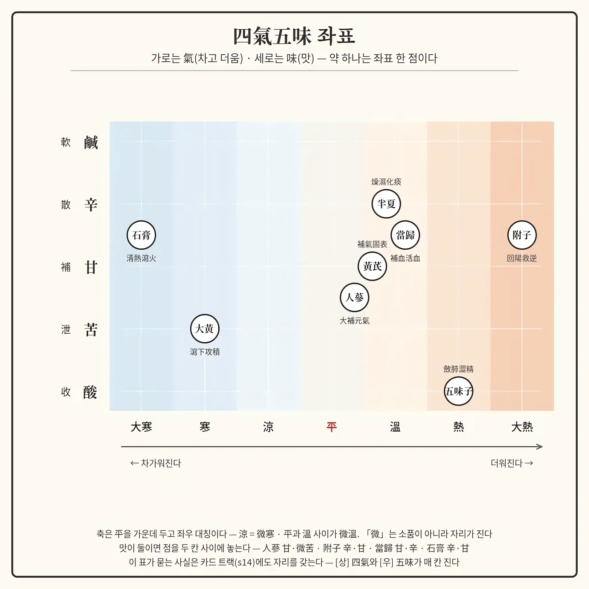
| 소품 | 잠그는 사실 (테스트 모드: 탭하여 확인) |
|---|---|
| 가로축 일곱 칸 왜? | 四氣 — 大寒 · 寒 · 涼 · 平 · 溫 · 熱 · 大熱 (좌우 대칭, 涼 = 微寒) |
| 다리 — 도해는 자가테스트·역방향 판독의 대상이 아니다(CANON 74). 범례를 그림 안에 갖고 있다. ▸ 정산(2026-08-22, 규칙 111) — 무대 자리: 五味 다섯 → s09p01(→s09u01)~s09p05(→s09u01)(오미 음식 사전). 四氣 일곱 칸은 좌표라 도해가 전담 | |
| 세로축 다섯 줄과 그 작용 왜? | 五味 — 酸收 · 苦泄 · 甘補 · 辛散 · 鹹軟 |
| 다리 — 도해는 자가테스트·역방향 판독의 대상이 아니다(CANON 74). 범례를 그림 안에 갖고 있다. ▸ 정산(2026-08-22, 규칙 111) — 무대 자리: 五味 다섯 → s09p01(→s09u01)~s09p05(→s09u01)(오미 음식 사전). 四氣 일곱 칸은 좌표라 도해가 전담 | |
| 약 하나 = 좌표 한 점 왜? | 人蔘 甘微苦·微溫 / 黃芪 甘·微溫 / 附子 辛甘·大熱 / 半夏 辛·溫 / 當歸 甘辛·溫 / 大黃 苦·寒 / 石膏 辛甘·大寒 / 五味子 酸·溫 |
| 다리 — 도해는 자가테스트·역방향 판독의 대상이 아니다(CANON 74). 범례를 그림 안에 갖고 있다. ▸ 정산(2026-08-22, 규칙 111) — 무대 자리: 五味 다섯 → s09p01(→s09u01)~s09p05(→s09u01)(오미 음식 사전). 四氣 일곱 칸은 좌표라 도해가 전담 | |
| 맛이 둘이면 두 칸 사이에 놓는다 왜? | 人蔘 甘·微苦 / 附子 辛·甘 / 當歸 甘·辛 / 石膏 辛·甘 — 味가 하나인 약만 정수 자리에 선다 |
| 다리 — 도해는 자가테스트·역방향 판독의 대상이 아니다(CANON 74). 범례를 그림 안에 갖고 있다. ▸ 정산(2026-08-22, 규칙 111) — 무대 자리: 五味 다섯 → s09p01(→s09u01)~s09p05(→s09u01)(오미 음식 사전). 四氣 일곱 칸은 좌표라 도해가 전담 | |
| 축은 平을 가운데 두고 좌우 대칭 왜? | 四氣 = 寒·熱·溫·涼 (涼 = 微寒). 「微」는 소품이 아니라 자리가 진다 |
| 다리 — 도해는 자가테스트·역방향 판독의 대상이 아니다(CANON 74). 범례를 그림 안에 갖고 있다. ▸ 정산(2026-08-22, 규칙 111) — 무대 자리: 五味 다섯 → s09p01(→s09u01)~s09p05(→s09u01)(오미 음식 사전). 四氣 일곱 칸은 좌표라 도해가 전담 | |
도해 문항 2 펼치기
| 1. 四氣 일곱 칸을 찬 것부터? | 大寒 · 寒 · 涼 · 平 · 溫 · 熱 · 大熱 (涼 = 微寒)本草 총론 四氣 |
| 2. 五味의 작용 다섯은? | 통용 서술은 酸收 · 苦泄 · 甘補 · 辛散 · 鹹軟이다. ⚠ 素問·藏氣法時論 **원문 글자는 「辛散，酸收，甘緩，苦堅，鹹耎」** — 甘은 補가 아니라 **緩**, 苦는 泄이 아니라 **堅**이다. 두 판을 갈라 적는다素問·藏氣法時論 |
🔗 升降浮沈 — 약이 가는 방향(도해) 본초·도해 도해 · 문항 5 #s14p13
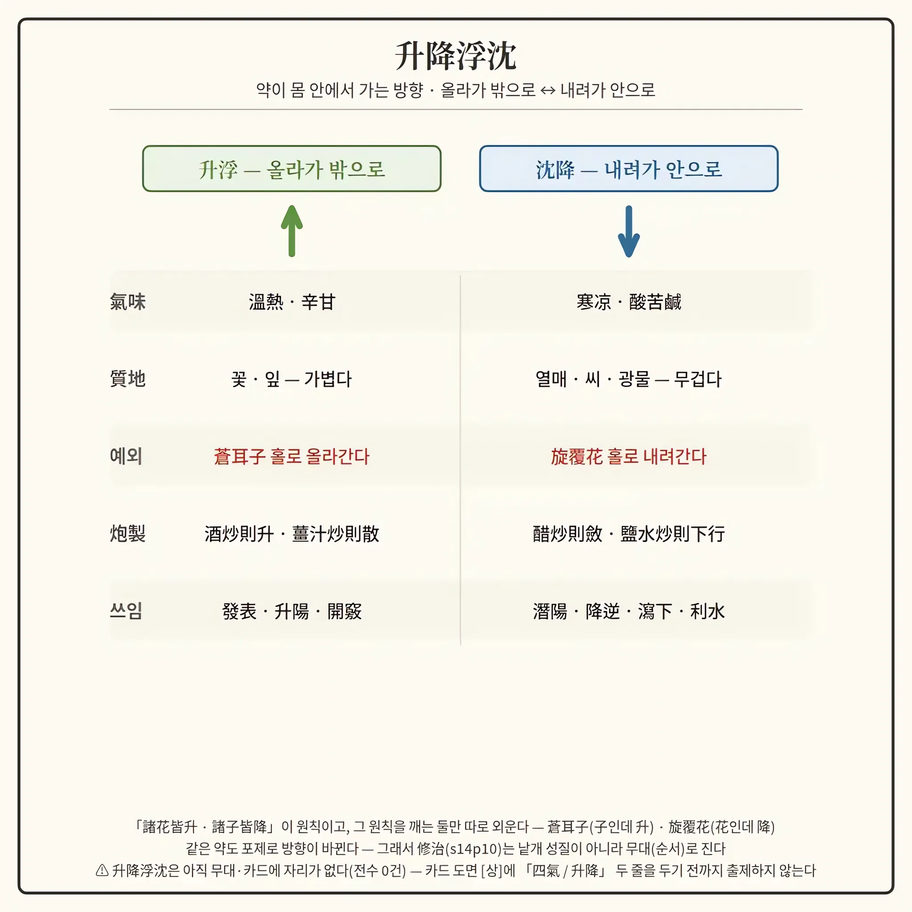
| 소품 | 잠그는 사실 (테스트 모드: 탭하여 확인) |
|---|---|
| 왼쪽 초록 위 화살표 / 오른쪽 파란 아래 화살표 왜? | 升浮(올라가 밖으로) ↔ 沈降(내려가 안으로) ※ 아직 무대·카드 자리 없음 — 출제 보류(CANON 74-③) |
| 다리 — 도해는 자가테스트·역방향 판독의 대상이 아니다(CANON 74). 범례를 그림 안에 갖고 있다. ▸ 정산(2026-08-22, 규칙 111) — 무대 자리 없음. 판이 [0]에 「출제 보류」라고 적어 놓고 멈춰 있었다 — 2026-08-22 **문항 5개**로 갚았다(규칙 108-b·109). 무대가 못 지는 까닭: 「올라간다/내려간다」는 몸짓이라 규칙 106에 걸린다 | |
| 氣味 왜? | 溫熱·辛甘 = 升浮 / 寒凉·酸苦鹹 = 沈降 |
| 다리 — 도해는 자가테스트·역방향 판독의 대상이 아니다(CANON 74). 범례를 그림 안에 갖고 있다. ▸ 정산(2026-08-22, 규칙 111) — 무대 자리 없음. 판이 [0]에 「출제 보류」라고 적어 놓고 멈춰 있었다 — 2026-08-22 **문항 5개**로 갚았다(규칙 108-b·109). 무대가 못 지는 까닭: 「올라간다/내려간다」는 몸짓이라 규칙 106에 걸린다 | |
| 質地 왜? | 꽃·잎(가볍다) = 升浮 / 열매·씨·광물(무겁다) = 沈降 — 諸花皆升 諸子皆降 |
| 다리 — 도해는 자가테스트·역방향 판독의 대상이 아니다(CANON 74). 범례를 그림 안에 갖고 있다. ▸ 정산(2026-08-22, 규칙 111) — 무대 자리 없음. 판이 [0]에 「출제 보류」라고 적어 놓고 멈춰 있었다 — 2026-08-22 **문항 5개**로 갚았다(규칙 108-b·109). 무대가 못 지는 까닭: 「올라간다/내려간다」는 몸짓이라 규칙 106에 걸린다 | |
| 원칙을 깨는 둘만 따로 왜? | 蒼耳子 — 子인데 升 / 旋覆花 — 花인데 降 |
| 다리 — 도해는 자가테스트·역방향 판독의 대상이 아니다(CANON 74). 범례를 그림 안에 갖고 있다. ▸ 정산(2026-08-22, 규칙 111) — 무대 자리 없음. 판이 [0]에 「출제 보류」라고 적어 놓고 멈춰 있었다 — 2026-08-22 **문항 5개**로 갚았다(규칙 108-b·109). 무대가 못 지는 까닭: 「올라간다/내려간다」는 몸짓이라 규칙 106에 걸린다 | |
| 炮製로 방향이 바뀐다 왜? | 酒炒則升 · 薑汁炒則散 · 醋炒則斂 · 鹽水炒則下行 |
| 다리 — 도해는 자가테스트·역방향 판독의 대상이 아니다(CANON 74). 범례를 그림 안에 갖고 있다. ▸ 정산(2026-08-22, 규칙 111) — 무대 자리 없음. 판이 [0]에 「출제 보류」라고 적어 놓고 멈춰 있었다 — 2026-08-22 **문항 5개**로 갚았다(규칙 108-b·109). 무대가 못 지는 까닭: 「올라간다/내려간다」는 몸짓이라 규칙 106에 걸린다 | |
도해 문항 5 펼치기
| 1. 升浮와 沈降은 각각 어디로 가는가? | 升浮 = 올라가 밖으로 / 沈降 = 내려가 안으로本草 총론 — 升降浮沈 |
| 2. 氣味로 升降浮沈을 어떻게 가르는가? | 溫熱·辛甘 = 升浮 / 寒凉·酸苦鹹 = 沈降本草 총론 — 升降浮沈 |
| 3. 質地로 升降浮沈을 어떻게 가르는가? | 꽃·잎(가볍다) = 升浮 / 열매·씨·광물(무겁다) = 沈降 — 「諸花皆升 諸子皆降」本草 총론 — 升降浮沈 |
| 4. 「諸花皆升 諸子皆降」을 깨는 약 둘은? | 蒼耳子 — 子인데 升 / 旋覆花 — 花인데 降本草 총론 — 升降浮沈 |
| 5. 炮製가 약의 방향을 어떻게 바꾸는가? | 酒炒則升 · 薑汁炒則散 · 醋炒則斂 · 鹽水炒則下行本草 총론 — 升降浮沈 |
🔗 君臣佐使 — 한 처방의 네 자리(도해) 방제·도해 도해 · 문항 5 #s14p14
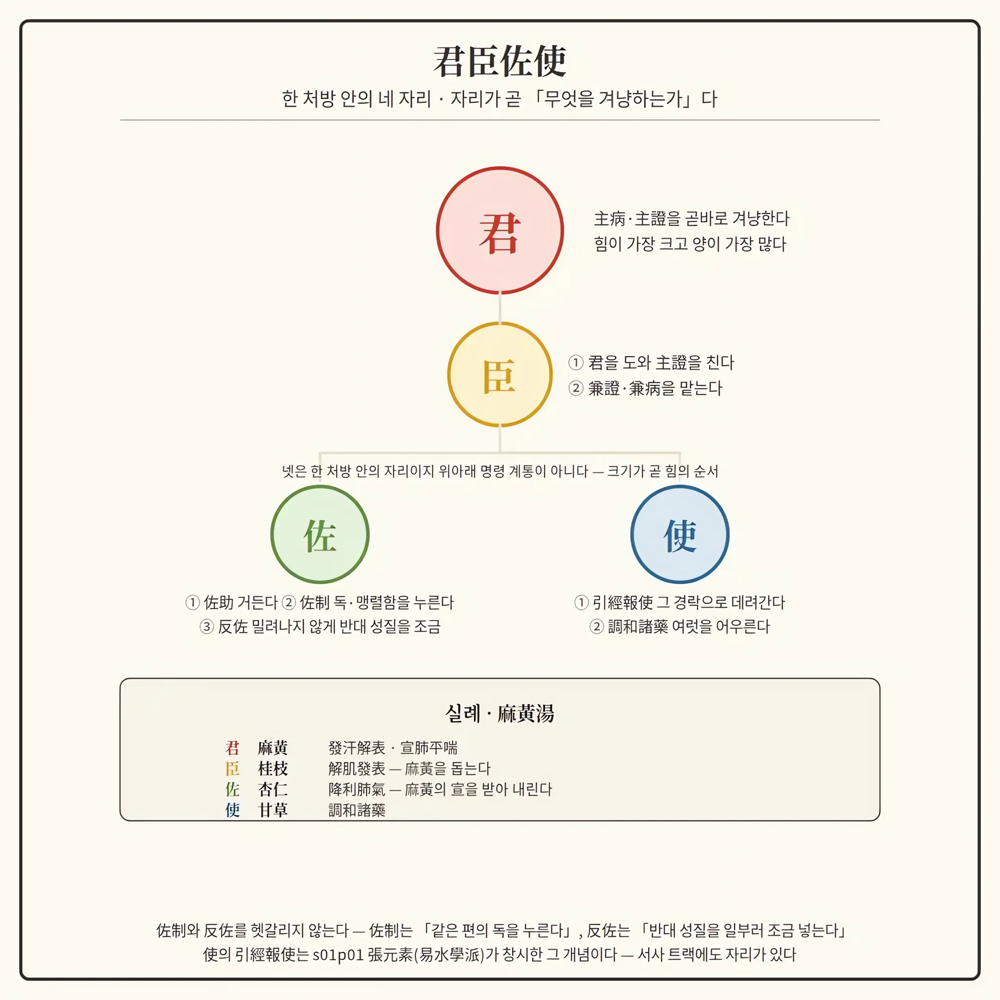
| 소품 | 잠그는 사실 (테스트 모드: 탭하여 확인) |
|---|---|
| 맨 위 가장 큰 자리 왜? | 君 — 主病·主證을 곧바로 겨냥. 힘이 가장 크고 양이 가장 많다 |
| 다리 — 도해는 자가테스트·역방향 판독의 대상이 아니다(CANON 74). 범례를 그림 안에 갖고 있다. ▸ 정산(2026-08-22, 규칙 111) — 무대 자리 없음 — **문항 5개**가 진다. 麻黃湯 실례가 있어 무대 한 칸이 가능하나 오답 기록 0회라 후순위 | |
| 그 아래 왜? | 臣 — ① 君을 도와 主證을 친다 ② 兼證·兼病을 맡는다 |
| 다리 — 도해는 자가테스트·역방향 판독의 대상이 아니다(CANON 74). 범례를 그림 안에 갖고 있다. ▸ 정산(2026-08-22, 규칙 111) — 무대 자리 없음 — **문항 5개**가 진다. 麻黃湯 실례가 있어 무대 한 칸이 가능하나 오답 기록 0회라 후순위 | |
| 왼쪽 아래 왜? | 佐 — ① 佐助 ② 佐制(君臣의 독·맹렬함을 누른다) ③ 反佐(반대 성질을 조금) |
| 다리 — 도해는 자가테스트·역방향 판독의 대상이 아니다(CANON 74). 범례를 그림 안에 갖고 있다. ▸ 정산(2026-08-22, 규칙 111) — 무대 자리 없음 — **문항 5개**가 진다. 麻黃湯 실례가 있어 무대 한 칸이 가능하나 오답 기록 0회라 후순위 | |
| 오른쪽 아래 왜? | 使 — ① 引經報使(그 경락으로 데려간다) ② 調和諸藥 |
| 다리 — 도해는 자가테스트·역방향 판독의 대상이 아니다(CANON 74). 범례를 그림 안에 갖고 있다. ▸ 정산(2026-08-22, 규칙 111) — 무대 자리 없음 — **문항 5개**가 진다. 麻黃湯 실례가 있어 무대 한 칸이 가능하나 오답 기록 0회라 후순위 | |
| 아래 실례 왜? | 麻黃湯 — 君 麻黃 / 臣 桂枝 / 佐 杏仁 / 使 甘草 |
| 다리 — 도해는 자가테스트·역방향 판독의 대상이 아니다(CANON 74). 범례를 그림 안에 갖고 있다. ▸ 정산(2026-08-22, 규칙 111) — 무대 자리 없음 — **문항 5개**가 진다. 麻黃湯 실례가 있어 무대 한 칸이 가능하나 오답 기록 0회라 후순위 | |
도해 문항 5 펼치기
| 1. 君藥은 무엇인가? | 主病·主證을 곧바로 겨냥한다. 힘이 가장 크고 양이 가장 많다方劑 총론 — 君臣佐使 / 素問·至眞要大論 「主病之謂君 佐君之謂臣 應臣之謂使」 |
| 2. 臣藥의 구실 둘은? | ① 君을 도와 主證을 친다 ② 兼證·兼病을 맡는다方劑 총론 — 君臣佐使 / 素問·至眞要大論 「主病之謂君 佐君之謂臣 應臣之謂使」 |
| 3. 佐藥의 구실 셋은? | ① 佐助 ② 佐制(君臣의 독·맹렬함을 누른다) ③ 反佐(반대 성질을 조금 넣는다)方劑 총론 — 君臣佐使 / 素問·至眞要大論 「主病之謂君 佐君之謂臣 應臣之謂使」 |
| 4. 使藥의 구실 둘은? | ① 引經報使(그 경락으로 데려간다) ② 調和諸藥方劑 총론 — 君臣佐使 / 素問·至眞要大論 「主病之謂君 佐君之謂臣 應臣之謂使」 |
| 5. 麻黃湯의 君臣佐使는? | 君 麻黃 · 臣 桂枝 · 佐 杏仁 · 使 甘草方劑 총론 — 君臣佐使 / 素問·至眞要大論 「主病之謂君 佐君之謂臣 應臣之謂使」 / 傷寒論 |
장면 15 · 병인 — 六淫·七情·병리산물·飮食勞逸
🔗 六淫 — 담 밖 계절 길 (風·暑·火·濕·燥·寒) 병인·六淫 #s15u01
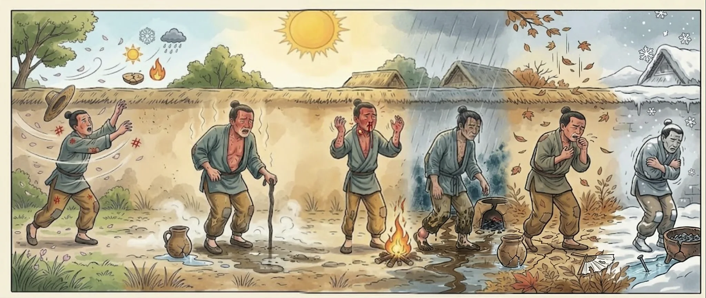
| 소품 | 잠그는 사실 (테스트 모드: 탭하여 확인) |
|---|---|
| 마을 흙담 바깥 길 — 왼쪽 봄에서 한여름 둘·장마·가을을 지나 오른쪽 겨울로 계절이 바뀌고, 그 위에 같은 생김새 여섯 사람 왜? | 六淫 = 外感 病因 — 四時의 六氣가 太過·不及·非時하면 邪가 된다 · 계절 순서가 主氣 배속(風春·暑火夏·濕長夏·燥秋·寒冬) |
| 다리 — 담 바깥(外)의 길 = 밖에서 들어오는 外感. 여섯 칸을 계절 순서로 한 줄에 세우면 「어느 邪가 어느 철의 主氣인가」가 자리로 외워진다. ◆ 개념 — 六氣(風寒暑濕燥火)는 정상 기후, 太過·不及·非時이거나 정기가 약할 때 六淫이 된다. 暑는 夏至 이후·立秋 이전에만 있는 순수 外邪(內暑 없음). ▸ 단원 통합(2026-10-13) — s15p01~p06 여섯 낱장을 한 장으로 합쳤다. blind10 에선 여섯 판이 모두 ✓ 였지만 각 판이 따로 서 있어 「六淫」이라는 틀은 어느 판에도 없었다. 통합판 blind13(판독자 둘): 판 표제어 **六淫 95% · 95%**, 여섯 인물 표제어 6/6 · 6/6. | |
| [風·봄] 몸 곳곳(어깨·팔꿈치·무릎 등)에 크기가 다른 붉은 # 통증 표시 왜? | 善行數變 — 병위가 옮겨 다니고 변화가 빠르다 |
| 다리 — 통증 표시를 여러 자리에 크기까지 다르게 흩어 놓아 '한 자리에 머물지 않음'을 그림. ◆ 개념 — 遊走性 관절통(行痹)과 갑자기 나타났다 사라지는 두드러기가 대표례. 어혈통(한 자리 고정)과 정반대라 감별 지점. ▸ 단원 통합(2026-10-13) — s15p01[0]에서 옮김. | |
| [風·봄] 머리에서 벗겨져 날아가는 밀짚모자 + 옆으로 흩날리는 소매·꽃잎 왜? | 輕揚開泄 · 易襲陽位 — 가볍게 떠올라 위·바깥을 친다 |
| 다리 — 모든 것이 위로·바깥으로 날리는 방향이 곧 성질. ◆ 개념 — 風은 陽邪라 머리·얼굴·피모 같은 상부·표부를 먼저 친다. 주리를 열어 땀이 새게 한다(開泄). ▸ 단원 통합(2026-10-13) — s15p01[1]에서 옮김. | |
| [風·봄] 바람 꼬리에 실려 따라오는 작은 날씨 다섯 — 눈송이·해·비구름·갈라진 흙·불꽃 왜? | 百病之長 — 다른 사기를 데리고 들어온다 |
| 다리 — 다섯 요소가 바람을 타고 함께 오는 구도. ◆ 개념 — 風寒·風濕·風熱처럼 육음이 겹칠 때 대개 風이 앞장선다. 그래서 風을 '온갖 병의 우두머리'라 부른다. ▸ 숨은 자산 회수(2026-08-29, 규칙 120·150) — **바람이 맨 앞에 서고 다섯 날씨가 뒤따르는 「자리」가 長(우두머리)을 진다** — 자리 다리다. 판독자가 「아이콘5=寒暑濕燥火 + 바람=風」을 사전 없이 집어냈다. ▸ 단원 통합(2026-10-13) — s15p01[2]에서 옮김. | |
| [風·봄] 왼쪽 끝 꽃 핀 봄 길 왜? | 風 = 春의 主氣 (木) |
| 다리 — 오행왕국 木나라의 봄바람과 같은 기호를 병인 축에서 재사용. ◆ 개념 — 계절의 主氣가 지나치면 邪가 된다. 단 風은 사계절 어느 때나 생길 수 있다. ▸ 단원 통합(2026-10-13) — s15p01[3]에서 옮김. | |
| [暑·한여름] 하늘의 큰 해와 붉게 달아오른 얼굴 왜? | 炎熱 — 뜨겁게 타오르는 陽邪 |
| 다리 — 여름 한낮의 직사광이 그대로 성질. ◆ 개념 — 暑는 여름에만 생기는 유일한 육음(季節性이 절대적). 壯熱·面赤·脈洪 등 열상이 뚜렷하다. ▸ 단원 통합(2026-10-13) — s15p03[0]에서 옮김. | |
| [暑·한여름] 머리 위로 오르는 아지랑이와 땀 + 발치에 밑동 금 간 물동이 — 맑은 물이 새어 고임 왜? | 升散 · 耗氣傷津 — 위로 흩어 기와 진액을 소모한다 |
| 다리 — 땀이 빠져나가고 김이 위로 오르는 두 방향을 함께 그림. ◆ 개념 — 주리를 열어 땀을 지나치게 내보내니 津液과 氣가 함께 새어나간다(氣隨津脫) → 갈증·무력·심하면 昏倒. ▸ 숨은 자산 회수(2026-08-29, 규칙 120·150) — **위로 오르는 아지랑이 = 升 직역.** [0] 해=暑 · [3] 진창=濕까지 판독자가 셋 다 사전 없이 읽었다. ▸ 빈틈 메우기(2026-08-29, 글자 사물 적용) — 耗氣傷津의 傷 — 津(§5 맑은 물방울)을 담던 그릇이 깨진 것이 傷津이다. (종전 소품 — 쏟아지는 땀과 위로 오르는 아지랑이) ▸ 단원 통합(2026-10-13) — s15p03[1]에서 옮김. | |
| [暑·한여름] 무릎이 꺾여 지팡이에 기댄 탈진 왜? | 氣短乏力 — 기 소모의 결과 |
| 다리 — 탈진 자세가 耗氣의 결과를 보여줌. ◆ 개념 — 熱만 있는 것이 아니라 반드시 氣虛·津傷을 동반하는 것이 暑邪의 특징. ▸ 단원 통합(2026-10-13) — s15p03[2]에서 옮김. | |
| [暑·한여름] 지팡이 밑 진창과 발목 높이로 낮게 깔린 흰 안개 왜? | 挾濕 — 흔히 습을 데리고 온다 |
| 다리 — 뜨거운 해와 축축한 바닥을 한 화면에. ◆ 개념 — 여름은 비가 많아 暑濕이 겹치기 쉽다 → 胸悶·嘔惡·大便溏 등이 열증과 함께 나타난다. ▸ 단원 통합(2026-10-13) — s15p03[3]에서 옮김. | |
| [火·한여름] 발치 모닥불 — 불길이 옆으로 퍼지지 않고 위로 곧게 솟음 + 붉은 얼굴·눈 왜? | 炎上 — 위로 타올라 머리와 얼굴을 친다 |
| 다리 — 불이 올라가는 방향과 증상이 몰린 자리가 같음. ◆ 개념 — 目赤·口舌生瘡·牙齦腫痛·頭痛. 濕(아래로)과 정반대 방향. ▸ 3차 재판독(2026-08-29, 규칙 150·153, blind3) — ✓ 火熱邪 — 炎上·動血·擾神·瘡瘍·斑疹·傷津·汗 전부 ▸ 단원 통합(2026-10-13) — s15p06[0]에서 옮김. | |
| [火·한여름] 코에서 흐르는 코피 한 줄기와 두 팔뚝의 붉은 반점 왜? | 生風動血 — 혈을 요동시켜 출혈시킨다 |
| 다리 — 피가 제 길을 벗어나는 두 형태(코피·피부 반점). ◆ 개념 — 迫血妄行 → 吐血·衄血·斑疹. 심하면 熱極生風으로 경련·抽搐 — 온병 血分證(s13p10(→s13u03))과 이어진다. ▸ 단원 통합(2026-10-13) — s15p06[1]에서 옮김. | |
| [火·한여름] 목에 노랗게 곪은 붉은 종기 왜? | 易致腫瘍 — 부스럼·종기를 만든다 |
| 다리 — 열이 살을 썩혀 고름이 잡히는 모습. ◆ 개념 — 熱毒이 血肉에 몰리면 瘡瘍腫毒이 된다 — 붉고 붓고 뜨겁고 아픈 것이 특징. ▸ 단원 통합(2026-10-13) — s15p06[2]에서 옮김. | |
| [火·한여름] 두 팔을 들고 떨며 가만있지 못하는 모습 왜? | 擾亂心神 — 심신을 어지럽힌다 |
| 다리 — 안절부절못하는 몸짓. ◆ 개념 — 心煩不寐·躁擾發狂·심하면 神昏譫語. 火가 心에 통하기 때문(心屬火). ▸ 단원 통합(2026-10-13) — s15p06[3]에서 옮김. | |
| [濕·장마] 빗속에 흠뻑 젖어 축 늘어진 몸 왜? | 重濁 — 무겁고 탁하다 |
| 다리 — 무거움을 자세와 젖은 옷 무게로 표현. ◆ 개념 — 頭重如裹(머리를 싸맨 듯 무거움)·四肢困重이 대표. 분비물·배설물이 탁해지는 것도 濁의 뜻. ▸ 3차 재판독(2026-08-29, 규칙 150·153, blind3) — ✓ 재작도 검증 — 濕性重濁·黏滯·趨下 명중, 단풍 언급 없음(교체 성공) ▸ 단원 통합(2026-10-13) — s15p04[0]에서 옮김. | |
| [濕·장마] 발밑으로 느리게 흐르는 진하고 끈적한 갈색 흙탕물 왜? | 黏滯 — 끈적하게 들러붙어 잘 낫지 않는다 |
| 다리 — 흐르긴 하는데 거의 멈춘 듯한 점성. ◆ 개념 — 병이 오래 끌고 잘 재발한다(病程纏綿). 濕熱이 얽히면 특히 오래간다. ▸ 도구 교정 후 재판독(2026-08-29, 규칙 152·153) — ✓ **온전.** 판독자가 濕·重·濁·黏·下를 전부 복원하고 표제어 「濕性重濁」을 맞혔다. ⚠ 다만 **왼쪽 위 붉은 단풍나무는 스펙에 없다** — 濕 판인데 秋·燥(s15p05)로 새어, 판독자가 「계열에 어긋나 방해된다」고 짚었다. 여름·장하 나무로 바꾼다(규칙 17 간섭). ▸ 재작도 완료(2026-08-29) — ✓ **왼쪽 위 붉은 단풍나무를 빗물 머금은 여름 나무로 바꿨다.** 濕 판에 秋·燥(s15p05)가 섞여 판독자가 「계열에 어긋나 방해된다」고 짚었던 자리다(규칙 17 간섭). 1회차. ▸ 단원 통합(2026-10-13) — s15p04[1]에서 옮김. | |
| [濕·장마] 종아리와 발에 몰린 진흙, 통통 부은 발목 왜? | 趨下 · 易襲陰位 — 아래로 흘러 하부를 친다 |
| 다리 — 몸의 아래쪽에만 진흙과 부기가 몰린 구도. ◆ 개념 — 下肢浮腫·帶下·泄瀉·淋濁 등 하부 증상이 흔하다. 風(상부)과 정반대 방향이라 짝으로 기억. ▸ 단원 통합(2026-10-13) — s15p04[2]에서 옮김. | |
| [濕·장마] 등 뒤 흙담의 검푸른 곰팡이 + 금 가 쪼개진 화로에 불기 없는 재 왜? | 阻遏氣機 · 損傷陽氣 — 기의 흐름을 막고 양기를 상한다 |
| 다리 — 축축하게 눌어붙어 퍼지는 곰팡이=기가 통하지 않는 상태. ◆ 개념 — 특히 脾陽을 잘 상한다(脾惡濕) — s11p03(→s11u01)과 연결. 胸悶·脘痞·食欲不振. ▸ 빈틈 메우기(2026-08-29, 글자 사물 적용) — 損傷陽氣의 傷 — 같은 문법. s15p02[2]와 **같은 사물**이라 「濕도 寒도 陽을 상한다」가 그림에서 짝지어진다(규칙 73 딥링크). (종전 소품 — 벽에 번지는 곰팡이 얼룩) ▸ 단원 통합(2026-10-13) — s15p04[3]에서 옮김. | |
| [燥·가을] 발치에 밑동 금 간 물동이 — 금 사이로 맑은 물방울이 샘 (暑의 물동이와 같은 사물) 왜? | 乾澀 · 傷津耗液 — 마르고 껄끄럽다 |
| 다리 — 몸의 물기가 빠진 곳들을 한꺼번에 보여줌. ◆ 개념 — 口鼻乾燥·皮膚乾裂·毛髮不榮·小便短少·大便乾結. ▸ 글자 사전 판정(2026-08-25, 규칙 120·127) — ⚠ **글자 사전 정정(2026-08-25)** — 「마른·바싹·말라」는 **부재라 값이 못 된다**(규칙 49). 津의 담지물은 「맑은 물방울」로 되돌리고, **마름은 燥(쩍쩍 갈라진 금)가 가져간다.** 이 칸의 갈라진 입술이 곧 燥이고 津은 그 자리에서 **빠져나간 것**이다. ▸ 빈틈 메우기(2026-08-29, 글자 사물 적용) — 傷津耗液의 傷 — s15p03[1]과 같은 사물(딥링크). 燥와 暑가 똑같이 津을 상한다는 것이 그림에서 짝지어진다. (종전 소품 — 갈라진 입술·트고 각질 인 피부·푸석한 머리카락) ▸ 단원 통합(2026-10-13) — s15p05[0]에서 옮김. | |
| [燥·가을] 가슴에 손을 대고 마른기침 + 발치에 살 부러지고 종이 찢긴 흰 부채 왜? | 易傷肺 — 폐를 잘 상한다 |
| 다리 — 가래가 '없는' 것이 사실이라 마른기침으로 그림. ◆ 개념 — 肺는 嬌臟이며 燥를 싫어한다(肺惡燥는 아니고 腎惡燥 — s11p05(→s11u01)와 혼동 주의). 폐는 潤을 좋아해 조사에 먼저 상한다 → 乾咳少痰·痰黏難咯. ▸ 빈틈 메우기(2026-08-29, 글자 사물 적용) — 易傷肺의 傷 — 사람은 깨뜨릴 수 없으니 **그 사람의 물건**이 깨진다. 흰 부채는 §5 肺 캐릭터(흰 도포 재상)의 소지품이라 「肺가 상했다」로 읽힌다. (종전 소품 — 가래 없는 마른 기침과 가슴에 댄 손) ▸ 단원 통합(2026-10-13) — s15p05[1]에서 옮김. | |
| [燥·가을] 쩍쩍 갈라진 땅 + 바람 없이 곧게 떨어지는 마른 잎 왜? | 燥 = 秋의 主氣 (金) |
| 다리 — 물기가 빠져 수축·균열이 생기는 현상. ◆ 개념 — 초가을 더위 끝의 溫燥, 늦가을 추위 낀 凉燥로 나뉜다. ▸ 도구 교정 후 재판독(2026-08-29, 규칙 152·153) — ✓ **온전.** 판독자가 燥·乾·裂·枯·渴을 전부 확신도 「상」으로 복원하고 표제어 「燥」·「燥邪傷肺」를 맞혔다. **살갗·입술·흙·화분·나무통이 전부 같은 방식으로 갈라진다** — 한 글자를 다섯 사물이 반복해 나르는 구조다. ▸ 단원 통합(2026-10-13) — s15p05[2]에서 옮김. | |
| [燥·가을] (대비) 같은 판 왼쪽 風의 꽃잎은 옆으로 날리고, 燥의 잎은 곧게 떨어진다 왜? | 燥는 風과 다르다 — 움직임이 아니라 마름 |
| 다리 — s15p01(바람에 다 날림)과 대비되도록 완전히 정지시킴. ◆ 개념 — 두 사기가 함께 오면 風燥가 되지만, 燥 자체의 본질은 '진액 손상'이지 '움직임'이 아니다. ※라벨 전용 — 그림 소품 없음. 「바람 한 점 없는 공기」는 소품이 아니라 가드 문장이라 2026-08-15 규칙 92-c로 내렸다. 燥는 앞의 세 줄(갈라진 입술·마른 기침·갈라진 땅)이 이미 다 진다. ▸ 단원 통합(2026-10-13) — s15p05[3]에서 옮김. | |
| [寒·겨울] 눈밭에 얼어 멈춘 물길 — 그 얼음 속에 박힌 쇠못 하나 왜? | 凝滯 — 기혈이 엉겨 막힌다 → 痛 |
| 다리 — 흐르던 것이 얼어 멈추는 장면이 곧 성질. ◆ 개념 — 不通則痛. 한사로 인한 통증은 따뜻하게 하면 덜해지는 것(得溫則減)이 특징. ▸ 3차 재판독(2026-08-29, 규칙 150·153, blind3) — ✓ 寒邪 성질 — 凝滯(관을 막은 얼음)·收引·痛·陰邪 표제어 확신 상 ▸ 빈틈 메우기(2026-08-29, 글자 사물 적용) — 凝滯의 결과가 痛이라는 것을 못이 진다. 凝滯(얼어 막힘)가 주역이고 못은 그 결과다 — 한 소품 한 사실을 어기지 않는다(못=痛, 얼음=凝滯). (종전 소품 — 얼어 막힌 물길과 정지한 물) ▸ blind6(2026-09-02) △ — 1단계 寒邪 55% 정답 → 2단계 陰盛 60%로 이탈: 이 판의 얼음 덩이가 §5 「얼음=陰」에 끌렸다. 寒邪 판의 얼음은 눈송이·서리로 바꾼다. ▸ 단원 통합(2026-10-13) — s15p02[0]에서 옮김. | |
| [寒·겨울] 온몸을 안으로 웅크리고 팔짱 낀 자세 왜? | 收引 — 오그라들고 당긴다 |
| 다리 — 관절이 굳고 근육이 당겨 몸이 접히는 자세. ◆ 개념 — 주리를 닫아 땀이 안 나게 하고(無汗), 근맥을 당겨 拘攣·屈伸不利를 만든다. ▸ 이름 회수 2차(2026-08-24, 규칙 126~131) — 收引 — 「온몸을 안으로 오그리고 펴지 못하는 자세」는 **소품이 0개**다(규칙 106). 처방 — **아가리를 끈으로 조여 오므린 자루 하나.** 收(거둠)와 引(당김)을 한 사물이 진다. ▸ 글자 사전 판정(2026-08-25, 규칙 120·127) — ⚠ **소품 0개 · 그림 수정 대기** — 「온몸을 오그린 자세」에는 사물이 하나도 없다(규칙 106). §5-2 收 = **아가리를 끈으로 바짝 조여 오므린 굵은 삼베 자루 하나.** ⚠ 도르래·줄 금지(s14p05[2](→s14u01) 升擧陽氣와 갈린다) · s09p04[2](→s09u01) 볏단과는 뜻이 같아 딥링크(규칙 73). ▸ 단원 통합(2026-10-13) — s15p02[1]에서 옮김. | |
| [寒·겨울] 눈 위에 밑이 쩍 갈라진 화로, 안에 불기 없는 잿더미 왜? | 傷陽 — 양기를 상한다 (陰邪) |
| 다리 — 온기가 사라진 색과 바닥. ◆ 개념 — 寒은 陰邪라 양기를 몰아낸다. 惡寒·肢冷·下利淸穀 등 한증이 나타난다. ▸ 글자 사전 판정(2026-08-25, 규칙 120·127) — ⚠ **그림 수정 대기** — 「창백한 얼굴」은 색만이라 소품이 못 된다(규칙 92-c). §5-2 傷 = 「그 글자의 사물이 깨져 못 쓰게 된 것」 · 陽 = 「그릇 안의 불」. 교체안: **깨진 불그릇과 그 밖으로 쏟아져 꺼진 불.** 한 소품이 傷·陽 두 글자를 함께 진다. 「꺼져가는 등불」(衰·亡陽)과는 **그릇이 성한가 깨졌는가**로 갈린다. ▸ 빈틈 메우기(2026-08-29, 글자 사물 적용) — §5 「傷 = 그 글자의 사물이 깨져 못 쓰게 된 것」을 적용한다. 陽 = 해 또는 불(§5) → **깨진 화로 + 꺼진 재**가 傷陽이다. 종전에는 「창백함」이 傷陽을 진다고 했으나 그것은 상태일 뿐 傷의 사물이 아니었다(0/7). (종전 소품 — 창백한 얼굴과 서리 낀 땅) ▸ 단원 통합(2026-10-13) — s15p02[2]에서 옮김. | |
| [寒·겨울] 눈송이 내리는 오른쪽 끝 겨울 왜? | 寒 = 冬의 主氣 (水) |
| 다리 — 오행왕국 水나라 겨울과 같은 기호. ◆ 개념 — 表寒(傷寒)과 裏寒(中寒)으로 나뉜다 — s13p01(→s13u01) 太陽傷寒과 연결. ▸ 글자 사전 판정(2026-08-25, 규칙 120·127) — ⚠ **그림 수정 대기** — why가 「s09p05(→s09u01) 水나라 겨울과 같은 기호」라 선언해 놓고 정작 그 기호가 없다. 교체안: **하늘에서 곧게 내리는 눈.** 「곧게」가 風(옆으로 흩날림)과 가른다. ▸ 단원 통합(2026-10-13) — s15p02[3]에서 옮김. | |
🔗 七情 — 담 안쪽 마당, 같은 사람 여섯 (怒上·喜緩·悲消·恐下·驚亂·思結) 병인·七情 #s15u02
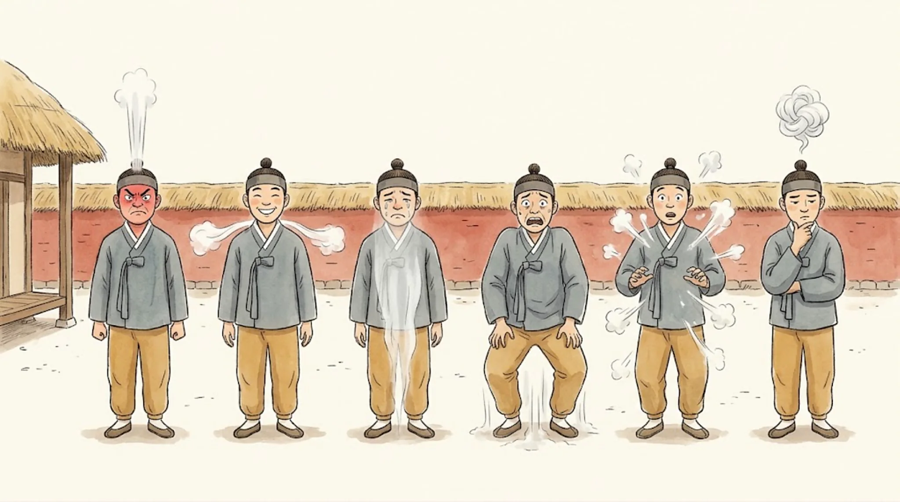
| 소품 | 잠그는 사실 (테스트 모드: 탭하여 확인) |
|---|---|
| s15u01(六淫 = 흙담 바깥 길)의 짝 — 같은 마을 흙담의 안쪽 마당(사전 內 = 담 안쪽), 날씨도 계절도 없음. 같은 얼굴·같은 키·같은 옷(상투·회청 저고리·황토 바지)의 마을 남자 여섯이 한 줄로 관객을 향해 섬 — 다른 것은 얼굴 표정과 몸 둘레 흰 김(사전 氣)의 모양뿐, 김의 양은 여섯이 같다 왜? | 七情 內傷 — 담 안(內)에서 생긴 병인. 素問·擧痛論의 九氣 중 情志 여섯: 怒則氣上 · 喜則氣緩 · 悲則氣消 · 恐則氣下 · 驚則氣亂 · 思則氣結 — 七情은 기의 「방향」을 흔든다(三因極一의 內因 분류와는 다른 축) |
| 다리 — 六淫(담 바깥 = 外感)과 담 하나로 갈리는 內傷 — 사전 內·外 갈림을 틀로 썼다. 얼굴이 감정을, 김의 모양이 기의 방향을 진다(s15p07 과잉교정 교훈 — 얼굴을 지우면 감정 담지물이 없어진다). 다른 조건을 모두 같게 하고 변수 둘만 남긴 구성. 김의 양은 같게 — 「양」이 축에 끼면 喜가 정상으로 읽힌다(blind3). ◆ 개념 — 肝主怒·心主喜·肺主悲(憂)·腎主恐·心主驚·脾主思. 여기에 寒則氣收·炅則氣泄·勞則氣耗를 더하면 擧痛論 九氣. 시험은 방향을 서로 바꿔치기해 출제한다. ▸ 단원 통합(2026-10-22) — s15p07·08(8행, 라벨 하나는 틀로)을 한 장에. blind47 S4 七情內傷 氣機失調 92% · T4 88%, 여섯 방향 6/6·6/6, 담 안쪽 = 內傷 ✓. 구역 z22 85%·z47 70%·z72 70% 모두 九氣. 바탕 3.1 Pro 글만(Argon 도구 꺼짐), 구역 편집·PIL 없음. 잔결은 blind47_report.md. | |
| [七情] 첫째 — 붉게 달아오른 얼굴·치켜올린 눈썹·꾹 다문 입·쥔 주먹(怒) + 흰 김이 정수리에서 한 줄기로 곧게 하늘로 솟음(上) 왜? | 怒則氣上 — 노하면 기가 치솟는다 |
| 다리 — ★옅은 김 = 氣의 움직임(이 세트 신규 공용 기호). 방향이 곧 사실이라 세 사람의 김 방향만 다르게 했다. ◆ 개념 — 肝主怒. 기가 위로 치솟아 頭痛·面赤·吐血, 심하면 薄厥(졸도). ▸ 내 과잉교정을 되돌림(2026-08-29) — ⚠ **내가 한 번 과잉교정했다.** 1차 수정에서 「축을 하나로」를 좇아 **세 얼굴을 전부 무표정으로 지웠는데, 그러자 怒·喜·悲 자체에 담지물이 하나도 없어졌다.** blind3가 지적한 것은 **「김의 양」과 「감정」이 겹친다**는 것이었지 감정을 지우라는 것이 아니었다. 바로잡은 판 — **얼굴이 감정을 지고 김의 모양이 기의 방향을 진다**(서로 다른 소품이 서로 다른 사실을 진다 · 규칙 ④ 준수). 겹치던 축은 **김의 양** 하나뿐이었으니 그것만 셋이 같게 통제하면 된다. → 규칙 160. ▸ blind6(2026-09-02) △ — 1단계 怒上·喜緩·悲消 70% 정답, 2단계에서 셋째(悲) 사내의 김이 「下」(恐 문법)로 읽혀 恐下로 이탈. 悲의 김은 흩어져 사라지는 「消」로 다시 그린다(blind4 잔결 재확인). ▸ 단원 통합(2026-10-22) — s15p07[0]에서 옮김. | |
| [七情] 둘째 — 반달눈·활짝 웃는 입(喜) + 흰 김이 어깨 높이에서 양옆으로 두 줄 느슨하게 풀려 퍼짐(緩) 왜? | 喜則氣緩 — 기뻐하면 기가 늘어진다 |
| 다리 — 긴장이 풀린 자세와 힘 빠진 김. ◆ 개념 — 心主喜. 알맞으면 기혈이 조화롭지만 지나치면 心氣가 흩어져 정신을 못 모은다(喜傷心). ▸ 빈틈 메우기(2026-08-29) — 축이 하나로 통일된다. 종전 「온몸이 늘어지고」는 몸이 축을 이중으로 져서 「기의 양」과 「감정 종류」 두 축이 겹쳤다. (종전 소품 — 온몸이 늘어지고 김이 힘없이 퍼짐) ▸ 내 과잉교정을 되돌림(2026-08-29) — ⚠ **내가 한 번 과잉교정했다.** 1차 수정에서 「축을 하나로」를 좇아 **세 얼굴을 전부 무표정으로 지웠는데, 그러자 怒·喜·悲 자체에 담지물이 하나도 없어졌다.** blind3가 지적한 것은 **「김의 양」과 「감정」이 겹친다**는 것이었지 감정을 지우라는 것이 아니었다. 바로잡은 판 — **얼굴이 감정을 지고 김의 모양이 기의 방향을 진다**(서로 다른 소품이 서로 다른 사실을 진다 · 규칙 ④ 준수). 겹치던 축은 **김의 양** 하나뿐이었으니 그것만 셋이 같게 통제하면 된다. → 규칙 160. ▸ 단원 통합(2026-10-22) — s15p07[1]에서 옮김. | |
| [七情] 셋째 — 처진 눈꼬리·볼을 타고 내리는 눈물(悲) + 흰 김이 가슴에서 몸을 타고 내려가며 옅어져 사라짐(消) 왜? | 悲則氣消 — 슬퍼하면 기가 사그라진다 |
| 다리 — 부피가 줄어드는 두 표현(꺼진 가슴·사라지는 김). ◆ 개념 — 肺主悲(憂). 意志消沈·氣短乏力 — 폐기가 소모된다. ▸ 빈틈 메우기(2026-08-29) — 같은 이유. 「가슴이 푹 꺼지고」를 뺀다. (종전 소품 — 가슴이 푹 꺼지고 김이 사그라듦) ▸ 내 과잉교정을 되돌림(2026-08-29) — ⚠ **내가 한 번 과잉교정했다.** 1차 수정에서 「축을 하나로」를 좇아 **세 얼굴을 전부 무표정으로 지웠는데, 그러자 怒·喜·悲 자체에 담지물이 하나도 없어졌다.** blind3가 지적한 것은 **「김의 양」과 「감정」이 겹친다**는 것이었지 감정을 지우라는 것이 아니었다. 바로잡은 판 — **얼굴이 감정을 지고 김의 모양이 기의 방향을 진다**(서로 다른 소품이 서로 다른 사실을 진다 · 규칙 ④ 준수). 겹치던 축은 **김의 양** 하나뿐이었으니 그것만 셋이 같게 통제하면 된다. → 규칙 160. ▸ 단원 통합(2026-10-22) — s15p07[2]에서 옮김. | |
| [七情] 넷째 — 겁먹은 얼굴·관자놀이 땀 + 무릎이 꺾여 반쯤 주저앉음(恐) + 흰 김이 다리 사이로 발밑 땅에 쏟아짐(下) 왜? | 恐則氣下 — 두려우면 기가 내려간다 |
| 다리 — 김이 발밑으로 빠지는 방향. ◆ 개념 — 腎主恐. 기가 아래로 빠져 二便失禁·腰膝無力. 怒(위)와 정반대라 짝으로 기억. ▸ 단원 통합(2026-10-22) — s15p08[0]에서 옮김. | |
| [七情] 다섯째 — 눈이 휘둥그렇고 입이 벌어진 채 두 손을 듦(驚) + 흰 김 열 덩이가 몸 둘레 사방으로 터져 흩어짐(亂) 왜? | 驚則氣亂 — 놀라면 기가 어지러워진다 |
| 다리 — 방향이 하나로 정해지지 않고 사방으로 흩어지는 것 자체가 亂. ◆ 개념 — 心無所倚 神無所歸 慮無所定 — 心悸·정신 혼란. 恐(아래)과 구분되는 지점이 '방향 없음'. ▸ 단원 통합(2026-10-22) — s15p08[1]에서 옮김. | |
| [七情] 여섯째 — 턱을 괴고 팔짱을 낀 골똘한 얼굴(思) + 머리 바로 위에 단단히 뭉쳐 매듭처럼 꼬인 흰 김 덩이(結) 왜? | 思則氣結 — 골똘히 생각하면 기가 맺힌다 |
| 다리 — 움직이지 않고 뭉친 김. ◆ 개념 — 脾主思. 기가 맺혀 운화가 안 되니 食欲不振·脘腹脹滿·健忘. ▸ 단원 통합(2026-10-22) — s15p08[2]에서 옮김. | |
| [七情] 여섯 사람의 김 모양 한 벌 — 위로 기둥 · 옆으로 두 줄 · 몸을 타고 사그라짐 · 발밑으로 · 사방 열 덩이 · 머리 위 매듭 왜? | 怒上 · 喜緩 · 悲消 · 恐下 · 驚亂 · 思結 |
| 다리 — s15p07과 이 패널을 나란히 보면 여섯 방향이 한 벌로 완성된다. ◆ 개념 — 여기에 寒則氣收·炅則氣泄·勞則氣耗를 더하면 擧痛論 九氣. 시험은 방향을 서로 바꿔치기해 출제한다. ▸ 도구 교정 후 재판독(2026-08-29, 규칙 152·153) — ✓ **온전.** 파일명을 가린 판독자가 恐則氣**下** · 驚則氣**亂** · 思則氣**結**을 셋 다 확신도 「상」으로 복원하고 표제어까지 맞혔다. **12칸 중 가장 잘 읽힌 판이다** — 갈림축이 「김의 모양」 하나뿐이라 그렇다. 여기서 나르는 것은 소품이 아니라 **김이 하는 일**이다(규칙 152). ▸ 단원 통합(2026-10-22) — s15p08[3]에서 옮김. | |
🔗 痰飮·瘀血 · 飮食勞逸 — 담 안쪽 집 마당과 마루 (몸이 지은 것 · 제 손으로 지은 것) 병인·병리산물·飮食勞逸 #s15u03
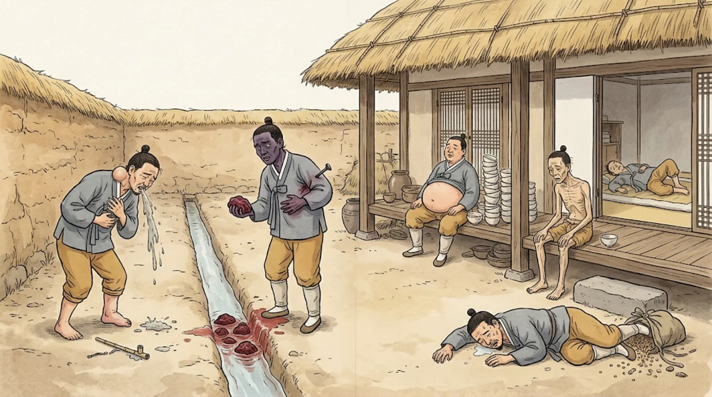
| 소품 | 잠그는 사실 (테스트 모드: 탭하여 확인) |
|---|---|
| s15u02(七情 마당)와 같은 담 안쪽 — 왼쪽은 흙담을 등진 마당을 좁은 도랑이 가르고, 오른쪽은 초가집 마루와 문 열린 방. 같은 생김새의 마을 남자 여섯 — 마당의 둘(痰·瘀)은 도랑 양편, 마루·방·마당의 넷(過飽·過飢·過勞·過逸) 왜? | 病因 ② — 병리산물(痰飮 = 津液이 엉긴 것 · 瘀血 = 血이 막힌 것: 둘 다 병의 결과가 다시 병인이 되는 2차 병인) + 飮食·勞逸 失宜(過飽 ↔ 過飢 · 過勞 ↔ 過逸: 지나쳐도 모자라도 병) |
| 다리 — 담 안쪽(內)에서 생기는 병인 둘째 판 — 「몸 안에서 생긴 것(痰·瘀)」과 「제 손으로 지은 것(먹고 쉬는 것)」을 마당과 마루로 갈랐다. 사전 딥링크: 痰(끈적한 회백색 덩이) · 瘀(몸 밖에 나온 검붉게 굳은 덩이) · 痛(살에 박힌 쇠못) · 血(붉은 것) · 虛(⅓로 준 몸) · 實(팽팽한 배) · 內(문 안). 飮食勞逸 넷은 2×2 — 飽↔飢, 勞↔逸. ◆ 개념 — 痰飮: 有形(가래·痰核)·無形(眩暈·神昏), 怪病多痰, 阻滯氣機·蒙蔽心神. 瘀血: 刺痛·痛處不移·拒按, 面色黧黑, 舌紫暗·瘀斑, 阻滯血行 → 離經之血 반복 출혈. 飮食不節(過飽 食積 / 過飢 氣血生化不足) · 勞逸(勞力·勞神·房勞 / 久臥傷氣·久坐傷肉). ▸ 단원 통합(2026-10-22) — s15p09·10(9행)을 한 장에. blind49 U4 病因 內傷+病理産物 80% · V4 70%, 여섯 인물 6/6·6/6. 구역 z48 瘀血 ✓·z73 飮食勞逸 ✓, z23 痰 띠 단독은 飮·濕으로. 바탕 3.1 Pro 글만(순화본), 구역 편집 실패(거절·재구도) → 바탕 채택. 잔결(배수관 → 곰방대)은 blind49_report.md. ▸ 잔결(2026-10-22) — 過飢의 사발이 뒤집히지 않고 바로 놓임(빈 사발 하나로는 읽혔다). | |
| [痰瘀] 마당 왼쪽, 도랑 왼편 — 몸을 숙여 걸쭉한 회백색 덩이(사전 痰)를 뱉는 남자 · 목 옆의 혹 · 발치 바닥의 대나무 대롱(배수관 — ⚠ 담뱃대로 읽힘, 손질 후보) 왜? | 痰飮 — 진액이 정체해 엉긴 병리산물 |
| 다리 — 흘러야 할 것이 걸쭉해져 막힌 관. ◆ 개념 — 津液이 제대로 운행·기화되지 못해 생긴다. 有形의 痰(뱉는 가래)과 無形의 痰(어지럼·정신 이상 등)이 있다. ▸ 단원 통합(2026-10-22) — s15p09[0]에서 옮김. ▸ 잔결(2026-10-22) — 배수관이 가느다란 대나무 대롱으로 그려져 네 독자 모두 담뱃대(곰방대)로 읽음. 「막힌 관」 사실은 이 판에서 그림이 못 진다 — Argon 복귀 뒤 돌 배수구로 구역 편집. | |
| [痰瘀] 그 남자 — 어지러워 기우뚱한 머리 · 가슴을 누르는 손 · 신이 벗겨진 맨발(부음) 왜? | 痰의 致病 — 阻滯氣機 · 蒙蔽心神 · 病證多端 |
| 다리 — 가래가 몸 곳곳을 막는 결과. ◆ 개념 — 怪病多痰 — 설명 안 되는 병에는 담을 의심하라. 눈에 안 보이는 곳까지 이른다. ▸ 단원 통합(2026-10-22) — s15p09[1]에서 옮김. | |
| [痰瘀] 도랑 오른편 — 얼굴과 손이 자줏빛 검은 남자 · 옆구리 한 자리에 꽂힌 쇠못(사전 痛 — 固定痛) · 손에 쥔 검붉게 굳은 덩이(사전 瘀) 왜? | 瘀血 — 흐름이 막힌 피 |
| 다리 — 고정된 통증·굳은 덩이·자색이 세 표지. ◆ 개념 — 刺痛·痛處不移·拒按, 面色黧黑, 舌質紫暗·瘀斑 — 진단 세트 s12p05(→s12u02)(黑色主病)와 같은 사실. ▸ 단원 통합(2026-10-22) — s15p09[2]에서 옮김. | |
| [痰瘀] 그의 발치 도랑 — 검붉은 덩이 다섯이 물길을 막아 그 위로 검붉은 물이 고이고 둑 밖으로 번짐 왜? | 瘀血의 致病 — 阻滯血行 · 出血(반복) |
| 다리 — 막히면 위쪽에 피가 고이고 결국 넘친다. ◆ 개념 — 어혈이 있으면 새 피가 제 길로 못 가 오히려 반복 출혈이 생긴다(離經之血). ▸ 단원 통합(2026-10-22) — s15p09[3]에서 옮김. | |
| [痰瘀] 두 남자가 좁은 도랑을 사이에 두고 좌우로 갈라 섬 — 왼쪽은 회백색(津液), 오른쪽은 검붉은색(血) 왜? | 痰飮 = 津液의 병리산물 / 瘀血 = 血의 병리산물 |
| 다리 — 무엇이 엉겼는가로 좌우를 갈랐다. ◆ 개념 — 둘 다 '2차 병인'(병의 결과가 다시 병의 원인이 됨)이라는 점이 공통. 서로 얽히면 痰瘀互結. ▸ 도구 교정 후 재판독(2026-08-29, 규칙 152·153) — ✓ **온전.** 판독자가 痰·瘀·滯를 복원하고 「痰飮 對 瘀血 감별」로 표제어를 맞혔다. 갈림축이 네 겹으로 일관된다 — 체형·색·배출물의 성질·부위. 특히 **발치의 항아리(넘쳐 흐름)와 도랑(엉겨 막힘)** 대비가 결정적이었다. ▸ 단원 통합(2026-10-22) — s15p09[4]에서 옮김. | |
| [飮食勞逸] 마루 왼쪽 — 배가 불룩하게 부른 남자 + 곁에 산더미로 쌓인 빈 흰 사발(세 줄) 왜? | 飮食不節 — 過飽(너무 많이 먹음) |
| 다리 — 먹은 양을 그릇 수로 표현. ◆ 개념 — 脾胃가 감당 못해 食積 → 脘腹脹滿·噯腐吞酸·泄瀉. 소아에게 특히 흔하다. ▸ 3차 재판독(2026-08-29, 규칙 150·153, blind3) — ✓ 飮食勞逸 — 過食·飢·過勞·過逸 4칸 전부, 두 축 한눈에 ▸ 단원 통합(2026-10-22) — s15p10[0]에서 옮김. | |
| [飮食勞逸] 마루 오른쪽 — 갈비뼈가 드러나게 여윈 남자 + 앞의 빈 사발 하나 왜? | 飮食不節 — 過飢(못 먹음) → 氣血生化不足 |
| 다리 — 그릇을 뒤집어 '먹을 것이 없음'을 명사로. ◆ 개념 — 水穀이 부족하면 기혈의 원천이 마른다. 과포와 정반대 방향의 같은 항목. ▸ 단원 통합(2026-10-22) — s15p10[1]에서 옮김. | |
| [飮食勞逸] 마루 앞 마당 — 끈을 조인 자루를 놓쳐 낟알이 쏟아지고, 땀을 흘리며 땅에 엎드려 늘어진 남자 왜? | 過勞 — 勞則氣耗 |
| 다리 — 탈진 자세와 놓친 짐. ◆ 개념 — 勞力·勞神·房勞 셋으로 나뉜다. 오래 쓰면 기가 소모된다 — 五勞所傷(s11 다섯 방)과 이어짐. ▸ 단원 통합(2026-10-22) — s15p10[2]에서 옮김. | |
| [飮食勞逸] 열린 방 안 — 요 위에 팔다리를 늘어뜨리고 누운 남자(곁에 갠 이불) 왜? | 過逸 — 지나친 편안함도 병인이다 |
| 다리 — 잘 먹었는데도 무르고 약한 몸. ◆ 개념 — 久臥傷氣·久坐傷肉. 기혈이 돌지 않아 脾胃가 약해지고 살은 무르며 조금만 움직여도 숨차다. '쉬는 것도 병인'이 함정 지점. ▸ 단원 통합(2026-10-22) — s15p10[3]에서 옮김. | |
장면 16 · 병기 — 邪正盛衰·陰陽失調·氣血失常·內生五邪
🔗 病機 ① 邪正盛衰 — 의원 앞마당의 네 사람 (實 ↔ 虛 · 眞實假虛 ↔ 眞虛假實) 병기·邪正盛衰 #s16u01
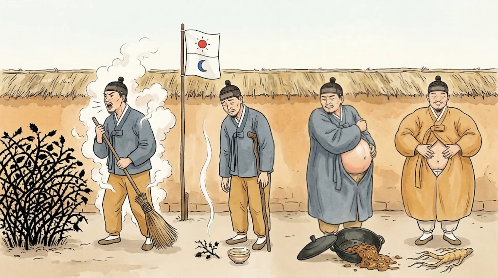
| 소품 | 잠그는 사실 (테스트 모드: 탭하여 확인) |
|---|---|
| 마을 의원 집 앞마당(이엉 얹은 흙담 앞) — 같은 생김새의 마을 남자 넷이 두 쌍으로 섬: 왼쪽 쌍(實 ↔ 虛)은 장대 깃발 하나가 가르고, 오른쪽 쌍(眞實假虛 ↔ 眞虛假實)은 겉옷과 배가 서로 거울상 왜? | 病機 ① 邪正盛衰 — 邪氣盛則實 · 精氣奪則虛(素問 通評虛實論) → 實者瀉之 · 虛者補之 / 虛實眞假: 大實有羸狀(眞實假虛 — 下法) · 至虛有盛候(眞虛假實 — 補法). 眞은 배와 按法(拒按·喜按)이, 假는 겉옷이 진다 |
| 다리 — 邪(검은 가시덤불)와 正(몸 둘레 흰 김)이 다투는 마당. 낱장 s16p01의 재작도 1순위 — 「精氣奪을 시든 가시덩굴로 그려 개념과 반대」 — 를 통합판에서 고쳤다: 虛 쪽은 덤불이 작아도 김이 실오라기(⅓)다. 사전 딥링크: 瀉(짚 빗자루 — 補瀉의 瀉 정본) · 補(찰랑한 따뜻한 국물) · 氣(흰 김) · 虛(⅓) · 實(팽팽하게 찬 것). 眞假는 규칙 156 — 겉옷 = 假, 그 틈으로 보이는 배 = 眞, 처방(쏟아 비운 무쇠솥 = 瀉-b 下法 · 人蔘 = 補)이 眞을 따른다 — 빈 솥만으로는 虛(속이 빔)로 읽혀 쏟아짐을 더했다. ◆ 개념 — 實은 邪氣가 성한 것이지 몸이 튼튼한 것이 아니다(邪正이 격렬히 다툼 — 聲高氣粗·壯熱·二便不通). 虛는 精氣의 소모로 정의된다(神疲體倦·氣短·自汗). 眞實假虛 = 實邪가 안에 막혀 기혈이 밖으로 못 나감(熱結旁流) → 攻, 補하면 사기를 가둠. 眞虛假實 = 정기가 극허해 장부가 헛되이 요동(脾虛 腹脹) → 補, 攻하면 남은 정기를 끊음. 下法 承氣湯은 s16u02 陽盛格陰과 같은 꼴(딥링크). ▸ 단원 통합(2026-10-23) — s16p01·02(14행)를 한 장에. 판독(blind51): 판 단원 4/4 虛實(邪正盛衰) 55~65%. 바탕 + ZA(拒按) 뒤 眞假 방향 1/2 → ZB(솥을 기울여 내용물을 밖으로 쏟음 = 瀉-b) 뒤 2/2, 사람 넷 4/4. 잔결: 검은 가시덤불·달 사전 미등재 · 補가 국그릇과 人蔘 두 꼴. | |
| [實虛] 첫째 남자 왼쪽에 가슴 높이로 솟은 커다란 검은 가시덤불(邪氣 盛) — 그의 몸 둘레에는 흰 김이 넉넉함(正氣 아직 셈) 왜? | 邪氣盛則實 |
| 다리 — 가시덩굴 뭉치가 邪氣다. 盛을 크기로 옮겼다. ◆ 개념 — 實은 邪氣가 성한 것이지 몸이 튼튼한 것이 아니다. 정기가 아직 버텨 邪正이 격렬히 다투므로 증상이 거세게 드러난다. ▸ 글자 사전 판정(2026-08-25, 규칙 120·127) — **「邪氣」의 氣에는 김을 놓지 않는다.** 邪氣는 한 낱말이고 검은 가시덩굴이 통째로 그것을 진다. 김을 얹으면 邪氣가 김이 되어 s15p07·s16p07·s18p11[2]의 **正氣 김과 뜻이 섞인다**(규칙 51). ⚠ 그런데 [3] 精氣奪則虛는 **邪氣의 사물(가시덩굴)로 精氣를 그려 놓아** 개념문과 그림이 정반대다 — 「몸 주위 흰 김의 양」(s16p07[0] 문법)으로 갈아야 한다(재작도 1순위). ▸ 숨은 자산 회수(2026-08-29, 규칙 120·150) — 이 칸의 소품은 **전부 §5 기등재 기호로 이미 이름을 지고 있다** — 가시덩굴=邪 · [2] 빗자루=瀉 · [5] 그릇의 따뜻한 국물=補 · [7] 깃발 위칸=陽·아래칸=陰. 盛·奪은 크기가 진다. ※판독자가 적은 「엿=飴」는 **따뜻한 국물의 오독**이다. ▸ 단원 통합(2026-10-23) — s16p01[0]에서 옮김. | |
| [實虛] 그 남자가 덤불을 향해 입을 크게 벌리고 소리침 왜? | 聲高氣粗 |
| 다리 — 소리가 높고 숨이 거친 것을 벌어진 입 하나로 옮겼다. ◆ 개념 — 實證의 표. 狂躁·壯熱·二便不通이 함께 온다. ▸ 단원 통합(2026-10-23) — s16p01[1]에서 옮김. | |
| [實虛] 그 남자가 쥔 짚 빗자루(사전 瀉 — 補瀉의 瀉) 왜? | 實者瀉之 |
| 다리 — 瀉는 쓸어내는 동작이다. 빗자루가 그 동작의 도구다. ◆ 개념 — 邪氣를 몰아내는 攻法. 汗·吐·下·淸이 모두 여기 속한다. ▸ 단원 통합(2026-10-23) — s16p01[2]에서 옮김. | |
| [實虛] 둘째 남자 발치의 손바닥만 하게 시든 가시덤불(邪 미미) — 그런데 그의 몸 곁 흰 김은 가는 실오라기 한 줄뿐(精氣奪 — 사전 虛) 왜? | 精氣奪則虛 |
| 다리 — 덩굴이 작다고 병이 가벼운 게 아니다. 奪을 시들어 줄어든 크기로 옮겼다. ◆ 개념 — 虛는 邪氣의 크기가 아니라 精氣의 소모로 정의된다. 邪가 미미해도 정기가 무너지면 虛다. ▸ 단원 통합(2026-10-23) — s16p01[3]에서 옮김. | |
| [實虛] 둘째 남자의 처진 어깨·감기는 눈 + 짚은 나무 지팡이 왜? | 神疲體倦 |
| 다리 — 정기가 빠지면 먼저 어깨가 처지고 눈이 감긴다. ◆ 개념 — 虛證의 표. 氣短·自汗과 함께 온다. 얼굴색으로 잡는 虛는 s12p04(→s12u02) 참조. ▸ 이름 회수 2차(2026-08-24, 규칙 126~131) — 神疲體倦 — 「처진 어깨 + 감기는 눈」은 **소품이 0개**다(규칙 106). 처방 — **옆구리에 세워 기대 놓은 지팡이 한 개.** 疲·倦(지쳐 스스로 못 섬)을 사물이 진다. 神은 포기. ▸ 단원 통합(2026-10-23) — s16p01[4]에서 옮김. | |
| [實虛] 둘째 남자 발치의 맑고 따뜻한 국물이 찰랑찰랑 찬 사발(가는 김 한 줄, 국자 없음 — 사전 補) 왜? | 虛者補之 |
| 다리 — 다리: 補는 채우는 동작이다. 그릇이 아니라 부어지는 국물 줄기가 그 동작이다. 그릇은 가구다. ◆ 개념 — 精氣를 채우는 補法. 補氣·補血·補陰·補陽으로 갈린다. ▸ 재작도 8차(2026-10-10, 규칙 173) — blind10에서 이 판이 **蜂蜜 35%**로 읽혔다. 종전 그림은 **국자에서 걸쭉한 황갈색 액체가 그릇에 넘치게 부어지는** 꼴이라 §5 **【甘】(나무 국자가 꽂힌 꿀단지)** + **【盛】(넘쳐 흘러나오는 것)**을 그대로 재현했고, 판독자가 甘·補·瀉·盛을 봉밀의 효능 목록으로 조립했다. 국자를 빼고, 넘치지 않게 하고, 꿀빛이 아니라 **맑은 국물**로 — 【補】= 「그릇에 찰랑찰랑 찬 따뜻한 국물」 그 꼴만 남긴다. 盛은 왼쪽 가시덩굴(邪氣盛)이 진다. ▸ 단원 통합(2026-10-23) — s16p01[5]에서 옮김. | |
| [實虛] 첫째와 둘째 사이 장대의 흰 깃발 하나 왜? | 素問 通評虛實論 |
| 다리 — 깃발은 §5에서 학설·어록 기호다. 하나만 세워 두 문장이 같은 조문에서 나왔음을 표시했다. ◆ 개념 — 邪氣盛則實 精氣奪則虛. 여덟 글자가 邪正盛衰의 정의 전부다. ▸ 단원 통합(2026-10-23) — s16p01[6]에서 옮김. | |
| [實虛] 그 깃발의 위 칸 붉은 해 · 아래 칸 푸른 초승달 왜? | 八綱 배속 — 實은 陽에 들고, 虛는 陰에 든다 |
| 다리 — 八綱의 「陽 = 表·熱·實 / 陰 = 裏·寒·虛」 중 虛實 한 쌍이 이 칸에 내려앉는다. 도해 s17p01이 지는 틀을 무대에서도 물을 수 있게 하는 줄이다(CANON 74-③). ▸ 단원 통합(2026-10-23) — s16p01[7]에서 옮김. | |
| [眞假] 셋째 남자 — 늘어져 헐렁한 회청색 겉옷(假 虛), 벌어진 앞섶 사이 북처럼 팽팽한 배(眞 實) 왜? | 大實有羸狀 — 眞實假虛 |
| 다리 — 겉옷이 假, 그 틈으로 보이는 배가 眞이다. 겉과 속을 옷 하나로 갈랐다. ◆ 개념 — 실사가 안에 꽉 막혀 기혈이 밖으로 못 나가면 오히려 허해 보인다. 熱結旁流·大結胸이 그 예다. ▸ 빈틈 메우기(2026-08-29) — 3차 판독 — 「몸 상태와 손동작이 서로 반대를 가리켜 어느 쪽이 虛인지 확정 불가」에서 멈췄다. **假象은 겉옷이, 眞象은 그 안이 진다**는 위계가 그림에 없었던 것이다. 두 윤곽선이 **동시에** 보여야 위계가 선다 — 앞섶을 크게 벌린다. → 규칙 156 신설. (종전 소품 — 왼쪽: 늘어진 겉옷 틈으로 보이는 북처럼 팽팽한 배) ▸ blind6(2026-09-02) ✗ — 人蔘 補氣 45%: 두 배 크기 남자(大)+사람꼴 뿌리+솥이 표제어를 훔쳤다(규칙 161). blind4 △의 「인삼 위치」 잔결이 유령으로 자랐다 → 인삼 소품 재배치·재작도 후보. ▸ 단원 통합(2026-10-23) — s16p02[0]에서 옮김. | |
| [眞假] 셋째 남자가 두 팔로 배 양옆을 감싸 막고 상체를 비틀어 돌림 왜? | 拒按 |
| 다리 — 누구도 배에 못 대게 막는 자세가 拒按이다. ◆ 개념 — 拒按이면 實이다. 겉의 動靜이 아무리 허해 보여도 이 한 가지가 眞을 드러낸다. ▸ 단원 통합(2026-10-23) — s16p02[1]에서 옮김. | |
| [眞假] 셋째 남자 발치의 뚜껑 벗겨진 검은 무쇠솥이 앞으로 기울어 비었고, 걸쭉한 갈색 덩이가 솥 밖 땅으로 쏟아짐(사전 瀉-b — 덜어냄 = 下法 承氣湯) 왜? | 下法 — 承氣湯 |
| 다리 — 다리: 뚜껑 잠긴 무쇠솥은 s13p02(→s13u01)에서 陽明腑證의 막힘이었다. 그 뚜껑을 여는 것이 下法이다. 뚜껑 열린 무쇠솥은 이 세트에서 언제나 같은 뜻이다. ◆ 개념 — 眞實假虛에는 攻해야 한다. 補하면 사기를 가두어 病이 깊어진다. 承氣湯은 s13p02(→s13u01) 참조. ▸ 이름 회수(2026-08-24, 규칙 120) — **承氣 = 胃氣를 承順시킨다.** 뚜껑이 열린 무쇠솥이 곧 「기를 내려보낸다」다 — s13p02[2]와 같은 기호다(딥링크). ▸ 단원 통합(2026-10-23) — s16p02[2]에서 옮김. | |
| [眞假] 넷째 남자 — 팽팽하게 부푼 황토색 겉옷(假 實), 벌어진 앞섶 사이 홀쭉하게 꺼진 배(眞 虛) 왜? | 至虛有盛候 — 眞虛假實 |
| 다리 — 겉옷은 부풀었는데 속은 비었다. 왼쪽과 정확히 거울상이다. ◆ 개념 — 정기가 극도로 허해 장부가 헛되이 요동치면 실증처럼 보인다. 脾虛로 배가 부른 것이 그 예다. ▸ 빈틈 메우기(2026-08-29) — 같은 문법. 판독자의 「인삼이 왜 살찐 쪽에 있는지 모르겠다」는 겉옷의 팽팽함만 보이고 속의 홀쭉함이 안 보였다는 뜻이다. (종전 소품 — 오른쪽: 팽팽하게 부푼 겉옷 틈으로 보이는 홀쭉한 배) ▸ 단원 통합(2026-10-23) — s16p02[3]에서 옮김. | |
| [眞假] 넷째 남자가 두 손바닥으로 배를 지그시 누르며 편안한 얼굴 왜? | 喜按 |
| 다리 — 눌러 주면 편안해하는 것이 喜按이다. ◆ 개념 — 喜按이면 虛다. 겉이 아무리 실해 보여도 이 한 가지가 眞을 드러낸다. 맥의 有力無力은 s12p10(→s12u03) 참조. ▸ 단원 통합(2026-10-23) — s16p02[4]에서 옮김. | |
| [眞假] 넷째 남자 발치의 팔다리 달린 사람 모양 인삼 뿌리 왜? | 補法 — 人蔘 |
| 다리 — 다리: 사람 모양 뿌리는 s14p01(→s14u01)에서 확립된 人蔘 기호다. 뿌리 하나면 언제나 人蔘이고, s16p06처럼 한 사발에 다른 뿌리와 나란히 놓일 때만 방제가 된다. ◆ 개념 — 眞虛假實에는 補해야 한다. 攻하면 남은 정기를 끊는다. 홑으로 진하게 달인 것이 獨蔘湯이며 大補元氣는 s14p01(→s14u01) 참조. ▸ 도구 교정 후 재판독(2026-08-29, 규칙 152·153) — △ **어느 쪽이 眞인지 표시가 없다.** 판독자가 虛·瘦↔肥·喜按·拒按을 다 집어내고도 「몸 상태와 손동작이 서로 반대를 가리켜 어느 쪽이 虛인지 확정 불가」에서 멈췄다. **假象이 몸에, 眞象이 손동작과 처방에 있다는 것이 이 칸의 요지인데 그 위계가 그림에 없다.** 眞을 지는 쪽(拒按·무쇠솥 / 喜按·인삼)에 표시가 필요하다. 판독자는 「인삼이 왜 살찐 쪽에 있는지 모르겠다」고도 했다. ▸ 단원 통합(2026-10-23) — s16p02[5]에서 옮김. | |
🔗 病機 ② 陰陽失調 — 의원 안채 방 네 칸의 여덟 사람 (偏盛 · 偏衰 · 格拒 · 亡失) 병기·陰陽失調 #s16u02
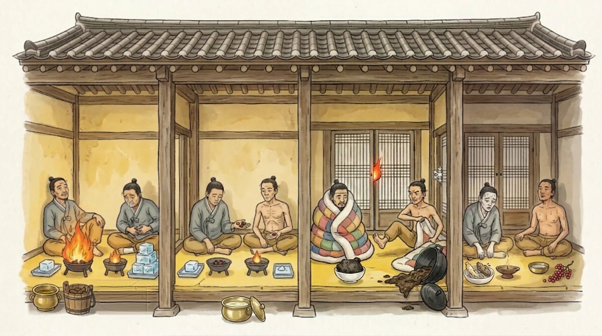
| 소품 | 잠그는 사실 (테스트 모드: 탭하여 확인) |
|---|---|
| 마을 의원 집 안채 — 앞벽을 걷어낸 단면처럼 나란한 온돌방 네 칸(偏盛 → 偏衰 → 格拒 → 亡失), 같은 생김새의 마을 남자가 칸마다 둘. 왼쪽 두 방은 저마다 제 화로 하나·얼음 쟁반 하나 왜? | 病機 ② 陰陽失調 — 偏盛(陽勝則熱·陰勝則寒 — 損其有餘) · 偏衰(陽虛則寒·陰虛則熱 — 補其不足: 益火之源 以消陰翳 / 壯水之主 以制陽光) · 格拒(陰盛格陽 眞寒假熱 / 陽盛格陰 眞熱假寒) · 亡失(亡陽 冷汗 — 參附湯 / 亡陰 熱汗而黏 — 生脈散) |
| 다리 — 불(陽)과 얼음(陰)의 크기가 글자다 — 偏盛은 한쪽이 세 배로 커지고, 偏衰는 한쪽이 삼분의 일로 준다(사전 虛). 같은 화로·쟁반 한 벌이 두 방에서 크기만 바뀌어 「넘쳐서 생긴 寒熱」과 「모자라서 생긴 寒熱」이 한눈에 갈린다. 格拒는 사전 格(막은 문틈으로 밀려 나가는 것)의 정본 자리 — 밀려 나간 것(불씨·눈송이)이 假, 방 안에 남은 쪽이 眞이며, 이불을 끌어안느냐 차내느냐가 眞을 진다(傷寒論 11조 身大熱反欲得衣 · 身大寒反不欲近衣). 亡失은 등잔(陽氣 기호 — s13u02 少陰의 꺼져 가는 등불과 같은 등불)이 실오라기로 꺼져 가는 쪽과 그릇 물이 졸아붙은 쪽(사전 陰)의 대비, 땀 둘(차고 굵은 구슬땀 ↔ 뜨겁고 번들거리는 땀). ◆ 개념 — 偏盛은 實(邪氣가 성함), 偏衰는 虛(정기가 모자람) — 같은 寒熱이라도 치법이 반대(瀉 ↔ 補). 格拒는 한쪽이 극성해 다른 쪽을 밖으로 몰아낸 危重 단계로, 겉의 寒熱이 거짓이다. 亡失은 陰陽이 갑자기 빠져나가는 危症 — 亡陰은 亡陽으로 이어지기 쉽다(陰陽互根). 下法 承氣湯 솥은 s16u01 眞實假虛와 같은 꼴(딥링크), 附子는 ③ 回陽 · ④ 參附湯 두 자리. ▸ 단원 통합(2026-10-23) — s16p03~06(25행)을 한 장에. 판독(blind53): 판 단원 4/4 陰陽失調 85%(네 갈래 이름까지). 偏盛·偏衰·亡失 여섯 사람 4/4. 格拒 방향 901 1/2(맨바닥 附子 = 燥屎) → 附子를 사발에 담고 문틈 불꽃을 키운 902 2/2. 잔결: 附子 꼴 두 자리 다름 · 偏衰 손의 약이 작음 · 陰陽互損 칸 없음. | |
| [偏盛] 첫째 방 왼쪽, 벽에 기댄 남자 — 제 화로의 불길이 곁 얼음 덩이의 세 배로 치솟음 왜? | 陽勝則熱 — 陽盛則熱 |
| 다리 — 얼음은 그대로인데 불만 세 배가 됐다. 넘친 쪽만 커진 것이 偏盛이다. ◆ 개념 — 陽偏盛으로 생긴 實熱이다. 상대가 줄어든 게 아니므로 淸熱瀉火로 넘치는 쪽을 덜어낸다. 損其有餘. ▸ 3차 재판독(2026-08-29, 규칙 150·153, blind3) — ✓ 陰陽偏盛 — 크기 대비로 陽盛則熱·陰盛則寒 + 尿黃·淸涕 ⚠ 왼쪽 표정이 너무 멀쩡해 대조군으로 오독 여지 ▸ 단원 통합(2026-10-23) — s16p03[0]에서 옮김. | |
| [偏盛] 그 남자 앞 마루 아래 놋요강 — 바닥에 조금만 고인 진한 누런 오줌 왜? | 小便短赤 |
| 다리 — 양이 적고 색이 진한 것을 요강에 고인 높이와 색으로 옮겼다. 오른쪽 칸과 다음 칸의 오줌이 이 축의 반대편이다. ◆ 개념 — 實熱이 진액을 태워 오줌이 짧고 붉어진다. 얼굴색으로 잡는 實熱은 s12p02(→s12u01) 참조. ▸ 단원 통합(2026-10-23) — s16p03[1]에서 옮김. | |
| [偏盛] 요강 곁 나무 뒷간통 속 바싹 마르고 굳은 덩이(큰 불 곁 — 熱結; s16u04 內燥의 「바닥까지 마른 물독」 곁과 이웃으로 가름) 왜? | 大便乾結 |
| 다리 — 다리: 열이 진액을 말리면 대변이 마른 흙덩이가 된다. ◆ 개념 — 實熱의 표. 같은 大便乾結이 s16p10 內燥에도 나온다 — 태워서 마르든 모자라서 마르든 결과는 하나다. 陽明腑證의 燥屎는 s13p02(→s13u01) 참조. ▸ 글자 사전 판정(2026-08-25, 규칙 120·127) — ⚠ **§5 위반 · 그림 수정 대기** — §5는 「**大便은 손잡이 달린 나무 뒷간통**으로, 小便은 요강으로 갈라 짓는다」로 2026-08-24에 이미 정했는데 이 칸은 맨 그릇을 쓴다. 맨 그릇은 §5에서 **뜻이 다섯**이다. ▸ 단원 통합(2026-10-23) — s16p03[2]에서 옮김. | |
| [偏盛] 첫째 방 오른쪽 남자 — 보통 크기 화로 불 곁에 세 배로 쌓인 투명한 얼음 덩이 왜? | 陰勝則寒 — 陰盛則寒 |
| 다리 — 불은 그대로인데 얼음만 세 배가 됐다. 왼쪽과 거울상이다. ◆ 개념 — 陰偏盛으로 생긴 實寒이다. 溫散으로 넘치는 陰을 덜어낸다. 역시 損其有餘. ▸ 단원 통합(2026-10-23) — s16p03[3]에서 옮김. | |
| [偏盛] 그 남자가 두 손으로 아랫배를 감싸 쥠 왜? | 脘腹冷痛 |
| 다리 — 찬 것이 뭉친 자리를 손이 가리킨다. ◆ 개념 — 寒邪가 기혈을 응체시켜 생기는 통증. 得溫則減. ▸ 글자 사전 판정(2026-08-25, 규칙 120·127) — ⚠ **전담 사물 오용 · 그림 수정 대기** — 「두 손으로 감싸 쥔 아랫배」는 몸짓이라 소품이 못 된다(규칙 106). 교체안: **아랫배에 곧게 박힌, 서리가 하얗게 앉은 쇠못 하나.** 쇠못은 라이브러리 전체 0회이고 冷과 痛을 한 사물이 함께 진다. ⚠ 못은 **하나**여야 한다 — 셋이면 §5-2 「久 = 같은 물건 셋」으로 읽혀 久痛이 된다. ▸ 단원 통합(2026-10-23) — s16p03[4]에서 옮김. | |
| [偏盛] 그 남자의 콧구멍에서 흘러 맺힌 맑은 물 같은 콧물과 떨어지는 물방울 왜? | 涕淸稀 |
| 다리 — 분비물이 맑고 묽은가 누렇고 걸쭉한가가 寒熱의 실전 지표다. ◆ 개념 — 寒證은 淸稀, 熱證은 黃稠. 콧물·가래·대소변 전부 같은 잣대를 쓴다. ▸ 단원 통합(2026-10-23) — s16p03[5]에서 옮김. | |
| [偏盛] 방마다 왼쪽 사람은 불(陽) 쪽의 일, 오른쪽 사람은 얼음(陰) 쪽의 일 — 불이 커지면 熱, 얼음이 커지면 寒 왜? | 八綱 배속 — 熱은 陽에 들고, 寒은 陰에 든다 |
| 다리 — 八綱의 寒熱 한 쌍이 이 칸에 내려앉는다. 偏盛의 陽勝則熱·陰勝則寒과 같은 축이라 딥링크다(§3-38). ▸ 단원 통합(2026-10-23) — s16p03[6]에서 옮김. | |
| [偏衰] 둘째 방 왼쪽 남자 — 보통 크기 얼음 덩이 곁, 불꽃 없이 숯불만 남은(⅓) 화로 왜? | 陽虛則寒 |
| 다리 — 얼음이 커진 게 아니라 불이 작아졌다. 앞 칸의 陰盛則寒과 그림의 논리가 정반대다. ◆ 개념 — 陽虛則外寒. 溫補로 모자란 쪽을 채운다. 補其不足. 實寒과 달리 攻하면 안 된다. ★ 딥링크 — 이 칸은 표제어만 「陰陽偏衰」이고 내용물은 이미 **腎陽虛**다. 치법이 益火之源→腎氣丸(腎 처방)인 것이 증거다. 腎陽虛의 딸린 증(畏寒肢冷·面色㿠白·五更泄瀉·浮腫)은 s16p09[6] 腰膝冷痛과 이 줄이 함께 진다. 舌淡胖苔白·尺脈沉遲. ▸ 단원 통합(2026-10-23) — s16p04[0]에서 옮김. | |
| [偏衰] 그 남자 앞 마루 아래 놋요강 — 맑은 오줌이 가장자리까지 가득 왜? | 小便淸長 |
| 다리 — 양이 많고 색이 맑은 것을 요강이 넘치도록 찬 높이로 옮겼다. 앞 칸의 短赤과 정확한 반대다. ◆ 개념 — 陽이 모자라 진액을 붙들지 못하면 오줌이 맑고 길어진다. 五更泄·畏寒과 함께 온다. ▸ 단원 통합(2026-10-23) — s16p04[1]에서 옮김. | |
| [偏衰] 그 남자가 손바닥에 올린 환약 한 알·계피 다발·검은 덩이 왜? | 益火之源 以消陰翳 — 腎氣丸 |
| 다리 — 다리: 환약·계피·검은 덩이는 s14p08 오른손에서 확립된 腎氣丸 기호 그대로다. 거기 함께 있던 불은 이 칸에서 크기 축이 쓰고 있으므로 손에는 넣지 않는다. 불과 얼음은 땅에, 약은 손에 두어 자리를 갈랐다. ◆ 개념 — 陽虛의 대표방. s14p08 참조. ★ 딥링크 — 腎陽虛의 대표방은 腎氣丸과 **右歸丸**(『景岳全書』卷51 新方八陣 補陣)이다. ▸ 숨은 자산 회수(2026-08-29, 규칙 120·150) — **두 처방이 구성 약재로 이름을 진다** — 계피(桂)+검은 덩이(附)를 더한 것이 腎氣丸이고, [5] 붉은 환약 여섯이 六味다. 판독자가 「계피」를 집어냈다. 방제명을 소리로 짓지 않고 **구성으로 짓는 방식**이라, 이름 회수가 곧 구성 암기가 된다. ▸ 단원 통합(2026-10-23) — s16p04[2]에서 옮김. | |
| [偏衰] 둘째 방 오른쪽 남자 — 보통 크기 화로 불 곁, 삼분의 일로 줄어든 얼음 조각 왜? | 陰虛則熱 |
| 다리 — 불이 커진 게 아니라 얼음이 녹았다. 그래서 열이 은은하고 때가 있다. ◆ 개념 — 陰虛則內熱. 滋陰으로 채운다. 壯水之主 以制陽光. ★ 딥링크 — 이 줄이 지는 것은 **腎陰虛**다. 치법이 壯水之主→六味地黃丸(腎 처방)인 것이 증거다. 顴紅·潮熱盜汗은 s12p02[2](→s12u01)·s13p05[3](→s13u02)에, 腰膝痠軟은 s16p09[6]에 있다. 舌紅少苔·脈細數. ⚠ 腎陰虛는 陽痿가 아니라 **陽强易舉**다 — 「성기능 이상=腎陽虛」로 단정하면 틀린다. ▸ 단원 통합(2026-10-23) — s16p04[3]에서 옮김. | |
| [偏衰] 그 남자 — 웃통 벗어 갈비뼈가 드러난 여윈 몸 왜? | 形體消瘦 |
| 다리 — 陰液이 마르면 살이 빠진다. 몸의 두께 자체가 사실이다. ◆ 개념 — 陰虛의 표. 顴紅·五心煩熱은 s12p02(→s12u01)가 **그림으로** 담당하고, 潮熱·盜汗은 **라벨이 진다** (2026-08-08 — 盜汗은 「자는 동안」이라는 시간축이 있어야 성립하고 땀은 s16p06·s11p02(→s11u01) 전담이라 그림에서 뺐다). ▸ 단원 통합(2026-10-23) — s16p04[4]에서 옮김. | |
| [偏衰] 그 남자 손바닥의 붉은 환약 알갱이 왜? | 壯水之主 以制陽光 — 六味地黃丸 |
| 다리 — 붉은 환약 여섯은 s14p08에서 확립된 六味地黃丸 기호다. 그대로 재사용한다. ◆ 개념 — 陰虛의 대표방. s14p08 참조. ★ 딥링크 — 腎陰虛의 대표방은 六味地黃丸(『小兒藥證直訣』)과 **左歸丸**(『景岳全書』卷51)이다. 六味는 三補三瀉(補中有瀉), 左歸는 純補無瀉 — 이 차이가 출제 소재다. ▸ 수 다리 실측·수리(2026-08-29, 규칙 146) — 붉은 환약이 일곱이었다. s14p08과 **같은 오류가 두 판에 똑같이** 들어 있었다. 위 3·아래 3의 여섯으로 맞췄다. 재검산 — 6알. ▸ 단원 통합(2026-10-23) — s16p04[5]에서 옮김. | |
| [格拒] 셋째 방 왼쪽 남자 뒤 — 꼭 닫힌 미닫이문 틈에 끼어 밖으로 밀려 나가는 붉은 불씨(사전 格) 왜? | 陰盛格陽 — 眞寒假熱 |
| 다리 — 다리: 格은 문을 막는 것, 拒는 밀어내는 것이다. 두 글자를 그대로 동작으로 옮겼다. 밖으로 밀려난 불씨가 假熱이다. 불꽃=熱은 s14p09 정본. ◆ 개념 — 陰寒이 안에 가득 차 미약한 陽을 밖으로 몰아낸 危重 단계. 戴陽이라고도 한다. ▸ 3차 재판독(2026-08-29, 규칙 150·153, blind3) — ✓ 陰陽格拒 — 身大熱反欲得衣 ↔ 身大寒反不欲近衣 표제어 확신 상 ⚠ 발밑 검은 덩어리·빈 단지 의미 유보 ▸ 단원 통합(2026-10-23) — s16p05[0]에서 옮김. | |
| [格拒] 그 남자가 온몸에 둘러 끌어안은 두꺼운 솜이불 왜? | 身熱反欲得衣 |
| 다리 — 이불의 「끌어안는가 걷어차는가」 = 寒熱 欲惡 축은 **이 칸 좌우 두 자리가 전담한다**. (2026-08-08 — s12p02(→s12u01)의 이불은 3차 재작도에서 폐기했다. 그 칸은 이제 얼굴색과 손바닥만으로 實熱↔虛熱을 진다.) ◆ 개념 — 假象은 겉에 있고 眞象은 欲惡에 있다. 덥다면서 옷을 더 껴입으면 眞寒이다. ▸ 글자 사전 판정(2026-08-25, 규칙 120·127) — **假象(身熱)에는 불꽃을 놓지 않는다.** 假熱은 앞 행의 **문틈으로 밀려 나간 불씨**가 이미 지고, 이 자리는 이불의 欲惡 한 축만 전담한다(규칙 120). ▸ 단원 통합(2026-10-23) — s16p05[1]에서 옮김. | |
| [格拒] 그 남자 앞 흰 사발에 담긴 검은 방울 맺힌 덩이뿌리(附子) 왜? | 回陽 — 附子 |
| 다리 — 검은 방울 덩이뿌리는 s14p02(→s14u01)에서 확립된 附子 기호다. ◆ 개념 — 眞寒假熱에는 熱藥을 쓴다. 淸熱하면 즉시 무너진다. s14p02(→s14u01) 참조. ▸ 단원 통합(2026-10-23) — s16p05[2]에서 옮김. | |
| [格拒] 셋째 방 오른쪽 남자 뒤 — 쪽문 틈에 반쯤 끼어 밖으로 밀려 나가는 눈송이 왜? | 陽盛格陰 — 眞熱假寒 |
| 다리 — 다리: 같은 格拒인데 밀려난 것이 눈송이다. 불꽃=熱 · 눈송이=寒은 s14p09 往來寒熱의 추가 매달린 그 두 기호 그대로다. 그래서 손발만 차다. ◆ 개념 — 熱邪가 안에 갇혀 陽氣가 사지 끝까지 못 나간 것. 熱深厥亦深. ▸ 단원 통합(2026-10-23) — s16p05[3]에서 옮김. | |
| [格拒] 그 남자(웃통 벗음)가 발로 차 밀어낸 두꺼운 솜이불 왜? | 身寒反不欲近衣 |
| 다리 — 왼쪽 이불과 완전한 거울상. 欲惡 한 축만 보면 格拒 두 갈래가 갈린다. ◆ 개념 — 춥다면서 옷을 밀어내면 眞熱이다. ▸ 글자 사전 판정(2026-08-25, 규칙 120·127) — **假象(身寒)에는 눈송이를 놓지 않는다.** 위 [1]의 거울상이다. ▸ 단원 통합(2026-10-23) — s16p05[4]에서 옮김. | |
| [格拒] 그 남자 곁 — 기울어 비고 걸쭉한 내용물이 밖으로 쏟아진 무쇠솥(s16u01 眞實假虛 솥과 같은 꼴 — 사전 瀉-b) 왜? | 下法 — 承氣湯 |
| 다리 — 다리: s13p02(→s13u01)·s16p02와 같은 소품이라 뜻도 같다. 갇힌 열을 아래로 뚫는 것이 下法이다. ◆ 개념 — 眞熱假寒에는 淸下한다. 溫하면 태운다. 같은 承氣湯이라도 s16p02는 막힌 實을 밀어내고 이쪽은 갇힌 熱을 뚫는다. s13p02(→s13u01) 참조. ▸ 이름 회수(2026-08-24, 규칙 120) — **承氣 = 胃氣를 承順시킨다.** s13p02[2]·s16p02[2]와 같은 기호다(딥링크). ▸ 단원 통합(2026-10-23) — s16p05[5]에서 옮김. | |
| [亡失] 넷째 방 왼쪽 남자 앞 기름 접시 등잔 — 불꽃이 실오라기만큼 남아 꺼져 감 왜? | 亡陽 |
| 다리 — 다리: 등불은 s13p03(→s13u01)·s14p01(→s14u01)·s13p05(→s13u02)에서 확립된 陽氣 기호이며 뜻은 언제나 하나다 — 불꽃의 크기가 陽氣의 양. s14p01에서 人蔘이 세 배로 키운 그 등불의 정반대 끝이고, s13p05 少陰의 꺼져가는 등불과 같은 등불이다. ◆ 개념 — 陽氣가 갑자기 빠져나간 危症. 촌각을 다툰다. 少陰病이 끝까지 간 자리가 곧 亡陽이므로 s13p05(→s13u02)와 한 등불로 읽는다. ▸ 3차 재판독(2026-08-29, 규칙 150·153, blind3) — ✓ 陰陽亡失 — 亡陽(꺼져가는 등잔+參附) ↔ 亡陰(붉고 헐떡+五味) + 오미 5개 셈 ▸ 단원 통합(2026-10-23) — s16p06[0]에서 옮김. | |
| [亡失] 그 남자의 창백한 이마에 맺힌 굵은 구슬땀 왜? | 大汗淋漓 · 冷汗 |
| 다리 — 땀의 성질이 亡陽과 亡陰을 가르는 유일한 갈림목이다. 맺히는가 흐르는가, 찬가 뜨거운가. ◆ 개념 — 冷汗이면 亡陽. 四肢厥冷·脈微欲絶이 함께 온다. s13p05(→s13u02)·s14p02(→s14u01) 참조. ▸ 단원 통합(2026-10-23) — s16p06[1]에서 옮김. | |
| [亡失] 그 남자 곁 흰 사발에 나란한 사람 모양 人蔘과 검은 방울 덩이뿌리 왜? | 回陽救逆 — 參附湯 |
| 다리 — 人蔘과 附子 두 기호가 이미 따로 있으므로, 한 그릇에 나란히 놓는 것만으로 방제 이름이 된다. ◆ 개념 — 亡陽의 구급방. 獨蔘湯·四逆湯 계열과 함께 쓴다. s14p01(→s14u01)·s14p02(→s14u01) 참조. ▸ 단원 통합(2026-10-23) — s16p06[2]에서 옮김. | |
| [亡失] 넷째 방 오른쪽 남자 곁 놋그릇 — 물이 졸아붙어 바닥에 얇은 막만(사전 陰 = 졸아드는 고인 물) 왜? | 亡陰 |
| 다리 — 陽은 불이라 꺼지고 陰은 물이라 마른다. 같은 危症이라도 형태가 갈린다. ◆ 개념 — 陰液이 갑자기 마른 危症. 끝은 陰陽離決이다. ▸ 단원 통합(2026-10-23) — s16p06[3]에서 옮김. | |
| [亡失] 그 남자(웃통 벗음)의 얼굴·몸에 번들거리며 흘러내리는 땀 왜? | 汗熱而黏 |
| 다리 — 같은 大汗인데 뜨겁고 끈적하며 줄줄 흐른다. ◆ 개념 — 黏汗이면 亡陰. 煩渴·皮膚乾癟이 함께 온다. ▸ 단원 통합(2026-10-23) — s16p06[4]에서 옮김. | |
| [亡失] 붉은 작은 열매가 송이로 달린 가지 왜? | 益氣救陰 — 生脈散 |
| 다리 — 五味子는 이름이 곧 다섯 맛이라 §5의 오미 음식 다섯을 한 알에 박아 넣었다. ◆ 개념 — 人蔘·麥門冬·五味子 셋으로 氣와 陰을 함께 잡는다. ▸ 단원 통합(2026-10-23) — s16p06[5]에서 옮김. | |
🔗 病機 ③ 氣血失常 — 의원 집 뒤뜰의 일곱 사람 (氣 虛·滯·逆·陷 | 血 虛·瘀·熱) 병기·氣血失常 #s16u03
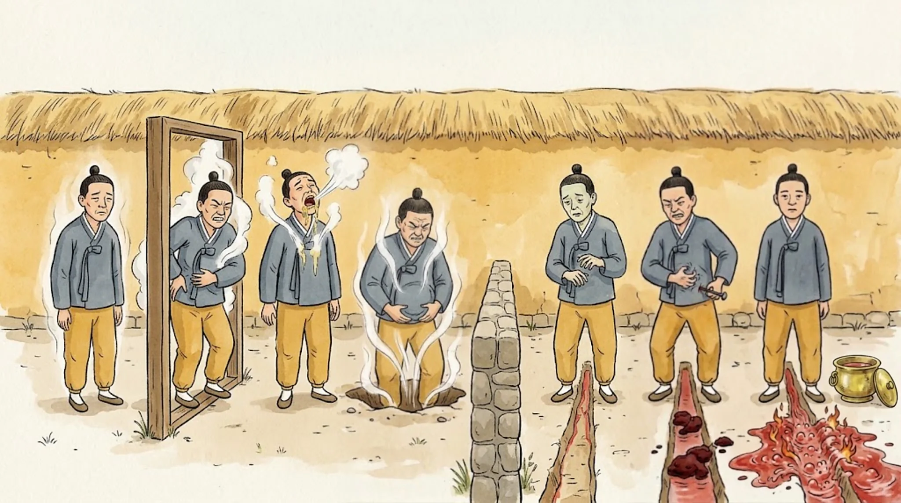
| 소품 | 잠그는 사실 (테스트 모드: 탭하여 확인) |
|---|---|
| 마을 의원 집 뒤뜰(이엉 흙담) — 같은 생김새의 마을 남자 일곱, 가운데 낮은 돌담이 가름: 왼쪽 넷은 몸 둘레 흰 김(氣)의 양·방향이, 오른쪽 셋은 저마다 제 앞 붉은 물 도랑(血)의 상태가 글자 왜? | 病機 ③ 氣血失常 — 氣의 失常: 氣虛(총량 부족) · 氣滯(흐름 막힘 → 脹痛) · 氣逆(升降 거꾸로 — 肺·胃·肝) · 氣陷(升擧 무력 → 內臟下垂) / 血의 失常: 血虛(부족 → 麻木) · 血瘀(운행 막힘 → 刺痛·痛處固定) · 血熱(熱迫血行 → 出血·尿血) |
| 다리 — 氣는 김(사전 氣)이고 血은 붉은 물(사전 血 · 냇물 = 흐름)이다. 氣 넷은 김의 양 하나(虛 ⅓)와 방향 셋(문틀에 끼어 멈춤 = 滯 · 입으로 거꾸로 = 逆 · 구덩이로 빨려 내려감 = 陷)으로, 血 셋은 도랑 물의 양(잦아듦 = 虛) · 막힘(덩어리 = 瘀) · 넘침(불꽃 + 넘침 = 熱·盛)으로 갈린다. 낱장 s16p07이 「上吐下瀉(霍亂)」로 조립되던 문제(blind6)는 몸의 병증(다문 입·옆구리 누름·신물·받쳐 든 배)을 붙이고 逆을 입으로, 陷을 구덩이로 못박아 풀었다(blind55 7/7·7/7). ◆ 개념 — 氣虛가 바탕이 되어 氣陷(中氣下陷)이 오고, 氣滯가 오래면 血瘀(氣滯血瘀)가 된다. 血虛·血熱도 瘀로 이어진다(離經之血 = 瘀). 쇠못(刺痛)은 s15u03 瘀血 남자의 옆구리 쇠못과 같은 痛 — 딥링크. 尿血은 놋요강의 붉은 오줌이나 사전 補-b(그릇에 찬 것)로 새어 「補血」로 읽힘(잔결). ▸ 단원 통합(2026-10-23) — s16p07·08(14행)을 한 장에. 판독(blind55): 판 단원 2/2 氣血失常 90%, 사람 7/7·7/7. 띠 氣 80%·血 70%. 잔결: 尿血(붉은 것이 찬 요강 → 補-b) · 氣滯 문틀 → 氣閉 갈림. | |
| [氣] 왼쪽 첫째 남자 — 몸 둘레 흰 김이 나머지 셋의 삼분의 일(사전 氣 + 虛) 왜? | 氣虛 |
| 다리 — 셋은 방향의 문제인데 이 칸만 양의 문제라 크기로 그렸다. ◆ 개념 — 氣의 총량 부족. 治法은 補氣이며 四君子湯은 s14p07 참조. 얼굴색으로 잡는 氣虛는 s12p04(→s12u02) 참조. ▸ 숨은 자산 회수(2026-08-29, 규칙 120·150) — **김의 양과 방향이 네 글자를 그대로 진다** — 적음=虛 · [2] 문목에 낌=滯 · [4] 거꾸로 뻗침=逆 · [6] 꺼짐=陷. 전부 동작 직역이다. 판독자가 「문=門 + 김 네 방향=升降出入」로 읽었다. ▸ blind6(2026-09-02) ✗ — 霍亂 50%: 김의 방향 넷(上·中·吐·下)은 읽혔으나 「上吐下瀉」로 조립됐다. 氣失常 넷(虛·陷·滯·逆)의 틀이 안 보인다 → 재작도 후보. ▸ 단원 통합(2026-10-23) — s16p07[0]에서 옮김. | |
| [氣] 그 남자의 굳게 다문 입·처진 눈 왜? | 少氣懶言 |
| 다리 — 말하기조차 귀찮은 상태를 다물린 입 하나로 옮겼다. ◆ 개념 — 神疲乏力·自汗과 함께 온다. ▸ 단원 통합(2026-10-23) — s16p07[1]에서 옮김. | |
| [氣] 둘째 남자 — 문짝 없는 좁은 나무 문틀에 그의 김이 꽉 끼어 부풀어 멈춤 왜? | 氣滯 |
| 다리 — 滯는 막혀 고이는 것이다. s15p08의 思則氣結은 머리 위 매듭이므로 형태가 갈린다. ◆ 개념 — 治法은 行氣. 자리가 옮겨 다니고 트림이나 방귀 뒤에 덜해진다. ▸ 단원 통합(2026-10-23) — s16p07[2]에서 옮김. | |
| [氣] 그 남자가 한 손으로 옆구리를 누르고 찡그림 왜? | 脹痛 |
| 다리 — 氣滯의 통증은 뻐근하게 부푸는 脹痛이다. ◆ 개념 — 刺痛인 血瘀와 갈린다. 血瘀는 다음 칸 참조. ▸ 글자 사전 판정(2026-08-25, 규칙 120·127) — ⚠ **전담 사물 오용 · 그림 수정 대기** — 「옆구리를 누른 손」은 몸짓이다(규칙 106). 교체안: **옆구리에 박힌 쇠못 하나.** ▸ 단원 통합(2026-10-23) — s16p07[3]에서 옮김. | |
| [氣] 셋째 남자 — 김이 가슴에서 위로 거꾸로 뻗쳐 벌린 입 밖으로 뿜어짐(머리 꼭대기 아님) 왜? | 氣逆 |
| 다리 — 逆은 거꾸로 가는 것이다. s15p07의 怒則氣上은 정수리로 솟으므로 자리가 갈린다. ◆ 개념 — 肺氣上逆은 咳喘, 胃氣上逆은 惡心嘔吐, 肝氣上逆은 頭痛眩暈. 治法은 降逆이며 半夏는 s14p06(→s14u02) 참조. ▸ 단원 통합(2026-10-23) — s16p07[4]에서 옮김. | |
| [氣] 그 남자의 입가로 넘쳐 흐른 누런 신물 왜? | 噯氣 |
| 다리 — 위의 기운이 거꾸로 올라온 결과가 신물과 트림이다. ◆ 개념 — 惡心·嘔吐와 한 묶음이다. ▸ 단원 통합(2026-10-23) — s16p07[5]에서 옮김. | |
| [氣] 넷째 남자 — 발밑 땅이 꺼진 구덩이에 무릎까지 빠지고 김도 구덩이로 빨려 내려감 왜? | 氣陷 |
| 다리 — 陷은 꺼져 빠지는 것이다. s15p08의 恐則氣下는 선 채로 놀란 순간이고 이쪽은 오래된 下垂다. ◆ 개념 — 中氣下陷. 氣虛가 오래되어 떠받치는 힘을 잃은 것이다. ▸ 단원 통합(2026-10-23) — s16p07[6]에서 옮김. | |
| [氣] 그 남자가 두 손으로 아랫배를 아래에서 받쳐 듦 왜? | 內臟下垂 |
| 다리 — 아래로 처지는 것을 손으로 받치는 자세가 下垂의 형태다. ◆ 개념 — 脫肛·胃下垂·久瀉. 治法은 升擧이며 補中益氣湯의 黃芪는 s14p05(→s14u01) 참조. ▸ 단원 통합(2026-10-23) — s16p07[7]에서 옮김. | |
| [血] 돌담 오른쪽 첫째 남자 앞 도랑 — 붉은 물이 바닥이 드러나도록 잦아든 실개천 왜? | 血虛 |
| 다리 — 냇물은 §5에서 흐름의 기호다. 붉은 냇물이 血이며 양이 사실이다. 손목이 아니라 땅 위에 있어 맥과 구별된다. ◆ 개념 — 血의 총량 부족. 治法은 補血이며 四物湯은 s14p07, 當歸는 s14p04(→s14u01) 참조. 얼굴색으로 잡는 血虛는 s12p04(→s12u02) 참조. ▸ 단원 통합(2026-10-23) — s16p08[0]에서 옮김. | |
| [血] 그 남자(창백한 얼굴)가 저린 손끝을 털어 냄 왜? | 手足麻木 |
| 다리 — 혈이 사지 끝까지 못 가면 저린다. ◆ 개념 — 頭暈·心悸·失眠과 한 묶음이다. ★ 딥링크 — **肝血虛의 肢體麻木도 이 자리다.** s20p08(肝 血虛↔陽上亢)이 별도로 그리지 않고 여기를 쓴다. ▸ 단원 통합(2026-10-23) — s16p08[1]에서 옮김. | |
| [血] 둘째 남자 앞 도랑 — 검붉게 굳은 덩어리들(사전 瘀)에 막혀 멈춘 붉은 물 왜? | 血瘀 |
| 다리 — s15p09는 병리산물로서의 瘀血이고 이 칸은 병기로서의 血行失常이다. 같은 소품을 두 층위로 쓴다. ◆ 개념 — 治法은 活血化瘀. 犀角地黃湯은 s13p10(→s13u03) 참조. ▸ 단원 통합(2026-10-23) — s16p08[2]에서 옮김. | |
| [血] 그 남자의 아랫배 한 자리에 꽂힌 쇠못 하나(사전 痛)와 갈고리처럼 굽혀 그 자리를 움켜쥔 손 왜? | 痛處固定 · 刺痛 |
| 다리 — 어혈의 통증은 자리가 고정되고 바늘로 찌르는 듯하다. 앞 칸의 脹痛과 갈린다. ◆ 개념 — 拒按·夜間加重·舌紫暗이 함께 온다. ▸ 글자 사전 판정(2026-08-25, 규칙 120·127) — ⚠ **전담 사물 오용 · 그림 수정 대기** — 「움켜쥔 갈고리 같은 손」은 몸짓이다(규칙 106). 교체안: **어깨 한 자리에 곧게 박힌 쇠못 하나.** 「한 자리 고정」이 못의 자리로 서고 刺痛이 못의 형태로 선다. ▸ 빈틈 메우기(2026-08-29, 글자 사물 적용) — **刺痛(찌르는 아픔)·痛處固定(자리가 옮기지 않음)** 둘을 못 하나가 다 진다 — 못은 찌르는 것이고 박힌 것은 자리를 옮기지 않는다. 종전 「움켜쥔 손」만으로는 규칙 106(몸짓만이면 회수가 약하다)에 걸렸고, 瘀血의 결정 표지인 이 행이 그림에서 안 섰다. (종전 소품 — 가운데: 한 자리를 움켜쥔 갈고리 같은 손) ▸ 단원 통합(2026-10-23) — s16p08[3]에서 옮김. | |
| [血] 셋째 남자 앞 도랑 — 불꽃이 핥으며 붉은 물이 끓어 넘쳐 둑 밖으로 넓게 흘러나감(사전 熱 + 盛) 왜? | 血熱 |
| 다리 — 열이 血을 요동시켜 맥 밖으로 내모는 것을 범람으로 옮겼다. ◆ 개념 — 迫血妄行. 治法은 淸熱凉血이며 犀角地黃湯은 s13p10(→s13u03) 참조. 病因으로서의 火熱은 s15p06(→s15u01) 참조. ▸ 도구 교정 후 재판독(2026-08-29, 규칙 152·153) — ✓ **온전.** 판독자가 血·血虛·瘀·血熱·溢을 전부 확신도 「상」으로 복원했다. 냇물의 **양·막힘·범람**이 세 글자를 그대로 나른다(규칙 152). ▸ 단원 통합(2026-10-23) — s16p08[4]에서 옮김. | |
| [血] 그 남자 곁 놋요강 — 붉게 물든 오줌 왜? | 尿血 |
| 다리 — 혈이 맥을 벗어나 나오는 자리 가운데 하나다. ◆ 개념 — 吐血·衄血·便血·斑疹과 한 묶음이다. 斑疹은 s13p09(→s13u03)·s13p10(→s13u03) 참조. ▸ 단원 통합(2026-10-23) — s16p08[5]에서 옮김. | |
🔗 病機 ④ 內生五邪 — 빗장 건 궁궐 안마당의 오행왕국 다섯 인물 (肝 內風 · 心 內火 · 脾 內濕 · 肺 內燥 · 腎 內寒) 병기·內生五邪 #s16u04
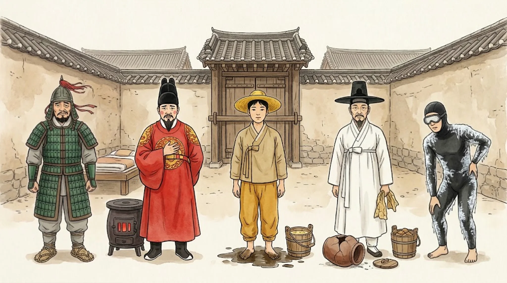
| 소품 | 잠그는 사실 (테스트 모드: 탭하여 확인) |
|---|---|
| 높은 흙담에 사방이 둘러싸이고 대문은 빗장을 건 채 닫힌 궁궐 안마당 — 날씨·계절 없음, 풀 한 포기 흔들리지 않음. 오행왕국 다섯 인물(肝 장군 · 心 임금 · 脾 농부 · 肺 재상 · 腎 잠수부)이 五行 相生 차례로 한 줄 왜? | 病機 ④ 內生五邪 — 臟腑 기능 失調로 몸 안에서 생긴 風寒濕燥火(外感 六淫과 이름만 같다): 風氣內動(肝 — 動搖·喎斜) · 火熱內生(心 — 心煩·不寐) · 濕濁內生(脾 — 便溏) · 津傷化燥(肺·胃·大腸 — 津液不足·大便乾結) · 寒從中生(腎 — 腰膝冷痛) |
| 다리 — 틀이 글자다 — 빗장 건 담 **안쪽**(사전 內)에 날씨가 없다. s15u01 六淫(흙담 바깥 길, 날씨가 주인공)의 거울: 같은 風·火·濕·燥·寒이 이 판에서는 **그 사람의 몸·발밑·닫힌 화덕 안**에서만 난다(장군 술만 날림 · 맨발 밑에서만 진창 · 옷 안에서 밴 서리 · 문 닫힌 화덕). 다섯 인물(사전 五臟)이 「어느 臟에서 나느냐」를 그대로 진다(blind57 5/5·5/5). ◆ 개념 — 內風은 肝陽化風·熱極生風·陰虛風動·血虛生風 네 갈래. 內寒은 腎陽虛(s16u02 偏衰 陽虛와 딥링크). 內燥는 汗吐下 過度·失血·久病. 大便乾結은 s16u02 陽盛 뒷간통(큰 불 곁 = 熱結)과 같은 꼴, 여기는 마른 물독 곁(津虧) — 감사 §3-a 갈림. ▸ 단원 통합(2026-10-23) — s16p09·10(12행)을 한 장에. 판독(blind57): 판 단원 2/2 內生五邪 70~80%, 다섯 인물 → 다섯 內邪 5/5·5/5. 띠 z72는 便溏 ↔ 大便乾結 대비까지. 잔결: 不寐 이부자리 뜻 불명 · 乾結 통 주인(판 전체) · 口眼喎斜 약함. | |
| [風·濕·寒] 초록 갑옷 장군 — 바람 한 점 없는 마당에서 그의 투구 끈·술만 한쪽으로 쏠려 누워 날림(사전 風 — 2026-08-25 판정의 교체안 「한쪽으로 쏠려 누운 갑옷 술과 투구 끈」) 왜? | 內風 — 肝風內動 |
| 다리 — 장군은 §5에서 肝이다. 캐릭터가 곧 장부다. ◆ 개념 — 諸風掉眩 皆屬於肝. 肝陽化風·熱極生風·陰虛風動·血虛生風 네 갈래이며 動搖·眩暈·抽搐·震顫이 공통 표다. ▸ 글자 사전 판정(2026-08-25, 규칙 120·127) — ⚠ **전담 사물 오용 · 그림 수정 대기** — 「저절로 떨리는 두 손」은 몸짓이다(규칙 106). §5-2 風 = 「한쪽으로 눕고 옆으로 흘러 날리는 것」. 교체안: **한쪽으로 쏠려 누운 갑옷 술과 투구 끈.** ▸ 숨은 자산 회수(2026-08-29, 규칙 120·150) — **오행왕국 세 인물을 그대로 데려와 臟을 진다** — 초록 갑옷 장군=肝 · [2] 노란 밀짚모자 농부=脾 · [4] 검은 잠수복=腎. 內生五邪가 「어느 臟에서 나느냐」를 인물로 못 박은 것이라, **세트 변별 자산이다**(규칙 148). 판독자가 「갑옷=甲·얼음=寒·삿갓=濕」으로 읽었다. ▸ 단원 통합(2026-10-23) — s16p09[0]에서 옮김. | |
| [風·濕·寒] 그 장군의 한쪽으로 처져 끌려 내려간 얼굴 왜? | 口眼喎斜 |
| 다리 — 다리: 한쪽으로만 끌려간 얼굴이 風의 動搖가 한 자리에 굳은 형태다. 떨리는 손이 動이라면 이쪽은 그 動이 남긴 자국이다. ◆ 개념 — 肝風內動의 대표 표. 半身不遂·舌強語謇과 한 묶음이며 熱極生風의 抽搐·角弓反張은 s13p10(→s13u03) 참조. ▸ 단원 통합(2026-10-23) — s16p09[1]에서 옮김. | |
| [風·濕·寒] 노란 밀짚모자 농부 — 마른 마당에서 그의 맨발 바로 밑에서만 배어 오르는 진창(사전 內濕) 왜? | 內濕 — 濕濁內生 |
| 다리 — 농부는 §5에서 脾다. 진창이 길에 있지 않고 자기 발밑에서 나온다. s15p04(→s15u01)에서는 마을 길이 진창이었다. ◆ 개념 — 脾失健運이 근본이다. 外濕은 環境이고 內濕은 脾다. ▸ 단원 통합(2026-10-23) — s16p09[2]에서 옮김. | |
| [風·濕·寒] 그 농부 곁 나무 뒷간통의 묽게 풀어진 누런 물(사전 便 — 大便 = 나무 뒷간통) 왜? | 便溏 |
| 다리 — 脾가 운화를 못 하면 변이 묽어진다. ◆ 개념 — 脘腹脹滿·食少와 한 묶음이다. 浮腫은 s15p04(→s15u01) 참조. ▸ 글자 사전 판정(2026-08-25, 규칙 120·127) — ⚠ **§5 위반 · 그림 수정 대기** — 便溏도 大便이라 나무 뒷간통으로. 지금은 「옆 그릇」이다. ▸ 단원 통합(2026-10-23) — s16p09[3]에서 옮김. | |
| [風·濕·寒] 검은 잠수복 잠수부 — 잠수복 안쪽에서 배어 나와 곳곳에 하얗게 핀 서리(사전 寒 갈림: 밑에서 밴 서리 = 內寒, 눈은 내리지 않음) 왜? | 內寒 — 寒從中生 |
| 다리 — 잠수부는 §5에서 腎이다. 서리가 겉에 내린 게 아니라 옷 안에서 나온다. s15p02(→s15u01)에서는 바깥 냇물이 얼었다. ◆ 개념 — 脾腎陽虛가 근본이다. 外寒은 實寒이라 흩고 內寒은 虛寒이라 溫補한다. ▸ 단원 통합(2026-10-23) — s16p09[4]에서 옮김. | |
| [風·濕·寒] 그 잠수부가 허리를 굽혀 한 손 허리·한 손 무릎을 감쌈 왜? | 腰膝冷痛 |
| 다리 — 腎陽이 모자라면 허리와 무릎부터 시리다. ◆ 개념 — 畏寒·五更泄·小便淸長과 한 묶음이다. ★ 딥링크 — 이 자리가 **腰膝을 통째로 진다**: 腎陽虛의 腰膝冷痛(이 줄) · 腎陰虛와 肝陽上亢의 腰膝痠軟. 한 몸짓에 뜻을 여럿 얹지 않기 위해 별도 소품을 만들지 않았다(규칙 72·106). ⚠ 한국 기본서는 「肝陽上亢에서 볼 수 없는 것 = 腰膝痠軟」으로 출제하는데, 같은 책 본문(p.169)은 肝陽上亢의 下虛로 「腰痠·兩足軟弱無力」을 든다 — **본문과 문제 해설이 어긋난다.** ▸ 글자 사전 판정(2026-08-25, 규칙 120·127) — ⚠ **전담 사물 오용 · 그림 수정 대기** — 「감싸 쥔 허리와 무릎」은 몸짓이다(규칙 106). 교체안: **허리에 하나, 한쪽 무릎에 하나 — 서리 앉은 쇠못 둘**(셋 금지). ⚠ 이 행의 why에 적힌 「규칙 72·106 때문에 별도 소품을 안 만들었다」는 **규칙을 거꾸로 인용한 것이다** — 106은 정확히 그 반대를 말한다. ▸ 단원 통합(2026-10-23) — s16p09[5]에서 옮김. | |
| [燥·火] 흰 도포 재상 발치 — 밑동이 쩍 갈라진 채 엎어져 바닥까지 마른 질그릇 물독(사전 內燥 + 傷) 왜? | 內燥 — 津傷化燥 |
| 다리 — 재상은 §5에서 肺다. 밖의 땅이 갈라진 게 아니라 안의 물독이 비었다. s15p05(→s15u01)에서는 바깥 땅과 물통이 갈라졌다. ◆ 개념 — 汗吐下 過度·失血·久病으로 진액이 마른 것. 肺·胃·大腸에 잘 온다. ▸ 빈틈 메우기(2026-08-29, 글자 사물 적용) — 津傷化燥의 傷 — 「엎어짐」은 쏟아진 것이지 상한 것이 아니다. **금이 가야** 傷이다. (종전 소품 — 흰 도포 재상 발치에 엎어져 바닥까지 마른 물독) ▸ 단원 통합(2026-10-23) — s16p10[0]에서 옮김. | |
| [燥·火] 그 재상이 손에 쥔 누렇게 바싹 말라 바스러진 수건 왜? | 津液不足 |
| 다리 — 적셔야 할 것이 말라 있는 상태를 수건 하나로 옮겼다. ◆ 개념 — 津液代謝失常의 한 갈래다. 넘쳐서 엉긴 쪽인 痰飮은 s15p09 참조. ▸ 단원 통합(2026-10-23) — s16p10[1]에서 옮김. | |
| [燥·火] 재상 곁 나무 뒷간통의 딱딱하게 말라 갈라진 갈색 덩이(③ 농부의 묽은 통과 대비 — s16u02 陽盛 쪽은 큰 불 곁) 왜? | 大便乾結 |
| 다리 — 다리: 大腸에 津液이 모자라면 대변이 굳는다. 소품은 s16p03 實熱의 굳은 덩이와 같은 것이다. ◆ 개념 — 같은 大便乾結이라도 이쪽은 태운 게 아니라 모자란 것이라 攻下가 아니라 潤腸으로 간다. 乾咳無痰·口燥咽乾·皮膚乾裂과 한 묶음이며 皮膚乾裂은 s15p05(→s15u01) 참조. ▸ 글자 사전 판정(2026-08-25, 규칙 120·127) — ⚠ **§5 위반 · 그림 수정 대기** — 위 s16p03[2]와 같다. 大便은 나무 뒷간통으로. ▸ 단원 통합(2026-10-23) — s16p10[2]에서 옮김. | |
| [燥·火] 붉은 곤룡포 임금 곁 — 문 닫힌 무쇠 화덕, 불길은 안 보이고 문창으로만 새는 붉은 빛 왜? | 內火 — 火熱內生 |
| 다리 — 임금은 §5에서 心이다. 불이 밖으로 타오르지 않고 안에서만 벌겋다. s15p06(→s15u01)에서는 모닥불이 위로 치솟았고 s09p02(→s09u01) 火나라에서는 해가 이글거렸다. ◆ 개념 — 陽氣過盛·邪鬱化火·五志化火·陰虛火旺 네 갈래다. 七情이 오래 맺혀 火가 되는 五志化火는 s15p07·s15p08 참조. ▸ 단원 통합(2026-10-23) — s16p10[3]에서 옮김. | |
| [燥·火] 그 임금이 가슴 한복판을 움켜쥔 손(사전 心煩 = 임금 + 가슴 한복판) 왜? | 心煩 |
| 다리 — 心火는 가슴 한복판에서 답답함으로 나타난다. ◆ 개념 — 口舌生瘡·尿赤과 한 묶음이다. 입안이 허는 것은 s15p06(→s15u01) 참조. ★ 딥링크 — **心腎不交(水火未濟)의 心煩이 이 자리다.** 心腎不交는 相交가 病證이 아니라 생리 상태라 거울 쌍이 못 서서 무대 칸을 따로 만들지 않았다(2026-08-18 사전 감사). 心煩+不寐가 主症이고, 딸린 陰虛火旺 증은 s12p02[2](→s12u01)·s13p05[3](→s13u02)에 있다. ▸ 단원 통합(2026-10-23) — s16p10[4]에서 옮김. | |
| [燥·火] 마당 안 반듯이 개켜진 채 손대지 않은 이부자리와 베개 왜? | 不寐 |
| 다리 — 다리: 없는 것은 명사로 지정한다. 쓰지 않은 잠자리가 못 잔 밤의 명사형이다. 끌어안거나 걷어찬 이불은 **s16p05 전담**인 寒熱 欲惡 축이므로 형태를 개켜 둔 채로 갈랐다. (2026-08-08 — 전에는 s12p02(→s12u01)도 함께 적었으나 그 칸의 이불은 폐기됐다.) ◆ 개념 — 心火가 神을 어지럽히면 잠들지 못한다. 心煩不寐가 한 묶음이다. ★ 딥링크 — **心腎不交의 不寐도 이 자리다.** 主症이 「心煩·不得臥」이고 원형은 『傷寒論』少陰病篇 「少陰病 得之二三日以上 心中煩 不得臥 黃連阿膠湯主之」다 — 그래서 s13p05[3](→s13u02) 少陰熱化와 같은 그림이 된다. ⚠ 「心火下降·腎水上濟」는 원문이 아니라 현대 요약어다. 원문은 『慎齋遺書』卷一 「心腎相交 全憑升降…」. ▸ 단원 통합(2026-10-23) — s16p10[5]에서 옮김. | |
장면 17 · 변증 강령(八綱)
🔗 八綱 — 둘 아래 셋 쌍(도해) 변증·도해 도해 · 문항 1 #s17p01
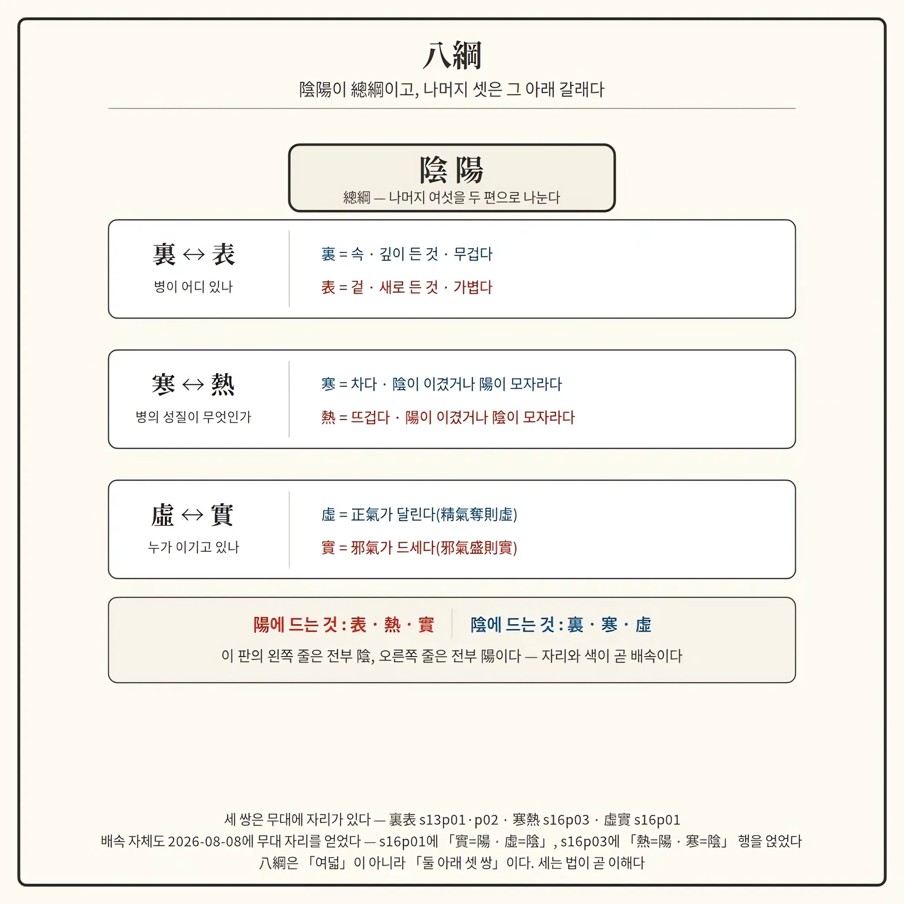
| 소품 | 잠그는 사실 (테스트 모드: 탭하여 확인) |
|---|---|
| 맨 위 한 칸 왜? | 陰陽 = 總綱 — 나머지 여섯을 두 편으로 나눈다 |
| 다리 — 도해는 자가테스트·역방향 판독의 대상이 아니다(CANON 74). 범례를 그림 안에 갖고 있다. ▸ 정산(2026-08-22, 규칙 111) — ★ 이 판이 규칙 111의 원형이다 — 행마다 무대 자리를 이미 적어 놓았다. 정산에서 통째로 통과한 유일한 판 | |
| 첫째 쌍 — 왼쪽이 陰, 오른쪽이 陽 왜? | 裏 ↔ 表 — 병이 어디 있나 (무대 자리: s13p02(→s13u01) 陽明=裏 · s13p01(→s13u01) 太陽=表) |
| 다리 — 도해는 자가테스트·역방향 판독의 대상이 아니다(CANON 74). 범례를 그림 안에 갖고 있다. ▸ 정산(2026-08-22, 규칙 111) — ★ 이 판이 규칙 111의 원형이다 — 행마다 무대 자리를 이미 적어 놓았다. 정산에서 통째로 통과한 유일한 판 | |
| 둘째 쌍 왜? | 寒 ↔ 熱 — 병의 성질 (무대 자리: s16p03 陽勝則熱 ↔ 陰勝則寒) |
| 다리 — 도해는 자가테스트·역방향 판독의 대상이 아니다(CANON 74). 범례를 그림 안에 갖고 있다. ▸ 정산(2026-08-22, 규칙 111) — ★ 이 판이 규칙 111의 원형이다 — 행마다 무대 자리를 이미 적어 놓았다. 정산에서 통째로 통과한 유일한 판 | |
| 셋째 쌍 왜? | 虛 ↔ 實 — 누가 이기고 있나 (무대 자리: s16p01 邪氣盛則實 ↔ 精氣奪則虛) |
| 다리 — 도해는 자가테스트·역방향 판독의 대상이 아니다(CANON 74). 범례를 그림 안에 갖고 있다. ▸ 정산(2026-08-22, 규칙 111) — ★ 이 판이 규칙 111의 원형이다 — 행마다 무대 자리를 이미 적어 놓았다. 정산에서 통째로 통과한 유일한 판 | |
| 맨 아래 — 이 판의 왼쪽 줄은 전부 陰, 오른쪽 줄은 전부 陽 왜? | 陽에 드는 것 表·熱·實 / 陰에 드는 것 裏·寒·虛 — 자리와 색이 곧 배속이다 (무대 자리: s16p01·s16p03에 배속 행을 얹었다) |
| 다리 — 도해는 자가테스트·역방향 판독의 대상이 아니다(CANON 74). 범례를 그림 안에 갖고 있다. ▸ 정산(2026-08-22, 규칙 111) — ★ 이 판이 규칙 111의 원형이다 — 행마다 무대 자리를 이미 적어 놓았다. 정산에서 통째로 통과한 유일한 판 | |
도해 문항 1 펼치기
| 1. 八綱 여덟과 總綱은? | 陰陽이 總綱이고 表裏(어디) · 寒熱(성질) · 虛實(누가 이기나) 세 쌍이 그 아래 든다. 陽에 드는 것 表·熱·實 / 陰에 드는 것 裏·寒·虛八綱辨證 — 景岳全書 二綱六變 계통 |
장면 18 · 경락 (십이경맥·특정혈·자법·사암)
🔗 經絡學 발전사 — 열 사람 (도해) 침구·경락사·도해 도해 · 문항 4 #s18d01
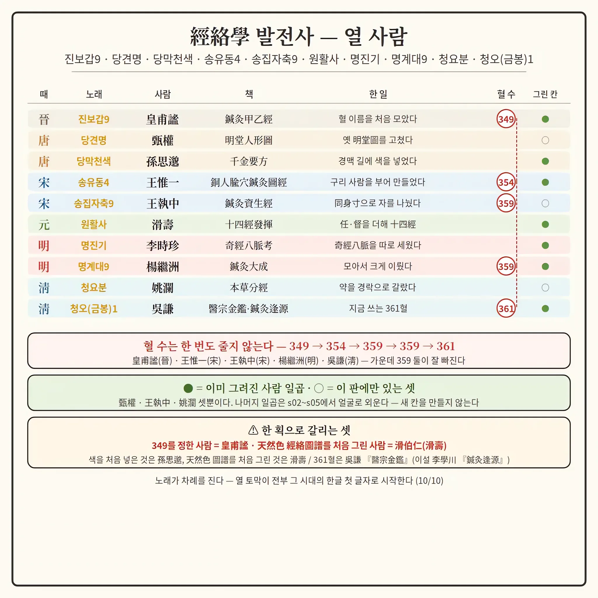
| 소품 | 잠그는 사실 (테스트 모드: 탭하여 확인) |
|---|---|
| 열 줄 연표 — 때 · 노래 · 사람 · 책 · 한 일 · 혈 수 왜? | 晉 → 唐 → 宋 → 元 → 明 → 淸, 한 번도 거꾸로 가지 않는다 |
| 다리 — 차례가 곧 사실이라 생성 AI에 못 맡긴다(RULES §0). jinggu.py 검산 10/10. ▸ 정산(2026-08-22, 규칙 111) — 무대 자리: 皇甫謐 s02p01 · 王惟一 s03p01 · 楊繼洲 s04p01 · 吳謙 s04p02 · 銅人 s03p01. ⚠ 王執中 한 사람만 구멍이다 | |
| 두 번째 칸 — 노란 노랫말 토막 왜? | 기본서 암기송이 이미 차례를 지고 있다 |
| 다리 — 「진보갑9 당견명 당막천색 송유동4 송집자축9 원활사 명진기 명계대9 청요분 청오(금봉)1」 ◆ 열 토막이 **전부 그 시대의 한글 첫 글자로 시작한다**(검산 10/10) — 노래만 외우면 시대와 차례가 딸려 온다. ◆ **이 판은 새 소리 다리가 아니라 그 노래의 해독표다.** 지어낼 필요가 없었다. ▸ 정산(2026-08-22, 규칙 111) — 무대 자리: 皇甫謐 s02p01 · 王惟一 s03p01 · 楊繼洲 s04p01 · 吳謙 s04p02 · 銅人 s03p01. ⚠ 王執中 한 사람만 구멍이다 | |
| 붉은 동그라미 다섯을 잇는 점선 왜? | 혈 수 계보 — 349 → 354 → 359 → 359 → 360 → 361, 한 번도 줄지 않는다 ⚠ 2026-08-22 원문 대조 정정 — 醫宗金鑑(吳謙)은 **360**이고, **361을 처음 확정한 책은 李學川 『針灸逢源』**이다(醫砭 經穴 「至李學川《針灸逢源》才彙集各穴確定爲361經穴」). 한국 기본서·암기송은 361을 吳謙에 붙인다 — 두 판을 갈라 외운다 |
| 다리 — 皇甫謐(晉) 349 · 王惟一(宋) 354 · 王執中(宋) 359 · 楊繼洲(明) 359 · 吳謙(淸) 361. ◆ ⚠ **RULES §5의 「흰 깃발밭 = 349→354→361」은 가운데 359 둘을 빠뜨리고 있었다.** 王執中·楊繼洲가 라이브러리에 혈 수 없이 들어 있었기 때문이다 — 이 판이 메운다. ▸ 정산(2026-08-22, 규칙 111) — 무대 자리: 皇甫謐 s02p01 · 王惟一 s03p01 · 楊繼洲 s04p01 · 吳謙 s04p02 · 銅人 s03p01. ⚠ 王執中 한 사람만 구멍이다 ▸ 2026-08-22 원문 대조(醫砭 yibian.hopto.org/shu/?sid=7023 · 정일경·이혜정·인창식 「19세기 침구봉원의…」 koreascience JAKO201913661037793) — 針灸逢源이 針灸大成보다 中樞·急脈 둘, 醫宗金鑑보다 하나가 많다 | |
| 오른쪽 끝 ● 일곱과 ○ 셋 왜? | 열 사람 중 일곱은 이미 s02~s05에 그려져 있다 |
| 다리 — 皇甫謐 s02p01[4] · 孫思邈 s02p02 · 王惟一 s03p01[0] · 滑壽 s03p01[7] · 李時珍 s04p01 · 楊繼洲 s04p01[2] · 吳謙 s04p02[0] ◆ 없는 셋은 甄權 · 王執中 · 姚瀾뿐이다. **새 무대 칸을 만들지 않고 딥링크만 건다**(칸목록_확정 §4 — 인물당 겹 3 미만). ▸ 정산(2026-08-22, 규칙 111) — 무대 자리: 皇甫謐 s02p01 · 王惟一 s03p01 · 楊繼洲 s04p01 · 吳謙 s04p02 · 銅人 s03p01. ⚠ 王執中 한 사람만 구멍이다 | |
| 바닥의 붉은 경고 줄 왜? | ⚠ 349를 정한 사람 = 皇甫謐 · 天然色 經絡圖譜를 처음 그린 사람 = 滑伯仁(滑壽) |
| 다리 — 기출 242번 정답 皇甫謐(오답지 滑伯仁·楊繼洲·孫思邈·王燾) · 기출 239번 정답 滑伯仁. ◆ **색을 처음 넣은 것은 孫思邈(唐), 天然色 圖譜를 처음 그린 것은 滑壽(元)** — 둘을 갈라 외운다. 기본서 요약표는 「경맥 길에 색을 넣었다」를 孫思邈에 적어 두어 헷갈리기 쉽다. ◆ 361혈은 吳謙 『醫宗金鑑』, 이설은 李學川 『鍼灸逢源』 — 허브 오답 1위(s04p02). ▸ 정산(2026-08-22, 규칙 111) — 무대 자리: 皇甫謐 s02p01 · 王惟一 s03p01 · 楊繼洲 s04p01 · 吳謙 s04p02 · 銅人 s03p01. ⚠ 王執中 한 사람만 구멍이다 | |
도해 문항 4 펼치기
| 1. 수혈 개수의 계보를 차례로? | 349(皇甫謐 晉 針灸甲乙經) → 354(王惟一 宋 銅人腧穴針灸圖經) → 359(王執中 宋 針灸資生經) → 359(楊繼洲 明 針灸大成) → **360(吳謙 淸 醫宗金鑑)** → **361(李學川 淸 針灸逢源)**針灸甲乙經~針灸逢源 |
| 2. 十四經은 무엇을 합친 수인가? | **十二正經 + 任脈·督脈 = 14.** 기경팔맥 중 任·督 둘만 전속 혈을 가져 정경과 나란히 세운다 — 나머지 여섯 기경은 남의 혈을 빌려 쓴다滑壽 『十四經發揮』(元) |
| 3. 『十四經發揮』를 지은 사람과 그 소리 다리는? | **滑壽(활수, 元)** — 滑=미끄러울 활 → 국숫집 앞 미끄러지는 아이들(s03p01[7]). 암기송 토막은 「원활사」(元·滑壽·十四經發揮)기본서 경락학 발전사 요약표 |
| 4. ⚠ 361혈을 처음 확정한 책은 무엇인가? — 기본서와 어긋나는 자리 | **李學川 『針灸逢源』**이다. 醫砭 經穴 표는 醫宗金鑑을 **360**으로 적고 「至李學川《針灸逢源》才彙集各穴確定爲361經穴」이라 한다. ⚠ 한국 기본서·암기송은 361을 吳謙(醫宗金鑑)에 붙이는데, 針灸逢源이 醫宗金鑑보다 1혈 많다는 것이 국내 서지 연구(정일경·이혜정·인창식)의 결론이다. **국시에서 「361=醫宗金鑑」으로 물으면 기본서를 따르되, 「361을 처음 확정한 책」을 물으면 針灸逢源이다**醫砭 中華針灸·經穴 yibian.hopto.org/shu/?sid=7023 / 「19세기 침구봉원의…」 koreascience.or.kr JAKO201913661037793 |
🔗 十二經脈 — 사지 六面 배속(도해) 경락·유주·도해 도해 · 문항 14 #s18d02
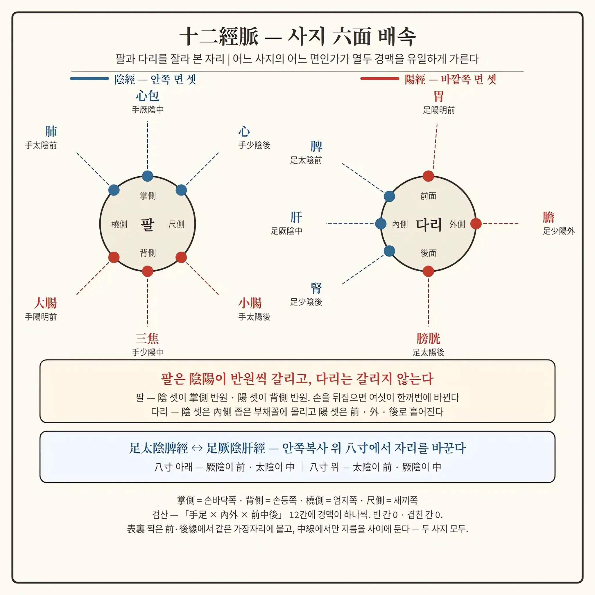
| 소품 | 잠그는 사실 (테스트 모드: 탭하여 확인) |
|---|---|
| 팔 단면 · 다리 단면 두 개, 각 원 위의 점 여섯 왜? | 「手足 × 內外 × 前中後」 12칸에 경맥이 하나씩 — 빈 칸 0 · 겹친 칸 0 |
| 다리 — 도해는 자가테스트·역방향 판독의 대상이 아니다(CANON 74). 무대 짝은 s18p03~p08 표리 여섯 칸(규칙 78) ▸ 정산(2026-08-22, 규칙 111) — 무대 자리 없음 — 「사지 단면 위의 자리」가 곧 사실이라 도해가 맞다(RULES §0). **문항 14개**가 대응을 묻는다. 六經 이름 자체는 s13p01(→s13u01)~s13p06(→s13u02)이 진다 | |
| 팔 단면 — 푸른 점 셋이 위 반원, 붉은 점 셋이 아래 반원 왜? | 手三陰은 掌側 반원 · 手三陽은 背側 반원. 손을 뒤집으면 여섯이 한꺼번에 바뀐다 |
| 다리 — 무대 s18p03~p05가 이 사실을 진다 — 한 손은 손바닥, 다른 손은 손등을 보인다 ▸ 정산(2026-08-22, 규칙 111) — 무대 자리 없음 — 「사지 단면 위의 자리」가 곧 사실이라 도해가 맞다(RULES §0). **문항 14개**가 대응을 묻는다. 六經 이름 자체는 s13p01(→s13u01)~s13p06(→s13u02)이 진다 | |
| 다리 단면 — 푸른 점 셋이 왼쪽 좁은 부채꼴, 붉은 점 셋이 위·오른쪽·아래 왜? | 足三陰만 內側에 몰리고 足三陽은 前面·外側面·後面으로 흩어진다 |
| 다리 — 팔의 「掌背」가 다리에서 성립하지 않는 이유. 역방향 판독 1차가 다리 칸을 여기서 떨어뜨렸다 ▸ 정산(2026-08-22, 규칙 111) — 무대 자리 없음 — 「사지 단면 위의 자리」가 곧 사실이라 도해가 맞다(RULES §0). **문항 14개**가 대응을 묻는다. 六經 이름 자체는 s13p01(→s13u01)~s13p06(→s13u02)이 진다 | |
| 다리 단면 붉은 상자 셋째 줄 왜? | 足厥陰肝經은 陰經이면서 太衝·行間이 足背에 있다 |
| 다리 — 「陰經은 안쪽」의 유일한 반례. 12경 중 이것 하나만 어긋난다 ▸ 정산(2026-08-22, 규칙 111) — 무대 자리 없음 — 「사지 단면 위의 자리」가 곧 사실이라 도해가 맞다(RULES §0). **문항 14개**가 대응을 묻는다. 六經 이름 자체는 s13p01(→s13u01)~s13p06(→s13u02)이 진다 | |
| 푸른 상자 — 八寸 아래위가 뒤바뀐 두 줄 왜? | 足太陰脾經 ↔ 足厥陰肝經은 안쪽복사 위 八寸에서 자리를 바꾼다 — 八寸 아래는 厥陰이 前, 위는 太陰이 前 |
| 다리 — 이 두 경만 「한 경 = 한 緣」이 정강이 아래위에서 다르다. 한 줄기로 그리면 절반이 틀린 자리가 된다 ▸ 정산(2026-08-22, 규칙 111) — 무대 자리 없음 — 「사지 단면 위의 자리」가 곧 사실이라 도해가 맞다(RULES §0). **문항 14개**가 대응을 묻는다. 六經 이름 자체는 s13p01(→s13u01)~s13p06(→s13u02)이 진다 | |
| 같은 緣의 두 점이 놓인 자리 왜? | 表裏 짝은 前·後緣에서 같은 가장자리에 붙고, 中線에서만 지름을 사이에 두고 마주 본다 |
| 다리 — 표리 여섯 쌍 모두 성립 — 무대가 표리를 한 칸에 넣는 근거 ▸ 정산(2026-08-22, 규칙 111) — 무대 자리 없음 — 「사지 단면 위의 자리」가 곧 사실이라 도해가 맞다(RULES §0). **문항 14개**가 대응을 묻는다. 六經 이름 자체는 s13p01(→s13u01)~s13p06(→s13u02)이 진다 | |
도해 문항 14 펼치기
| 1. 手太陰肺經은 사지의 어느 면 어느 가장자리를 타는가? | 手 · 內面(陰) · 前緣靈樞·經脈 · WHO/WPRO 표준경혈부위 |
| 2. 手陽明大腸經은 사지의 어느 면 어느 가장자리를 타는가? | 手 · 外面(陽) · 前緣靈樞·經脈 · WHO/WPRO 표준경혈부위 |
| 3. 足陽明胃經은 사지의 어느 면 어느 가장자리를 타는가? | 足 · 外面(陽) · 前緣靈樞·經脈 · WHO/WPRO 표준경혈부위 |
| 4. 足太陰脾經은 사지의 어느 면 어느 가장자리를 타는가? | 足 · 內面(陰) · 前緣靈樞·經脈 · WHO/WPRO 표준경혈부위 |
| 5. 手少陰心經은 사지의 어느 면 어느 가장자리를 타는가? | 手 · 內面(陰) · 後緣靈樞·經脈 · WHO/WPRO 표준경혈부위 |
| 6. 手太陽小腸經은 사지의 어느 면 어느 가장자리를 타는가? | 手 · 外面(陽) · 後緣靈樞·經脈 · WHO/WPRO 표준경혈부위 |
| 7. 足太陽膀胱經은 사지의 어느 면 어느 가장자리를 타는가? | 足 · 外面(陽) · 後緣靈樞·經脈 · WHO/WPRO 표준경혈부위 |
| 8. 足少陰腎經은 사지의 어느 면 어느 가장자리를 타는가? | 足 · 內面(陰) · 後緣靈樞·經脈 · WHO/WPRO 표준경혈부위 |
| 9. 手厥陰心包經은 사지의 어느 면 어느 가장자리를 타는가? | 手 · 內面(陰) · 中線靈樞·經脈 · WHO/WPRO 표준경혈부위 |
| 10. 手少陽三焦經은 사지의 어느 면 어느 가장자리를 타는가? | 手 · 外面(陽) · 中線靈樞·經脈 · WHO/WPRO 표준경혈부위 |
| 11. 足少陽膽經은 사지의 어느 면 어느 가장자리를 타는가? | 足 · 外面(陽) · 中線靈樞·經脈 · WHO/WPRO 표준경혈부위 |
| 12. 足厥陰肝經은 사지의 어느 면 어느 가장자리를 타는가? | 足 · 內面(陰) · 中線靈樞·經脈 · WHO/WPRO 표준경혈부위 |
| 13. 足厥陰肝經은 陰經인데 왜 「손바닥쪽=陰」 축이 깨지는가? | 太衝·行間이 足背(발등)에 있다. 다리에는 掌背가 없어 상지 6/6은 성립해도 하지 6/6이 불성립한다 — 그래서 「끝이 얼굴·머리냐 가슴·배냐」로 陰陽을 가른다(12/12 성립)靈樞·經脈 · WHO/WPRO 표준경혈부위 |
| 14. 足太陰脾經과 足厥陰肝經이 자리를 바꾸는 곳은? | 안쪽복사 위 八寸 — 아래는 厥陰이 前, 위는 太陰이 前靈樞·經脈 · WHO/WPRO 표준경혈부위 |
🔗 五輸穴 예순 — 井 滎 兪 經 合 (도해) 침구·오수혈·도해 도해 · 문항 28 #s18d03
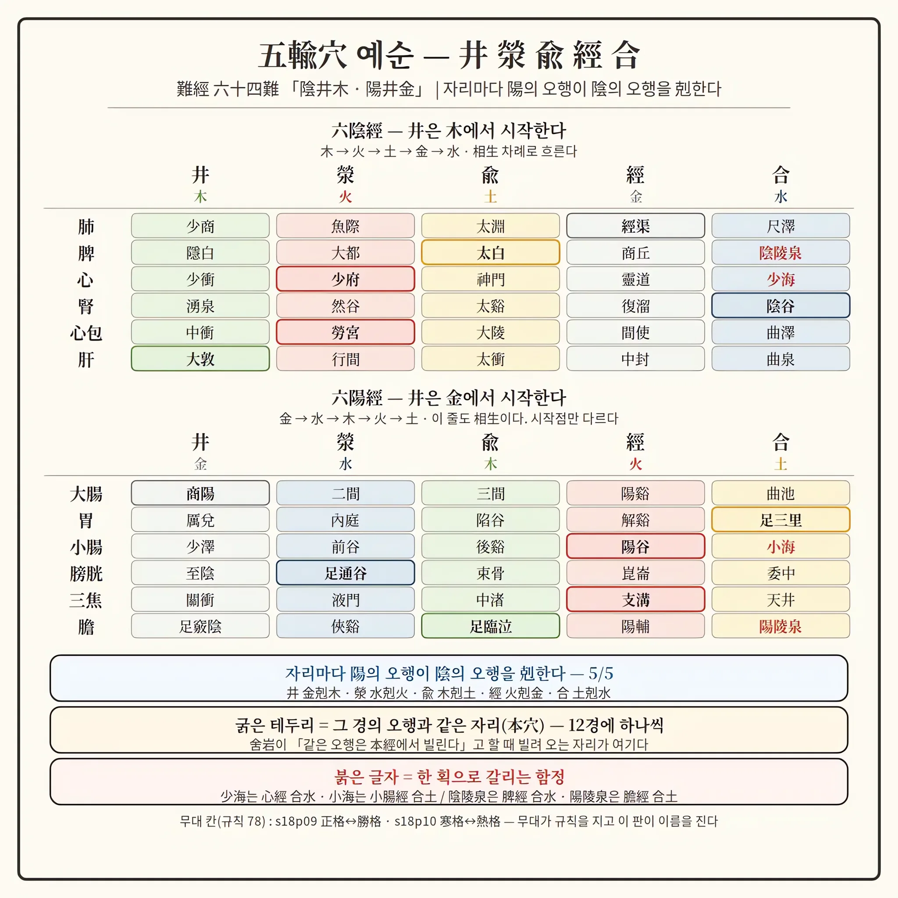
| 소품 | 잠그는 사실 (테스트 모드: 탭하여 확인) |
|---|---|
| 두 블록 — 六陰經 여섯 줄 · 六陽經 여섯 줄, 각 다섯 칸 왜? | 難經 六十四難 「陰井木 · 陽井金」 |
| 다리 — 12경 × 5자리 = 60혈, 중복 0. **자리와 오행의 짝이 곧 사실**이라 생성 AI에 못 맡긴다(RULES §0). ▸ 정산(2026-08-22, 규칙 111) — 무대 자리 없음 — 순서(井滎兪經合)는 도해가 맞고, 「所出爲井」 대응은 **문항 28개**가 진다(오답 7회 상환) | |
| 칸 배경색 — 열마다 한 오행 왜? | 陰經 井滎兪經合 = 木火土金水 · 陽經 = 金水木火土 |
| 다리 — 열 하나가 곧 오행 하나다. 색이 五色 사전(CANON §3)을 그대로 쓴다. ▸ 정산(2026-08-22, 규칙 111) — 무대 자리 없음 — 순서(井滎兪經合)는 도해가 맞고, 「所出爲井」 대응은 **문항 28개**가 진다(오답 7회 상환) | |
| 파란 띠 — 「자리마다 陽이 陰을 剋한다」 왜? | 井 金剋木 · 滎 水剋火 · 兪 木剋土 · 經 火剋金 · 合 土剋水 — 5/5 |
| 다리 — oh_shu.py 검산 5/5. **이 한 줄이 60칸을 10칸으로 줄인다** — 陰 다섯만 외우면 陽 다섯이 따라온다. ▸ 정산(2026-08-22, 규칙 111) — 무대 자리 없음 — 순서(井滎兪經合)는 도해가 맞고, 「所出爲井」 대응은 **문항 28개**가 진다(오답 7회 상환) | |
| 두 블록의 부제 — 木→火→土→金→水 · 金→水→木→火→土 왜? | 두 줄 다 相生으로 흐른다. 시작점만 다르다 |
| 다리 — oh_shu.py 검산 — 陰은 木에서, 陽은 金에서 시작할 뿐 둘 다 相生 차례다. ◆ **외울 것은 시작점 둘뿐이다.** 나머지는 相生이 굴려 준다. ▸ 정산(2026-08-22, 규칙 111) — 무대 자리 없음 — 순서(井滎兪經合)는 도해가 맞고, 「所出爲井」 대응은 **문항 28개**가 진다(오답 7회 상환) | |
| 굵은 테두리를 두른 칸 — 12경에 하나씩 왜? | 本穴 — 그 경의 오행과 같은 자리 |
| 다리 — 肺 經渠(經金) · 脾 太白(兪土) · 心 少府(滎火) · 腎 陰谷(合水) · 心包 勞宮(滎火) · 肝 大敦(井木) 大腸 商陽(井金) · 胃 足三里(合土) · 小腸 陽谷(經火) · 膀胱 足通谷(滎水) · 三焦 支溝(經火) · 膽 足臨泣(兪木) ◆ 舍岩이 「같은 오행은 本經에서 빌린다」고 할 때 빌려 오는 자리가 여기다. ▸ 정산(2026-08-22, 규칙 111) — 무대 자리 없음 — 순서(井滎兪經合)는 도해가 맞고, 「所出爲井」 대응은 **문항 28개**가 진다(오답 7회 상환) | |
| 붉은 글자 넷 — 少海 · 小海 · 陰陵泉 · 陽陵泉 왜? | 한 획으로 갈리는 함정 |
| 다리 — 少海는 **心經 合水** · 小海는 **小腸經 合土** — 少 / 小 한 글자다. 陰陵泉은 **脾經 合水** · 陽陵泉은 **膽經 合土**. ◆ 최약 카드 오답 7회가 전부 이 넷이다. ▸ 정산(2026-08-22, 규칙 111) — 무대 자리 없음 — 순서(井滎兪經合)는 도해가 맞고, 「所出爲井」 대응은 **문항 28개**가 진다(오답 7회 상환) | |
| 바닥 줄 — 규칙 78의 짝 왜? | 무대가 규칙을 지고 이 판이 이름을 진다 |
| 다리 — s18p09(正格 補母瀉官 · 勝格 補官瀉子)와 s18p10(寒格 補火瀉水 · 熱格 補水)이 **규칙**을 지고, 이 도해가 **혈 이름 60개**를 진다. 舍岩 네 격이 쓰는 54혈이 전부 이 60 안에 있다(검산). ◆ **둘이 있어야 「肺正格은?」에 답이 나온다.** 하나만으로는 안 된다. ▸ 정산(2026-08-22, 규칙 111) — 무대 자리 없음 — 순서(井滎兪經合)는 도해가 맞고, 「所出爲井」 대응은 **문항 28개**가 진다(오답 7회 상환) | |
도해 문항 28 펼치기
| 1. 肺經의 五輸穴 다섯은 井부터 차례로? | 井 少商 · 滎 魚際 · 兪 太淵 · 經 經渠 · 合 尺澤靈樞·本輸 / 難經 六十四難(오행 배속) · 六十八難(主治) |
| 2. 肺經의 井穴은? | 少商 (陰의 木)靈樞·本輸 / 難經 六十四難(오행 배속) · 六十八難(主治) |
| 3. 脾經의 五輸穴 다섯은 井부터 차례로? | 井 隱白 · 滎 大都 · 兪 太白 · 經 商丘 · 合 陰陵泉靈樞·本輸 / 難經 六十四難(오행 배속) · 六十八難(主治) |
| 4. 脾經의 井穴은? | 隱白 (陰의 木)靈樞·本輸 / 難經 六十四難(오행 배속) · 六十八難(主治) |
| 5. 心經의 五輸穴 다섯은 井부터 차례로? | 井 少衝 · 滎 少府 · 兪 神門 · 經 靈道 · 合 少海靈樞·本輸 / 難經 六十四難(오행 배속) · 六十八難(主治) |
| 6. 心經의 井穴은? | 少衝 (陰의 木)靈樞·本輸 / 難經 六十四難(오행 배속) · 六十八難(主治) |
| 7. 腎經의 五輸穴 다섯은 井부터 차례로? | 井 湧泉 · 滎 然谷 · 兪 太谿 · 經 復溜 · 合 陰谷靈樞·本輸 / 難經 六十四難(오행 배속) · 六十八難(主治) |
| 8. 腎經의 井穴은? | 湧泉 (陰의 木)靈樞·本輸 / 難經 六十四難(오행 배속) · 六十八難(主治) |
| 9. 心包經의 五輸穴 다섯은 井부터 차례로? | 井 中衝 · 滎 勞宮 · 兪 大陵 · 經 間使 · 合 曲澤靈樞·本輸 / 難經 六十四難(오행 배속) · 六十八難(主治) |
| 10. 心包經의 井穴은? | 中衝 (陰의 木)靈樞·本輸 / 難經 六十四難(오행 배속) · 六十八難(主治) |
| 11. 肝經의 五輸穴 다섯은 井부터 차례로? | 井 大敦 · 滎 行間 · 兪 太衝 · 經 中封 · 合 曲泉靈樞·本輸 / 難經 六十四難(오행 배속) · 六十八難(主治) |
| 12. 肝經의 井穴은? | 大敦 (陰의 木)靈樞·本輸 / 難經 六十四難(오행 배속) · 六十八難(主治) |
| 13. 大腸經의 五輸穴 다섯은 井부터 차례로? | 井 商陽 · 滎 二間 · 兪 三間 · 經 陽谿 · 合 曲池靈樞·本輸 / 難經 六十四難(오행 배속) · 六十八難(主治) |
| 14. 大腸經의 井穴은? | 商陽 (陽의 金)靈樞·本輸 / 難經 六十四難(오행 배속) · 六十八難(主治) |
| 15. 胃經의 五輸穴 다섯은 井부터 차례로? | 井 厲兌 · 滎 內庭 · 兪 陷谷 · 經 解谿 · 合 足三里靈樞·本輸 / 難經 六十四難(오행 배속) · 六十八難(主治) |
| 16. 胃經의 井穴은? | 厲兌 (陽의 金)靈樞·本輸 / 難經 六十四難(오행 배속) · 六十八難(主治) |
| 17. 小腸經의 五輸穴 다섯은 井부터 차례로? | 井 少澤 · 滎 前谷 · 兪 後谿 · 經 陽谷 · 合 小海靈樞·本輸 / 難經 六十四難(오행 배속) · 六十八難(主治) |
| 18. 小腸經의 井穴은? | 少澤 (陽의 金)靈樞·本輸 / 難經 六十四難(오행 배속) · 六十八難(主治) |
| 19. 膀胱經의 五輸穴 다섯은 井부터 차례로? | 井 至陰 · 滎 足通谷 · 兪 束骨 · 經 崑崙 · 合 委中靈樞·本輸 / 難經 六十四難(오행 배속) · 六十八難(主治) |
| 20. 膀胱經의 井穴은? | 至陰 (陽의 金)靈樞·本輸 / 難經 六十四難(오행 배속) · 六十八難(主治) |
| 21. 三焦經의 五輸穴 다섯은 井부터 차례로? | 井 關衝 · 滎 液門 · 兪 中渚 · 經 支溝 · 合 天井靈樞·本輸 / 難經 六十四難(오행 배속) · 六十八難(主治) |
| 22. 三焦經의 井穴은? | 關衝 (陽의 金)靈樞·本輸 / 難經 六十四難(오행 배속) · 六十八難(主治) |
| 23. 膽經의 五輸穴 다섯은 井부터 차례로? | 井 足竅陰 · 滎 俠谿 · 兪 足臨泣 · 經 陽輔 · 合 陽陵泉靈樞·本輸 / 難經 六十四難(오행 배속) · 六十八難(主治) |
| 24. 膽經의 井穴은? | 足竅陰 (陽의 金)靈樞·本輸 / 難經 六十四難(오행 배속) · 六十八難(主治) |
| 25. 五輸穴 다섯 자리에 陰經은 어느 오행이 붙는가? | 井 木 · 滎 火 · 兪 土 · 經 金 · 合 水 — 井이 木에서 시작한다. 원문은 難經 **六十四難** 「陰井木，陽井金；陰滎火，陽滎水；陰兪土，陽兪木；陰經金，陽經火；陰合水，陽合土」이다 — 六十八難은 「井主心下滿…」 主治 조다難經 六十四難 |
| 26. 五輸穴 다섯 자리에 陽經은 어느 오행이 붙는가? | 井 金 · 滎 水 · 兪 木 · 經 火 · 合 土 — 井이 金에서 시작한다. 자리마다 陽의 오행이 陰의 오행을 剋한다 — 출전은 難經 **六十四難**이다難經 六十四難 |
| 27. ⚠ 靈樞·本輸에 心經의 五輸穴이 있는가? | 없다 — 本輸은 「心出於**中衝**…**勞宮**…**大陵**…**間使**…**曲澤**」이라 하여 **心包의 혈을 心에 배당**한다. 지금 쓰는 心經 五輸(少衝·少府·神門·靈道·少海)는 『針灸甲乙經』 계통에서 온 것이다靈樞·本輸 / 針灸甲乙經 |
| 28. 「所出爲井 所溜爲滎 所注爲兪 所行爲經 所入爲合」 — 무엇을 물의 흐름에 견준 것인가? | 맥기(脈氣)의 크기. 井=솟는 우물 → 滎=졸졸 → 兪=쏟아짐 → 經=흐름 → 合=바다로 듦靈樞·九針十二原 |
🔗 背兪穴 · 募穴 열두 쌍(도해) 경락·특정혈·도해 도해 · 문항 26 #s18d04
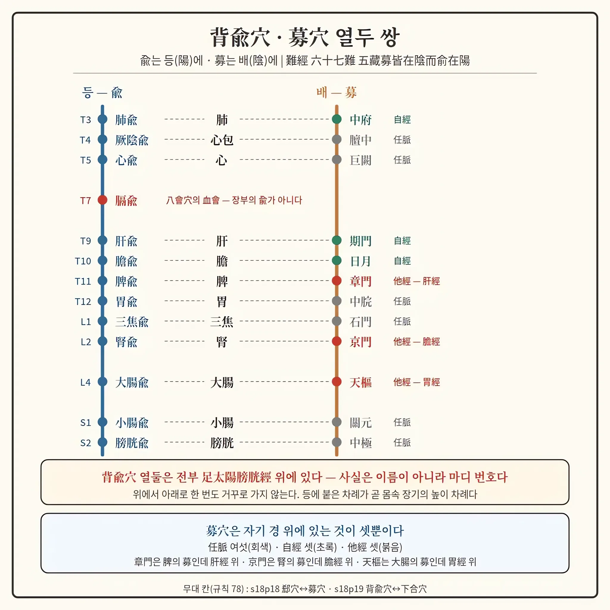
| 소품 | 잠그는 사실 (테스트 모드: 탭하여 확인) |
|---|---|
| 왼쪽 세로선 위의 점 열셋과 그 곁의 마디 표시 왜? | 背兪穴 열둘은 전부 足太陽膀胱經 第一側線(脊柱 옆 1.5寸) 위에 있다 |
| 다리 — 도해는 자가테스트·역방향 판독의 대상이 아니다(CANON 74). 무대 짝은 s18p18·s18p19(규칙 78) ▸ 정산(2026-08-22, 규칙 111) — 무대 자리: 背兪穴·募穴의 개념과 中脘 → s18p11. 열두 쌍의 개별 혈은 **문항 26개**가 진다(天樞 오답 5회 상환) | |
| 점들이 위에서 아래로 한 번도 거꾸로 가지 않음 왜? | 肺T3 → 厥陰T4 → 心T5 → 肝T9 → 膽T10 → 脾T11 → 胃T12 → 三焦L1 → 腎L2 → 大腸L4 → 小腸S1 → 膀胱S2 |
| 다리 — 등에 붙은 차례가 곧 몸속 장기의 높이 차례다 — 이 판의 유일한 기억 고리 ▸ 정산(2026-08-22, 규칙 111) — 무대 자리: 背兪穴·募穴의 개념과 中脘 → s18p11. 열두 쌍의 개별 혈은 **문항 26개**가 진다(天樞 오답 5회 상환) | |
| T7 자리의 붉은 점 하나 — 오른쪽으로 잇는 선이 없다 왜? | 膈兪는 장부의 背兪穴이 아니다 — 八會穴의 血會다 |
| 다리 — 같은 줄에 끼어 있어 열둘과 함께 외우다 틀린다. 최약 카드 오답 13회(膈兪 7 + 6) — 이 세트 단일 최다 ▸ 정산(2026-08-22, 규칙 111) — 무대 자리: 背兪穴·募穴의 개념과 中脘 → s18p11. 열두 쌍의 개별 혈은 **문항 26개**가 진다(天樞 오답 5회 상환) | |
| 오른쪽 세로선 위 점의 색 — 회색 여섯 왜? | 募穴 여섯은 任脈 위에 있다 — 膻中·巨闕·中脘·石門·關元·中極 |
| 다리 — 몸 앞 한가운데. 「그 경의 募穴」이라는 말이 자리를 안 가리키는 이유 ▸ 정산(2026-08-22, 규칙 111) — 무대 자리: 背兪穴·募穴의 개념과 中脘 → s18p11. 열두 쌍의 개별 혈은 **문항 26개**가 진다(天樞 오답 5회 상환) | |
| 오른쪽 점의 색 — 초록 셋 왜? | 자기 경 위에 있는 募穴은 셋뿐이다 — 中府(肺經) · 期門(肝經) · 日月(膽經) |
| 다리 — 십이경맥 무대 설계가 募穴을 겹에서 뺀 근거 — 12 중 9가 남의 자리에 있다 ▸ 정산(2026-08-22, 규칙 111) — 무대 자리: 背兪穴·募穴의 개념과 中脘 → s18p11. 열두 쌍의 개별 혈은 **문항 26개**가 진다(天樞 오답 5회 상환) | |
| 오른쪽 점의 색 — 붉음 셋 왜? | 章門은 脾의 募인데 肝經 위 · 京門은 腎의 募인데 膽經 위 · 天樞는 大腸의 募인데 胃經 위 |
| 다리 — 天樞·募穴 최약 카드 오답 5회. 「大腸의 募」를 大腸經에서 찾으면 못 찾는다 ▸ 정산(2026-08-22, 규칙 111) — 무대 자리: 背兪穴·募穴의 개념과 中脘 → s18p11. 열두 쌍의 개별 혈은 **문항 26개**가 진다(天樞 오답 5회 상환) | |
| 왼쪽은 등, 오른쪽은 배 — 두 세로선이 마주 봄 왜? | 難經 六十七難 五藏募皆在陰而俞在陽 — 募는 몸 앞(陰), 兪는 몸 뒤(陽) |
| 다리 — 한 장부의 두 혈이 앞뒤로 마주 본다 ▸ 정산(2026-08-22, 규칙 111) — 무대 자리: 背兪穴·募穴의 개념과 中脘 → s18p11. 열두 쌍의 개별 혈은 **문항 26개**가 진다(天樞 오답 5회 상환) | |
도해 문항 26 펼치기
| 1. 肺의 背兪穴과 募穴은? | 背兪 肺兪(T3) · 募 中府(肺經 — 가슴 위 바깥 · 제1늑간)靈樞·背腧 / 脈經 · 針灸甲乙經 |
| 2. 中府는 어느 장부의 募穴인가? | 肺 — 肺經에 있다 (가슴 위 바깥 · 제1늑간)靈樞·背腧 / 脈經 · 針灸甲乙經 |
| 3. 心包의 背兪穴과 募穴은? | 背兪 厥陰兪(T4) · 募 膻中(任脈 — 가슴 한가운데 · 두 젖 사이)靈樞·背腧 / 脈經 · 針灸甲乙經 |
| 4. 膻中는 어느 장부의 募穴인가? | 心包 — 任脈에 있다 (가슴 한가운데 · 두 젖 사이)靈樞·背腧 / 脈經 · 針灸甲乙經 |
| 5. 心의 背兪穴과 募穴은? | 背兪 心兪(T5) · 募 巨闕(任脈 — 명치 · 배꼽 위 여섯 치)靈樞·背腧 / 脈經 · 針灸甲乙經 |
| 6. 巨闕는 어느 장부의 募穴인가? | 心 — 任脈에 있다 (명치 · 배꼽 위 여섯 치)靈樞·背腧 / 脈經 · 針灸甲乙經 |
| 7. 肝의 背兪穴과 募穴은? | 背兪 肝兪(T9) · 募 期門(肝經 — 젖꼭지 곧아래 · 제6늑간)靈樞·背腧 / 脈經 · 針灸甲乙經 |
| 8. 期門는 어느 장부의 募穴인가? | 肝 — 肝經에 있다 (젖꼭지 곧아래 · 제6늑간)靈樞·背腧 / 脈經 · 針灸甲乙經 |
| 9. 膽의 背兪穴과 募穴은? | 背兪 膽兪(T10) · 募 日月(膽經 — 期門 아래 한 갈비)靈樞·背腧 / 脈經 · 針灸甲乙經 |
| 10. 日月는 어느 장부의 募穴인가? | 膽 — 膽經에 있다 (期門 아래 한 갈비)靈樞·背腧 / 脈經 · 針灸甲乙經 |
| 11. 脾의 背兪穴과 募穴은? | 背兪 脾兪(T11) · 募 章門(肝經 — 옆구리 · 열한째 갈비끝)靈樞·背腧 / 脈經 · 針灸甲乙經 |
| 12. 章門는 어느 장부의 募穴인가? | 脾 — 肝經에 있다 (옆구리 · 열한째 갈비끝)靈樞·背腧 / 脈經 · 針灸甲乙經 |
| 13. 胃의 背兪穴과 募穴은? | 背兪 胃兪(T12) · 募 中脘(任脈 — 배꼽 위 네 치)靈樞·背腧 / 脈經 · 針灸甲乙經 |
| 14. 中脘는 어느 장부의 募穴인가? | 胃 — 任脈에 있다 (배꼽 위 네 치)靈樞·背腧 / 脈經 · 針灸甲乙經 |
| 15. 三焦의 背兪穴과 募穴은? | 背兪 三焦兪(L1) · 募 石門(任脈 — 배꼽 아래 두 치)靈樞·背腧 / 脈經 · 針灸甲乙經 |
| 16. 石門는 어느 장부의 募穴인가? | 三焦 — 任脈에 있다 (배꼽 아래 두 치)靈樞·背腧 / 脈經 · 針灸甲乙經 |
| 17. 腎의 背兪穴과 募穴은? | 背兪 腎兪(L2) · 募 京門(膽經 — 옆구리 · 열두째 갈비끝)靈樞·背腧 / 脈經 · 針灸甲乙經 |
| 18. 京門는 어느 장부의 募穴인가? | 腎 — 膽經에 있다 (옆구리 · 열두째 갈비끝)靈樞·背腧 / 脈經 · 針灸甲乙經 |
| 19. 大腸의 背兪穴과 募穴은? | 背兪 大腸兪(L4) · 募 天樞(胃經 — 배꼽 옆 두 치)靈樞·背腧 / 脈經 · 針灸甲乙經 |
| 20. 天樞는 어느 장부의 募穴인가? | 大腸 — 胃經에 있다 (배꼽 옆 두 치)靈樞·背腧 / 脈經 · 針灸甲乙經 |
| 21. 小腸의 背兪穴과 募穴은? | 背兪 小腸兪(S1) · 募 關元(任脈 — 배꼽 아래 세 치)靈樞·背腧 / 脈經 · 針灸甲乙經 |
| 22. 關元는 어느 장부의 募穴인가? | 小腸 — 任脈에 있다 (배꼽 아래 세 치)靈樞·背腧 / 脈經 · 針灸甲乙經 |
| 23. 膀胱의 背兪穴과 募穴은? | 背兪 膀胱兪(S2) · 募 中極(任脈 — 배꼽 아래 네 치)靈樞·背腧 / 脈經 · 針灸甲乙經 |
| 24. 中極는 어느 장부의 募穴인가? | 膀胱 — 任脈에 있다 (배꼽 아래 네 치)靈樞·背腧 / 脈經 · 針灸甲乙經 |
| 25. 膈兪는 무엇인가? | T7 — 血會 — 장부의 兪가 아니다. 八會穴의 血會다靈樞·背腧 / 脈經 · 針灸甲乙經 |
| 26. 募穴 열둘 중 **任脈 위에 있는 것**은 몇이고 무엇인가? | 6 — 心包 膻中 · 心 巨闕 · 胃 中脘 · 三焦 石門 · 小腸 關元 · 膀胱 中極靈樞·背腧 / 脈經 · 針灸甲乙經 |
🔗 主客原絡 — 열두 조(도해) 경락·특정혈·사암·도해 도해 · 문항 28 #s18d05
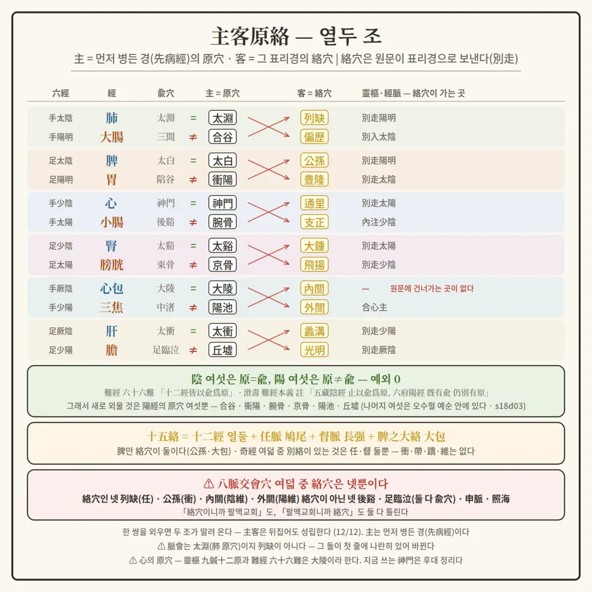
| 소품 | 잠그는 사실 (테스트 모드: 탭하여 확인) |
|---|---|
| 가운데 두 칸 사이를 건너가는 붉은 ✕ 열둘 왜? | 主 = 앓는 경의 原穴 · 客 = 그 표리경의 絡穴 — 열두 조 |
| 다리 — 이 칸이 지는 뼈대. 主는 제자리에 머물고 客은 짝에서 건너온다. ▸ 정산(2026-08-22, 규칙 111) — 무대 자리 없음 — **문항 28개**가 진다(오답 21회 상환: 膀胱7·心包6·肺4·大腸4). ⚠ 무대화는 막혀 있다 — 혈 이름 형태화 축에서 淵·鍾·陵 셋이 s18p12 팔회혈 소품과 충돌한다(규칙 51). ⚠ 원문 주의 — 「主客原絡」이라는 짝짓기와 용어는 『針灸大成』卷五 「十二經治症主客原絡」이 세운 것이다. 原穴은 難經 六十六난, 絡穴은 靈樞 十五絡이 따로 준다 | |
| 네 번째 띠의 두 줄과 그 사이를 건너는 화살표 둘 왜? | 膀胱 主=京骨 客=大鍾 / 腎 主=太谿 客=飛揚 |
| 다리 — 허브 오답 7회 문항(HUBGR-0241) 그대로다. 「膀胱의 客」을 膀胱經 안에서 찾으면 못 찾는다 — 客은 언제나 짝의 것이다. ▸ 정산(2026-08-22, 규칙 111) — 무대 자리 없음 — **문항 28개**가 진다(오답 21회 상환: 膀胱7·心包6·肺4·大腸4). ⚠ 무대화는 막혀 있다 — 혈 이름 형태화 축에서 淵·鍾·陵 셋이 s18p12 팔회혈 소품과 충돌한다(규칙 51). ⚠ 원문 주의 — 「主客原絡」이라는 짝짓기와 용어는 『針灸大成』卷五 「十二經治症主客原絡」이 세운 것이다. 原穴은 難經 六十六난, 絡穴은 靈樞 十五絡이 따로 준다 | |
| 兪穴 칸과 原穴 칸 사이의 = 여섯과 ≠ 여섯 왜? | 陰 여섯은 原=兪, 陽 여섯은 原≠兪 — 예외 0 |
| 다리 — 출전을 정확히 — 難經 六十六難의 문장은 「十二經皆以兪爲原者 何也」로 열두 경 전부를 말한다. 陰陽을 가른 것은 滑壽 『難經本義』 註 「五藏陰經 止以兪爲原, 六府陽經 旣有兪 仍別有原」이다. (「陰經以兪爲原」이라는 문구는 六十六難에 없다 — 제3자 원문 대조에서 잡힌 오인용을 고쳤다) 그리고 이 「예외 0」은 현행 표준 경혈 체계 기준이다. ▸ 정산(2026-08-22, 규칙 111) — 무대 자리 없음 — **문항 28개**가 진다(오답 21회 상환: 膀胱7·心包6·肺4·大腸4). ⚠ 무대화는 막혀 있다 — 혈 이름 형태화 축에서 淵·鍾·陵 셋이 s18p12 팔회혈 소품과 충돌한다(규칙 51). ⚠ 원문 주의 — 「主客原絡」이라는 짝짓기와 용어는 『針灸大成』卷五 「十二經治症主客原絡」이 세운 것이다. 原穴은 難經 六十六난, 絡穴은 靈樞 十五絡이 따로 준다 | |
| 초록 상자 아랫줄 왜? | 새로 외울 原穴은 여섯뿐 — 合谷 · 衝陽 · 腕骨 · 京骨 · 陽池 · 丘墟 |
| 다리 — 나머지 여섯(太淵·太白·神門·太谿·大陵·太衝)은 도해 s18d03의 오수혈 예순 안에 이미 있다. 열둘을 새로 외우는 것이 아니다. ▸ 정산(2026-08-22, 규칙 111) — 무대 자리 없음 — **문항 28개**가 진다(오답 21회 상환: 膀胱7·心包6·肺4·大腸4). ⚠ 무대화는 막혀 있다 — 혈 이름 형태화 축에서 淵·鍾·陵 셋이 s18p12 팔회혈 소품과 충돌한다(규칙 51). ⚠ 원문 주의 — 「主客原絡」이라는 짝짓기와 용어는 『針灸大成』卷五 「十二經治症主客原絡」이 세운 것이다. 原穴은 難經 六十六난, 絡穴은 靈樞 十五絡이 따로 준다 | |
| 노란 상자 왜? | 十五絡 = 十二經 열둘 + 任脈 鳩尾 + 督脈 長强 + 脾之大絡 大包 |
| 다리 — 「십이경맥의 絡穴」과 「十五絡」을 같은 수로 세면 틀린다. 脾만 絡穴이 둘(公孫·大包)이고, 奇經 여덟 중 別絡이 있는 것은 任·督 둘뿐이다. ▸ 정산(2026-08-22, 규칙 111) — 무대 자리 없음 — **문항 28개**가 진다(오답 21회 상환: 膀胱7·心包6·肺4·大腸4). ⚠ 무대화는 막혀 있다 — 혈 이름 형태화 축에서 淵·鍾·陵 셋이 s18p12 팔회혈 소품과 충돌한다(규칙 51). ⚠ 원문 주의 — 「主客原絡」이라는 짝짓기와 용어는 『針灸大成』卷五 「十二經治症主客原絡」이 세운 것이다. 原穴은 難經 六十六난, 絡穴은 靈樞 十五絡이 따로 준다 | |
| 붉은 상자 가운뎃줄 왜? | 八脈交會穴 여덟 중 絡穴은 넷 — 列缺 · 公孫 · 內關 · 外關 |
| 다리 — 後谿·足臨泣은 兪穴이고 申脈·照海는 蹻脈의 八穴이다. 「絡穴이니까 팔맥교회」도 「팔맥교회니까 絡穴」도 둘 다 틀린다. ▸ 정산(2026-08-22, 규칙 111) — 무대 자리 없음 — **문항 28개**가 진다(오답 21회 상환: 膀胱7·心包6·肺4·大腸4). ⚠ 무대화는 막혀 있다 — 혈 이름 형태화 축에서 淵·鍾·陵 셋이 s18p12 팔회혈 소품과 충돌한다(규칙 51). ⚠ 원문 주의 — 「主客原絡」이라는 짝짓기와 용어는 『針灸大成』卷五 「十二經治症主客原絡」이 세운 것이다. 原穴은 難經 六十六난, 絡穴은 靈樞 十五絡이 따로 준다 | |
| 오른쪽 끝 칸 — 다섯째 띠 윗줄만 붉은 「—」 왜? | 靈樞·經脈이 열둘 중 열하나에 건너갈 곳을 적어 놓았다 — 빠진 하나가 心包(內關) |
| 다리 — 主客은 지어낸 짝짓기가 아니라 原文이 絡穴을 표리경으로 보낸 것이다(別走 8·別入 1·內注 1·合心主 1). 心包만 원문이 少陽을 말하지 않고, 짝인 三焦(外關)가 「注胸中 合心主」로 건너온다. ▸ 정산(2026-08-22, 규칙 111) — 무대 자리 없음 — **문항 28개**가 진다(오답 21회 상환: 膀胱7·心包6·肺4·大腸4). ⚠ 무대화는 막혀 있다 — 혈 이름 형태화 축에서 淵·鍾·陵 셋이 s18p12 팔회혈 소품과 충돌한다(규칙 51). ⚠ 원문 주의 — 「主客原絡」이라는 짝짓기와 용어는 『針灸大成』卷五 「十二經治症主客原絡」이 세운 것이다. 原穴은 難經 六十六난, 絡穴은 靈樞 十五絡이 따로 준다 | |
| 첫 줄에 나란히 놓인 太淵과 列缺 왜? | 脈會는 太淵(肺 原穴)이다 — 列缺이 아니다 |
| 다리 — 기출 Q17의 오답지 ①이 「脈會-列缺」이다. 같은 경의 原과 絡이라 바로 옆에 붙어 있어 바뀐다. 太淵은 肺의 原·兪·脈會 셋을 겸한다. ▸ 정산(2026-08-22, 규칙 111) — 무대 자리 없음 — **문항 28개**가 진다(오답 21회 상환: 膀胱7·心包6·肺4·大腸4). ⚠ 무대화는 막혀 있다 — 혈 이름 형태화 축에서 淵·鍾·陵 셋이 s18p12 팔회혈 소품과 충돌한다(규칙 51). ⚠ 원문 주의 — 「主客原絡」이라는 짝짓기와 용어는 『針灸大成』卷五 「十二經治症主客原絡」이 세운 것이다. 原穴은 難經 六十六난, 絡穴은 靈樞 十五絡이 따로 준다 | |
| 맨 아래 붉은 주석 셋째 줄 왜? | 心의 原穴 — 고전은 大陵, 현행은 神門 |
| 다리 — 靈樞·九鍼十二原 「陽中之太陽 心也 其原出於大陵」이고 難經 六十六難도 「心之原出於大陵」이라 한다. 그런데 六十六難은 같은 자리에 「少陰之原出於兌骨(神門)」도 싣는다. 지금 쓰는 心 原穴 = 神門은 후대 정리이고 기출도 神門으로 묻는다. 원문을 직접 읽을 때 헷갈리는 유일한 자리다. ▸ 정산(2026-08-22, 규칙 111) — 무대 자리 없음 — **문항 28개**가 진다(오답 21회 상환: 膀胱7·心包6·肺4·大腸4). ⚠ 무대화는 막혀 있다 — 혈 이름 형태화 축에서 淵·鍾·陵 셋이 s18p12 팔회혈 소품과 충돌한다(규칙 51). ⚠ 원문 주의 — 「主客原絡」이라는 짝짓기와 용어는 『針灸大成』卷五 「十二經治症主客原絡」이 세운 것이다. 原穴은 難經 六十六난, 絡穴은 靈樞 十五絡이 따로 준다 | |
도해 문항 28 펼치기
| 1. 肺經이 병들면 主와 客은? | 主 = 太淵(肺의 原穴) · 客 = 偏歷(표리경 大腸의 絡穴)『針灸大成』卷五 「十二經治症主客原絡」 — **「主客原絡」이라는 짝짓기와 용어 자체는 楊繼洲가 세운 것**이다. 原穴은 難經 六十六難, 絡穴은 靈樞·經脈 十五絡이 각각 따로 준다 |
| 2. 大腸經이 병들면 主와 客은? | 主 = 合谷(大腸의 原穴) · 客 = 列缺(표리경 肺의 絡穴)『針灸大成』卷五 「十二經治症主客原絡」 — **「主客原絡」이라는 짝짓기와 용어 자체는 楊繼洲가 세운 것**이다. 原穴은 難經 六十六難, 絡穴은 靈樞·經脈 十五絡이 각각 따로 준다 |
| 3. 脾經이 병들면 主와 客은? | 主 = 太白(脾의 原穴) · 客 = 豊隆(표리경 胃의 絡穴)『針灸大成』卷五 「十二經治症主客原絡」 — **「主客原絡」이라는 짝짓기와 용어 자체는 楊繼洲가 세운 것**이다. 原穴은 難經 六十六難, 絡穴은 靈樞·經脈 十五絡이 각각 따로 준다 |
| 4. 胃經이 병들면 主와 客은? | 主 = 衝陽(胃의 原穴) · 客 = 公孫(표리경 脾의 絡穴)『針灸大成』卷五 「十二經治症主客原絡」 — **「主客原絡」이라는 짝짓기와 용어 자체는 楊繼洲가 세운 것**이다. 原穴은 難經 六十六難, 絡穴은 靈樞·經脈 十五絡이 각각 따로 준다 |
| 5. 心經이 병들면 主와 客은? | 主 = 神門(心의 原穴) · 客 = 支正(표리경 小腸의 絡穴)『針灸大成』卷五 「十二經治症主客原絡」 — **「主客原絡」이라는 짝짓기와 용어 자체는 楊繼洲가 세운 것**이다. 原穴은 難經 六十六難, 絡穴은 靈樞·經脈 十五絡이 각각 따로 준다 |
| 6. 小腸經이 병들면 主와 客은? | 主 = 腕骨(小腸의 原穴) · 客 = 通里(표리경 心의 絡穴)『針灸大成』卷五 「十二經治症主客原絡」 — **「主客原絡」이라는 짝짓기와 용어 자체는 楊繼洲가 세운 것**이다. 原穴은 難經 六十六難, 絡穴은 靈樞·經脈 十五絡이 각각 따로 준다 |
| 7. 腎經이 병들면 主와 客은? | 主 = 太谿(腎의 原穴) · 客 = 飛揚(표리경 膀胱의 絡穴)『針灸大成』卷五 「十二經治症主客原絡」 — **「主客原絡」이라는 짝짓기와 용어 자체는 楊繼洲가 세운 것**이다. 原穴은 難經 六十六難, 絡穴은 靈樞·經脈 十五絡이 각각 따로 준다 |
| 8. 膀胱經이 병들면 主와 客은? | 主 = 京骨(膀胱의 原穴) · 客 = 大鍾(표리경 腎의 絡穴)『針灸大成』卷五 「十二經治症主客原絡」 — **「主客原絡」이라는 짝짓기와 용어 자체는 楊繼洲가 세운 것**이다. 原穴은 難經 六十六難, 絡穴은 靈樞·經脈 十五絡이 각각 따로 준다 |
| 9. 心包經이 병들면 主와 客은? | 主 = 大陵(心包의 原穴) · 客 = 外關(표리경 三焦의 絡穴)『針灸大成』卷五 「十二經治症主客原絡」 — **「主客原絡」이라는 짝짓기와 용어 자체는 楊繼洲가 세운 것**이다. 原穴은 難經 六十六難, 絡穴은 靈樞·經脈 十五絡이 각각 따로 준다 |
| 10. 三焦經이 병들면 主와 客은? | 主 = 陽池(三焦의 原穴) · 客 = 內關(표리경 心包의 絡穴)『針灸大成』卷五 「十二經治症主客原絡」 — **「主客原絡」이라는 짝짓기와 용어 자체는 楊繼洲가 세운 것**이다. 原穴은 難經 六十六難, 絡穴은 靈樞·經脈 十五絡이 각각 따로 준다 |
| 11. 肝經이 병들면 主와 客은? | 主 = 太衝(肝의 原穴) · 客 = 光明(표리경 膽의 絡穴)『針灸大成』卷五 「十二經治症主客原絡」 — **「主客原絡」이라는 짝짓기와 용어 자체는 楊繼洲가 세운 것**이다. 原穴은 難經 六十六難, 絡穴은 靈樞·經脈 十五絡이 각각 따로 준다 |
| 12. 膽經이 병들면 主와 客은? | 主 = 丘墟(膽의 原穴) · 客 = 蠡溝(표리경 肝의 絡穴)『針灸大成』卷五 「十二經治症主客原絡」 — **「主客原絡」이라는 짝짓기와 용어 자체는 楊繼洲가 세운 것**이다. 原穴은 難經 六十六難, 絡穴은 靈樞·經脈 十五絡이 각각 따로 준다 |
| 13. 肺經의 原穴과 兪穴은 같은가? | 같다 — 둘 다 太淵. 陰經 여섯은 예외 없이 原=兪다『針灸大成』卷五 「十二經治症主客原絡」 — **「主客原絡」이라는 짝짓기와 용어 자체는 楊繼洲가 세운 것**이다. 原穴은 難經 六十六難, 絡穴은 靈樞·經脈 十五絡이 각각 따로 준다 |
| 14. 大腸經의 原穴과 兪穴은 같은가? | 다르다 — 原 合谷 · 兪 三間 (偏歷은 絡穴이다). 陽經 여섯은 예외 없이 原≠兪다『針灸大成』卷五 「十二經治症主客原絡」 — **「主客原絡」이라는 짝짓기와 용어 자체는 楊繼洲가 세운 것**이다. 原穴은 難經 六十六難, 絡穴은 靈樞·經脈 十五絡이 각각 따로 준다 |
| 15. 脾經의 原穴과 兪穴은 같은가? | 같다 — 둘 다 太白. 陰經 여섯은 예외 없이 原=兪다『針灸大成』卷五 「十二經治症主客原絡」 — **「主客原絡」이라는 짝짓기와 용어 자체는 楊繼洲가 세운 것**이다. 原穴은 難經 六十六難, 絡穴은 靈樞·經脈 十五絡이 각각 따로 준다 |
| 16. 胃經의 原穴과 兪穴은 같은가? | 다르다 — 原 衝陽 · 兪 陷谷 (豊隆은 絡穴이다). 陽經 여섯은 예외 없이 原≠兪다『針灸大成』卷五 「十二經治症主客原絡」 — **「主客原絡」이라는 짝짓기와 용어 자체는 楊繼洲가 세운 것**이다. 原穴은 難經 六十六難, 絡穴은 靈樞·經脈 十五絡이 각각 따로 준다 |
| 17. 心經의 原穴과 兪穴은 같은가? | 같다 — 둘 다 神門. 陰經 여섯은 예외 없이 原=兪다『針灸大成』卷五 「十二經治症主客原絡」 — **「主客原絡」이라는 짝짓기와 용어 자체는 楊繼洲가 세운 것**이다. 原穴은 難經 六十六難, 絡穴은 靈樞·經脈 十五絡이 각각 따로 준다 |
| 18. 小腸經의 原穴과 兪穴은 같은가? | 다르다 — 原 腕骨 · 兪 後谿 (支正은 絡穴이다). 陽經 여섯은 예외 없이 原≠兪다『針灸大成』卷五 「十二經治症主客原絡」 — **「主客原絡」이라는 짝짓기와 용어 자체는 楊繼洲가 세운 것**이다. 原穴은 難經 六十六難, 絡穴은 靈樞·經脈 十五絡이 각각 따로 준다 |
| 19. 腎經의 原穴과 兪穴은 같은가? | 같다 — 둘 다 太谿. 陰經 여섯은 예외 없이 原=兪다『針灸大成』卷五 「十二經治症主客原絡」 — **「主客原絡」이라는 짝짓기와 용어 자체는 楊繼洲가 세운 것**이다. 原穴은 難經 六十六難, 絡穴은 靈樞·經脈 十五絡이 각각 따로 준다 |
| 20. 膀胱經의 原穴과 兪穴은 같은가? | 다르다 — 原 京骨 · 兪 束骨 (飛揚은 絡穴이다). 陽經 여섯은 예외 없이 原≠兪다『針灸大成』卷五 「十二經治症主客原絡」 — **「主客原絡」이라는 짝짓기와 용어 자체는 楊繼洲가 세운 것**이다. 原穴은 難經 六十六難, 絡穴은 靈樞·經脈 十五絡이 각각 따로 준다 |
| 21. 心包經의 原穴과 兪穴은 같은가? | 같다 — 둘 다 大陵. 陰經 여섯은 예외 없이 原=兪다『針灸大成』卷五 「十二經治症主客原絡」 — **「主客原絡」이라는 짝짓기와 용어 자체는 楊繼洲가 세운 것**이다. 原穴은 難經 六十六難, 絡穴은 靈樞·經脈 十五絡이 각각 따로 준다 |
| 22. 三焦經의 原穴과 兪穴은 같은가? | 다르다 — 原 陽池 · 兪 中渚 (外關은 絡穴이다). 陽經 여섯은 예외 없이 原≠兪다『針灸大成』卷五 「十二經治症主客原絡」 — **「主客原絡」이라는 짝짓기와 용어 자체는 楊繼洲가 세운 것**이다. 原穴은 難經 六十六難, 絡穴은 靈樞·經脈 十五絡이 각각 따로 준다 |
| 23. 肝經의 原穴과 兪穴은 같은가? | 같다 — 둘 다 太衝. 陰經 여섯은 예외 없이 原=兪다『針灸大成』卷五 「十二經治症主客原絡」 — **「主客原絡」이라는 짝짓기와 용어 자체는 楊繼洲가 세운 것**이다. 原穴은 難經 六十六難, 絡穴은 靈樞·經脈 十五絡이 각각 따로 준다 |
| 24. 膽經의 原穴과 兪穴은 같은가? | 다르다 — 原 丘墟 · 兪 足臨泣 (光明은 絡穴이다). 陽經 여섯은 예외 없이 原≠兪다『針灸大成』卷五 「十二經治症主客原絡」 — **「主客原絡」이라는 짝짓기와 용어 자체는 楊繼洲가 세운 것**이다. 原穴은 難經 六十六難, 絡穴은 靈樞·經脈 十五絡이 각각 따로 준다 |
| 25. 五輸穴을 외운 뒤 **새로 외워야 하는 原穴**은 몇이고 무엇인가? | 여섯 — 合谷 · 衝陽 · 腕骨 · 京骨 · 陽池 · 丘墟. 陰經 여섯의 原穴은 兪穴과 같아서 새로 외울 것이 없다『針灸大成』卷五 「十二經治症主客原絡」 — **「主客原絡」이라는 짝짓기와 용어 자체는 楊繼洲가 세운 것**이다. 原穴은 難經 六十六難, 絡穴은 靈樞·經脈 十五絡이 각각 따로 준다 |
| 26. 十五絡은 十二經 열둘에 무엇 셋을 더한 것인가? | 任脈 鳩尾 · 督脈 長强 · 脾之大絡 大包 ⚠ 靈樞·經脈 원문은 任脈絡을 「鳩尾」가 아니라 **「尾翳」**로 적는다靈樞·經脈 |
| 27. ⚠ 難經 六十六難 원문은 心의 原穴을 무엇이라 하는가? | 「**心之原出於大陵**」 — 지금 心의 原穴로 쓰는 神門은 같은 조에 「少陰之原出於**兌骨**」로 따로 적혀 있다. 「心 原=神門 · 心包 原=大陵」은 후대 정리다難經 六十六難 |
| 28. 八脈交會穴 여덟 중 絡穴을 겸하는 것은 몇이고 무엇인가? | 넷 — 公孫 · 內關 · 外關 · 列缺八脈交會穴 · 靈樞 十五絡 |
🔗 舍岩鍼法 ① 正格 · 勝格 — 12경(도해) 경락·사암·도해 도해 · 문항 1 #s18d06
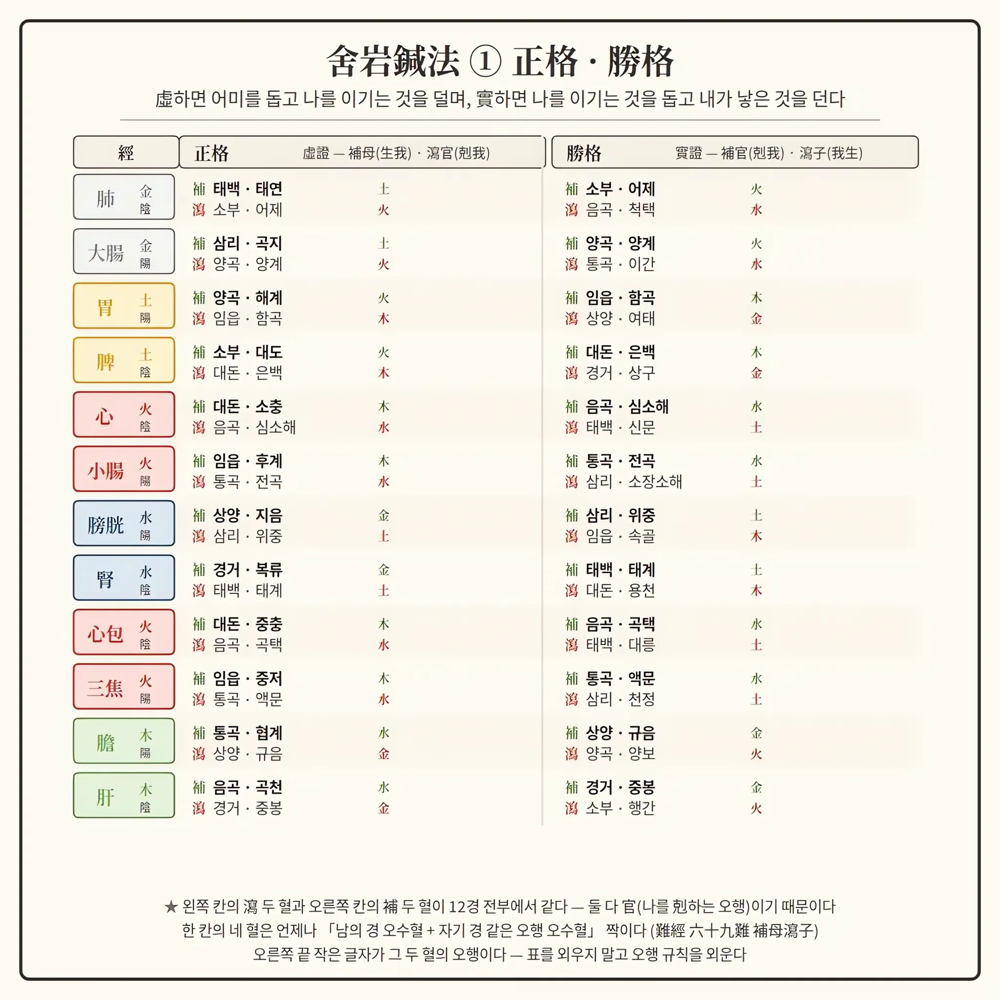
| 소품 | 잠그는 사실 (테스트 모드: 탭하여 확인) |
|---|---|
| 12행 × 2열, 한 칸에 補 두 혈 · 瀉 두 혈 왜? | 正格(虛證) = 補母(生我) · 瀉官(剋我) / 勝格(實證) = 補官(剋我) · 瀉子(我生) |
| 다리 — 도해는 자가테스트·역방향 판독의 대상이 아니다(CANON 74). 범례를 그림 안에 갖고 있다. ▸ 정산(2026-08-22, 규칙 111) — 무대 자리: 正格·勝格 → s18p09·s18p10. 오답 38회를 무대 둘이 상환했다 — 도해가 옳게 쓰인 본보기 | |
| 왼쪽 칸의 瀉 두 혈 = 오른쪽 칸의 補 두 혈 — 12경 전부 왜? | 둘 다 官(나를 剋하는 오행)이기 때문이다. 한 칸을 외우면 반대 칸이 딸려 온다 |
| 다리 — 도해는 자가테스트·역방향 판독의 대상이 아니다(CANON 74). 범례를 그림 안에 갖고 있다. ▸ 정산(2026-08-22, 규칙 111) — 무대 자리: 正格·勝格 → s18p09·s18p10. 오답 38회를 무대 둘이 상환했다 — 도해가 옳게 쓰인 본보기 | |
| 한 칸의 네 혈이 언제나 「남의 경 오수혈 + 자기 경 같은 오행 오수혈」 짝 왜? | 難經 六十九難 補母瀉子 — 表를 외우지 말고 오행 규칙을 외운다 |
| 다리 — 도해는 자가테스트·역방향 판독의 대상이 아니다(CANON 74). 범례를 그림 안에 갖고 있다. ▸ 정산(2026-08-22, 규칙 111) — 무대 자리: 正格·勝格 → s18p09·s18p10. 오답 38회를 무대 둘이 상환했다 — 도해가 옳게 쓰인 본보기 | |
| 오른쪽 끝 작은 글자 왜? | 그 두 혈의 오행. 陰經 井木滎火兪土經金合水 / 陽經 井金滎水兪木經火合土 |
| 다리 — 도해는 자가테스트·역방향 판독의 대상이 아니다(CANON 74). 범례를 그림 안에 갖고 있다. ▸ 정산(2026-08-22, 규칙 111) — 무대 자리: 正格·勝格 → s18p09·s18p10. 오답 38회를 무대 둘이 상환했다 — 도해가 옳게 쓰인 본보기 | |
| 예 — 肺(金) 왜? | 正格 補 태백·태연(土=母) 瀉 소부·어제(火=官) / 勝格 補 소부·어제(火) 瀉 음곡·척택(水=子) |
| 다리 — 도해는 자가테스트·역방향 판독의 대상이 아니다(CANON 74). 범례를 그림 안에 갖고 있다. ▸ 정산(2026-08-22, 규칙 111) — 무대 자리: 正格·勝格 → s18p09·s18p10. 오답 38회를 무대 둘이 상환했다 — 도해가 옳게 쓰인 본보기 | |
도해 문항 1 펼치기
| 1. 正格과 勝格의 뼈대는? | 正格 = 그 경이 虛할 때 — 나를 낳는 것(母)을 補하고 나를 이기는 것을 瀉한다. 勝格 = 그 경이 實할 때 — 나를 이기는 것을 補하고 나 자신(또는 내가 낳는 것)을 瀉한다舍岩道人鍼灸要訣 |
🔗 舍岩鍼法 ② 寒格 · 熱格 — 12경(도해) 경락·사암·도해 도해 · 문항 3 #s18d07
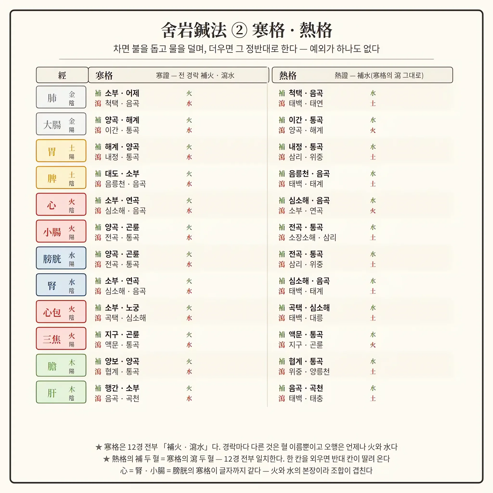
| 소품 | 잠그는 사실 (테스트 모드: 탭하여 확인) |
|---|---|
| 寒格 열두 줄의 오행 칸이 전부 火와 水 왜? | 寒格 = 전 경락 補火 · 瀉水 — 예외가 하나도 없다. 경락마다 다른 것은 혈 이름뿐이다 |
| 다리 — 도해는 자가테스트·역방향 판독의 대상이 아니다(CANON 74). 범례를 그림 안에 갖고 있다. ▸ 정산(2026-08-22, 규칙 111) — 무대 자리: 寒格·熱格 → s18p09·s18p10 | |
| 熱格의 補 두 혈 = 寒格의 瀉 두 혈 왜? | 12경 전부 일치 — 한 칸을 외우면 반대 칸이 딸려 온다 |
| 다리 — 도해는 자가테스트·역방향 판독의 대상이 아니다(CANON 74). 범례를 그림 안에 갖고 있다. ▸ 정산(2026-08-22, 규칙 111) — 무대 자리: 寒格·熱格 → s18p09·s18p10 | |
| 心 = 腎 · 小腸 = 膀胱의 寒格이 글자까지 같다 왜? | 火와 水의 본장이라 조합이 겹친다 |
| 다리 — 도해는 자가테스트·역방향 판독의 대상이 아니다(CANON 74). 범례를 그림 안에 갖고 있다. ▸ 정산(2026-08-22, 규칙 111) — 무대 자리: 寒格·熱格 → s18p09·s18p10 | |
| 예 — 肺 왜? | 寒格 補 소부·어제(火) 瀉 척택·음곡(水) / 熱格 補 척택·음곡(水) 瀉 태백·태연(土) |
| 다리 — 도해는 자가테스트·역방향 판독의 대상이 아니다(CANON 74). 범례를 그림 안에 갖고 있다. ▸ 정산(2026-08-22, 규칙 111) — 무대 자리: 寒格·熱格 → s18p09·s18p10 | |
도해 문항 3 펼치기
| 1. 寒格과 熱格의 뼈대는? | 寒格 = 寒證에 火를 補하고 水를 瀉한다 / 熱格 = 熱證에 水를 補하고 火를 瀉한다舍岩道人鍼灸要訣 |
| 2. 熱格의 瀉는 왜 한 가지로 못 짓는가? | 熱格은 열두 경 전부 **補水**로 같지만 **瀉는 경마다 갈린다** — 열두 경 중 **아홉 경이 土를 瀉하고 세 경(脾·胃·心包)이 火를 瀉한다.** 그래서 「熱格 = 補水瀉火」라는 한 줄 암기는 세 경에서 어긋난다. 이에 견주어 **寒格은 열두 경 전부 補火·瀉水로 예외가 없다**舍岩道人鍼灸要訣 |
| 3. 寒格에서 처방이 완전히 같아지는 짝은? | **心과 腎 · 小腸과 膀胱** — 寒格에서만 두 짝의 처방이 겹친다. 熱格에서는 갈린다舍岩道人鍼灸要訣 |
🔗 八會穴 ③ 원문 여덟과 갈리는 셋(도해) 경락·특정혈·팔회혈·판본·도해 도해 · 문항 21 #s18d08
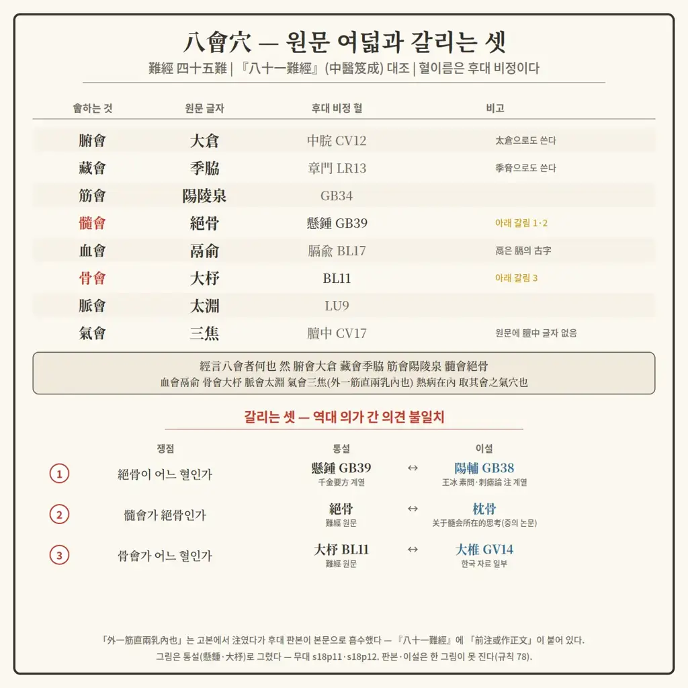
| 소품 | 잠그는 사실 (테스트 모드: 탭하여 확인) |
|---|---|
| 여덟 줄 — 會하는 것 / 원문 글자 / 후대 비정 혈 왜? | 難經 四十五難. ★ 원문 글자와 우리가 외우는 혈이름은 다른 층이다 — 大倉→中脘, 季脇→章門, 絕骨→懸鍾 |
| 다리 — 도해는 자가테스트·역방향 판독의 대상이 아니다(CANON 74). 범례를 그림 안에 갖고 있다. ▸ 정산(2026-08-22, 규칙 111) — 무대 자리: 여덟 전부 → s18p11(臟腑氣血 넷)·s18p12(骨脈筋髓 넷). 새는 자리 0 — 정산 만점 판 | |
| 붉은 「髓會」·「骨會」와 금색 비고 왜? | 이 둘만 이설이 있다. 나머지 여섯은 이견이 없다 |
| 다리 — 도해는 자가테스트·역방향 판독의 대상이 아니다(CANON 74). 범례를 그림 안에 갖고 있다. ▸ 정산(2026-08-22, 규칙 111) — 무대 자리: 여덟 전부 → s18p11(臟腑氣血 넷)·s18p12(骨脈筋髓 넷). 새는 자리 0 — 정산 만점 판 | |
| 갈림 1 — 絕骨이 어느 혈인가 왜? | 懸鍾 GB39(『千金要方』 계열, 통설) ↔ 陽輔 GB38(王冰 『素問·刺瘧論』注 계열). 「絕骨」은 원래 혈이름이 아니라 **비골이 끊기는 해부 표지**였다 — 그래서 배당이 갈렸다. 두 혈은 1촌 차이 |
| 다리 — 도해는 자가테스트·역방향 판독의 대상이 아니다(CANON 74). 범례를 그림 안에 갖고 있다. ▸ 정산(2026-08-22, 규칙 111) — 무대 자리: 여덟 전부 → s18p11(臟腑氣血 넷)·s18p12(骨脈筋髓 넷). 새는 자리 0 — 정산 만점 판 | |
| 갈림 2 — 髓會가 絕骨인가 왜? | 絕骨(難經 원문) ↔ 枕骨. 중의 논문 「关于髓会所在的思考」가 腎兪·陽輔·枕骨 이설을 함께 든다 |
| 다리 — 도해는 자가테스트·역방향 판독의 대상이 아니다(CANON 74). 범례를 그림 안에 갖고 있다. ▸ 정산(2026-08-22, 규칙 111) — 무대 자리: 여덟 전부 → s18p11(臟腑氣血 넷)·s18p12(骨脈筋髓 넷). 새는 자리 0 — 정산 만점 판 | |
| 갈림 3 — 骨會가 어느 혈인가 왜? | 大杼 BL11(難經 원문) ↔ 大椎 GV14. 한국 자료 일부가 大椎로 표기한다. 한국 논문(대한침구의학회지 「黃帝內經靈樞에서 살펴본 八會穴의 의의와 형성체계」)이 세 쟁점을 함께 「역대 의가 간 의견 불일치」로 정리했다 |
| 다리 — 도해는 자가테스트·역방향 판독의 대상이 아니다(CANON 74). 범례를 그림 안에 갖고 있다. ▸ 정산(2026-08-22, 규칙 111) — 무대 자리: 여덟 전부 → s18p11(臟腑氣血 넷)·s18p12(骨脈筋髓 넷). 새는 자리 0 — 정산 만점 판 | |
| ⚠ 판본 차이 셋 — 大倉/太倉 · 腑/府 · 鬲俞/膈俞 왜? | 고본 계열(『八十一難經』·古文島)은 **鬲俞**, 후대 주석본(黃元御 『難經懸解』)·현대 침구서는 膈俞, 일본판은 鬲兪. 鬲은 膈의 古字라 같은 혈이지만, 원문을 인용할 때는 판본을 밝혀야 한다 |
| 다리 — 도해는 자가테스트·역방향 판독의 대상이 아니다(CANON 74). 범례를 그림 안에 갖고 있다. ▸ 정산(2026-08-22, 규칙 111) — 무대 자리: 여덟 전부 → s18p11(臟腑氣血 넷)·s18p12(骨脈筋髓 넷). 새는 자리 0 — 정산 만점 판 | |
| ⚠ 氣會에 「膻中」이라는 글자는 원문에 없다 왜? | 원문은 위치 묘사 「三焦外一筋直兩乳內也」뿐이고 膻中은 후대 비정이다. 게다가 그 구절 자체가 원래 注였다가 후대에 본문으로 흡수됐다 — 『八十一難經』에 편집자 주 「前注或作正文」이 그대로 붙어 있다 |
| 다리 — 도해는 자가테스트·역방향 판독의 대상이 아니다(CANON 74). 범례를 그림 안에 갖고 있다. ▸ 정산(2026-08-22, 규칙 111) — 무대 자리: 여덟 전부 → s18p11(臟腑氣血 넷)·s18p12(骨脈筋髓 넷). 새는 자리 0 — 정산 만점 판 | |
도해 문항 21 펼치기
| 1. 臟會는 어느 혈인가? | 章門 — 足厥陰肝經에 있다. 겸직 — 脾의 募穴. 글자 다리: 문(門)難經 四十五難 |
| 2. 章門는 무엇의 會인가? | 臟會難經 四十五難 |
| 3. 腑會는 어느 혈인가? | 中脘 — 任脈에 있다. 겸직 — 胃의 募穴. 글자 다리: 밥통 한가운데(脘)難經 四十五難 |
| 4. 中脘는 무엇의 會인가? | 腑會難經 四十五難 |
| 5. 氣會는 어느 혈인가? | 膻中 — 任脈에 있다. 겸직 — 心包의 募穴. 글자 다리: 가슴 한복판(膻)難經 四十五難 |
| 6. 膻中는 무엇의 會인가? | 氣會難經 四十五難 |
| 7. 血會는 어느 혈인가? | 膈兪 — 足太陽膀胱經에 있다. 겸직 — 背兪穴이 아니다. 글자 다리: 가로막(膈)難經 四十五難 |
| 8. 膈兪는 무엇의 會인가? | 血會難經 四十五難 |
| 9. 筋會는 어느 혈인가? | 陽陵泉 — 足少陽膽經에 있다. 겸직 — 膽의 合穴 · 下合穴. 글자 다리: 언덕(陵)의 샘(泉)難經 四十五難 |
| 10. 陽陵泉는 무엇의 會인가? | 筋會難經 四十五難 |
| 11. 脈會는 어느 혈인가? | 太淵 — 手太陰肺經에 있다. 겸직 — 肺의 原穴 = 兪穴. 글자 다리: 깊은 못(淵)難經 四十五難 |
| 12. 太淵는 무엇의 會인가? | 脈會難經 四十五難 |
| 13. 骨會는 어느 혈인가? | 大杼 — 足太陽膀胱經에 있다. 겸직 없음. 글자 다리: 큰 베틀북(杼)難經 四十五難 |
| 14. 大杼는 무엇의 會인가? | 骨會難經 四十五難 |
| 15. 髓會는 어느 혈인가? | 絶骨 — 足少陽膽經에 있다. 겸직 — 懸鍾과 같은 혈. 글자 다리: 매달린 종(懸鍾)難經 四十五難 |
| 16. 絶骨는 무엇의 會인가? | 髓會難經 四十五難 |
| 17. ⚠ 脈會를 列缺로 잘못 고르는 이유는? | 경락 1차분 Q17 오답지 ① — 列缺은 肺의 絡穴이다. 太淵과 列缺이 둘 다 肺經이라 바로 옆에 붙어 있어 바뀐다 (s18d05 첫 줄)難經 四十五難 |
| 18. ⚠ 氣會를 關元로 잘못 고르는 이유는? | 경락 2차분 Q108 오답지 ⑤ — 關元은 小腸의 募穴이다難經 四十五難 |
| 19. ⚠ 血會(膈兪)를 잘못 고르는 자리는 어디인가? | s18d04[2] — 膈兪는 열두 背兪穴에 안 든다. 八會穴의 血會다. 최약 카드 오답 13회難經 四十五難 |
| 20. ⚠ 髓會를 大杼로 잘못 고르는 이유는? | 骨會 大杼와 髓會 絶骨을 서로 바꾼다 — 둘 다 「뼈」 글자라 붙는다難經 四十五難 |
| 21. 八會穴 원문 여덟 줄을 그대로? | 腑會大倉 · 藏會季脇 · 筋會陽陵泉 · 髓會絕骨 · 血會鬲俞 · 骨會大杼 · 脈會太淵 · 氣會三焦(外一筋直兩乳內也). 판본 차이 — 大倉/太倉 · 腑/府 · 鬲俞/膈俞(鬲은 膈의 古字, 같은 혈)難經 四十五難 |
🔗 十二經脈 — 起·止·連屬·是主 대조표(도해) 경락·십이경맥·유주·도해 도해 · 문항 73 #s18d09
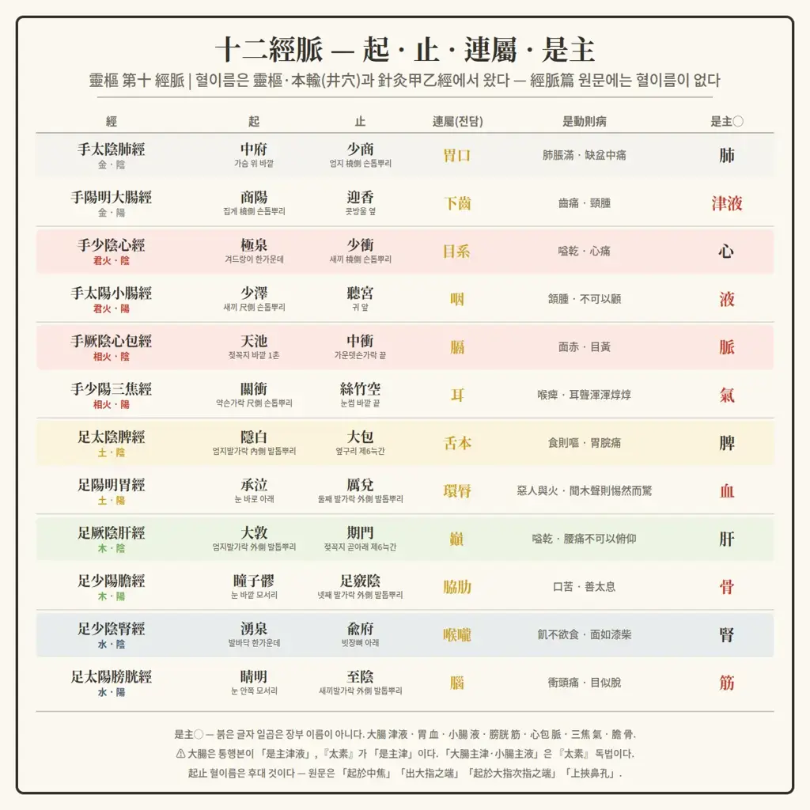
| 소품 | 잠그는 사실 (테스트 모드: 탭하여 확인) |
|---|---|
| 12줄 × 여섯 열 — 經 / 起 / 止 / 連屬(전담) / 是動則病 / 是主◯ 왜? | 표리 짝끼리 붙여 놓았다. 手 3쌍(金·君火·相火) · 足 3쌍(土·木·水)으로 정확히 갈린다 |
| 다리 — 도해는 자가테스트·역방향 판독의 대상이 아니다(CANON 74). 범례를 그림 안에 갖고 있다. ▸ 정산(2026-08-22, 규칙 111) — 무대 자리 없음 — **문항 61개**가 진다(오답 20회 상환: 是動7·유주6·連屬4·所生3). ⚠ 유주 **무대**는 2026-08-18 사용자 판단으로 폐기했다 — 문항만 남긴다. 是動↔所生을 가르는 것은 難經 二十二難 「是動者氣也 所生病者血也 … 故先爲是動 後所生病也」이고, 이 氣血 해석은 **難經의 풀이**이지 靈樞·經脈 원문에는 없다 | |
| ★ 是主◯ 열의 붉은 글자 일곱 왜? | 十二經 중 **臟腑 이름이 是主에 오는 것은 다섯뿐**이다(肺·心·脾·肝·腎). 나머지 일곱은 大腸 津液 · 胃 血 · 小腸 液 · 膀胱 筋 · 心包 脈 · 三焦 氣 · 膽 骨. 「是主骨所生病者 — 어느 경인가」가 그대로 문제가 된다 |
| 다리 — 도해는 자가테스트·역방향 판독의 대상이 아니다(CANON 74). 범례를 그림 안에 갖고 있다. ▸ 정산(2026-08-22, 규칙 111) — 무대 자리 없음 — **문항 61개**가 진다(오답 20회 상환: 是動7·유주6·連屬4·所生3). ⚠ 유주 **무대**는 2026-08-18 사용자 판단으로 폐기했다 — 문항만 남긴다. 是動↔所生을 가르는 것은 難經 二十二難 「是動者氣也 所生病者血也 … 故先爲是動 後所生病也」이고, 이 氣血 해석은 **難經의 풀이**이지 靈樞·經脈 원문에는 없다 | |
| 금색 連屬 열 — 한 경에 한 자리씩 왜? | 경맥이 도중에 닿는 곳 중 **그 경만의 자리**를 하나씩 배정했다. 12자리 중복 0 · 전부 원문 연속 목록 안. ⚠ 肺는 中焦가 아니라 **胃口**다 — 中焦는 起點이라 起止 열과 충돌한다(「起於中焦 下絡大腸 還循胃口」) |
| 다리 — 도해는 자가테스트·역방향 판독의 대상이 아니다(CANON 74). 범례를 그림 안에 갖고 있다. ▸ 정산(2026-08-22, 규칙 111) — 무대 자리 없음 — **문항 61개**가 진다(오답 20회 상환: 是動7·유주6·連屬4·所生3). ⚠ 유주 **무대**는 2026-08-18 사용자 판단으로 폐기했다 — 문항만 남긴다. 是動↔所生을 가르는 것은 難經 二十二難 「是動者氣也 所生病者血也 … 故先爲是動 後所生病也」이고, 이 氣血 해석은 **難經의 풀이**이지 靈樞·經脈 원문에는 없다 | |
| ⚠ 「經脈」篇 원문에는 혈이름이 하나도 없다 왜? | 中府·迎香은 『針灸甲乙經』, 少商·商陽은 『靈樞·本輸』에서 왔다. 「經脈」篇 원문은 「起於中焦」「出大指之端」「起於大指次指之端」「上挾鼻孔」처럼 부위로만 되어 있다. 「起穴 中府 → 止穴 少商」이라는 서술 자체가 후대 합성이다 |
| 다리 — 도해는 자가테스트·역방향 판독의 대상이 아니다(CANON 74). 범례를 그림 안에 갖고 있다. ▸ 정산(2026-08-22, 규칙 111) — 무대 자리 없음 — **문항 61개**가 진다(오답 20회 상환: 是動7·유주6·連屬4·所生3). ⚠ 유주 **무대**는 2026-08-18 사용자 판단으로 폐기했다 — 문항만 남긴다. 是動↔所生을 가르는 것은 難經 二十二難 「是動者氣也 所生病者血也 … 故先爲是動 後所生病也」이고, 이 氣血 해석은 **難經의 풀이**이지 靈樞·經脈 원문에는 없다 | |
| ⚠ 大腸 是主 — 통행본은 「津液」, 『太素』는 「津」 왜? | 『靈樞』 통행본 5곳이 모두 **是主津液所生病者**. 『黃帝內經太素』(楊上善)는 **是主津所生病者**. 결정적 물증은 太素 원문 뒤의 楊上善 注 「…津，汗也」 — 주석이 단독 「津」을 풀이한다. 한국 교재의 「大腸主津·小腸主液」은 원문 글자가 아니라 『太素』 독법이다(小腸=液은 통행본도 원문 그대로) |
| 다리 — 도해는 자가테스트·역방향 판독의 대상이 아니다(CANON 74). 범례를 그림 안에 갖고 있다. ▸ 정산(2026-08-22, 규칙 111) — 무대 자리 없음 — **문항 61개**가 진다(오답 20회 상환: 是動7·유주6·連屬4·所生3). ⚠ 유주 **무대**는 2026-08-18 사용자 판단으로 폐기했다 — 문항만 남긴다. 是動↔所生을 가르는 것은 難經 二十二難 「是動者氣也 所生病者血也 … 故先爲是動 後所生病也」이고, 이 氣血 해석은 **難經의 풀이**이지 靈樞·經脈 원문에는 없다 | |
| ⚠ 是動 열에 안 쓴 병후 열둘 왜? | 경맥끼리 겹치는 것들이다 — 喉痺·嗌乾·心痛·掌中熱·汗出·煩心·瘧·目銳眥痛·目黃·頸腫·黃疸·鼽衄. **目黃 하나가 5경에 걸린다.** 이 열두 개는 어느 경의 표지도 될 수 없다 |
| 다리 — 도해는 자가테스트·역방향 판독의 대상이 아니다(CANON 74). 범례를 그림 안에 갖고 있다. ▸ 정산(2026-08-22, 규칙 111) — 무대 자리 없음 — **문항 61개**가 진다(오답 20회 상환: 是動7·유주6·連屬4·所生3). ⚠ 유주 **무대**는 2026-08-18 사용자 판단으로 폐기했다 — 문항만 남긴다. 是動↔所生을 가르는 것은 難經 二十二難 「是動者氣也 所生病者血也 … 故先爲是動 後所生病也」이고, 이 氣血 해석은 **難經의 풀이**이지 靈樞·經脈 원문에는 없다 | |
| ⚠ 大腸 是動 頸腫 — 판본이 갈린다 왜? | 『靈樞』 통행본 頸腫 ↔ 『甲乙經』 頰腫 ↔ 『太素』 仁和寺 사본은 결자(□腫) |
| 다리 — 도해는 자가테스트·역방향 판독의 대상이 아니다(CANON 74). 범례를 그림 안에 갖고 있다. ▸ 정산(2026-08-22, 규칙 111) — 무대 자리 없음 — **문항 61개**가 진다(오답 20회 상환: 是動7·유주6·連屬4·所生3). ⚠ 유주 **무대**는 2026-08-18 사용자 판단으로 폐기했다 — 문항만 남긴다. 是動↔所生을 가르는 것은 難經 二十二難 「是動者氣也 所生病者血也 … 故先爲是動 後所生病也」이고, 이 氣血 해석은 **難經의 풀이**이지 靈樞·經脈 원문에는 없다 | |
도해 문항 73 펼치기
| 1. 手太陰肺經의 是主는 무엇인가? | 是主 肺所生病者靈樞·經脈 |
| 2. 手陽明大腸經의 是主는 무엇인가? | 是主 津液所生病者靈樞·經脈 |
| 3. 足陽明胃經의 是主는 무엇인가? | 是主 血所生病者靈樞·經脈 |
| 4. 足太陰脾經의 是主는 무엇인가? | 是主 脾所生病者靈樞·經脈 |
| 5. 手少陰心經의 是主는 무엇인가? | 是主 心所生病者靈樞·經脈 |
| 6. 手太陽小腸經의 是主는 무엇인가? | 是主 液所生病者靈樞·經脈 |
| 7. 足太陽膀胱經의 是主는 무엇인가? | 是主 筋所生病者靈樞·經脈 |
| 8. 足少陰腎經의 是主는 무엇인가? | 是主 腎所生病者靈樞·經脈 |
| 9. 手厥陰心包經의 是主는 무엇인가? | 是主 脈所生病者靈樞·經脈 |
| 10. 手少陽三焦經의 是主는 무엇인가? | 是主 氣所生病者靈樞·經脈 |
| 11. 足少陽膽經의 是主는 무엇인가? | 是主 骨所生病者靈樞·經脈 |
| 12. 足厥陰肝經의 是主는 무엇인가? | 是主 肝所生病者靈樞·經脈 |
| 13. 十二經 중 **是主에 臟腑 이름이 오지 않는** 것은 몇이며 각각 무엇인가? | 일곱 — 手陽明大腸經 津液 · 足陽明胃經 血 · 手太陽小腸經 液 · 足太陽膀胱經 筋 · 手厥陰心包經 脈 · 手少陽三焦經 氣 · 足少陽膽經 骨靈樞·經脈 |
| 14. 「是主津液所生病者」 — 어느 경인가? | 手陽明大腸經靈樞·經脈 |
| 15. 「是主血所生病者」 — 어느 경인가? | 足陽明胃經靈樞·經脈 |
| 16. 「是主液所生病者」 — 어느 경인가? | 手太陽小腸經靈樞·經脈 |
| 17. 「是主筋所生病者」 — 어느 경인가? | 足太陽膀胱經靈樞·經脈 |
| 18. 「是主脈所生病者」 — 어느 경인가? | 手厥陰心包經靈樞·經脈 |
| 19. 「是主氣所生病者」 — 어느 경인가? | 手少陽三焦經靈樞·經脈 |
| 20. 「是主骨所生病者」 — 어느 경인가? | 足少陽膽經靈樞·經脈 |
| 21. 手太陰肺經이 도중에 닿는 곳(連屬) 가운데 **그 경만의 자리**는? | 胃口 (그 경의 연속 목록 전부 — 中焦 · 肺 · 大腸 · 胃口 · 肺系)靈樞·經脈 |
| 22. 手太陰肺經의 是動則病은? | 肺脹滿 · 缺盆中痛 · 臂厥 (是動·所生 양쪽에 걸리는 것 — 喘 · 咳)靈樞·經脈 |
| 23. 手陽明大腸經이 도중에 닿는 곳(連屬) 가운데 **그 경만의 자리**는? | 下齒 (그 경의 연속 목록 전부 — 缺盆 · 大腸 · 肺 · 下齒 · 口 · 鼻)靈樞·經脈 |
| 24. 手陽明大腸經의 是動則病은? | 齒痛 · 頸腫靈樞·經脈 |
| 25. 足陽明胃經이 도중에 닿는 곳(連屬) 가운데 **그 경만의 자리**는? | 鼻 (그 경의 연속 목록 전부 — 缺盆 · 胃 · 脾 · 鼻 · 上齒 · 脣 · 咽喉 · 乳)靈樞·經脈 |
| 26. 足陽明胃經의 是動則病은? | 惡人與火 · 聞木聲則惕然而驚 · 顔黑靈樞·經脈 |
| 27. 足太陰脾經이 도중에 닿는 곳(連屬) 가운데 **그 경만의 자리**는? | 舌本 (그 경의 연속 목록 전부 — 脾 · 胃 · 咽 · 舌本 · 心)靈樞·經脈 |
| 28. 足太陰脾經의 是動則病은? | 食則嘔 · 胃脘痛 · 腹脹善噫 (是動·所生 양쪽에 걸리는 것 — 舌本)靈樞·經脈 |
| 29. 手少陰心經이 도중에 닿는 곳(連屬) 가운데 **그 경만의 자리**는? | 目系 (그 경의 연속 목록 전부 — 心系 · 心 · 小腸 · 咽 · 目系)靈樞·經脈 |
| 30. 手少陰心經의 是動則病은? | 嗌乾 · 心痛 · 渴而欲飮靈樞·經脈 |
| 31. 手太陽小腸經이 도중에 닿는 곳(連屬) 가운데 **그 경만의 자리**는? | 耳 (그 경의 연속 목록 전부 — 胃 · 鼻 · 目內眥 · 缺盆 · 小腸 · 心 · 咽 · 目銳眥 · 耳)靈樞·經脈 |
| 32. 手太陽小腸經의 是動則病은? | 頷腫 · 不可以顧 · 肩似拔 · 臑似折靈樞·經脈 |
| 33. 足太陽膀胱經이 도중에 닿는 곳(連屬) 가운데 **그 경만의 자리**는? | 腦 (그 경의 연속 목록 전부 — 膀胱 · 腎 · 目內眥 · 巓 · 腦 · 耳上角)靈樞·經脈 |
| 34. 足太陽膀胱經의 是動則病은? | 衝頭痛 · 目似脫 · 項如拔 · 腰似折靈樞·經脈 |
| 35. 足少陰腎經이 도중에 닿는 곳(連屬) 가운데 **그 경만의 자리**는? | 舌本 兩旁 (그 경의 연속 목록 전부 — 腎 · 膀胱 · 肝 · 膈 · 肺 · 心 · 喉嚨 · 舌本)靈樞·經脈 |
| 36. 足少陰腎經의 是動則病은? | 飢不欲食 · 面如漆柴 · 咳唾有血 · 坐而欲起 · 心如懸若飢狀靈樞·經脈 |
| 37. 手厥陰心包經이 도중에 닿는 곳(連屬) 가운데 **그 경만의 자리**는? | 心包絡 (그 경의 연속 목록 전부 — 心包絡 · 三焦 · 膈 · 胸中)靈樞·經脈 |
| 38. 手厥陰心包經의 是動則病은? | 面赤 · 目黃 · 手心熱 · 臂肘攣急 · 腋腫 · 心中憺憺大動 · 喜笑不休靈樞·經脈 |
| 39. 手少陽三焦經이 도중에 닿는 곳(連屬) 가운데 **그 경만의 자리**는? | 耳後 (그 경의 연속 목록 전부 — 缺盆 · 三焦 · 心包 · 耳 · 目銳眥 · 膻中)靈樞·經脈 |
| 40. 手少陽三焦經의 是動則病은? | 喉痺 · 耳聾渾渾焞焞 · 嗌腫靈樞·經脈 |
| 41. 足少陽膽經이 도중에 닿는 곳(連屬) 가운데 **그 경만의 자리**는? | 目銳眥 (그 경의 연속 목록 전부 — 頄 · 膽 · 肝 · 目銳眥 · 耳 · 缺盆 · 脇肋)靈樞·經脈 |
| 42. 足少陽膽經의 是動則病은? | 口苦 · 善太息 · 不能轉側 · 面微有塵 · 體無膏澤 · 足外反熱靈樞·經脈 |
| 43. 足厥陰肝經이 도중에 닿는 곳(連屬) 가운데 **그 경만의 자리**는? | 陰器 (그 경의 연속 목록 전부 — 肺 · 胃 · 肝 · 膽 · 陰器 · 喉嚨 · 目系 · 脣內 · 巓)靈樞·經脈 |
| 44. 足厥陰肝經의 是動則病은? | 嗌乾 · 腰痛不可以俯仰 · 㿉疝 · 少腹腫 · 面塵脫色靈樞·經脈 |
| 45. 手太陰肺經은 어디서 일어나 무엇을 거쳐 어디서 끝나는가? | 원문 「**肺手太陰之脈，起於中焦**」 — 「經脈」篇은 혈이름이 아니라 부위로 시작한다. 후대 혈이름으로는 起 中府(가슴 위 바깥) → 닿는 곳 中焦 · 肺 · 大腸 · 胃口 · 肺系 → 止 少商(엄지 橈側 손톱뿌리) [手太陰 從胸走手]靈樞·經脈 |
| 46. 手陽明大腸經은 어디서 일어나 무엇을 거쳐 어디서 끝나는가? | 원문 「**大腸手陽明之脈，起於大指次指之端**」 — 「經脈」篇은 혈이름이 아니라 부위로 시작한다. 후대 혈이름으로는 起 商陽(집게 橈側 손톱뿌리) → 닿는 곳 缺盆 · 大腸 · 肺 · 下齒 · 口 · 鼻 → 止 迎香(콧방울 옆) [手陽明 從手走頭]靈樞·經脈 |
| 47. 足陽明胃經은 어디서 일어나 무엇을 거쳐 어디서 끝나는가? | 원문 「**胃足陽明之脈，起於鼻之交頞中**」 — 「經脈」篇은 혈이름이 아니라 부위로 시작한다. 후대 혈이름으로는 起 承泣(눈 바로 아래) → 닿는 곳 缺盆 · 胃 · 脾 · 鼻 · 上齒 · 脣 · 咽喉 · 乳 → 止 厲兌(둘째 발가락 外側 발톱뿌리) [足陽明 從頭走足]靈樞·經脈 |
| 48. 足太陰脾經은 어디서 일어나 무엇을 거쳐 어디서 끝나는가? | 원문 「**脾足太陰之脈，起於大趾之端**」 — 「經脈」篇은 혈이름이 아니라 부위로 시작한다. 후대 혈이름으로는 起 隱白(엄지발가락 內側 발톱뿌리) → 닿는 곳 脾 · 胃 · 咽 · 舌本 · 心 → 止 大包(옆구리 제6늑간) [足太陰 從足走腹]靈樞·經脈 |
| 49. 手少陰心經은 어디서 일어나 무엇을 거쳐 어디서 끝나는가? | 원문 「**心手少陰之脈，起於心中**」 — 「經脈」篇은 혈이름이 아니라 부위로 시작한다. 후대 혈이름으로는 起 極泉(겨드랑이 한가운데) → 닿는 곳 心系 · 心 · 小腸 · 咽 · 目系 → 止 少衝(새끼 橈側 손톱뿌리) [手少陰 從胸走手]靈樞·經脈 |
| 50. 手太陽小腸經은 어디서 일어나 무엇을 거쳐 어디서 끝나는가? | 원문 「**小腸手太陽之脈，起於小指之端**」 — 「經脈」篇은 혈이름이 아니라 부위로 시작한다. 후대 혈이름으로는 起 少澤(새끼 尺側 손톱뿌리) → 닿는 곳 胃 · 鼻 · 目內眥 · 缺盆 · 小腸 · 心 · 咽 · 目銳眥 · 耳 → 止 聽宮(귀 앞) [手太陽 從手走頭]靈樞·經脈 |
| 51. 足太陽膀胱經은 어디서 일어나 무엇을 거쳐 어디서 끝나는가? | 원문 「**膀胱足太陽之脈，起於目內眥**」 — 「經脈」篇은 혈이름이 아니라 부위로 시작한다. 후대 혈이름으로는 起 睛明(눈 안쪽 모서리) → 닿는 곳 膀胱 · 腎 · 目內眥 · 巓 · 腦 · 耳上角 → 止 至陰(새끼발가락 外側 발톱뿌리) [足太陽 從頭走足]靈樞·經脈 |
| 52. 足少陰腎經은 어디서 일어나 무엇을 거쳐 어디서 끝나는가? | 원문 「**腎足少陰之脈，起於小趾之下**」 — 「經脈」篇은 혈이름이 아니라 부위로 시작한다. 후대 혈이름으로는 起 湧泉(발바닥 한가운데) → 닿는 곳 腎 · 膀胱 · 肝 · 膈 · 肺 · 心 · 喉嚨 · 舌本 → 止 兪府(빗장뼈 아래) [足少陰 從足走腹]靈樞·經脈 |
| 53. 手厥陰心包經은 어디서 일어나 무엇을 거쳐 어디서 끝나는가? | 원문 「**心主手厥陰心包絡之脈，起於胸中**」 — 「經脈」篇은 혈이름이 아니라 부위로 시작한다. 후대 혈이름으로는 起 天池(젖꼭지 바깥 1촌) → 닿는 곳 心包絡 · 三焦 · 膈 · 胸中 → 止 中衝(가운뎃손가락 끝) [手厥陰 從胸走手]靈樞·經脈 |
| 54. 手少陽三焦經은 어디서 일어나 무엇을 거쳐 어디서 끝나는가? | 원문 「**三焦手少陽之脈，起於小指次指之端**」 — 「經脈」篇은 혈이름이 아니라 부위로 시작한다. 후대 혈이름으로는 起 關衝(약손가락 尺側 손톱뿌리) → 닿는 곳 缺盆 · 三焦 · 心包 · 耳 · 目銳眥 · 膻中 → 止 絲竹空(눈썹 바깥 끝) [手少陽 從手走頭]靈樞·經脈 |
| 55. 足少陽膽經은 어디서 일어나 무엇을 거쳐 어디서 끝나는가? | 원문 「**膽足少陽之脈，起於目銳眥**」 — 「經脈」篇은 혈이름이 아니라 부위로 시작한다. 후대 혈이름으로는 起 瞳子髎(눈 바깥 모서리) → 닿는 곳 頄 · 膽 · 肝 · 目銳眥 · 耳 · 缺盆 · 脇肋 → 止 足竅陰(넷째 발가락 外側 발톱뿌리) [足少陽 從頭走足]靈樞·經脈 |
| 56. 足厥陰肝經은 어디서 일어나 무엇을 거쳐 어디서 끝나는가? | 원문 「**肝足厥陰之脈，起於大趾叢毛之際**」 — 「經脈」篇은 혈이름이 아니라 부위로 시작한다. 후대 혈이름으로는 起 大敦(엄지발가락 外側 발톱뿌리) → 닿는 곳 肺 · 胃 · 肝 · 膽 · 陰器 · 喉嚨 · 目系 · 脣內 · 巓 → 止 期門(젖꼭지 곧아래 제6늑간) [足厥陰 從足走腹]靈樞·經脈 |
| 57. 是動과 所生病을 무엇이 가르는가 — 원문 한 줄로? | 「經言 **是動者，氣也；所生病者，血也**。邪在氣，氣爲是動；邪在血，血爲所生病。**氣主呴之，血主濡之**。氣留而不行者，爲氣先病也；血壅而不濡者，爲血後病也。**故先爲是動，後所生病也**」 — 是動이 먼저(氣), 所生이 나중(血)이다難經 二十二難 (jicheng.tw 八十一難經 원문 확인) |
| 58. 「一脈輒變爲二病」 — 무슨 물음인가? | 二十二難의 첫 물음이다 — 「脈有是動，有所生病。一脈輒變爲二病者，何也」. **한 경맥이 어떻게 두 갈래 병이 되는가**를 묻고, 그 답이 氣/血이다. ⚠ 이 氣血 해석은 **難經의 풀이**이고 靈樞·經脈 원문에는 없다 — 두 층을 갈라 적는다難經 二十二難 |
| 59. ⚠ 是動/所生에 難經 氣血설 말고 다른 해석이 있는가? | 있다 — 「是動 = 本經 자신의 병 / 所生病 = 그 경이 낳은(다른 데로 미친) 병」이라는 후대 해석. 難經 二十二難의 氣血설과 나란히 전해진다. **출전을 물으면 氣血설은 難經이라고 답한다**難經 二十二難 + 후대 주석 |
| 60. ⚠ 어느 경에도 표지가 될 수 없는 병후 열둘은? | 喉痺·嗌乾·心痛·掌中熱·汗出·煩心·瘧·目銳眥痛·目黃·頸腫·黃疸·鼽衄 — 경맥끼리 겹친다. **目黃 하나가 5경에 걸린다**靈樞·經脈 |
| 61. ⚠ 大腸의 是主는 통행본과 太素가 어떻게 갈리는가? | 『靈樞』 통행본 다섯 곳이 모두 **是主津液所生病者** / 『黃帝內經太素』(楊上善)는 **是主津所生病者**. 결정적 물증은 太素 원문 뒤의 楊上善 注 「…津，汗也」 — 주석이 단독 「津」을 풀이한다靈樞·經脈 통행본 ↔ 黃帝內經太素 |
| 62. 手太陰肺經의 起穴과 止穴은? | 起 中府(가슴 위 바깥) → 止 少商(엄지 橈側 손톱뿌리) ⚠ 「經脈」篇 원문에는 혈이름이 없다 — 『甲乙經』·『靈樞 本輸』에서 온 이름이다靈樞·經脈 + 針灸甲乙經 |
| 63. 手陽明大腸經의 起穴과 止穴은? | 起 商陽(집게 橈側 손톱뿌리) → 止 迎香(콧방울 옆) ⚠ 「經脈」篇 원문에는 혈이름이 없다 — 『甲乙經』·『靈樞 本輸』에서 온 이름이다靈樞·經脈 + 針灸甲乙經 |
| 64. 足陽明胃經의 起穴과 止穴은? | 起 承泣(눈 바로 아래) → 止 厲兌(둘째 발가락 外側 발톱뿌리) ⚠ 「經脈」篇 원문에는 혈이름이 없다 — 『甲乙經』·『靈樞 本輸』에서 온 이름이다靈樞·經脈 + 針灸甲乙經 |
| 65. 足太陰脾經의 起穴과 止穴은? | 起 隱白(엄지발가락 內側 발톱뿌리) → 止 大包(옆구리 제6늑간) ⚠ 「經脈」篇 원문에는 혈이름이 없다 — 『甲乙經』·『靈樞 本輸』에서 온 이름이다靈樞·經脈 + 針灸甲乙經 |
| 66. 手少陰心經의 起穴과 止穴은? | 起 極泉(겨드랑이 한가운데) → 止 少衝(새끼 橈側 손톱뿌리) ⚠ 「經脈」篇 원문에는 혈이름이 없다 — 『甲乙經』·『靈樞 本輸』에서 온 이름이다靈樞·經脈 + 針灸甲乙經 |
| 67. 手太陽小腸經의 起穴과 止穴은? | 起 少澤(새끼 尺側 손톱뿌리) → 止 聽宮(귀 앞) ⚠ 「經脈」篇 원문에는 혈이름이 없다 — 『甲乙經』·『靈樞 本輸』에서 온 이름이다靈樞·經脈 + 針灸甲乙經 |
| 68. 足太陽膀胱經의 起穴과 止穴은? | 起 睛明(눈 안쪽 모서리) → 止 至陰(새끼발가락 外側 발톱뿌리) ⚠ 「經脈」篇 원문에는 혈이름이 없다 — 『甲乙經』·『靈樞 本輸』에서 온 이름이다靈樞·經脈 + 針灸甲乙經 |
| 69. 足少陰腎經의 起穴과 止穴은? | 起 湧泉(발바닥 한가운데) → 止 兪府(빗장뼈 아래) ⚠ 「經脈」篇 원문에는 혈이름이 없다 — 『甲乙經』·『靈樞 本輸』에서 온 이름이다靈樞·經脈 + 針灸甲乙經 |
| 70. 手厥陰心包經의 起穴과 止穴은? | 起 天池(젖꼭지 바깥 1촌) → 止 中衝(가운뎃손가락 끝) ⚠ 「經脈」篇 원문에는 혈이름이 없다 — 『甲乙經』·『靈樞 本輸』에서 온 이름이다靈樞·經脈 + 針灸甲乙經 |
| 71. 手少陽三焦經의 起穴과 止穴은? | 起 關衝(약손가락 尺側 손톱뿌리) → 止 絲竹空(눈썹 바깥 끝) ⚠ 「經脈」篇 원문에는 혈이름이 없다 — 『甲乙經』·『靈樞 本輸』에서 온 이름이다靈樞·經脈 + 針灸甲乙經 |
| 72. 足少陽膽經의 起穴과 止穴은? | 起 瞳子髎(눈 바깥 모서리) → 止 足竅陰(넷째 발가락 外側 발톱뿌리) ⚠ 「經脈」篇 원문에는 혈이름이 없다 — 『甲乙經』·『靈樞 本輸』에서 온 이름이다靈樞·經脈 + 針灸甲乙經 |
| 73. 足厥陰肝經의 起穴과 止穴은? | 起 大敦(엄지발가락 外側 발톱뿌리) → 止 期門(젖꼭지 곧아래 제6늑간) ⚠ 「經脈」篇 원문에는 혈이름이 없다 — 『甲乙經』·『靈樞 本輸』에서 온 이름이다靈樞·經脈 + 針灸甲乙經 |
🔗 舍岩鍼法 — 바위에 기댄 초가 네 칸 (勝格 ↔ 正格 · 熱格 ↔ 寒格) 침구·舍岩 #s18u01
| 소품 | 잠그는 사실 (테스트 모드: 탭하여 확인) |
|---|---|
| 큰 회색 바위에 등을 기대 지은 작은 초가(舍岩 — 이름 다리), 앞이 트인 칸 넷에 같은 마을 남자 하나씩: 왼쪽 두 칸은 3층 선반장의 「몇 번째 층에 무엇을」(母·官·子), 오른쪽 두 칸은 「무엇(오행)을 채우고 무엇을 쏟나」 왜? | 舍岩鍼法(舍岩道人, 조선 중기) — 五行 相生·相剋으로 補瀉할 經穴을 고른다: 正格(虛證) = 補母·瀉官 · 勝格(實證) = 補官·瀉子 · 寒格 = 補火·瀉水 · 熱格 = 補水(瀉는 土 아홉 경 · 火 세 경) |
| 다리 — 舍 = 집, 岩 = 바위 — 바위에 기댄 초가가 이름을 진다. 왼쪽 두 칸은 사전 官(3층 선반장 가운데 층, 위 = 母 · 아래 = 子)에 補(찰랑한 국물)와 瀉(짚 빗자루)를 얹어 처방을 층 번호로 적고, 가운데 층(官) 하나가 正格 ↔ 勝格에서 뒤집힌다. 오른쪽 두 칸은 병표지(불꽃 = 熱證 · 눈송이 = 寒證)와 사전 補-b(그릇에 가득 담긴 것)·瀉-b(빈 그릇 + 밖으로 쏟아진 것)로 「채우는 오행」을 적는다 — 熱한 쪽엔 水(눈)를, 寒한 쪽엔 火(숯)를. 가시덤불(實·虛)은 s16u01 邪正盛衰와 같은 꼴(딥링크). ◆ 개념 — 勝格의 勝 = 勝己者 = 官(이름 다리). 寒格·熱格의 이름은 교재마다 「병의 성질 / 처방의 성질」 어느 쪽으로 부르는지 갈린다 — 이 판은 처방 방향(熱證에 補水 · 寒證에 補火·瀉水)을 그림이 지고 이름은 fact가 못박는다(blind59 J5가 이름만 맞바꿈). ▸ 단원 통합(2026-10-24) — s18p09·10(17행)을 한 장에. 판독(blind59): 판 단원 2/2 舍岩鍼法 四格 85%. 勝·正格 處方(層 번호) 4/4 독자, 官 층 뒤집힘까지. 寒熱 두 칸 補·瀉 방향 2/2(J5는 격 이름만 맞바꿈). 잔결: 熱格 瀉의 덮은 그릇은 의도대로 안 읽힘. | |
| [正·勝格] 첫째 칸 남자 곁 가슴 높이의 큰 검은 가시덤불 왜? | 왼쪽 = 實證 → 勝格 |
| 다리 — s16p01[0] 「검은 가시덩굴 = 邪氣盛則實」 등재 기호를 그대로 쓴다. 좌우 배치도 s16p01을 따른다. ◆ 개념 — 舍岩의 勝格은 實한 것을 다스린다. ▸ 이름 회수(2026-08-24, 규칙 120) — **勝格의 勝 = 勝己者(나를 이기는 것) = 官**이다. 그래서 [5] 「勝格 = 補官·瀉子」가 **이름 그대로**다. ⚠ 큰 가시덩굴은 實證을 지지 격 이름을 못 진다 — s18p10은 「곁의 큰 것」이 곧 격 이름(불꽃=熱格·눈송이=寒格)이라 **같은 세트에서 문법이 갈린다**(규칙 93). 그림을 고치지 않고 어원으로 갚는다. ▸ 단원 통합(2026-10-24) — s18p09[0]에서 옮김. | |
| [正·勝格] 둘째 칸 남자 발치의 손바닥만 한 시든 가시덤불 왜? | 오른쪽 = 虛證 → 正格 |
| 다리 — s16p01[3] 「시든 가시덩굴 = 精氣奪則虛」 등재 기호. ◆ 개념 — 正格은 虛한 것을 다스린다. 難經 六十九難 「虛則補其母 實則瀉其子」. ▸ 이름 회수(2026-08-24, 규칙 120) — **正格의 正 = 순리**다. 낳아 주는 것(母)을 채우고 이기려 드는 것(官)을 덜어내는 것이 바른 차례다 — [6] 「正格 = 補母·瀉官」이 이름 그대로다. ▸ 단원 통합(2026-10-24) — s18p09[1]에서 옮김. | |
| [正·勝格] 선반 위 따뜻한 국물이 찰랑찰랑 찬 질그릇(김 한 줄) 왜? | 補 — 그 자리를 채운다 |
| 다리 — s16p01[5] 「그릇에 부어지는 따뜻한 국물 = 虛者補之」 딥링크. 새로 만든 기호가 아니다. ◆ 그릇은 가구다(규칙 37) — 사실은 담긴 것과 놓인 층이 나른다. ▸ 단원 통합(2026-10-24) — s18p09[2]에서 옮김. | |
| [正·勝格] 선반 위 빈 질그릇과 그 곁에 비스듬히 기대 선 짚 빗자루 왜? | 瀉 — 그 자리를 덜어낸다 |
| 다리 — s16p01[2] 「짚 빗자루 = 實者瀉之」 · s01p01 「빗자루 = 攻下派·邪去則正安」 딥링크. 새로 만든 기호가 아니다. ◆ 판독 실측 — 솔을 **그릇 안에** 넣으면 「매우 억지스럽다」, **곁에 기대면** 「다소 억지스럽다」로 한 단계 내려간다(3차↔4차). 두 판 모두 처방 판독은 6/6이었다. **읽히지 않는 것이 아니라 직관적이지 않은 것**이고, 등재 어휘라 바꾸지 않는다. ▸ 단원 통합(2026-10-24) — s18p09[3]에서 옮김. | |
| [正·勝格] 첫째·둘째 칸의 똑같이 생긴 3층 나무 선반장 — 위·가운데·아래(사전 官 = 가운데 층) 왜? | 위 = 母(生我) · 가운데 = 官(剋我) · 아래 = 子(我生) |
| 다리 — s09p06 五行 배치도 딥링크 — 相生은 위에서 아래로 흐르고 相剋은 가로질러 온다. ◆ 세 층이 똑같이 생겨야 빈 층이 「아무 일도 없는 자리」로 읽힌다. ◆ 판독 실측 — **3층 선반장 + 가운뎃선 쪽 안쪽 배치**라야 두 선반장이 「일부러 짝지은 한 쌍」으로 읽힌다. 낮은 받침(v4)이나 바깥쪽 배치(v5)에서는 「좌우에 뜻이 따로 있나」로 헷갈렸다. ▸ 단원 통합(2026-10-24) — s18p09[4]에서 옮김. | |
| [正·勝格] 첫째 칸 선반장 — 가운데 층 국물 그릇 · 아래 층 빈 그릇+빗자루 · 위 층 빔 왜? | 勝格 = 補官 · 瀉子 |
| 다리 — saam.py 검산 12/12. 實한데도 補를 한다 — 官을 補하고 子를 瀉한다. ◆ 함정 — s16p01의 「實하면 瀉한다」만 외우면 이 칸을 못 읽는다. 그 어긋남이 이 칸의 값어치다. ▸ 단원 통합(2026-10-24) — s18p09[5]에서 옮김. | |
| [正·勝格] 둘째 칸 선반장 — 위 층 국물 그릇 · 가운데 층 빈 그릇+빗자루 · 아래 층 빔 왜? | 正格 = 補母 · 瀉官 |
| 다리 — saam.py 검산 12/12. 難經 六十九難 「虛則補其母」가 곧 「위 층을 채운다」다. ▸ 단원 통합(2026-10-24) — s18p09[6]에서 옮김. | |
| [正·勝格] 가운데 층 하나가 첫째 칸에서는 국물, 둘째 칸에서는 빗자루 왜? | 正格 · 勝格 — 가운데 층(官) 하나가 좌우에서 뒤집힌다 |
| 다리 — saam.py 검산 12/12 일치. **한 칸을 외우면 반대 칸이 딸려 온다.** ◆ 2차 역방향 판독에서 「한눈에 보인다」로 통과한 항목이다. ▸ 이름 회수 2차(2026-08-24, 규칙 126~131) — ⚠ 표제어 정정 — 종전 「正格」은 [6]과 중복이었다. 이 행이 지는 것은 **두 격의 관계**다. ▸ 단원 통합(2026-10-24) — s18p09[7]에서 옮김. | |
| [正·勝格] 선반의 그릇이 모두 색도 무늬도 없는 똑같은 질그릇 왜? | ※작도 결정의 기록 — 그릇을 오색으로 그리지 않는다 |
| 다리 — saam.py 검산 — 正格의 補 오행이 五行 다섯으로 전부 갈린다(金경 土 · 土경 火 · 火경 木 · 水경 金 · 木경 水). ◆ 오색 그릇으로 그리면 12경 중 10경에서 거짓을 가르친다. 그래서 색을 뺐다. ◆ 혈 이름은 이 칸이 못 진다 — 도해 s18d03(오수혈)과 s18d06이 진다. ▸ 이름 회수 2차(2026-08-24, 규칙 126~131) — ⚠ 표제어 폐기(규칙 129) — 「五行」은 이 칸이 지는 사실이 아니다. 「색도 무늬도 없다」는 **부재**라 규칙 92·49에 걸리고, 비교 대상이 없어 92-b 예외도 안 선다. 오색으로 그리면 12경 중 10경에서 거짓을 가르치기 때문에 안 그린 것 — 그 **결정의 기록**이지 회수 대상 행이 아니다. ▸ 단원 통합(2026-10-24) — s18p09[8]에서 옮김. | |
| [正·勝格] 빈 층 둘 — 첫째 칸 위 층 · 둘째 칸 아래 층 왜? | 빈 층은 이 칸에서 사실을 안 진다 — 채운 층과 쓸린 층만으로 처방이 정해진다 |
| 다리 — 역방향 판독 2차·3차 모두 「빈 층은 못 보고 지나칠 것 같다」고 했다(규칙 49 — 부재는 상태 값이 못 된다). **그런데 두 판독 모두 물음 4를 6/6으로 맞혔다.** 채워진 층과 쓸린 층만 보면 처방이 완전히 정해지기 때문이다. ◆ **「안 읽힌다」와 「사실을 못 진다」는 다르다.** 이 칸에서 빈 층이 나를 사실은 0이다 — 그래서 고치지 않는다. ◆ 「없음」이 사실을 지는 곳은 s18p10 하나뿐이다(熱格의 瀉에는 규칙이 없다). 거기서는 **거친 삼베 천으로 덮인 그릇**이 진다(RULES §5, 2026-08-15 등재). ▸ 단원 통합(2026-10-24) — s18p09[9]에서 옮김. | |
| [寒·熱格] 셋째 칸 — 남자 곁에 뜬 큰 주황 불꽃(병표지) + 그가 두 손으로 받쳐 든 그릇에 흰 눈이 수북 왜? | 熱格 = 補水 — 열두 경 전부 |
| 다리 — 불꽃이 그 사람의 병(熱證)이고, 그릇에 담긴 것이 그 격이 채우는 오행이다. saam.py 검산 12/12 예외 0. ▸ 3차 재판독(2026-08-29, 규칙 150·153, blind3) — ✗ 좌우 대칭·불↔눈 대비는 봄 ⚠ ★ 眞寒假熱로 오독(s16p05와 충돌) · 빗자루 여전히 미상(규칙 81 재확인) · 덮인 항아리 미상 ▸ 빈틈 메우기(2026-08-29) — **眞寒假熱 오독을 끊는다** — 원인은 [6]의 「거울 쌍」이 *한 사람의 겉과 속*으로 읽힌 것이다(s16p05는 한 사람 안에서 겉↔속이 갈린다). ⚠ 재작도 스펙 — **화면 한복판에 굵은 세로 기둥을 세워 두 칸으로 완전히 가른다.** 두 사람은 각자 자기 칸 안에 자기 선반 두 층과 함께 선다. 두 사람의 얼굴색·표정은 **완전히 같게**(증상 없음) — 熱格·寒格은 사람의 겉모습이 아니라 *곁에 무엇을 채웠나*가 진다. (종전 소품 — 왼쪽 사람 곁의 큰 주황 불꽃 + 가슴 높이 선반에 흰 눈이 수북한 그릇) ▸ 재작도 5차(2026-08-31~2026-09-02, 규칙 163·164) — 가슴 높이 선반과 그 그릇 둘을 지우고 補 그릇을 두 사람 손에 들렸다(안팎 엇갈림 축 → 사람↔받는 것 축). blind5 — 1단계(생판) ✗ **眞寒假熱/眞熱假寒 85%, 다섯 번째 재발** — 껴안은 그릇이 「속에 품은 진짜 상태」로 읽혔다. 2단계(계통, 「가득=補 · 빈 그릇+흘러넘침=瀉 · 곁의 표지=병」 제공) ✓ **「열증엔 補水(壯水之主 以制陽光) · 한증엔 補火(益火之源 以消陰翳)」 85%, 眞假 10%로 강등**. → 규칙 163 정정: 이 판을 세우는 것은 배치가 아니라 §5 補·瀉 문법이다. ▸ blind6 전면 판독(2026-09-02, 새 판독자·규칙 164·165) — 계통 판독에서도 眞假 50%(여섯 번째)였다. 원인은 §5에 「빈 그릇+흘러넘침=瀉」「가득 담김=補」「곁의 표지=병」이 등재돼 있지 않았던 것. 세 항목(補-b·瀉-b·병표지)을 등재한 뒤 재판독 — **陽病治陰·陰病治陽(壯水之主/益火之源) 60%, 眞假 축 붕괴.** 이 판은 사전 위에서 선다. ▸ 단원 통합(2026-10-24) — s18p10[0]에서 옮김. | |
| [寒·熱格] 넷째 칸 — 남자 곁에 뜬 큰 흰 눈송이(병표지) + 그가 두 손으로 받쳐 든 그릇에 붉은 숯불이 그득, 가슴께가 붉게 비침 왜? | 寒格 = 補火 — 열두 경 전부 |
| 다리 — 눈송이가 그 사람의 병(寒證)이다. 12/12 예외 0. 補의 오행은 경락마다 다르지 않다 — 寒·熱 두 격은 오행이 고정이다. (종전 소품 — 오른쪽 사람 곁의 큰 흰 눈송이 + 가슴 높이 선반에 붉은 숯불이 그득한 그릇) ▸ 재작도 5차(2026-09-02) — 위 [0]과 같은 수술. blind5 2단계: 「가슴에 안긴 숯불 = 補火, 옷자락의 붉은 달아오름 = 채워진 火가 몸을 덥히는 효과」. ▸ 단원 통합(2026-10-24) — s18p10[1]에서 옮김. | |
| [寒·熱格] 넷째 칸 낮은 탁자 — 텅 빈 그릇, 그릇 밖으로 쏟아져 탁자 앞턱을 넘어 바닥까지 흘러내린 흰 눈(사전 瀉-b) 왜? | 寒格 = 瀉水 — 열두 경 전부 |
| 다리 — 빈 그릇 + 빗자루 = 瀉 (s16p01[2]·s01p01·s18p09 등재 어휘). 밖으로 나온 눈이 「무엇을 덜어냈는가」를 진다. 판독 셋을 태워 얻은 배치다 — 눈이 빗자루에 닿고 선반 밖으로 흘러야 방향이 읽힌다(규칙 85). ▸ 빈틈 메우기(2026-08-29) — 빗자루가 세 번 연속 안 읽혔다(규칙 81의 3차 확인). 원인은 빗자루가 그릇 *곁에* 놓이기만 하고 **일한 자국이 없었던** 것이다. 솔을 그릇 안에 넣고 쓸린 자국을 솔 너비로 남기면 빗자루-그릇-눈이 한 덩어리로 읽힌다. → 규칙 154 신설. (종전 소품 — 오른쪽 무릎 높이 선반 — 텅 빈 그릇 + 그릇 밖으로 쓸려 나와 선반 앞턱으로 흘러넘친 흰 눈 + 곁의 짚 빗자루) (종전 소품 — 오른쪽 칸 무릎 높이 선반 — 텅 빈 그릇, **솔이 그 그릇 안에 들어가 있는 짚 빗자루**, 그리고 그릇 아가리에서 선반 앞턱까지 **빗자루 솔 너비 그대로 쓸린 자국을 남기며** 흘러넘친 흰 눈) ▸ 재작도 5차(2026-09-02) — 빗자루를 지웠다(네 판 연속 실패 → 포기, 규칙 122). 빈 그릇+흘러넘친 눈만으로 瀉水를 진다. blind5 2단계: 「빈 항아리 + 흰 것이 밖으로 쏟아진 자국 = 陰翳를 쏟아 없앰(消)」 — 정확히 읽혔다. ▸ 단원 통합(2026-10-24) — s18p10[2]에서 옮김. | |
| [寒·熱格] 같은 흰 눈이 셋째 칸에서는 그릇 안에 수북하고, 넷째 칸에서는 그릇 밖으로 쏟아져 있다 왜? | 熱格의 補 = 寒格의 瀉 — 둘 다 水다 |
| 다리 — ★ 이 칸의 값어치. 코드 검산 12/12. 한 격을 외우면 반대 격이 딸려 온다. 판독자가 「같은 것이 한쪽은 그릇 안, 한쪽은 그릇 밖」으로 읽었다. 다만 대각선으로 멀어 한 번에는 안 잡힌다. ▸ 재작도 5차(2026-09-02) — 왼쪽 눈은 이제 손에 든 그릇 안에, 오른쪽 눈은 탁자 그릇 밖에. blind5 2단계에서 「같은 흰 것이 한쪽은 가득, 한쪽은 쏟아짐」이 補/瀉 대구로 읽혔다. ▸ 단원 통합(2026-10-24) — s18p10[3]에서 옮김. | |
| [寒·熱格] 熱한 사람(불꽃) 곁에는 눈을, 寒한 사람(눈송이) 곁에는 숯불을 채운다 왜? | 모자란 것을 채운다 — 補의 방향 |
| 다리 — 무대 문법이 스스로 말하는 것. 판독자가 「반대되는 것을 준다가 한눈에 들어온다. 설명 없이도 이해된다」고 적었다. ▸ 단원 통합(2026-10-24) — s18p10[4]에서 옮김. | |
| [寒·熱格] 셋째 칸 낮은 탁자 — 거친 삼베로 덮여 속이 안 보이는 그릇 왜? | 熱格의 瀉는 이 칸이 지지 않는다 — 土 아홉 경 · 火 세 경이라 한 가지로 못 짓는다 |
| 다리 — ⚠ 이 그릇은 뜻을 나르지 않는다. 좌우 대칭을 지켜 빗자루가 짝을 갖게 하는 가구다. 「정해진 것이 없다」는 두 판·세 판독에서 한 번도 그 뜻으로 안 읽혔다(규칙 84) — 熱格의 瀉 24자리는 도해 s18d07이 진다. 火인 셋: 大腸·心·三焦 / 土인 아홉: 肺 胃 脾 小腸 膀胱 腎 心包 膽 肝. ▸ 빈틈 메우기(2026-08-29) — 같은 문법으로 통일한다 — 자국은 있고 내용물만 가려진다. 그래야 「쓸어내기는 하는데 무엇을 쓸어내는지는 경마다 다르다」가 읽힌다. 종전에는 자국이 없어 「덮인 그릇」이 아무 뜻도 안 졌다. (종전 소품 — 왼쪽 무릎 높이 선반 — 거친 삼베 천으로 덮여 속이 안 보이는 그릇 + 곁의 빗자루) (종전 소품 — 왼쪽 칸 무릎 높이 선반 — 거친 삼베 천으로 덮여 속이 안 보이는 그릇, **솔이 그 천 위에 얹힌 짚 빗자루**, 그리고 천 밑에서 선반 앞턱으로 나온 쓸린 자국은 있는데 **쓸려 나온 것이 무엇인지는 천에 가려 안 보인다**) ▸ 재작도 5차(2026-09-02) — 잿빛 흘러내림 자국(「탁한 김·액체」 오독)과 빗자루를 지워 민무늬 가구로 되돌렸다. blind5: 1단계는 「反欲得衣(옷 입힌 항아리)」, 2단계는 「制(가둠)」로 창의 오독 — 둘 다 무해하나 이 그릇이 뜻을 나르지 않는다는 판정(규칙 84)은 유지. ▸ 단원 통합(2026-10-24) — s18p10[5]에서 옮김. | |
| [寒·熱格] 셋째·넷째 칸 두 남자가 같은 얼굴·같은 옷, 담담한 같은 표정의 거울 쌍 — 사이에 유난히 굵은 기둥 왜? | 心과 腎, 小腸과 膀胱은 寒格에서만 처방이 같다 |
| 다리 — 正格·勝格·熱格에서는 넷이 전부 다르다. 寒格 하나뿐이다 — 火와 水의 본장이라 조합이 겹친다. 그림에 글자가 금지돼 「~에서만」을 못 넣는다. 도해 s18d07이 표로 진다. ▸ 재작도 5차(2026-09-02) — 거울쌍은 유지했다(얼굴색·표정 동일). ⚠ 생판 독자에게 거울쌍+곁의 반대 표지는 眞假의 문법 그 자체다 — 이 판은 계통 문법 위에서만 선다(규칙 164). ▸ 단원 통합(2026-10-24) — s18p10[6]에서 옮김. | |
🔗 八會穴 — 공터의 같은 사람 앞·뒤와 담는 것 넷 (臟·腑·氣·血 | 骨·脈·筋·髓) 경락·특정혈·무대 #s18u02
| 소품 | 잠그는 사실 (테스트 모드: 탭하여 확인) |
|---|---|
| 마을 흙 공터 — 가운데 웃통 벗은 같은 남자의 앞모습·뒷모습(몸 위 네 자리), 그 좌우 땅과 들보에 담는 물건 넷(우물·베틀북 / 풀언덕 돌확·매단 종) 왜? | 八會穴(難經 四十五難) — 臟會 章門 · 腑會 中脘 · 氣會 膻中 · 血會 膈兪 · 骨會 大杼 · 脈會 太淵 · 筋會 陽陵泉 · 髓會 絕骨(懸鍾) |
| 다리 — 여덟 會 모두 사전 會(담는 것 안에 담긴 것) 한 문법 — 몸 위 넷은 「자리 + 품은 것」(갈비 끝 문간 = 章門·季脇 + 보퉁이 다섯 = 五臟 · 셋 중 가운데 항아리 = 中脘 + 대롱 = 腑 · 가슴 한복판 사발 김 = 膻中 + 氣 · 등 가로막 천 = 膈 + 붉은 실 = 血), 몸 밖 넷은 「혈 이름 글자 = 담는 것 · 會하는 것 = 담긴 것」(우물 淵 + 핏줄 = 太淵 脈 · 베틀북 杼 + 뼈 = 大杼 骨 · 언덕 陵 위 샘 泉 + 힘줄 = 陽陵泉 筋 · 매단 종 懸鍾 + 골수 크림 = 髓). 뼈 단면의 크림이 종 안의 크림과 같은 색이라 骨 → 髓가 이어진다. ◆ 개념 — 五藏은 藏而不瀉(묶인 보퉁이) · 六府는 傳化物而不藏(뚫린 대롱) — 素問 五藏別論. 章門은 肝經 위의 脾 募穴, 中脘은 胃 募穴. ▸ 단원 통합(2026-10-24) — s18p11·12(12행)를 한 장에. 판독(blind61): 판 단원 2/2 八會穴 85~92%, 여덟 會穴 8/8·8/8. 낱장의 「항아리 셋 = 三焦」 오독 사라짐. 잔결: 髓會 두 번(잘린 뼈 + 종) · 太·大·陽·章 표지 없음 · 문간이 季脇보다 배 쪽. | |
| [臟腑氣血] 앞모습 남자 — 옆구리 맨 아래 갈비 끝의 작은 나무 문간, 그 안에 목을 끈으로 묶은 흰 보퉁이 다섯 왜? | 臟會 = 章門 |
| 다리 — 章의 門이 자리를 짓고, 그 안에 든 보퉁이가 五臟을 짓는다. 難經 四十五難의 원문 이름은 「藏會季脇」 — 季脇이 곧 章門이다. 章門은 肝經 위에 있는데 脾의 募穴이다 (s18d04[5]). ▸ 재설계(2026-08-29, 규칙 147·자리 다리) — **章은 포기하고 자리가 대신 진다**(글자 사전 확정 — 후보 여섯이 전부 임자가 있다). 難經 원문 이름이 「藏會**季脇**」이니 **자리가 곧 원문이다.** 종전 판은 문간을 벽에 그려 자리를 버렸고, 그래서 章도 季脇도 없이 門 하나만 남았다. 보퉁이 다섯 = 五臟. ▸ 3차 재판독(2026-08-29, 규칙 150·153, blind3) — △ 재작도 검증 — 자리 정확 복원(가슴/명치~아랫배/옆구리/등 정중앙), 보퉁이 5 셈 ⚠ ★ 세로 항아리 셋 = 三焦 오독 · 붉은 실 = 絡/蟲 유보 · 이름(章門 등)은 사전 지식 필요 ▸ 단원 통합(2026-10-24) — s18p11[0]에서 옮김. | |
| [臟腑氣血] 그 남자의 배 한복판 — 똑같은 작은 질항아리 셋이 위아래 한 줄, 가운데 항아리에만 양끝 뚫린 대나무 대롱(사전 中 = 셋 중 가운데) 왜? | 腑會 = 中脘 |
| 다리 — 脘(밥통)이 자리를 짓고, 속이 뻥 뚫린 대롱이 六腑를 짓는다. 원문은 「府會太倉」 — 太倉이 곧 中脘이다. 中脘은 胃의 募穴이기도 하다 (s18d04). ▸ 재설계(2026-08-29, 규칙 147·자리 다리) — **中(같은 것 셋 중 가운데) + 脘(항아리)으로 이름이 닫힌다.** 종전 판은 항아리 하나뿐이라 中이 무기호였다. 셋으로 놓으면 **上脘·中脘·下脘이 실제로 있는 혈**이라 사실도 함께 는다. 원문은 「府會太倉」 — 太倉이 곧 中脘이다. 뚫린 대롱이 六腑를 짓는다. ▸ 단원 통합(2026-10-24) — s18p11[1]에서 옮김. | |
| [臟腑氣血] 그 남자의 두 젖 사이 가슴 한복판 — 넓고 얕은 사발, 그 위로 곧게 오르는 흰 김(사전 氣) 왜? | 氣會 = 膻中 |
| 다리 — ⚠ 이 칸만 문법이 다르다. 김은 「담겨 있다」로 못 짓는다 — 담기면 거품이나 물로 읽히고, 김으로 읽히려면 올라야 한다(규칙 86, 세 판 실측). 기출 오답지는 關元인데 그건 小腸의 募穴이다(경락 2차분 Q108). 膻中은 心包의 募穴이고, 難經 원문은 혈 이름 없이 자리로만 적었다 — 「三焦外一筋直兩乳內」(두 젖 사이). ▸ 재설계(2026-08-29, 규칙 147·자리 다리) — **膻은 포기하고 자리가 대신 진다** — 가슴 양 젖 사이. 거기에 **中(둘 사이의 한복판)**이 겹쳐 이름이 닫힌다. 종전 판은 사발을 방바닥에 놓아 **자리도 中도 없었다.** 김은 담기면 거품·물로 읽히므로 반드시 **올라야** 한다(규칙 86, 세 판 실측). ▸ 단원 통합(2026-10-24) — s18p11[2]에서 옮김. | |
| [臟腑氣血] 뒷모습 남자(같은 사람)의 등 가로막 높이 — 기둥 넷 사이 팽팽히 친 흰 천(사전 膈) 위의 엉킨 붉은 실 뭉치(사전 血) 왜? | 血會 = 膈兪 |
| 다리 — 膈(가로막)이 자리를 짓고, 붉은 실이 血을 짓는다. ⚠ 膈兪는 열두 背兪穴에 안 든다 — 같은 膀胱經 第一側線 위에 끼어 있어 함께 외우다 틀린다(s18d04[2], 최약 카드 오답 13회). ▸ 재설계(2026-08-29, 규칙 147·자리 다리) — **兪는 면제한다** — 背兪穴 계열 전체가 공유하는 접미사라 변별값이 0이다(舍岩 「格」 면제와 같은 논리). **膈(가로막)과 자리(등 쪽)**가 이름을 진다. 앞모습 셋과 뒷모습 하나로 갈라 놓으면 **膈兪만 등에 있다**는 것이 구도 자체로 읽힌다. ⚠ 膈兪는 열두 背兪穴에 안 든다(s18d04[2], 최약 카드 오답 13회). ▸ 단원 통합(2026-10-24) — s18p11[3]에서 옮김. | |
| [臟腑氣血] 보퉁이는 목이 묶여 속이 안 보이고, 대롱은 양끝이 뚫려 속이 비었다 왜? | 五藏은 藏而不瀉 · 六府는 傳化物而不藏 (素問·五藏別論) |
| 다리 — ★ 소품 생김새 하나가 오장과 육부의 정의를 나른다. 판독자가 사전 지식 없이 「닫혀서 안에 쌓아 둔 것 대 뚫려서 지나다니는 길, 저장 대 소통」으로 읽어냈다. 단 대롱 구멍이 작아 원본 크기에서는 절반만 전달된다. ▸ 재설계(2026-08-29, 규칙 147·자리 다리) — 재설계 뒤에도 이 대비는 그대로 산다 — 보퉁이는 목이 묶여 속이 안 보이고(藏而不瀉), 대롱은 양끝이 뚫려 지나다니는 길이다(傳化物而不藏). ▸ 단원 통합(2026-10-24) — s18p11[4]에서 옮김. | |
| [臟腑氣血] 몸 위 네 자리가 저마다 다른 것을 품고 있다 왜? | 八會穴은 難經 四十五難이 처음 제시했다 — 여덟 중 넷이 여기 있다 |
| 다리 — 나머지 넷(骨會 大杼 · 脈會 太淵 · 筋會 陽陵泉 · 髓會 絶骨)은 s18p12가 진다. 여덟 중 일곱이 다른 자리를 겸하고, 겸직이 없는 것은 大杼 하나뿐이다 (diagrams/palhoe.py 검산 ③). ▸ 재설계(2026-08-29, 규칙 147·자리 다리) — ★ 재설계의 요지 — **네 자리를 방 네 귀퉁이가 아니라 몸 위에 붙였다.** 八會穴은 「어디에 있는 혈인가」가 곧 이름의 절반이라, 자리를 버리면 章·膻·兪 셋이 한꺼번에 무기호가 된다. 판독자가 87장 중 이 판을 최악으로 꼽은 이유가 그것이었다. ▸ 재작도 완료(2026-08-29) — ✓ **재작도 완료(7회차).** 앞모습에 膻中(양 젖 사이 사발+오르는 김) · 中脘(항아리 셋 중 가운데에만 대롱) · 章門(옆구리에 얹힌 문간 + 보퉁이 다섯)을, 뒷모습 등에 膈兪(기둥 넷 사이 팽팽한 흰 천 + 엉킨 붉은 실)를 붙였다. 재검산 — 항아리 3(가운데만 대롱) · 보퉁이 5 · 기둥 4. ⚠ 문간은 **옆구리에 얹힌 물건**으로 그렸다 — Gemini가 「몸을 파낸 문」은 세 번을 시켜도 못 그려, 배의 항아리와 같은 문법(몸 위에 얹힘)으로 바꿔 풀었다. ▸ 단원 통합(2026-10-24) — s18p11[5]에서 옮김. | |
| [骨脈筋髓] 왼쪽 아래 — 양끝 쇠물미, 옆구멍으로 실 한 가닥이 빠진 길쭉한 나무 베틀북(사전 杼), 그 홈에 담긴 흰 뼈 왜? | 骨會 大杼 — 杼가 「베틀북」이다. 북 안에 뼈. ⚠ 짧고 통통하게 그리면 카누로 읽힌다(실측 2.38:1 → 배). 실·실구멍·양끝 쇠물미가 「북」을 확정한다 |
| 다리 — ★ 칸 문법 — 「담는 것 = 혈이름의 글자 · 담긴 것 = 會하는 것」. 네 자리 예외 없다(규칙 93). 글자를 형태로 옮긴 것이라 글자를 그리지 않고도 혈이름이 나온다(규칙 44). ▸ 단원 통합(2026-10-24) — s18p12[0]에서 옮김. | |
| [骨脈筋髓] 왼쪽 위 — 돌 쌓은 마른 우물(淵) 아가리 안에 갈라지며 얽힌 짙붉은 핏줄 그물 왜? | 脈會 太淵 — 淵이 「깊은 물웅덩이」다. 우물 안에 핏줄. ⚠ 잘린 대롱 다발이 아니라 갈라지는 그물이다 — 그렇게 그려야 s18p11 中脘의 대나무 대롱과 안 겹친다 |
| 다리 — ★ 칸 문법 — 「담는 것 = 혈이름의 글자 · 담긴 것 = 會하는 것」. 네 자리 예외 없다(규칙 93). 글자를 형태로 옮긴 것이라 글자를 그리지 않고도 혈이름이 나온다(규칙 44). ▸ 단원 통합(2026-10-24) — s18p12[1]에서 옮김. | |
| [骨脈筋髓] 오른쪽 위 — 낮고 둥근 풀언덕(陵) 꼭대기 얕은 돌확(泉) 안의 누렇고 질긴 힘줄 다발(사전 筋) 왜? | 筋會 陽陵泉 — 陵이 「언덕」, 泉이 「샘」이다. 언덕 위 확 안에 힘줄. ⚠ 왼쪽 위 칸과 구도가 같다(돌 테 + 엉킨 줄) — 색(ΔE 40)과 「갈라지는가」로만 갈린다 |
| 다리 — ★ 칸 문법 — 「담는 것 = 혈이름의 글자 · 담긴 것 = 會하는 것」. 네 자리 예외 없다(규칙 93). 글자를 형태로 옮긴 것이라 글자를 그리지 않고도 혈이름이 나온다(규칙 44). ▸ 단원 통합(2026-10-24) — s18p12[2]에서 옮김. | |
| [骨脈筋髓] 오른쪽 아래 — 나무 들보에 아가리를 아래로 매단 청동 종(懸鍾), 속이 상아빛 크림으로 아가리 테까지 꽉 참 왜? | 髓會 絕骨(懸鍾) — 鍾이 「종」이고 매달려 있어 懸鍾이다. 종 안에 골수. ⚠ 크림이 아가리에 안 닿으면 「매달린 종추(鐘舌)」로 읽혀 뜻이 뒤집힌다 — 반드시 테까지 채운다 |
| 다리 — ★ 칸 문법 — 「담는 것 = 혈이름의 글자 · 담긴 것 = 會하는 것」. 네 자리 예외 없다(규칙 93). 글자를 형태로 옮긴 것이라 글자를 그리지 않고도 혈이름이 나온다(규칙 44). ▸ 단원 통합(2026-10-24) — s18p12[3]에서 옮김. | |
| [骨脈筋髓] 베틀북 곁의 가로로 잘린 굵은 뼈 — 단면 속이 종 안과 같은 상아빛 크림으로 꽉 참 왜? | ★ 骨과 髓를 잇는 줄 — 골수는 「뼈 → 그 속」이라는 관계가 있어야 성립한다. 종만 채우면 「종 속의 것」으로 읽히고 骨髓가 못 된다. 두 크림의 색차 ΔE2000 = 0.89 (변별 한계 이하) |
| 다리 — ★ 칸 문법 — 「담는 것 = 혈이름의 글자 · 담긴 것 = 會하는 것」. 네 자리 예외 없다(규칙 93). 글자를 형태로 옮긴 것이라 글자를 그리지 않고도 혈이름이 나온다(규칙 44). ▸ 단원 통합(2026-10-24) — s18p12[4]에서 옮김. | |
| [骨脈筋髓] 여덟 자리 모두 「하나가 담고, 다른 하나가 그 안에 담겨 있다」(사전 會) 왜? | 八會穴은 難經 四十五難이 처음 제시했다 — 여덟 중 나머지 넷이 여기 있다 |
| 다리 — ★ 칸 문법 — 「담는 것 = 혈이름의 글자 · 담긴 것 = 會하는 것」. 네 자리 예외 없다(규칙 93). 글자를 형태로 옮긴 것이라 글자를 그리지 않고도 혈이름이 나온다(규칙 44). ▸ 단원 통합(2026-10-24) — s18p12[5]에서 옮김. | |
장면 20 · 장상(藏象)
🔗 藏象 ① 오장 여섯 자리 — 대조표(도해) 장상·藏象·도해 도해 · 문항 2 #s20d01
| 소품 | 잠그는 사실 (테스트 모드: 탭하여 확인) |
|---|---|
| 5행 × 6열 — 臟 / 〜之本 / 藏(神志) / 其華在 / 其充在 / 開竅 / 通於〜氣 왜? | 素問·六節藏象論. 35자리에 중복이 하나도 없다 — 축마다 다섯이 전부 다르다 |
| 다리 — 도해는 자가테스트·역방향 판독의 대상이 아니다(CANON 74). 범례를 그림 안에 갖고 있다. ▸ 정산(2026-08-22, 규칙 111) — 무대 자리: 其華在·其充在·開竅 → s20p01~s20p05 다섯 무대가 상환했다. ⚠ 〜之本·藏 두 열만 자리 없음 — 오답 기록 0회다. 규칙 109에 따라 카드(트랙 C)로 보낸다 | |
| 흰 판을 두른 글자 ↔ 짙은 판을 두른 글자 왜? | 其華 = 겉으로 드러나 보이는 곳(爪·面·脣四白·毛·髮) ↔ 其充 = 몸을 이루는 것(筋·血脈·肌·皮·骨). 열 자리가 한 장 안에서도 다섯 장 사이에서도 겹치지 않는다 — 이 세트의 기억 고리다 |
| 다리 — 도해는 자가테스트·역방향 판독의 대상이 아니다(CANON 74). 범례를 그림 안에 갖고 있다. ▸ 정산(2026-08-22, 규칙 111) — 무대 자리: 其華在·其充在·開竅 → s20p01~s20p05 다섯 무대가 상환했다. ⚠ 〜之本·藏 두 열만 자리 없음 — 오답 기록 0회다. 규칙 109에 따라 카드(트랙 C)로 보낸다 | |
| 점선 상자 안의 두 열 — 「그림이 안 짐」 왜? | 〜之本과 藏은 무대가 못 진다. 罷極은 뜻이 셋이고, 生은 어떤 사물을 놓아도 그 사물이 먼저 읽힌다. 魂과 魄, 意와 志는 갈라 볼 사물이 없고 한자마저 鬼·心으로 짝끼리 같다 |
| 다리 — 도해는 자가테스트·역방향 판독의 대상이 아니다(CANON 74). 범례를 그림 안에 갖고 있다. ▸ 정산(2026-08-22, 규칙 111) — 무대 자리: 其華在·其充在·開竅 → s20p01~s20p05 다섯 무대가 상환했다. ⚠ 〜之本·藏 두 열만 자리 없음 — 오답 기록 0회다. 규칙 109에 따라 카드(트랙 C)로 보낸다 | |
| 금색 밑줄 셋 — 土氣 · 舌 · 耳 및 二陰 왜? | 脾만 계절이 아니다(六節藏象論은 「土氣」라 한다 — 長夏가 아니다). 心과 腎은 開竅가 편마다 갈린다 → s20d02 |
| 다리 — 도해는 자가테스트·역방향 판독의 대상이 아니다(CANON 74). 범례를 그림 안에 갖고 있다. ▸ 정산(2026-08-22, 규칙 111) — 무대 자리: 其華在·其充在·開竅 → s20p01~s20p05 다섯 무대가 상환했다. ⚠ 〜之本·藏 두 열만 자리 없음 — 오답 기록 0회다. 규칙 109에 따라 카드(트랙 C)로 보낸다 | |
| ⚠ 脾 한 줄만 주어가 다르다 왜? | 원문은 「脾胃大腸小腸三焦膀胱者 倉廩之本 營之居也 名曰器」로 **여섯 기관을 함께** 든다. 「脾者倉廩之本」으로 떼어 외우는 것은 후대 정리다 |
| 다리 — 도해는 자가테스트·역방향 판독의 대상이 아니다(CANON 74). 범례를 그림 안에 갖고 있다. ▸ 정산(2026-08-22, 규칙 111) — 무대 자리: 其華在·其充在·開竅 → s20p01~s20p05 다섯 무대가 상환했다. ⚠ 〜之本·藏 두 열만 자리 없음 — 오답 기록 0회다. 규칙 109에 따라 카드(트랙 C)로 보낸다 | |
| ⚠ 藏 열의 출전만 다르다 — 素問·宣明五氣 왜? | 六節藏象論 자신의 소장은 神·魄·**精**·魂·**營**이다. 腎이 志가 아니라 精, 脾가 意가 아니라 營이다. 六節藏象論에는 意도 志도 아예 나오지 않는다 — 두 편을 섞지 않는다 |
| 다리 — 도해는 자가테스트·역방향 판독의 대상이 아니다(CANON 74). 범례를 그림 안에 갖고 있다. ▸ 정산(2026-08-22, 규칙 111) — 무대 자리: 其華在·其充在·開竅 → s20p01~s20p05 다섯 무대가 상환했다. ⚠ 〜之本·藏 두 열만 자리 없음 — 오답 기록 0회다. 규칙 109에 따라 카드(트랙 C)로 보낸다 | |
도해 문항 2 펼치기
| 1. 六節藏象論이 오장을 무엇의 本이라 하는가? | 肝 罷極之本 · 心 生之本 · 脾 倉廩之本 · 肺 氣之本 · 腎 封藏之本 ⚠ 脾 한 줄만 주어가 다르다 — 원문은 「脾胃大腸小腸三焦膀胱者 倉廩之本」으로 여섯을 함께 든다素問·六節藏象論 |
| 2. 六節藏象論 자신의 「藏(소장)」 다섯은 宣明五氣와 어떻게 다른가? | 六節藏象論 神·魄·**精**·魂·**營** / 宣明五氣 神·魄·**志**·魂·**意**. 六節藏象論에는 意도 志도 나오지 않는다 — 두 편을 섞지 않는다素問·六節藏象論 + 素問·宣明五氣 |
🔗 藏象 ② 陰陽 배속은 판본이 갈린다(도해) 장상·藏象·판본·도해 도해 · 문항 8 #s20d02
| 소품 | 잠그는 사실 (테스트 모드: 탭하여 확인) |
|---|---|
| 다섯 줄 중 셋(肝·肺·腎)에만 왼쪽 붉은 기둥이 있다 왜? | 王冰本 六節藏象論 한 종만 陽中之少陽(肝)·陽中之太陰(肺)·陰中之少陰(腎)이고, 新校正·全元起本·甲乙經·太素·靈樞 九針十二原이 전부 반대다. 心(陽中之太陽)·脾(至陰之類)는 이견이 없다 |
| 다리 — 도해는 자가테스트·역방향 판독의 대상이 아니다(CANON 74). 범례를 그림 안에 갖고 있다. ▸ 정산(2026-08-22, 규칙 111) — 무대 자리: 판본이 갈리는 축이라 무대가 못 진다(규칙 78) — 도해가 옳다. 갈리지 않는 心(陽中之太陽)·脾(至陰之類)는 s20p02·s20p03이 진다 | |
| 왼쪽 값은 흐리고, 오른쪽 값만 흰 판에 붉은 테를 둘렀다 왜? | 같은 책에 인쇄된 新校正이 王冰本을 오자로 판정한다 — 「按太陰 甲乙經并太素作少陰 當作少陰」 · 「按全元起本并甲乙經·太素少陰作太陰 當作太陰」 |
| 다리 — 도해는 자가테스트·역방향 판독의 대상이 아니다(CANON 74). 범례를 그림 안에 갖고 있다. ▸ 정산(2026-08-22, 규칙 111) — 무대 자리: 판본이 갈리는 축이라 무대가 못 진다(규칙 78) — 도해가 옳다. 갈리지 않는 心(陽中之太陽)·脾(至陰之類)는 s20p02·s20p03이 진다 | |
| 아래 초록 상자 — 「十二經의 이름」과 「上下 배속」은 서로 다른 축이다 왜? | 新校正의 논리다. 肺는 十二經에서 太陰이지만 **陽分 안에서는** 少陰이 되어야 한다. 腎도 十二經에서 少陰이지만 陰分 안에서는 太陰이다 |
| 다리 — 도해는 자가테스트·역방향 판독의 대상이 아니다(CANON 74). 범례를 그림 안에 갖고 있다. ▸ 정산(2026-08-22, 규칙 111) — 무대 자리: 판본이 갈리는 축이라 무대가 못 진다(규칙 78) — 도해가 옳다. 갈리지 않는 心(陽中之太陽)·脾(至陰之類)는 s20p02·s20p03이 진다 | |
| 아래 점선 상자 — 이 축은 그림이 지지 않는다 왜? | 한 그림으로 두 독법을 못 짓는다(규칙 78). 무대 s20p01~p05는 其華·其充·開竅·通於 넷만 진다 |
| 다리 — 도해는 자가테스트·역방향 판독의 대상이 아니다(CANON 74). 범례를 그림 안에 갖고 있다. ▸ 정산(2026-08-22, 규칙 111) — 무대 자리: 판본이 갈리는 축이라 무대가 못 진다(규칙 78) — 도해가 옳다. 갈리지 않는 心(陽中之太陽)·脾(至陰之類)는 s20p02·s20p03이 진다 | |
| ⚠ 開竅도 갈린다 — 갈리는 자리는 心과 腎 **둘**이다 왜? | 陰陽應象大論 「在竅爲」와 金匱眞言論 「開竅於」가 **각각 다섯을 전부 든다**. 心 舌↔耳 · 腎 耳↔二陰. 「心寄竅於耳」의 출전은 新校正이다 — 陰陽應象大論 「在竅爲耳」 아래 붙은 주 |
| 다리 — 도해는 자가테스트·역방향 판독의 대상이 아니다(CANON 74). 범례를 그림 안에 갖고 있다. ▸ 정산(2026-08-22, 규칙 111) — 무대 자리: 판본이 갈리는 축이라 무대가 못 진다(규칙 78) — 도해가 옳다. 갈리지 않는 心(陽中之太陽)·脾(至陰之類)는 s20p02·s20p03이 진다 | |
도해 문항 8 펼치기
| 1. 「心의 開竅」 — 판본이 어떻게 갈리는가? | 陰陽應象大論 舌 ↔ 金匱眞言論 耳. 陰陽應象大論 「南方生熱 … 在竅爲舌」·「心主舌」 / 金匱眞言論 「南方赤色 入通於心 開竅於耳」. 현행 교과서·국시는 **舌**을 쓰고, 耳는 「心寄竅於耳」로 부기한다素問·陰陽應象大論 ↔ 素問·金匱眞言論 |
| 2. 「肝의 陰陽 배속」 — 판본이 어떻게 갈리는가? | 王冰本 六節藏象論 陽中之少陽 ↔ 陰中之少陽. ★ 六節藏象論 王冰本만 「此爲陽中之少陽」이고, **같은 책에 인쇄된 新校正이 오자로 판정한다** — 「按全元起本并甲乙經·太素作陰中之少陽 當作陰中之少陽」. 靈樞 九針十二原도 「陰中之少陽 肝也」素問·六節藏象論 + 新校正 |
| 3. 「肺의 陰陽 배속」 — 판본이 어떻게 갈리는가? | 王冰本 六節藏象論 陽中之太陰 ↔ 陽中之少陰. ★ 新校正 「按太陰 甲乙經并太素作少陰 當作少陰 — 肺在十二經雖爲太陰 然在陽分之中當爲少陰也」. 靈樞 九針十二原 「陽中之少陰 肺也」素問·六節藏象論 + 新校正 |
| 4. 「腎의 陰陽 배속」 — 판본이 어떻게 갈리는가? | 王冰本 六節藏象論 陰中之少陰 ↔ 陰中之太陰. ★ 新校正 「按全元起本并甲乙經·太素少陰作太陰 當作太陰 — 腎在十二經雖爲少陰 然在陰分之中當爲太陰」. 靈樞 九針十二原 「陰中之太陰 腎也」素問·六節藏象論 + 新校正 |
| 5. 「脾의 之本」 — 판본이 어떻게 갈리는가? | 王冰本 六節藏象論 倉廩之本 ↔ (脾胃 등 여섯이 묶인다). 六節藏象論 원문은 「脾胃大腸小腸三焦膀胱者 倉廩之本 營之居也 名曰器」라 하여 **여섯 기관을 함께** 든다. 오장만 떼어 「脾者倉廩之本」으로 외우는 것은 후대 정리다素問·六節藏象論 + 新校正 |
| 6. 「心의 神」 — 판본이 어떻게 갈리는가? | 王冰本 六節藏象論 神之變也 ↔ 神之處也. 王冰本은 「心者 生之本 神之變也」, 新校正은 「詳神之變 全元起本并太素作神之處」라 한다. 甲乙經은 이 조목에 언급되지 않는다素問·六節藏象論 + 新校正 |
| 7. 「★ 六節藏象論의 五藏 소장」 — 판본이 어떻게 갈리는가? | 王冰本 六節藏象論 神 · 魄 · 精 · 魂 · 營 ↔ (宣明五氣의 神魂意魄志와 다르다). ★ 2026-08-15 제3자 원문 대조가 잡은 오류. 六節藏象論 원문은 心 神之變也 · 肺 魄之處也 · 腎 **精**之處也 · 肝 魂之居也 · 脾(六器) **營**之居也 다. 腎은 志가 아니라 **精**, 脾는 意가 아니라 **營**이다. 魂神意魄志(五藏所藏)는 **宣明五氣** 소관이고 六節藏象論에는 意도 志도 나오지 않는다. ⚠ 「나머지 넷은 전부 〜之處(居)」라는 말은 형식만 맞고 값이 틀린다 — 두 편을 섞지 않는다素問·六節藏象論 + 新校正 |
| 8. 「脾의 至陰 표기」 — 판본이 어떻게 갈리는가? | 王冰本 六節藏象論 此至陰之類 ↔ (陰中之至陰이 아니다). 六節藏象論은 「此至陰之類 通於土氣」라 하여 「爲」가 없다. 「陰中之至陰」은 靈樞 九針十二原·金匱眞言論 계통 표현이다 — 九針十二原 「陰中之至陰 脾也 其原出於太白」素問·六節藏象論 + 新校正 |
🔗 장부병리 — 갈리는 자리만(도해) 장상·병리·감별·도해 도해 · 문항 9 #s20d03
| 소품 | 잠그는 사실 (테스트 모드: 탭하여 확인) |
|---|---|
| 세 쌍 모두 「한쪽에만 있는 것」만 실었다 왜? | 두 證에 공통인 증상은 감별에 쓸모가 없어 뺐다. 이 판의 값은 목록이 아니라 **차집합**이다 |
| 다리 — 도해는 자가테스트·역방향 판독의 대상이 아니다(CANON 74). 범례를 그림 안에 갖고 있다. ▸ 정산(2026-08-22, 규칙 111) — 무대 자리: 腎陽虛·腎陰虛 → s16p04·s16p09 · 心腎不交 → s12p02(→s12u01)·s13p05(→s13u02)·s16p10 · 肝陽上亢 → s16p09. ⚠ 心火亢盛(오답 6회)·肝火上炎은 자리 없음 — s20p08 진행 중 | |
| ① 心火亢盛 ↔ 肝火上炎 — 舌·尿道 ↔ 目·脅·耳 왜? | 心火에만: 口舌生瘡·糜爛 · 小便短赤/尿道灼熱(心移熱於小腸) · 狂躁譫語 · 舌尖紅絳 · 脈數有力. 肝火에만: 目赤腫痛 · 口苦 · 脇肋灼痛 · 暴發 耳鳴耳聾 · **脈弦**. 기본서 출제 확인 — 「心火亢盛의 임상표현이 아닌 것 = 易怒」, 「肝火가 나타내는 것 = 面紅目赤·急躁易怒」 |
| 다리 — 도해는 자가테스트·역방향 판독의 대상이 아니다(CANON 74). 범례를 그림 안에 갖고 있다. ▸ 정산(2026-08-22, 규칙 111) — 무대 자리: 腎陽虛·腎陰虛 → s16p04·s16p09 · 心腎不交 → s12p02(→s12u01)·s13p05(→s13u02)·s16p10 · 肝陽上亢 → s16p09. ⚠ 心火亢盛(오답 6회)·肝火上炎은 자리 없음 — s20p08 진행 중 | |
| ② 腎陽虛 ↔ 腎陰虛 — 舌 하나로 갈린다 왜? | 舌淡胖 苔白 ↔ 舌紅少津 少苔. 陽虛에만 畏寒肢冷·小便淸長·浮腫·陽痿·五更泄瀉, 陰虛에만 五心煩熱·潮熱盜汗·顴紅·溲黃便乾·足跟痛. 공통(빼 놓은 것): 腰膝痠軟·頭暈耳鳴·遺精·夜尿. ⚠ **성기능 이상 = 腎陽虛로 단정하면 틀린다** — 腎陰虛는 陽痿가 아니라 **陽强易舉**다 |
| 다리 — 도해는 자가테스트·역방향 판독의 대상이 아니다(CANON 74). 범례를 그림 안에 갖고 있다. ▸ 정산(2026-08-22, 규칙 111) — 무대 자리: 腎陽虛·腎陰虛 → s16p04·s16p09 · 心腎不交 → s12p02(→s12u01)·s13p05(→s13u02)·s16p10 · 肝陽上亢 → s16p09. ⚠ 心火亢盛(오답 6회)·肝火上炎은 자리 없음 — s20p08 진행 중 | |
| ② 처방 — 右歸丸/腎氣丸 ↔ 左歸丸/六味地黃丸 왜? | 左歸丸·右歸丸은 『景岳全書』卷51 新方八陣 補陣, 六味地黃丸은 『小兒藥證直訣』(錢乙). **六味는 三補三瀉(補中有瀉), 左歸는 純補無瀉** — 이 차이가 출제 소재다 |
| 다리 — 도해는 자가테스트·역방향 판독의 대상이 아니다(CANON 74). 범례를 그림 안에 갖고 있다. ▸ 정산(2026-08-22, 규칙 111) — 무대 자리: 腎陽虛·腎陰虛 → s16p04·s16p09 · 心腎不交 → s12p02(→s12u01)·s13p05(→s13u02)·s16p10 · 肝陽上亢 → s16p09. ⚠ 心火亢盛(오답 6회)·肝火上炎은 자리 없음 — s20p08 진행 중 | |
| ③ 肝血虛 ↔ 肝陽上亢 — 實熱象의 유무 왜? | 血虛에만: 夜盲(雀目) · 肢體麻木 · 筋脈拘攣 · 面色淡白少華 · 舌質淡 · 脈細. 肝陽에만: 頭痛脹感 · 面赤烘熱 · **頭重脚輕** · 腰膝痠軟 · 舌質紅 · 弦細數. 한국 『한의병리학』이 공통증상 여덟을 명시한다 — 眩暈·耳鳴·目乾澁·視物模糊·爪甲不榮·夜寐多夢·經量少·經閉 |
| 다리 — 도해는 자가테스트·역방향 판독의 대상이 아니다(CANON 74). 범례를 그림 안에 갖고 있다. ▸ 정산(2026-08-22, 규칙 111) — 무대 자리: 腎陽虛·腎陰虛 → s16p04·s16p09 · 心腎不交 → s12p02(→s12u01)·s13p05(→s13u02)·s16p10 · 肝陽上亢 → s16p09. ⚠ 心火亢盛(오답 6회)·肝火上炎은 자리 없음 — s20p08 진행 중 | |
| ⚠ 肝火上炎 ↔ 肝陽上亢은 다른 쌍이다 — 純實 ↔ 本虛標實 왜? | 肝火는 위로 타오르기만 하고, 肝陽은 **下虛上盛**이다. 갈림축은 **頭重脚輕 + 腰膝痠軟(下虛)의 유무**. ⚠ 한국 기본서 본문(p.169)은 肝陽上亢의 下虛로 「腰痠·兩足軟弱無力」을 드는데, 같은 책 문제는 「肝陽上亢에서 볼 수 없는 것 = 腰膝痠軟」으로 낸다 — **본문과 문제 해설이 어긋난다** |
| 다리 — 도해는 자가테스트·역방향 판독의 대상이 아니다(CANON 74). 범례를 그림 안에 갖고 있다. ▸ 정산(2026-08-22, 규칙 111) — 무대 자리: 腎陽虛·腎陰虛 → s16p04·s16p09 · 心腎不交 → s12p02(→s12u01)·s13p05(→s13u02)·s16p10 · 肝陽上亢 → s16p09. ⚠ 心火亢盛(오답 6회)·肝火上炎은 자리 없음 — s20p08 진행 중 | |
| ⚠ 心腎不交는 이 판에 짝으로 못 실었다 왜? | 心腎相交는 病證이 아니라 **생리 상태**라 증상 목록이 없다 — 뒤집을 반대쪽이 없다. 主症은 心煩·不得臥이고 원형은 『傷寒論』少陰病篇 「少陰病 得之二三日以上 心中煩 不得臥 黃連阿膠湯主之」. ⚠ **「心火下降·腎水上濟」는 원문이 아니라 현대 요약어**다 — 원문은 『慎齋遺書』卷一 「心腎相交 全憑升降…」. ⚠ **水火旣濟·未濟는 醫書가 아니라 『周易』 63·64괘 이름**이다 |
| 다리 — 도해는 자가테스트·역방향 판독의 대상이 아니다(CANON 74). 범례를 그림 안에 갖고 있다. ▸ 정산(2026-08-22, 규칙 111) — 무대 자리: 腎陽虛·腎陰虛 → s16p04·s16p09 · 心腎不交 → s12p02(→s12u01)·s13p05(→s13u02)·s16p10 · 肝陽上亢 → s16p09. ⚠ 心火亢盛(오답 6회)·肝火上炎은 자리 없음 — s20p08 진행 중 | |
도해 문항 9 펼치기
| 1. 黃色主病 셋(萎黃·陽黃·陰黃)은 무엇으로 갈리는가? | **눈 흰자와 명도 둘이다.** 萎黃 = 흰자 **순백**(황달이 아니다) · 마른 종이빛 옅은 노랑 → 脾虛(기혈 부족) / 陰黃 = 흰자 **탁한 옅은 노랑** · 그을음 낀 진흙빛(晦暗如烟熏) → 寒濕 / 陽黃 = 흰자 **전체가 선명한 주황**(目黃) · 귤껍질빛(鮮明如橘子色) → 濕熱. **황달은 피부보다 공막에 먼저·확실히 나타난다** — 그래서 흰자가 첫 갈림이다한의진단학 望色 · 『景岳全書』 「陽黃鮮明如橘子色, 陰黃晦暗如烟熏」 |
| 2. 陰黃과 黑色主病은 무엇으로 갈리는가? | 둘 다 얼굴이 어둡고 칙칙하다. 갈림은 **눈 흰자** 하나다 — 陰黃은 흰자에 **탁한 노랑이 배어** 있고(황달), 黑色主病은 흰자가 **희다**(腎虛·寒證·水飮·瘀血의 어두운 낯빛일 뿐 황달이 아니다)한의진단학 望色 |
| 3. 萎黃(脾虛)에 함께 오는 몸 증상은? | **食少 · 倦怠乏力 · 腹脹便溏 · 少氣懶言.** 얼굴이 마른 종이빛으로 누렇게 뜨는 것은 脾가 運化를 못해 **기혈이 만들어지지 않아서**다 — 黃疸의 노랑(濕熱·寒濕이 밖으로 배는 것)과 기전이 아예 다르다. ⚠ 그림(s12p03)은 **명도·건조도와 흰자만** 지고 食少는 이 문항이 진다한의진단학 望色 · 『素問·玉機眞藏論』 |
| 4. 心火亢盛과 肝火上炎을 가르는 자리는? | 心火에만 — 口舌生瘡·糜爛 · 小便短赤/尿道灼熱(心移熱於小腸) · 狂躁譫語 · 舌尖紅絳 · 脈數有力 / 肝火에만 — 目赤腫痛 · 口苦 · 脇肋灼痛 · 暴發 耳鳴耳聾 · 脈弦한의병리학 |
| 5. 腎陽虛와 腎陰虛를 舌 하나로 가르면? | 舌淡胖 苔白(陽虛) ↔ 舌紅少津 少苔(陰虛). 공통으로 빼 놓는 것 — 腰膝痠軟·頭暈耳鳴·遺精·夜尿한의병리학 |
| 6. 腎陽虛와 腎陰虛의 처방은? | 右歸丸/腎氣丸 ↔ 左歸丸/六味地黃丸. 六味는 三補三瀉(補中有瀉), 左歸는 純補無瀉景岳全書 卷51 新方八陣 補陣 / 小兒藥證直訣(錢乙) |
| 7. 肝火上炎과 肝陽上亢은 무엇이 다른가? | 肝火는 純實로 위로 타오르기만 하고, 肝陽은 本虛標實 — 下虛上盛이다. 갈림축은 頭重脚輕 + 腰膝痠軟(下虛)의 유무한의병리학 |
| 8. 肝血虛(肝血不足)와 肝陽上亢을 가르는 자리는? | 血虛에만 — 夜盲(雀目) · 肢體麻木 · 筋脈拘攣 · 面色淡白少華 · 舌質淡 · 脈細 / 肝陽에만 — 頭痛脹感 · 面赤烘熱 · 頭重脚輕 · 腰膝痠軟 · 舌質紅 · 弦細數한의병리학 |
| 9. 心腎相交가 病證이 아닌 까닭은? | 生理 상태라 증상 목록이 없다 — 뒤집을 반대쪽이 없다. 心腎不交의 主症은 心煩·不得臥이고 원형은 傷寒論 少陰病篇 「心中煩 不得臥 黃連阿膠湯主之」. ⚠ 「心火下降·腎水上濟」는 內經 원문이 아니다(慎齋遺書 계통)傷寒論 少陰病篇 |
🔗 藏象 오장 — 흰 회랑 둥근 창 앞의 오행왕국 다섯 인물 (華 · 充 · 竅 · 通) 장상·藏象 #s20u01
| 소품 | 잠그는 사실 (테스트 모드: 탭하여 확인) |
|---|---|
| 흰 회벽 긴 회랑에 같은 간격으로 뚫린 둥근 창 다섯 — 창마다 그 앞에 오행왕국 인물 하나가 반신으로 서고(肝 장군 · 心 임금 · 脾 농부 · 肺 재상 · 腎 잠수부, 五行 相生 차례), 다섯 모두 소매를 걷어 맨팔뚝을 내보이며, 창밖 풍경이 저마다 다르다 왜? | 藏象 — 五臟이 밖으로 드러난 象(素問 六節藏象論 · 陰陽應象大論 · 金匱眞言論): 肝 華爪·充筋·竅目·通春 · 心 華面·充血脈·竅舌·通夏 · 脾 華脣四白·充肌·竅口·通土氣 · 肺 華毛·充皮·竅鼻·通秋 · 腎 華髮·充骨·竅耳·通冬 |
| 다리 — 틀이 글자다 — 다섯 인물(사전 五臟)이 저마다 **얼굴·손의 빛나는 것(華)**, **걷어올린 맨팔뚝 위의 것(充)**, **얼굴의 열린 구멍(竅)**, **등 뒤 둥근 창밖의 계절(通於○氣)** 넷을 같은 자리에 진다. 같은 자리 비교라 「華 줄 · 充 줄 · 竅 줄 · 창 줄」이 가로로 읽힌다. 같은 다섯 인물이 방 다섯에 든 s11u01 宣明五氣와는 방이 아니라 회랑 + 둥근 창, 벽이 모두 흰색(五色 방 아님)으로 갈린다. ◆ 개념 — 華는 「榮華가 드러나는 곳」, 充은 「그 臟이 채우는 몸의 층(五體)」. 脾의 華는 脣四白(입술 둘레), 竅는 口 — 한 자리에서 밝은 테(華) ↔ 어두운 구멍(竅)으로 갈린다. 脾만 계절이 아니라 土氣(長夏·至陰). 心의 華는 色이 아니라 윤(面) — 볼을 붉히면 望色 赤으로 샌다. ▸ 단원 통합(2026-10-25) — s20p01~05(20행)를 한 장에. 쌍둥이 판 s20p08(肝血不足 ↔ 肝陽上亢)은 따로 둔다. 판독(blind63): 판 단원 3/3 藏象(六節藏象論) 75~85%, 다섯 인물 → 五臟 5/5·5/5·5/5, 행 19/20(손질 뒤 O5 — 腎 耳는 ZE로 살림). 잔결: 脾 口 약함 · 肺 毛 갈색 털 · 둥근 창(通) 사전 밖 · 위 ¼ 빈 벽. | |
| [肝] 초록 갑옷 장군 — 얼굴 앞으로 든 오른손, 다섯 손톱이 크고 진한 붉은빛으로 윤이 남 왜? | 其華在爪 — 肝의 榮華는 손톱에 핀다 |
| 다리 — ★ 세트 문법 — 其華는 「빛나는 것」, 其充은 「걷어올린 맨팔뚝 위에 더해진 것」. 다섯 칸 예외 없다(규칙 93). 其充 소품에는 광택을 얹지 않는다. ▸ 숨은 자산 회수(2026-08-29, 규칙 120·150) — **네 글자가 전부 직역이다** — 손톱=爪 · [1] 힘줄=筋 · [2] 눈=目 · [3] 새순=春. 판독자가 「갑옷=甲 + 붉은 손톱=爪」를 확신도 「상」으로 집어냈다. ⚠ **같은 초록 갑옷이 s20p08에서는 아무것도 안 읽혔다** — 봄·새싹·창밖이 없기 때문이다(규칙 148). ▸ 단원 통합(2026-10-25) — s20p01[0]에서 옮김. | |
| [肝] 그의 걷어올린 맨팔뚝(든 팔과 가로 댄 팔) — 여러 갈래로 손등까지 타고 내려온 도드라진 갈색 힘줄 다발 왜? | 其充在筋 — 肝이 채우는 것은 힘줄이다. ⚠ 푸르지 않고 관이 아니고 갈라지지 않는다(心의 핏줄과 가르는 세 축) |
| 다리 — ★ 세트 문법 — 其華는 「빛나는 것」, 其充은 「걷어올린 맨팔뚝 위에 더해진 것」. 다섯 칸 예외 없다(규칙 93). 其充 소품에는 광택을 얹지 않는다. ▸ 단원 통합(2026-10-25) — s20p01[1]에서 옮김. | |
| [肝] 크고 또렷하게 뜬, 눈물 한 방울 없는 마른 두 눈 왜? | 開竅於目 — 肝은 눈으로 열린다. ⚠ 눈물은 s11p01(→s11u01) 肝爲淚 전담이라 여기엔 없다 |
| 다리 — ★ 세트 문법 — 其華는 「빛나는 것」, 其充은 「걷어올린 맨팔뚝 위에 더해진 것」. 다섯 칸 예외 없다(규칙 93). 其充 소품에는 광택을 얹지 않는다. ▸ 단원 통합(2026-10-25) — s20p01[2]에서 옮김. | |
| [肝] 그의 뒤 둥근 창밖 — 마른 가지에 돋은 연노란 새순 왜? | 通於春氣 — 肝은 봄 기운과 통한다 |
| 다리 — ★ 세트 문법 — 其華는 「빛나는 것」, 其充은 「걷어올린 맨팔뚝 위에 더해진 것」. 다섯 칸 예외 없다(규칙 93). 其充 소품에는 광택을 얹지 않는다. ▸ 글자 사전 판정(2026-08-25, 규칙 120·127) — **「春氣」의 氣에는 김을 놓지 않는다 — 계절 자체가 氣다.** 김을 얹으면 「봄에 김이 오른다」가 되어 지는 뜻이 없다. ⚠ 다만 **通은 아직 안 서 있다** — 「창밖을 본다」일 뿐이라 창턱에서 끊긴다. 다섯 칸 중 **s20p03[3](土)만** 「창밖도 방바닥도 이어진 한 덩어리」로 通을 지고 있다(재작도 1순위 — 넷을 그쪽에 맞춘다). ▸ 단원 통합(2026-10-25) — s20p01[3]에서 옮김. | |
| [心] 붉은 곤룡포 임금 — 이마 · 두 광대 · 콧대에 얹힌 작은 반짝이는 윤기(얼굴색은 평범, 볼 분홍 없음) 왜? | 其華在面 — 心의 榮華는 얼굴에 핀다. ⚠ **색이 아니라 윤이다** — 얼굴을 붉히면 s12p02(→s12u01) 赤色主病(實熱)이 된다 |
| 다리 — ★ 세트 문법 — 其華는 「빛나는 것」, 其充은 「걷어올린 맨팔뚝 위에 더해진 것」. 다섯 칸 예외 없다(규칙 93). 其充 소품에는 광택을 얹지 않는다. ▸ 숨은 자산 회수(2026-08-29, 규칙 120·150) — **네 글자가 전부 직역이다** — 얼굴 광택=華在面 · [1] 핏줄 그물=血脈 · [2] 혀=舌 · [3] 한여름 나무=夏. 판독자가 「익선관+용포=君/王」을 집어냈다. ▸ 단원 통합(2026-10-25) — s20p02[0]에서 옮김. | |
| [心] 그의 걷어올린 맨팔뚝 — 팔꿈치에서 손끝 쪽으로 자꾸 갈라지며 가늘어지는 붉은 핏줄 그물 왜? | 其充在血脈 — 心이 채우는 것은 핏줄이다. ⚠ 손목의 가로 띠(맥상)도, 사지를 세로로 타는 한 가닥(경맥)도 아니다 |
| 다리 — ★ 세트 문법 — 其華는 「빛나는 것」, 其充은 「걷어올린 맨팔뚝 위에 더해진 것」. 다섯 칸 예외 없다(규칙 93). 其充 소품에는 광택을 얹지 않는다. ▸ 단원 통합(2026-10-25) — s20p02[1]에서 옮김. | |
| [心] 벌린 입 안에 또렷이 보이는 분홍 혀 왜? | 開竅於舌 — 心은 혀로 열린다. ⚠ 설태도 설색도 없다 — s13p07(→s13u03)~p09 溫病 설상과 가르는 축 |
| 다리 — ★ 세트 문법 — 其華는 「빛나는 것」, 其充은 「걷어올린 맨팔뚝 위에 더해진 것」. 다섯 칸 예외 없다(규칙 93). 其充 소품에는 광택을 얹지 않는다. ▸ 단원 통합(2026-10-25) — s20p02[2]에서 옮김. | |
| [心] 그의 뒤 둥근 창밖 — 잎이 무성한 한여름 나무 왜? | 通於夏氣 — 心은 여름 기운과 통한다 |
| 다리 — ★ 세트 문법 — 其華는 「빛나는 것」, 其充은 「걷어올린 맨팔뚝 위에 더해진 것」. 다섯 칸 예외 없다(규칙 93). 其充 소품에는 광택을 얹지 않는다. ▸ 단원 통합(2026-10-25) — s20p02[3]에서 옮김. | |
| [脾] 노란 옷 젊은 농부 — 장밋빛 입술을 사방으로 빙 두른 두껍고 밝은 흰 테 왜? | 其華在脣四白 — 脾의 榮華는 입술 둘레의 흰 테에 핀다 |
| 다리 — ★ 세트 문법 — 其華는 「빛나는 것」, 其充은 「걷어올린 맨팔뚝 위에 더해진 것」. 다섯 칸 예외 없다(규칙 93). 其充 소품에는 광택을 얹지 않는다. ▸ 도구 교정 후 재판독(2026-08-29, 규칙 152·153) — ✗ **결손 — 스펙 넷 중 셋이 그림에 없다.** 그림에는 온통 노란 방과 노란 옷의 사람과 맨흙 바닥만 있다: [0] 입술 둘레의 밝은 흰 테(脣四白)가 **없고**, [1] 팔뚝의 도톰한 살덩이(肌)가 **없고**, [2] 입술 사이의 어두운 구멍(口)이 **없다.** [3] 맨흙(土)만 그려졌다. 판독자 평 — 「색 하나만 있고 동작이 전무, 외울 것이 없다. 인물이 아무 동작도 하지 않는 것이 결정적 결함」. **s20 다섯 칸 중 이 한 판만 스펙대로 안 그려졌다** — s20p01·02·04·05는 같은 판독자가 네 글자를 다 읽었다. ▸ 재작도 완료(2026-08-29) — ✓ **넷 다 들어갔다.** 입술 둘레의 밝은 흰 테(脣四白)가 누런 살빛과 뚜렷이 갈리게 그려졌고, [2] 입술 사이의 어두운 타원 구멍(口)과 [1] 팔뚝 한가운데의 닫힌 윤곽 살덩어리(肌)도 함께 들어갔다. **1회차에 끝났다** — 스펙이 이미 정확했고 그림만 그 스펙을 안 따르고 있었기 때문이다. ▸ 3차 재판독(2026-08-29, 규칙 150·153, blind3) — ✓ 재작도 검증 — 脾: 黃·土·脣(큰 입술)·口·肉 표제어 명중 ⚠ 근육이 상완 알통이라 偏枯 오독 여지 / 이음선(봉합 완료) ▸ 단원 통합(2026-10-25) — s20p03[0]에서 옮김. | |
| [脾] 그의 걷어올린 맨팔뚝 한가운데 — 닫힌 윤곽으로 도톰하게 솟은 둥근 살덩이 하나 왜? | 其充在肌 — 脾가 채우는 것은 살이다. ⚠ 「매끈하다」는 소품이 못 된다(규칙 92) — 덩어리로 짓는다 |
| 다리 — ★ 세트 문법 — 其華는 「빛나는 것」, 其充은 「걷어올린 맨팔뚝 위에 더해진 것」. 다섯 칸 예외 없다(규칙 93). 其充 소품에는 광택을 얹지 않는다. ▸ 단원 통합(2026-10-25) — s20p03[1]에서 옮김. | |
| [脾] 입술 사이의 작고 어두운 구멍(혀는 안 보임) 왜? | 開竅於口 — 脾는 입으로 열린다. 밝은 테(華) ↔ 어두운 구멍(竅)이 한 자리에서 갈린다 |
| 다리 — ★ 세트 문법 — 其華는 「빛나는 것」, 其充은 「걷어올린 맨팔뚝 위에 더해진 것」. 다섯 칸 예외 없다(규칙 93). 其充 소품에는 광택을 얹지 않는다. ▸ 단원 통합(2026-10-25) — s20p03[2]에서 옮김. | |
| [脾] 그의 뒤 둥근 창 — 창 가득 이어진 맨흙(하늘·풀·이랑 없음) 왜? | 通於土氣 — 脾만 계절이 아니다. ⚠ 갈아엎은 밭으로 그리면 봄으로 읽힌다(규칙 94) |
| 다리 — ★ 세트 문법 — 其華는 「빛나는 것」, 其充은 「걷어올린 맨팔뚝 위에 더해진 것」. 다섯 칸 예외 없다(규칙 93). 其充 소품에는 광택을 얹지 않는다. ▸ 단원 통합(2026-10-25) — s20p03[3]에서 옮김. | |
| [肺] 흰 도포 재상 — 얼굴 앞으로 든 왼손 손등에 곤두선 잔털 왜? | 其華在毛 — 肺의 榮華는 잔털에 핀다 |
| 다리 — ★ 세트 문법 — 其華는 「빛나는 것」, 其充은 「걷어올린 맨팔뚝 위에 더해진 것」. 다섯 칸 예외 없다(규칙 93). 其充 소품에는 광택을 얹지 않는다. ▸ 단원 통합(2026-10-25) — s20p04[0]에서 옮김. | |
| [肺] 그 든 맨팔뚝 — 볕에 그을린 갈색 위쪽과 소매에 덮였던 하얀 아래쪽을 칼로 그은 듯 가르는 경계선 한 줄 왜? | 其充在皮 — 肺가 채우는 것은 살갗이다. ★ **면 위의 색 경계는 그 면이 한 겹임을 스스로 증명한다** — 「매끈하다」로는 안 되고(규칙 92), 팔뚝에 두어야 문법이 지켜진다(규칙 93) |
| 다리 — ★ 세트 문법 — 其華는 「빛나는 것」, 其充은 「걷어올린 맨팔뚝 위에 더해진 것」. 다섯 칸 예외 없다(규칙 93). 其充 소품에는 광택을 얹지 않는다. ▸ 단원 통합(2026-10-25) — s20p04[1]에서 옮김. | |
| [肺] 두 콧구멍이 검고 둥글게 또렷이 열린 큰 코(흐르는 것 없음) 왜? | 開竅於鼻 — 肺는 코로 열린다. ⚠ 콧물은 s11p04(→s11u01) 肺爲涕 전담이라 여기엔 없다 |
| 다리 — ★ 세트 문법 — 其華는 「빛나는 것」, 其充은 「걷어올린 맨팔뚝 위에 더해진 것」. 다섯 칸 예외 없다(규칙 93). 其充 소품에는 광택을 얹지 않는다. ▸ 단원 통합(2026-10-25) — s20p04[2]에서 옮김. | |
| [肺] 그의 뒤 둥근 창밖 — 붉게 물들어 지고 있는 단풍 왜? | 通於秋氣 — 肺는 가을 기운과 통한다 |
| 다리 — ★ 세트 문법 — 其華는 「빛나는 것」, 其充은 「걷어올린 맨팔뚝 위에 더해진 것」. 다섯 칸 예외 없다(규칙 93). 其充 소품에는 광택을 얹지 않는다. ▸ 글자 사전 판정(2026-08-25, 규칙 120·127) — **「秋氣」의 氣에는 김을 놓지 않는다 — 계절 자체가 氣다.** 通은 위 s20p01[3]과 같은 자리에서 끊긴다. ▸ 도구 교정 후 재판독(2026-08-29, 규칙 152·153) — ✓ **온전.** 판독자가 白·秋·肺를 확신도 「상」으로 집어내고 표제어를 「肺 金 秋 白」으로 맞혔다. 빈 방+창밖 계절+옷 색이라는 **무대 틀 자체가 다리다**. ▸ 단원 통합(2026-10-25) — s20p04[3]에서 옮김. | |
| [腎] 검은 잠수복 잠수부 — 후드를 벗어 드러난, 뒤로 넘겨 빗은 윤이 흐르는 검은 머리카락 왜? | 其華在髮 — 腎의 榮華는 머리카락에 핀다. ⚠ s15p05(→s15u01) 燥邪의 「푸석한 머리카락」과 정반대로 그린다(규칙 24) |
| 다리 — ★ 세트 문법 — 其華는 「빛나는 것」, 其充은 「걷어올린 맨팔뚝 위에 더해진 것」. 다섯 칸 예외 없다(규칙 93). 其充 소품에는 광택을 얹지 않는다. ▸ 단원 통합(2026-10-25) — s20p05[0]에서 옮김. | |
| [腎] 그의 걷어올린 맨팔뚝 — 새끼손가락 쪽 모서리를 곧게 타는 흰 능선 한 줄과 손목의 둥근 흰 뼈 혹 왜? | 其充在骨 — 腎이 채우는 것은 뼈다. ⚠ 뼈를 드러내면 s16p04 「갈비뼈가 드러난 여윈 몸」(形體消瘦)이 된다 — 「여러 줄이 켜켜이」가 아니라 **한 줄 + 끝의 구슬**이라 형태가 다르다 |
| 다리 — ★ 세트 문법 — 其華는 「빛나는 것」, 其充은 「걷어올린 맨팔뚝 위에 더해진 것」. 다섯 칸 예외 없다(규칙 93). 其充 소품에는 광택을 얹지 않는다. ▸ 단원 통합(2026-10-25) — s20p05[1]에서 옮김. | |
| [腎] 머리 양옆으로 드러난 두 귀, 귓구멍이 검게 보임 왜? | 開竅於耳 — 腎은 귀로 열린다. ⚠ **및 二陰은 그리지 않는다 — 도해 s20d01이 진다** |
| 다리 — ★ 세트 문법 — 其華는 「빛나는 것」, 其充은 「걷어올린 맨팔뚝 위에 더해진 것」. 다섯 칸 예외 없다(규칙 93). 其充 소품에는 광택을 얹지 않는다. ▸ 단원 통합(2026-10-25) — s20p05[2]에서 옮김. | |
| [腎] 그의 뒤 둥근 창밖 — 평평한 땅에 두껍게 쌓인 눈, 낮고 흐린 회백 하늘(떨어지는 눈송이 없음) 왜? | 通於冬氣 — 腎은 겨울 기운과 통한다. ⚠ 떨어지는 눈송이는 s14p09 寒 기호라 쓰지 않는다 |
| 다리 — ★ 세트 문법 — 其華는 「빛나는 것」, 其充은 「걷어올린 맨팔뚝 위에 더해진 것」. 다섯 칸 예외 없다(규칙 93). 其充 소품에는 광택을 얹지 않는다. ▸ 도구 교정 후 재판독(2026-08-29, 규칙 152·153) — ✓ **온전.** 판독자가 黑·冬·水·腎을 전부 확신도 「상」으로 복원했다. ⚠ 다만 [1] 팔뚝의 뼈 능선과 손목 뼈 혹을 「손목 高骨을 찍은 표지인지 그냥 뼈 그림인지 판단 불가」로 남겼다 — 骨은 전달되나 자리가 헷갈린다. ▸ 단원 통합(2026-10-25) — s20p05[3]에서 옮김. | |
🔗 藏象 ⑧ 肝血不足 ↔ 肝陽上亢 — 하나만 다른 쌍둥이 장상·병리·거울쌍·간 #s20p08
| 소품 | 잠그는 사실 (테스트 모드: 탭하여 확인) |
|---|---|
| 쌍둥이 두 장수가 똑같은 초록 비늘갑옷을 입고 나란히 곧게 서 있다 왜? | 肝血不足 ↔ 肝陽上亢 — 두 證은 **바탕이 같다.** 肝陽上亢은 純實이 아니라 本虛標實이라, 肝血虛(下虛)를 깔고 그 위에 陽이 뻗친 것이다 |
| 다리 — ◆ 개념 — 두 사람을 쌍둥이로 그린 것이 이 칸의 뼈대다. 「무엇이 더 있나」가 아니라 **「하나만 다르다」**를 보여야 갈림축이 하나로 좁혀진다. 肝火上炎과의 대비는 s20d03 ①이 따로 진다. ▸ 3차 재판독(2026-08-29, 규칙 150·153, blind3) — △ 肝은 확신 상으로 복원(1차 「주제 판독 불가」에서 개선) ⚠ 갈림이 「전체 크기+수염」으로 읽혀 頭重脚輕(머리만 큼·발목만 가늚) 미전달 ▸ 재작도 5차(2026-08-31~2026-09-02, 규칙 162·164) — 원근 상자를 지우고 두 사람 뒤에 **같은 크기 벽돌 줄의 평평한 벽**(눈금)을 세웠다. 「어깨 맞닿게」 지시는 팔·다리 복제 사고를 내어 포기(151-c) — 벽돌 눈금+같은 바닥선이 원근 흡수를 끊었다(판독자가 벽돌로 실측). blind5 — 1단계(생판) ✗ **대청룡·소청룡탕 60%**(초록 비늘갑옷=靑龍 + 크기 대비=大小, 규칙 161 유령), 2단계(계통, 「초록 갑옷 장군=肝」 제공) ✓ **肝血虛↔肝陽上亢 60%** — 축을 上盛下虛·頭重脚輕로 복원. ▸ blind6(2026-09-02) △ — 두 판독자 모두 肝·손톱·힘줄·앙상한 정강이를 읽었으나 血虛↔陽亢의 쌍 이름까지 못 갔다(생판 유령: 청룡탕·大黃䗪蟲丸). 頭重脚輕 축 강화가 다음 후보. | |
| 두 사람 다 — 손등을 보이며 든 손, 칙칙한 누런 회색 손톱에 세로로 갈라진 금과 들뜬 바깥 끝 왜? | 爪甲不榮 — 「肝者 … 其華在爪」(素問·六節藏象論). 血이 못 채우면 손톱이 마르고 갈라진다 |
| 다리 — ◆ 다리 — 華는 「꽃피어 드러남」이라 s20p01은 肝을 **윤나는 손톱**으로 지었다. 이 칸은 그 정반대다 — 광택 0 · 붉은 기 0 · 세로 균열. ⚠ 손톱에 하이라이트를 얹으면 s20p01의 其華로 읽혀 뜻이 뒤집힌다(RULES §5 「빛나는 것 = 其華在」). ▸ 재작도 5차(2026-09-02) — 손을 **손등이 보이게** 되돌려 갈라진 손톱이 다시 섰다. blind5 판독자: 「손등을 든 이유가 손톱 보여주기」로 자가 해독. | |
| 두 사람 다 — 소매를 걷어올린 맨팔뚝에, 실처럼 가늘게 두세 가닥만 남은 갈색 힘줄 줄기 왜? | 筋脈失養 — 「肝主筋」·「其充在筋」. 血이 筋을 못 먹이면 힘줄이 굶는다 |
| 다리 — ◆ 다리 — s20p01 肝의 其充在筋은 「여러 갈래 도드라진 힘줄」이다. 같은 팔뚝, 같은 자리, **가닥 수와 굵기만** 줄였다(규칙 92-b — 같은 그림 안에 비교 대상이 있으면 「적음」도 표식이 된다). ⚠ 파랗거나 초록이면 핏줄로 읽힌다 — 반드시 갈색이고 갈라지지 않는다. | |
| 두 사람 다 — 크게 뜬 눈이 바싹 말라 눈물기도 젖은 기도 없다 왜? | 兩目乾澁 — 「肝開竅於目」·「肝受血而能視」(素問·五藏生成論) |
| 다리 — ◆ 개념 — 「肝受血而能視 足受血而能步 掌受血而能握 指受血而能攝」의 첫 구다. 血이 모자라면 보는 일부터 마른다. | |
| 두 사람 다 — 얼굴이 붉지 않고 눈도 붉지 않다 왜? | ⚠ 이 판에는 實熱象이 없다 — 面赤烘熱·目赤腫痛은 肝火上炎이 진다. 여기서 갈리는 것은 熱이 아니라 **위아래**다 |
| 다리 — ◆ 함정 — 肝火上炎(純實)과 肝陽上亢(本虛標實)을 가르는 축이 「熱이 있나」가 아니라 **「下虛가 있나」**다. 얼굴을 붉게 그리는 순간 이 칸이 肝火上炎으로 읽혀 짝이 무너진다(s20d03 ⑤). | |
| ★ 오른쪽 사람만 — 투구와 머리가 왼쪽 사람보다 크다(재작도 5차 실측 투구 폭 1.55~1.7배 · 벽돌 눈금 기준 3줄↔5줄). 요구 2.0배 미달 ⚠ 왜? | 上盛 — 頭痛脹感 · 頭重. 肝陽이 위로 뻗쳐 머리가 무겁다 |
| 다리 — ◆ 다리 — 「무겁다」는 정지된 사물로 못 짓는다(규칙 60). 대신 **크기**로 짓는다 — 크기는 재어지고, 옆에 같은 사람이 서 있어 잴 자가 그림 안에 있다. 실측 1.88배(요구 2.0). v1은 1.14배라 반려했다. (종전 소품 — ★ 오른쪽 사람만 — 머리가 왼쪽 사람 머리의 두 배로 크다 (재작도 후 실측 투구 폭 **2.0~2.2배**)) ▸ 재작도 5차(2026-09-02) — 실측 1.6배. 「정확히 두 배」 지시를 두 번 넣었으나 이 이상 커지지 않았다. 판독자는 그래도 「머리·얼굴이 몸통보다 더 커진 상체 비대 = 上盛」으로 읽었다 — 규칙 162의 눈금(벽돌)이 배수 부족을 메웠다. | |
| ★ 오른쪽 사람만 — 바지 밑단 아래 정강이와 발목이 **마른 나뭇가지처럼 앙상하다**(무릎 관절 돌출·뼈와 힘줄만 남음). 왼쪽 사람은 통통한 정강이 왜? | 下虛 — 腰膝痠軟 · 兩足軟弱無力. **위가 무겁고 아래가 허하다 = 頭重脚輕** |
| 다리 — ◆ 다리 — 짚신은 두 사람이 똑같아서 그 옆의 발목이 얼마나 가는지가 바로 보인다(규칙 67 통제 변인). 실측 0.506배 — 요구 0.5와 오차 1%. ⚠ 「頭重脚輕」은 한 사람 안에서 위아래가 어긋나는 것이라, 머리와 발목을 **한 사람에게 같이** 얹어야 성립한다. (종전 소품 — ★ 오른쪽 사람만 — 발목이 왼쪽 사람 발목의 절반으로 가늘다 (재작도 후 실측 **0.56배** · 정강이 중간까지 드러낸 맨발이라 둘이 나란히 견주어진다)) ▸ 재작도 5차(2026-09-02) — 「절반 굵기」 비율 지시는 네 번 실패했고, **「마른 나뭇가지처럼 앙상」**이라는 비유 서술이 한 번에 먹혔다(규칙 151 부기 — 비율보다 심상). 부작용으로 찢어진 바지 밑단(잡변수)이 생겨 왼쪽과 같은 단정한 밑단으로 되돌렸다. blind5 두 판독자 모두 「큰 쪽만 마른 정강이」를 잡았다. ⚠ 발끝이 프레임 아래에 잘린다(줌아웃 지시 3회 무시) — 발목 비교는 정강이 대비가 진다. | |
| 두 사람의 키·갑옷·손·팔·눈·얼굴이 전부 같고, 다른 것은 크기 하나뿐이다 (키 비 1.008) 왜? | 갈림축은 **하나**다 — 頭重脚輕(上盛下虛)의 유무. 이것이 肝血不足과 肝陽上亢을 가른다 |
| 다리 — ◆ 개념 — s20d03 ③이 낸 차집합을 그림 하나로 줄인 것이다. 공통 증상(爪·筋·目)은 감별에 쓸모가 없어 **양쪽에 똑같이** 그렸고, 갈리는 것만 한쪽에 몰았다. 「무엇이 다른가」를 한 군데로 몰면 그 자리가 곧 답이다. ▸ 빈틈 메우기(2026-08-29) — 3차 판독에서 갈림이 「전체 크기 + 수염」으로 읽혔다 — 실측은 키 비 1.008이라 크기 차이가 아닌데도 그렇게 보였다. ⚠ 재작도 스펙 — ⓐ **수염을 뺀다**(잡변수) ⓑ 두 사람의 **발을 같은 바닥선**에 놓고 정수리 높이만 다르게(머리가 크니 오른쪽이 높다) ⓒ 둘 다 **정강이까지 드러낸 맨발**로 발목이 맞대어 보이게 ⓓ 투구·갑옷의 무늬 하나까지 같게. ▸ 재작도 완료(2026-08-29) — ✓ **잡변수 셋을 지웠다**: 수염 · 서로 다른 갑옷 무늬 · 신발. 두 사람의 발을 같은 바닥선에 놓고 정강이까지 드러내 **발목이 직접 견주어진다.** 실측 — 투구 폭 2.0~2.2배 · 발목 0.56배 · 어깨너비·몸통·키 동일. ▸ 재작도 5차(2026-09-02) — ⚠ 2단계 판독자가 좌우의 손톱·눈을 비대칭(왼쪽 마른 손톱·침침한 눈 / 오른쪽 윤나는 손톱·부릅뜬 눈)으로 읽었다. 1단계 판독자의 실측은 「공통」이었다. 공통-소견 통제가 흐트러졌는지 다음 판독에서 재확인. | |
| 방이 텅 비어 있고 바닥이 평평하다 — 구멍도 웅덩이도 금도 없다 왜? | ※작도 결정의 기록 — 下虛를 바닥의 구멍으로 짓지 않는다 |
| 다리 — ◆ 규칙 49 — 부재는 상태 값이 못 된다. 바닥에 구멍을 파면 판독자는 「빠진다·무너진다」로 읽지 「아래가 허하다」로 안 읽는다. s18p09가 빈 선반 층으로 세 판을 태우고 얻은 결론이다. ▸ 이름 회수 2차(2026-08-24, 규칙 126~131) — ⚠ 표제어 폐기(규칙 129) — 「下虛」는 [6] 발목이 이미 진다. 이 행은 **안 그리기로 한 결정의 기록**이다. ▸ 재작도 5차(2026-09-02) — 방(원근 상자)을 지우고 벽돌 벽+수평 바닥선으로 바꿨다. 바닥은 여전히 구멍·웅덩이 없이 평평하다. | |
장면 21 · 오운육기(五運六氣)
🔗 五運六氣 ① 同化年 — 六十甲子 위의 스물여섯(도해) 오운육기·동화년·도해 도해 · 문항 32 #s21d01
| 소품 | 잠그는 사실 (테스트 모드: 탭하여 확인) |
|---|---|
| 六十甲子 판 위에 스물여섯 자리만 색이 있다 왜? | 자리가 곧 사실이다. 나머지 서른네 해는 어디에도 속하지 않는다. 天符 12 + 歲會 8 + 同天符 6 + 同歲會 6 = 32인데, 중복 6을 빼면 **서로 다른 해는 26**이다 |
| 다리 — 도해는 자가테스트·역방향 판독의 대상이 아니다(CANON 74). 범례를 그림 안에 갖고 있다. ▸ 정산(2026-08-22, 규칙 111) — 무대 자리 없음 — 六十甲子 예순 자리는 무대가 못 진다. **문항 32개**가 진다(오답 8회 상환) | |
| 진홍 네 칸 — 太一天符 왜? | 天符이면서 동시에 歲會인 해. **戊午 己丑 己未 乙酉** 넷. ⚠ 원문 표기는 「太**一**天符」다 — 「太乙天符」는 후대 이체 표기 |
| 다리 — 도해는 자가테스트·역방향 판독의 대상이 아니다(CANON 74). 범례를 그림 안에 갖고 있다. ▸ 정산(2026-08-22, 규칙 111) — 무대 자리 없음 — 六十甲子 예순 자리는 무대가 못 진다. **문항 32개**가 진다(오답 8회 상환) | |
| 연분홍 여덟 칸 — 天符 왜? | 中運 = 司天之氣. 乙卯 丙辰 丙戌 丁巳 丁亥 戊子 戊寅 戊申. ★ 「12에서 4를 빼서 8」이 아니라 **六元正紀大論 연표가 이 여덟에만 「天符」 라벨을 달았다**. 원문 정의는 「土運之歲 上見太陰…天之與會也 故天元冊曰天符」 |
| 다리 — 도해는 자가테스트·역방향 판독의 대상이 아니다(CANON 74). 범례를 그림 안에 갖고 있다. ▸ 정산(2026-08-22, 규칙 111) — 무대 자리 없음 — 六十甲子 예순 자리는 무대가 못 진다. **문항 32개**가 진다(오답 8회 상환) | |
| 연초록 칸 — 歲會 왜? | 中運 = 年支의 방위 오행. 원문은 혈 목록이 아니라 규칙으로 준다 — 「木運臨卯 火運臨午 土運臨四季 金運臨酉 水運臨子 所謂歲會 氣之平也」. ★ 內經에서 歲會를 묻는 질문은 「何謂**當位**」이고, 성질은 **氣之平**이다 |
| 다리 — 도해는 자가테스트·역방향 판독의 대상이 아니다(CANON 74). 범례를 그림 안에 갖고 있다. ▸ 정산(2026-08-22, 규칙 111) — 무대 자리 없음 — 六十甲子 예순 자리는 무대가 못 진다. **문항 32개**가 진다(오답 8회 상환) | |
| ★ 甲辰·甲戌 두 칸만 라벨이 둘이다 — 歲會 · 同天 왜? | 원문이 「甲辰歲會」로 달아 놓고 下加(同天符) 목록에도 넣었다. **원문 자체가 이중자격**이다. 그래서 어디에도 안 겹치는 **순수 歲會는 丁卯·丙子 둘뿐**이다 — 8에서 太一天符 4와 甲辰·甲戌 2를 뺀다 |
| 다리 — 도해는 자가테스트·역방향 판독의 대상이 아니다(CANON 74). 범례를 그림 안에 갖고 있다. ▸ 정산(2026-08-22, 규칙 111) — 무대 자리 없음 — 六十甲子 예순 자리는 무대가 못 진다. **문항 32개**가 진다(오답 8회 상환) | |
| 파랑 여섯 · 연파랑 여섯 — 同天符 · 同歲會 왜? | 出典이 다르다 — 이 둘만 **六元正紀大論**이고 나머지 셋은 六微旨大論이다. 원문이 정의를 직접 규정한다: 「**太過而加同天符，不及而加同歲會也**」. 同天符 甲辰 甲戌 壬寅 壬申 庚子 庚午 / 同歲會 癸巳 癸亥 辛丑 辛未 癸卯 癸酉 |
| 다리 — 도해는 자가테스트·역방향 판독의 대상이 아니다(CANON 74). 범례를 그림 안에 갖고 있다. ▸ 정산(2026-08-22, 규칙 111) — 무대 자리 없음 — 六十甲子 예순 자리는 무대가 못 진다. **문항 32개**가 진다(오답 8회 상환) | |
| 아래 極烈度 셋 — 執法 · 行令 · 貴人 왜? | 「天符爲執法，歲位爲行令，太一天符爲貴人」 → 「中執法者其病速而危。中行令者其病徐而持。中貴人者其病暴而死」. ★ **가장 존귀한 貴人이 가장 험하다**(暴而死) — 직관을 거스르는 구조가 그대로 출제 소재다. ⚠ 원문은 「歲**位**爲行令」이다 — 歲會가 아니다 |
| 다리 — 도해는 자가테스트·역방향 판독의 대상이 아니다(CANON 74). 범례를 그림 안에 갖고 있다. ▸ 정산(2026-08-22, 규칙 111) — 무대 자리 없음 — 六十甲子 예순 자리는 무대가 못 진다. **문항 32개**가 진다(오답 8회 상환) | |
| ⚠ 금색 상자 — 기본서와 어긋나는 셋 왜? | ① 「갑진과 **무술**은 세회에도 속한다」 → 戊戌은 歲會도 同天符도 아니다(戊=火太過·戌=太陽寒水). **甲戌**의 오기. ② 「기축년의 년간은 **갑목**」 → 己丑年의 년간은 己다. ③ 極烈度 서열에 同天符·同歲會를 끼운 것 → 원문이 정한 서열은 執法·行令·貴人 **셋뿐**이고, 나머지는 후대 교재의 체계화다 |
| 다리 — 도해는 자가테스트·역방향 판독의 대상이 아니다(CANON 74). 범례를 그림 안에 갖고 있다. ▸ 정산(2026-08-22, 규칙 111) — 무대 자리 없음 — 六十甲子 예순 자리는 무대가 못 진다. **문항 32개**가 진다(오답 8회 상환) | |
| ⚠ 「運氣同化」라는 범주어는 內經에 없다 왜? | 원문에 있는 것은 「同**天**化」와 「同**地**化」다 — 「五運行同天化者 命曰天符…願聞同地化者」. 다섯을 묶는 「同化(運氣同化)」는 현대 교재의 술어이고, 최초 출전은 이번 조사에서 확인하지 못했다 |
| 다리 — 도해는 자가테스트·역방향 판독의 대상이 아니다(CANON 74). 범례를 그림 안에 갖고 있다. ▸ 정산(2026-08-22, 규칙 111) — 무대 자리 없음 — 六十甲子 예순 자리는 무대가 못 진다. **문항 32개**가 진다(오답 8회 상환) | |
도해 문항 32 펼치기
| 1. 丁卯년은 무엇에 드는가? | 歲會 (中運 木 · 司天 金 · 在泉 火 · 年支 木 · 不及)素問·六微旨大論 |
| 2. 庚午년은 무엇에 드는가? | 同天符 (中運 金 · 司天 火 · 在泉 金 · 年支 火 · 太過)素問·六元正紀大論 |
| 3. 辛未년은 무엇에 드는가? | 同歲會 (中運 水 · 司天 土 · 在泉 水 · 年支 土 · 不及)素問·六元正紀大論 |
| 4. 壬申년은 무엇에 드는가? | 同天符 (中運 木 · 司天 火 · 在泉 木 · 年支 金 · 太過)素問·六元正紀大論 |
| 5. 癸酉년은 무엇에 드는가? | 同歲會 (中運 火 · 司天 金 · 在泉 火 · 年支 金 · 不及)素問·六元正紀大論 |
| 6. 甲戌년은 무엇에 드는가? | 歲會 · 同天符 (中運 土 · 司天 水 · 在泉 土 · 年支 土 · 太過)素問·六微旨大論 |
| 7. 丙子년은 무엇에 드는가? | 歲會 (中運 水 · 司天 火 · 在泉 金 · 年支 水 · 太過)素問·六微旨大論 |
| 8. 戊寅년은 무엇에 드는가? | 天符 (中運 火 · 司天 火 · 在泉 木 · 年支 木 · 太過)素問·六微旨大論 |
| 9. 乙酉년은 무엇에 드는가? | 太一天符 (中運 金 · 司天 金 · 在泉 火 · 年支 金 · 不及)素問·六微旨大論 |
| 10. 丙戌년은 무엇에 드는가? | 天符 (中運 水 · 司天 水 · 在泉 土 · 年支 土 · 太過)素問·六微旨大論 |
| 11. 丁亥년은 무엇에 드는가? | 天符 (中運 木 · 司天 木 · 在泉 火 · 年支 水 · 不及)素問·六微旨大論 |
| 12. 戊子년은 무엇에 드는가? | 天符 (中運 火 · 司天 火 · 在泉 金 · 年支 水 · 太過)素問·六微旨大論 |
| 13. 己丑년은 무엇에 드는가? | 太一天符 (中運 土 · 司天 土 · 在泉 水 · 年支 土 · 不及)素問·六微旨大論 |
| 14. 癸巳년은 무엇에 드는가? | 同歲會 (中運 火 · 司天 木 · 在泉 火 · 年支 火 · 不及)素問·六元正紀大論 |
| 15. 庚子년은 무엇에 드는가? | 同天符 (中運 金 · 司天 火 · 在泉 金 · 年支 水 · 太過)素問·六元正紀大論 |
| 16. 辛丑년은 무엇에 드는가? | 同歲會 (中運 水 · 司天 土 · 在泉 水 · 年支 土 · 不及)素問·六元正紀大論 |
| 17. 壬寅년은 무엇에 드는가? | 同天符 (中運 木 · 司天 火 · 在泉 木 · 年支 木 · 太過)素問·六元正紀大論 |
| 18. 癸卯년은 무엇에 드는가? | 同歲會 (中運 火 · 司天 金 · 在泉 火 · 年支 木 · 不及)素問·六元正紀大論 |
| 19. 甲辰년은 무엇에 드는가? | 歲會 · 同天符 (中運 土 · 司天 水 · 在泉 土 · 年支 土 · 太過)素問·六微旨大論 |
| 20. 戊申년은 무엇에 드는가? | 天符 (中運 火 · 司天 火 · 在泉 木 · 年支 金 · 太過)素問·六微旨大論 |
| 21. 乙卯년은 무엇에 드는가? | 天符 (中運 金 · 司天 金 · 在泉 火 · 年支 木 · 不及)素問·六微旨大論 |
| 22. 丙辰년은 무엇에 드는가? | 天符 (中運 水 · 司天 水 · 在泉 土 · 年支 土 · 太過)素問·六微旨大論 |
| 23. 丁巳년은 무엇에 드는가? | 天符 (中運 木 · 司天 木 · 在泉 火 · 年支 火 · 不及)素問·六微旨大論 |
| 24. 戊午년은 무엇에 드는가? | 太一天符 (中運 火 · 司天 火 · 在泉 金 · 年支 火 · 太過)素問·六微旨大論 |
| 25. 己未년은 무엇에 드는가? | 太一天符 (中運 土 · 司天 土 · 在泉 水 · 年支 土 · 不及)素問·六微旨大論 |
| 26. 癸亥년은 무엇에 드는가? | 同歲會 (中運 火 · 司天 木 · 在泉 火 · 年支 水 · 不及)素問·六元正紀大論 |
| 27. 太一天符 넷은? | 戊午 · 己丑 · 己未 · 乙酉 ⚠ 「太乙」이 아니라 「太一」이다素問·六微旨大論 |
| 28. ⚠ 中運과 年支의 오행이 같으면 무조건 歲會인가? | 아니다. 원문은 「**木運臨卯，火運臨午，土運臨四季，金運臨酉，水運臨子**，所謂歲會，氣之平也」라 하여 **四正(子午卯酉)과 四維(辰戌丑未)에 한정**한다. 그래서 癸巳(火運·年支巳=火)나 壬寅(木運·年支寅=木)은 오행이 같아도 歲會가 아니다 — 巳·寅은 四正도 四維도 아니다素問·六微旨大論 |
| 29. 同化年에 드는 해는 서로 다른 것이 모두 몇인가? | 26 — 天符12 + 歲會8 + 同天符6 + 同歲會6 = 32에서 중복 6을 뺀다素問·六微旨大論 + 素問·六元正紀大論 |
| 30. 어디에도 겹치지 않는 **순수 歲會**는? | 丁卯 · 丙子 둘뿐 — 8에서 太一天符 넷과 甲辰·甲戌(同天符 겸직) 둘을 뺀다素問·六微旨大論 |
| 31. 極烈度 — 원문이 정한 서열 셋과 각 병세는? | 天符 = 執法 → 其病速而危 / 歲位 = 行令 → 其病徐而持 / 太一天符 = 貴人 → 其病暴而死. ⚠ 원문은 「歲位」이지 「歲會」가 아니다. 同天符·同歲會는 이 서열에 없다素問·六微旨大論 |
| 32. 同天符와 同歲會를 가르는 원문 한 줄은? | 「太過而加同天符，不及而加同歲會也」 — 中運이 在泉과 같되 太過면 同天符, 不及이면 同歲會素問·六元正紀大論 |